NIST Special Publication · PDF 原文抽出
Trustworthy Email
信頼できる電子メール
NIST SP 800-177 Rev. 1（Trustworthy Email）の英文と日本語訳を段落ごとに並べた閲覧用ページです。SMTPとDNSを基盤とする電子メールについて、送信ドメインの認証、通信経路の保護、メッセージ内容の暗号化・認証を行うための推奨事項を示します。 翻訳は有志による非公式のもので、NIST および米国商務省が作成・承認・推奨したものではありません。要件の確認にはNIST の正式版 PDFを参照してください。
PDF から抽出した原文は原本との照合待ちです。
本文の数式はLaTeXの構造からKaTeXで表示しています。
NIST Special Publication 800-177
NIST特別刊行物800-177
未レビュー訳Revision 1
改訂第1版
Trustworthy Email
信頼できる電子メール
Scott Rose
Scott Rose
未レビュー訳J. Stephen Nightingale Simson Garfinkel Ramaswamy Chandramouli
J. Stephen Nightingale、Simson Garfinkel、Ramaswamy Chandramouli
未レビュー訳This publication is available free of charge from: https://doi.org/10.6028/NIST.SP.800-177r1
本刊行物は次から無料で入手できる：https://doi.org/10.6028/NIST.SP.800-177r1
C O M P U T E R S E C U R I T Y
コンピュータセキュリティ
［NIST のロゴ。公的な標章のため、この非公式サイトには掲載していない。原本 PDF を参照。］
NIST Special Publication 800-177
NIST特別刊行物800-177
未レビュー訳Revision 1
改訂第1版
Trustworthy Email
信頼できる電子メール
Scott Rose
Scott Rose
未レビュー訳J. Stephen Nightingale*
J. Stephen Nightingale*
未レビュー訳Advanced Network Technology Division Information Technology Laboratory
先進ネットワーク技術部門 情報技術研究所
未レビュー訳Simson L. Garfinkel US Census Bureau
Simson L. Garfinkel 米国国勢調査局
Ramaswamy Chandramouli Computer Security Division Information Technology Laboratory
Ramaswamy Chandramouli コンピュータセキュリティ部門 情報技術研究所
未レビュー訳*Former employee; all work for this publication was done while at NIST
*元職員。本刊行物に関する作業はすべてNIST在職中に実施された。
未レビュー訳This publication is available free of charge from: https://doi.org/10.6028/NIST.SP.800-177r1
本刊行物は次から無料で入手できる：https://doi.org/10.6028/NIST.SP.800-177r1
February 2019
2019年2月
U.S. Department of Commerce Wilbur L. Ross, Jr., Secretary
米国商務省 Wilbur L. Ross, Jr.長官
未レビュー訳National Institute of Standards and Technology
米国国立標準技術研究所
未レビュー訳Walter Copan, NIST Director and Under Secretary of Commerce for Standards and Technology
Walter Copan、NIST所長兼商務省標準技術担当次官
未レビュー訳Authority
権限
未レビュー訳�is publication has been developed by NIST in accordance with its statutory responsibilities under the Federal Information Security Modernization Act (FISMA) of 2014, 44 U.S.C. § 3551 et seq., Public Law (P.L.) 113-283. NIST is responsible for developing information security standards and guidelines, including minimum requirements for federal information systems, but such standards and guidelines shall not apply to national security systems without the express approval of appropriate federal officials exercising policy authority over such systems. �is guideline is consistent with the requirements of the Office of Management and Budget (OMB) Circular A-130, Section 8b(3), Securing Agency Information Systems, as analyzed in Circular A-130, Appendix IV: Analysis of Key Sections. Supplemental information is provided in Circular A-130, Appendix III, Security of Federal Automated Information Resources.
本刊行物は、2014年連邦情報セキュリティ近代化法（FISMA）、44 U.S.C. § 3551以降、Public Law（P.L.）113-283に基づく法定責任に従ってNISTが策定した。NISTは連邦情報システムの最低要件を含む情報セキュリティ標準およびガイドラインの策定を担う。ただし、国家安全保障システムについては、そのシステムに関する政策権限を持つ適切な連邦職員が明示的に承認しない限り、当該標準およびガイドラインは適用されない。本ガイドラインは、行政管理予算局（OMB）通達A-130第8b(3)節「機関情報システムの保護」に整合しており、通達A-130付録IV「主要節の分析」で分析されている。補足情報は通達A-130付録III「連邦自動化情報資源のセキュリティ」に記載されている。
未レビュー訳Nothing in this publication should be taken to contradict the standards and guidelines made mandatory and binding on federal agencies by the Secretary of Commerce under statutory authority. Nor should these guidelines be interpreted as altering or superseding the existing authorities of the Secretary of Commerce, Director of the OMB, or any other federal official. �is publication may be used by nongovernmental organizations on a voluntary basis and is not subject to copyright in the United States. Attribution would, however, be appreciated by NIST.
本刊行物のいかなる内容も、法定権限に基づき商務長官が連邦機関に義務付け、拘束力を持たせた標準およびガイドラインに反すると解釈してはならない。また、本ガイドラインを、商務長官、OMB長官、またはその他の連邦職員の既存の権限を変更もしくは代替するものと解釈してはならない。本刊行物は非政府組織が任意に使用でき、米国内では著作権の対象ではない。ただし、NISTへの帰属表示を歓迎する。
未レビュー訳National Institute of Standards and Technology Special Publication 800-177 Revision 1 Natl. Inst. Stand. Technol. Spec. Publ. 800-177 Revision 1, 128 pages (February 2019) CODEN: NSPUE2
米国国立標準技術研究所 特別刊行物800-177 第1版、Natl. Inst. Stand. Technol. Spec. Publ. 800-177 Revision 1、128ページ（2019年2月）CODEN: NSPUE2
未レビュー訳This publication is available free of charge from: https://doi.org/10.6028/NIST.SP.800-177r1
本刊行物は無料で入手できます：https://doi.org/10.6028/NIST.SP.800-177r1
原本PDFの抜粋画像
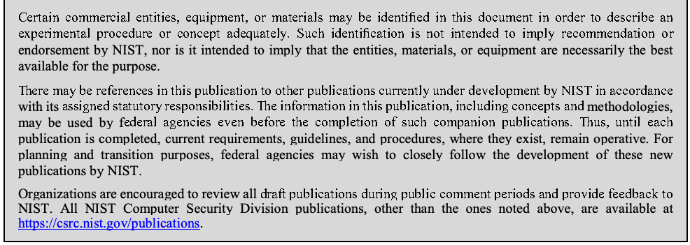
Comments on this publication may be submitted to: National Institute of Standards and Technology Attn: Advanced Network Technologies Division, Information Technology Laboratory 100 Bureau Drive (Mail Stop 8920) Gaithersburg, MD 20899-8920 Email: SP800-177@nist.gov
本刊行物への意見は、次の宛先に提出できる：National Institute of Standards and Technology、宛先：Advanced Network Technologies Division, Information Technology Laboratory、100 Bureau Drive (Mail Stop 8920)、Gaithersburg, MD 20899-8920、電子メール：SP800-177@nist.gov
未レビュー訳All comments are subject to release under the Freedom of Information Act (FOIA).
すべての意見は情報自由法（FOIA）に基づく公開の対象となる。
Reports on Computer Systems Technology
コンピュータシステム技術に関する報告書
�e Information Technology Laboratory (ITL) at the National Institute of Standards and Technology (NIST) promotes the U.S. economy and public welfare by providing technical leadership for the Nation’s measurement and standards infrastructure. ITL develops tests, test methods, reference data, proof of concept implementations, and technical analyses to advance the development and productive use of information technology. ITL’s responsibilities include the development of management, administrative, technical, and physical standards and guidelines for the cost-effective security and privacy of other than national security-related information in federal information systems. �e Special Publication 800-series reports on ITL’s research, guidelines, and outreach efforts in information system security, and its collaborative activities with industry, government, and academic organizations.
米国国立標準技術研究所（NIST）の情報技術研究所（ITL）は、国家の計測・標準インフラに技術的リーダーシップを提供することで、米国経済と公共の福祉を促進している。ITLは、情報技術の発展および生産的な利用を推進するため、試験、試験方法、参照データ、概念実証の実装、技術分析を開発する。ITLの責務には、連邦情報システムにおける国家安全保障関連以外の情報の費用対効果に優れたセキュリティおよびプライバシーのための管理的、運用的、技術的および物理的な標準・ガイドラインの策定が含まれる。特別刊行物800シリーズは、情報システムセキュリティに関するITLの研究、ガイドライン、普及活動ならびに産業界、政府および学術機関との協力活動を報告する。
未レビュー訳Abstract
概要
�is document gives recommendations and guidelines for enhancing trust in email. �e primary audience includes enterprise email administrators, information security specialists and network managers. �is guideline applies to federal IT systems and will also be useful for small or medium sized organizations. Technologies recommended in support of core Simple Mail Transfer Protocol (SMTP) and the Domain Name System (DNS) include mechanisms for authenticating a sending domain: Sender Policy Framework (SPF), Domain Keys Identified Mail (DKIM) and Domain based Message Authentication, Reporting and Conformance (DMARC). Recommendations for email transmission security include Transport Layer Security (TLS) and associated certificate authentication protocols. Recommendations for email content security include the encryption and authentication of message content using S/MIME (Secure/Multipurpose Internet Mail Extensions) and associated certificate and key distribution protocols.
本書は、電子メールの信頼性を高めるための推奨事項およびガイドラインを示す。主な対象読者は、企業の電子メール管理者、情報セキュリティ専門家およびネットワーク管理者である。本ガイドラインは連邦ITシステムに適用され、小規模または中規模の組織にも有用である。中核となる簡易メール転送プロトコル（SMTP）およびドメインネームシステム（DNS）を支援する推奨技術には、送信ドメインを認証する仕組みとして、Sender Policy Framework（SPF）、DomainKeys Identified Mail（DKIM）、Domain-based Message Authentication, Reporting and Conformance（DMARC）が含まれる。電子メール転送セキュリティの推奨事項には、Transport Layer Security（TLS）および関連する証明書認証プロトコルが含まれる。電子メール内容のセキュリティの推奨事項には、S/MIME（Secure/Multipurpose Internet Mail Extensions）および関連する証明書・鍵配布プロトコルによるメッセージ内容の暗号化と認証が含まれる。
未レビュー訳Keywords
キーワード
Email; Simple Mail Transfer Protocol (SMTP); Transport Layer Security (TLS); Sender Policy Framework (SPF); Domain Keys Identified Mail (DKIM); Domain based Message Authentication, Reporting and Conformance (DMARC); Authentication of Named Entities (DANE); S/MIME; OpenPGP.
電子メール；簡易メール転送プロトコル（SMTP）；Transport Layer Security（TLS）；Sender Policy Framework（SPF）；DomainKeys Identified Mail（DKIM）；Domain-based Message Authentication, Reporting and Conformance（DMARC）；Authentication of Named Entities（DANE）；S/MIME；OpenPGP
Audience
対象読者
未レビュー訳�is document gives recommendations and guidelines for enhancing trust in email. �e primary audience for these recommendations is federal enterprise email administrators, information security specialists and network managers. While some of the guidelines in this document pertain to federal IT systems and network policy, most of the document will be more general in nature and could apply to any organization.
本書は、電子メールの信頼性を高めるための推奨事項およびガイドラインを示す。これらの推奨事項の主な対象読者は、連邦政府機関の企業電子メール管理者、情報セキュリティ専門家およびネットワーク管理者である。本書のガイドラインの一部は連邦ITシステムおよびネットワーク方針に関するものだが、大部分はより一般的で、あらゆる組織に適用できる。
未レビュー訳For most of this document, it will be assumed that the organization has some or all responsibility for email and can configure or manage its own email and Domain Name System (DNS) systems. Even if this is not the case, the guidelines and recommendations in this document may help in education about email security and can be used to produce a set of requirements for a contracted service.
本書の大部分では、組織が電子メールに関する責任の一部または全部を持ち、自組織の電子メールおよびドメインネームシステム（DNS）を構成または管理できることを前提とする。そうでない場合でも、本書のガイドラインおよび推奨事項は電子メールセキュリティに関する教育に役立ち、委託サービスに対する要件一式の作成に利用できる。
Trademark Information
商標に関する情報
All registered trademarks belong to their respective organizations.
登録商標はすべて、それぞれの組織に帰属する。
Executive Summary
エグゼクティブサマリー
未レビュー訳�is document gives recommendations and guidelines for enhancing trust in email. �e primary audience includes enterprise email administrators, information security specialists and network managers. �is guideline applies to federal IT systems and will also be useful for small or medium sized organizations.
本書は、電子メールの信頼性を高めるための推奨事項およびガイドラインを示す。主な対象読者は、企業の電子メール管理者、情報セキュリティ専門家およびネットワーク管理者である。本ガイドラインは連邦ITシステムに適用され、小規模または中規模の組織にも有用である。
未レビュー訳Email is a core application of computer networking and has been such since the early days of Internet development. In those early days, networking was a collegial, research-oriented enterprise. Security was not a consideration. �e past forty years have seen diversity in applications deployed on the Internet, and worldwide adoption of email by research organizations, governments, militaries, businesses and individuals. At the same time there has been an associated increase in (Internet-based) criminal and nuisance threats.
電子メールはコンピュータネットワークの中核的なアプリケーションであり、インターネット開発の初期からその役割を担ってきた。当初、ネットワークは研究志向の協調的な取り組みであり、セキュリティは考慮されていなかった。その後40年間で、インターネット上のアプリケーションは多様化し、研究機関、政府、軍、企業および個人の間で電子メールが世界的に普及した。同時に、インターネットを利用した犯罪や迷惑行為の脅威も増大している。
未レビュー訳�e Internet’s underlying core email protocol, Simple Mail Transport Protocol (SMTP), was first adopted in 1982 and is still deployed and operated today. However, this protocol is susceptible to a wide range of attacks including man-in-the-middle content modification and content surveillance. �e basic standards have been modified and augmented over the years with adaptations that mitigate some of these threats. With spoofing protection, integrity protection, encryption and authentication, properly implemented email systems can be regarded as sufficiently secure for government, financial and medical communications.
インターネットの基盤となる中核的な電子メールプロトコル、簡易メール転送プロトコル（SMTP）は1982年に初めて採用され、現在も導入・運用されている。しかし、このプロトコルは中間者による内容改ざんや内容監視など、幅広い攻撃を受けやすい。基本標準は長年にわたり変更・拡張され、これらの脅威の一部を軽減する適応策が加えられてきた。なりすまし防止、完全性保護、暗号化および認証を適切に実装すれば、政府、金融および医療の通信に対して十分に安全な電子メールシステムとみなすことができる。
未レビュー訳NIST has been active in the development of email security guidelines for many years. �e most recent NIST guideline on secure email is NIST SP 800-45, Version 2 of February 2007, Guidelines on Electronic Mail Security. �e purpose of that document is:
NISTは長年にわたり電子メールセキュリティガイドラインの策定に取り組んできた。安全な電子メールに関する直近のNISTガイドラインは、2007年2月刊行のNIST SP 800-45第2版「電子メールセキュリティガイドライン」である。同文書の目的は次のとおりである：
未レビュー訳“To recommend security practices for designing, implementing and operating email systems on public and private networks,”
「公衆および私設ネットワーク上の電子メールシステムを設計、実装、運用するためのセキュリティ慣行を推奨すること」
未レビュー訳�ose recommendations include practices for securing the environments around enterprise mail servers and mail clients, and efforts to eliminate server and workstation compromise. �is guide complements SP 800-45 by providing more up-to-date recommendations and guidance for email digital signatures and encryption (via S/MIME), recommendations for protecting against unwanted email (spam), and recommendations concerning other aspects of email system deployment and configuration.
これらの推奨事項には、企業のメールサーバーやメールクライアントを取り巻く環境を保護する慣行、およびサーバーやワークステーションの侵害を防ぐ取り組みが含まれる。本ガイドはSP 800-45を補完し、電子メールのデジタル署名および暗号化（S/MIMEによる）に関する最新の推奨事項と指針、望ましくない電子メール（スパム）への対策、ならびに電子メールシステムの導入および構成に関するその他の推奨事項を示す。
未レビュー訳Following a description of the general email infrastructure and a threat analysis, these guidelines cluster into techniques for authenticating a sending domain, techniques for assuring email transmission security and those for assuring email content security. �e bulk of the security enhancements to email rely on records and keys stored in the Domain Name System (DNS) by one party and extracted from there by the other party. Increased reliance on the DNS is permissible because of the recent security enhancements there, in particular the development and widespread deployment of the DNS Security Extensions (DNSSEC) to provide source authentication and integrity protection of DNS data.
一般的な電子メールインフラストラクチャの説明と脅威分析に続き、本ガイドラインでは送信ドメイン認証、電子メール転送セキュリティの確保、電子メール内容セキュリティの確保という技法を扱う。電子メールのセキュリティ強化の大部分は、一方の当事者がドメインネームシステム（DNS）に保存し、他方がそこから取得するレコードおよび鍵に依存する。DNSへの依存度を高められるのは、近年DNSのセキュリティが強化され、特にDNSデータの送信元認証と完全性保護を提供するDNS Security Extensions（DNSSEC）が開発され、広く導入されたためである。
未レビュー訳�e purpose of authenticating the sending domain is to guard against senders (both random and malicious actors) from spoofing another’s domain and initiating messages with bogus content, and against malicious actors from modifying message contents in transit. Sender Policy Framework (SPF) is the standardized way for a sending domain to identify and assert the authorized mail senders for a given domain. Domain Keys Identified Mail (DKIM) is the mechanism for asserting sending servers and eliminating the vulnerability of man-in-the-middle content modification by using digital signatures generated from the sending mail server.
送信ドメインを認証する目的は、（無作為の送信者および悪意ある攻撃者の双方による）他者のドメインへのなりすましや偽の内容を含むメッセージの送信を防ぎ、悪意ある攻撃者による転送中のメッセージ内容改ざんを防ぐことである。Sender Policy Framework（SPF）は、特定ドメインの正規のメール送信者を送信ドメインが識別し表明するための標準化方式である。DomainKeys Identified Mail（DKIM）は、送信サーバーを表明し、送信メールサーバーで生成したデジタル署名を用いて中間者による内容改ざんの脆弱性を排除する仕組みである。
未レビュー訳Domain based Message Authentication, Reporting and Conformance (DMARC) was conceived to allow email senders to specify policy on how their mail should be handled, the types of security reports that receivers can send back, and the frequency those reports should be sent. Standardized handling of SPF and DKIM removes guesswork about whether a given message is authentic, benefitting receivers by allowing more certainty in quarantining and rejecting unauthorized mail. In particular, receivers compare the “From” address in the message to the SPF and DKIM results, if present, and the DMARC policy in the DNS. �e results are used to determine how the mail should be handled. �e receiver sends reports to the domain owner about mail claiming to originate from their domain. �ese reports should illuminate the extent to which unauthorized users are using the domain, and the proportion of mail received that is “good.”
Domain-based Message Authentication, Reporting and Conformance（DMARC）は、送信者が自らのメールの取扱方針、受信側が返送できるセキュリティレポートの種類、およびレポート送信頻度を指定できるように考案された。SPFおよびDKIMを標準化された方法で処理することで、メッセージが真正かどうかの推測をなくし、受信者が不正なメールを隔離または拒否する判断の確度を高める。特に受信者は、メッセージの「From」アドレスを、存在する場合はSPFおよびDKIMの結果とDNS内のDMARCポリシーに照らして比較する。その結果に基づきメールの取扱いを決定する。受信者は、そのドメインから送信されたと主張するメールについてドメイン所有者にレポートを送る。これらのレポートは、権限のないユーザーが当該ドメインをどの程度使用しているか、受信メールのうち「正当」なものの割合がどの程度かを明らかにする。
未レビュー訳Man-in-the-middle attacks can intercept cleartext email messages as they are transmitted hop-by-hop between mail relays. Any bad actor that can passively monitor network traffic can read such mail as it travels from submission to delivery systems. Email message confidentiality can be assured by encrypting traffic along the path. �e Transport Layer Security Protocol (TLS) uses an encrypted channel to protect message transfers from man-in-the-middle attacks. TLS relies on the Public Key Infrastructure (PKI) system of X.509 certificates to carry exchange material and provide information about the entity holding the certificate. �ese are usually generated by a Certificate Authority (CA). �e global CA ecosystem has in recent years become the subject to attack and has been successfully compromised more than once. One way to protect against CA compromises is to use the DNS to allow domains to specify their intended certificates or vendor CAs. Such uses of DNS require that the DNS itself be secured with DNSSEC. Correctly configured deployment of TLS may not stop a passive eavesdropper from viewing encrypted traffic but does practically eliminate the chance of deciphering it.
中間者攻撃は、メールリレー間をホップごとに転送される平文の電子メールメッセージを傍受できる。ネットワークトラフィックを受動的に監視できる攻撃者は、送信システムから配信システムへ移動するメールを読むことができる。経路上のトラフィックを暗号化すれば、電子メールメッセージの機密性を確保できる。Transport Layer Securityプロトコル（TLS）は暗号化チャネルを用いて、中間者攻撃からメッセージ転送を保護する。TLSは公開鍵基盤（PKI）のX.509証明書を用い、鍵交換情報を運び、証明書保有主体に関する情報を提供する。これらの証明書は通常、認証局（CA）が生成する。近年、世界的なCAエコシステムは攻撃対象となり、複数回侵害されている。CA侵害への対策の一つは、ドメインが使用予定の証明書またはベンダーCAを指定できるようDNSを利用することである。このようなDNSの利用には、DNSSECによってDNS自体を保護する必要がある。TLSを正しく構成して導入しても、受動的な盗聴者が暗号化トラフィックを閲覧すること自体は防げない場合があるが、その解読の可能性を実質的に排除できる。
未レビュー訳Server to server transport layer encryption also assures the integrity of email in transit, but senders and receivers who desire end-to-end assurance, (i.e., mailbox to mailbox) may wish to implement end-to-end, message-based authentication and confidentiality protections. �e sender may wish to digitally sign and/or encrypt the message content, and the receiver can authenticate and/or decrypt the received message. Secure Multipurpose Internet Mail Extensions (S/MIME) is the recommended protocol for email end-to-end authentication and confidentiality. �is usage of S/MIME is not common at the present time but is recommended. Certificate distribution remains a significant challenge when using S/MIME, especially the distribution of certificates between organizations. Research is underway on protocols that will allow the DNS to be used as a lightweight publication infrastructure for S/MIME certificates.
サーバー間の転送層暗号化は、転送中の電子メールの完全性も確保する。一方、エンドツーエンド（すなわちメールボックス間）の保証を求める送信者および受信者は、メッセージベースのエンドツーエンド認証・機密性保護を導入することが望ましい場合がある。送信者はメッセージ内容にデジタル署名を付与し、または暗号化でき、受信者は受信したメッセージを認証し、または復号できる。Secure/Multipurpose Internet Mail Extensions（S/MIME）は、電子メールのエンドツーエンド認証および機密性を実現する推奨プロトコルである。現在S/MIMEの利用は一般的ではないが、推奨される。S/MIMEを使用する際、証明書の配布、特に組織間での証明書配布は依然として大きな課題である。S/MIME証明書の軽量な公開基盤としてDNSを利用するプロトコルの研究が進められている。
未レビュー訳S/MIME is useful for authenticating email, since the protocol usually includes PKI certificates in messages in order to authenticate them, avoiding the necessity of distributing the sender’s public key certificate in advance. Encrypted mass mailings are more problematic, as S/MIME senders need to possess the certificate of each recipient if the sender wishes to send encrypted mail.
S/MIMEは、メッセージに通常PKI証明書が含まれ、それによってメッセージを認証できるため、電子メールの認証に有用であり、送信者の公開鍵証明書を事前に配布する必要を避けられる。大量のメールを暗号化する場合はより難しくなる。暗号化メールを送信するには、S/MIME送信者が各受信者の証明書を保有する必要があるためである。
Email communications cannot be made trustworthy with a single package or application. It involves incremental additions to basic subsystems, with each technology adapted to a particular task. Some of the techniques use other protocols such as DNS to facilitate specific security functions like domain authentication, content encryption and message originator authentication. �ese can be implemented discretely or in aggregate, according to organizational needs.
電子メール通信は、単一のパッケージまたはアプリケーションだけでは信頼できるものにならない。基本サブシステムに段階的な機能を追加し、それぞれの技術を特定のタスクに適応させる必要がある。ドメイン認証、内容暗号化、メッセージ送信元認証などの特定のセキュリティ機能を実現するため、DNSなどの他のプロトコルを利用する技法もある。これらは組織のニーズに応じて個別または一括で実装できる。
未レビュー訳Table of Contents
目次
未レビュー訳Executive Summary ..................................................................................................... iv
エグゼクティブサマリー ........................................................ iv
未レビュー訳1 Introduction — 1
1 はじめに — 1
未レビュー訳1.1 What This Guide Covers — 1
1.1 本ガイドの対象範囲 — 1
1.2 What This Guide Does Not Cover — 1
1.2 本ガイドの対象外 — 1
1.3 Document Structure — 1
1.3 文書の構成 — 1
1.4 Conventions Used in this Guide — 2
1.4 本ガイドで使用する表記 — 2
2 Elements of Email — 3
2 電子メールの構成要素 — 3
2.1 Email Components — 3
2.1 電子メールの構成要素 — 3
2.1.1 Mail User Agents (MUAs) — 3
2.1.1 メールユーザーエージェント（MUA） — 3
2.1.2 Mail Transfer Agents (MTAs) — 4
2.1.2 メール転送エージェント（MTA） — 4
2.1.3 Special Use Components — 4
2.1.3 特殊用途の構成要素 — 4
2.1.4 Special Considerations for Cloud and Hosted Service Customers — 5
2.1.4 クラウドおよびホステッドサービス利用者に関する特別な考慮事項 — 5
2.1.5 Email Server and Related Component Architecture — 5
2.1.5 電子メールサーバーおよび関連構成要素のアーキテクチャ — 5
2.2 Related Components — 5
2.2 関連構成要素 — 5
2.2.1 Domain Name System (DNS) — 5
2.2.1 ドメインネームシステム（DNS） — 5
2.2.2 Enterprise Perimeter Security Components — 6
2.2.2 企業境界セキュリティ構成要素 — 6
2.2.3 Public Key Infrastructure (PKI) — 6
2.2.3 公開鍵基盤（PKI） — 6
2.3 Email protocols — 7
2.3 電子メールプロトコル — 7
2.3.1 Simple Mail Transfer Protocol (SMTP) — 7
2.3.1 簡易メール転送プロトコル（SMTP） — 7
2.3.2 Mail Access Protocols (POP3, IMAP, MAPI/RPC) — 8
2.3.2 メールアクセスプロトコル（POP3、IMAP、MAPI/RPC） — 8
2.3.3 Internet Email Addresses — 9
2.3.3 インターネット電子メールアドレス — 9
2.4 Email Formats — 10
2.4 電子メール形式 — 10
未レビュー訳2.4.1 Email Message Format: Multi-Purpose Internet Mail Extensions (MIME) — 10
2.4.1 電子メールメッセージ形式：多目的インターネットメール拡張（MIME） — 10
2.4.2 Security in MIME Messages (S/MIME) — 10
2.4.2 MIMEメッセージのセキュリティ（S/MIME） — 10
2.4.3 Pretty Good Privacy (PGP/OpenPGP) — 11
2.4.3 Pretty Good Privacy（PGP/OpenPGP） — 11
2.5 Secure Web-Mail Solutions — 13
2.5 セキュアWebメールソリューション — 13
3 Security Threats to an Email Service — 15
3 電子メールサービスに対するセキュリティ脅威 — 15
3.1 Integrity-related Threats — 15
3.1 完全性に関する脅威 — 15
3.1.1 Unauthorized Email Senders within an Organization’s IP Address Block — 15
3.1.1 組織のIPアドレスブロック内における不正な電子メール送信者 — 15
3.1.2 Unauthorized Email Receiver within an Organization’s IP Address Block — 16
3.1.2 組織のIPアドレスブロック内における不正な電子メール受信者 — 16
3.1.3 Unauthorized Email Messages from a Valid DNS Domain (Address Spoofing)
3.1.3 有効なDNSドメインからの不正な電子メールメッセージ（アドレスなりすまし）
未レビュー訳— 17
— 17
未レビュー訳3.1.4 Tampering/Modification of Email Content — 17
3.1.4 電子メール内容の改ざん／変更 — 17
未レビュー訳3.1.5 DNS Cache Poisoning — 18
3.1.5 DNSキャッシュポイズニング — 18
3.1.6 Phishing and Spear Phishing — 18
3.1.6 フィッシングおよびスピアフィッシング — 18
3.2 Confidentiality-related Threats — 20
3.2 機密性に関する脅威 — 20
3.3 Availability-related Threats — 20
3.3 可用性に関する脅威 — 20
3.3.1 Email Bombing — 21
3.3.1 電子メール爆撃 — 21
3.3.2 Unsolicited Bulk Email (Spam) — 21
3.3.2 迷惑な大量電子メール（スパム） — 21
3.3.3 Availability of Email Servers — 22
3.3.3 電子メールサーバーの可用性 — 22
3.4 Summary of Threats and Mitigations — 22
3.4 脅威と緩和策の概要 — 22
3.5 Security Recommendations Summary — 24
3.5 セキュリティ推奨事項の概要 — 24
4 Authenticating a Sending Domain and Individual Mail Messages — 25
4 送信ドメインおよび個々のメールメッセージの認証 — 25
4.1 Introduction — 25
4.1 はじめに — 25
4.2 Visibility to End Users — 27
4.2 エンドユーザーへの可視性 — 27
4.3 Requirements for Using Domain-based Authentication Techniques for Federal Systems — 28
4.3 連邦システムでドメインベース認証技法を使用するための要件 — 28
4.4 Sender Policy Framework (SPF) — 28
4.4 Sender Policy Framework（SPF） — 28
4.4.1 Background — 28
4.4.1 背景 — 28
未レビュー訳4.4.2 SPF on the Sender Side — 30
4.4.2 送信側におけるSPF — 30
4.4.3 SPF and DNS — 33
4.4.3 SPFとDNS — 33
4.4.4 Considerations for SPF when Using Cloud Services or Contracted Services — 33
4.4.4 クラウドサービスまたは委託サービス利用時のSPFに関する考慮事項 — 33
4.4.5 SPF on the Receiver Side — 34
4.4.5 受信側におけるSPF — 34
4.5 DomainKeys Identified Mail (DKIM) — 35
4.5 DomainKeys Identified Mail（DKIM） — 35
4.5.1 Background — 35
4.5.1 背景 — 35
未レビュー訳4.5.2 DKIM on the Sender Side — 36
4.5.2 送信側におけるDKIM — 36
4.5.3 Generation and Distribution of the DKIM Key Pair — 36
4.5.3 DKIM鍵ペアの生成および配布 — 36
4.5.4 Example of a DKIM Signature — 37
4.5.4 DKIM署名の例 — 37
4.5.5 Generation and Provisioning of the DKIM Resource Record — 38
4.5.5 DKIMリソースレコードの生成および提供 — 38
4.5.6 Example of a DKIM RR — 39
4.5.6 DKIM RRの例 — 39
4.5.7 DKIM and DNS — 39
4.5.7 DKIMとDNS — 39
4.5.8 DKIM Operational Considerations — 39
4.5.8 DKIMの運用上の考慮事項 — 39
4.5.9 DKIM on the Receiver Side — 41
4.5.9 受信側におけるDKIM — 41
未レビュー訳4.5.10 Issues with Mailing Lists — 41
4.5.10 メーリングリストに関する問題 — 41
未レビュー訳4.5.11 Considerations for Enterprises When Using Cloud or Contracted Email
4.5.11 クラウドまたは委託メールサービスを利用する企業の考慮事項
未レビュー訳Services — 42
— 42
未レビュー訳4.6 Domain-based Message Authentication, Reporting and Conformance
4.6 ドメインベースのメッセージ認証、報告および適合（DMARC）
未レビュー訳(DMARC) — 42
— 42
未レビュー訳4.6.1 DMARC on the Sender Side — 43
4.6.1 送信側の DMARC — 43
4.6.2 The DMARC DNS Record — 44
4.6.2 DMARC DNS レコード — 44
4.6.3 Example of DMARC RR’s — 46
4.6.3 DMARC RR の例 — 46
未レビュー訳4.6.4 DMARC on the Receiver Side — 47
4.6.4 受信側の DMARC — 47
4.6.5 Policy and Reporting — 48
4.6.5 ポリシーおよび報告 — 48
4.6.6 Considerations for Agencies When Using Cloud or Contracted Email Services — 50
4.6.6 クラウドまたは委託メールサービスを利用する機関の考慮事項 — 50
4.6.7 Mail Forwarding and Indirect Email Flows — 50
4.6.7 メール転送および間接的なメールフロー — 50
未レビュー訳4.7 Authenticating Mail Messages with Digital Signatures — 53
4.7 デジタル署名によるメールメッセージの認証 — 53
4.7.1 End-to-End Authentication Using S/MIME Digital Signatures — 54
4.7.1 S/MIME デジタル署名によるエンドツーエンド認証 — 54
4.8 Recommendation Summary — 55
4.8 推奨事項の要約 — 55
未レビュー訳5 Protecting Email Confidentiality — 57
5 メールの機密性保護 — 57
5.1 Introduction — 57
5.1 はじめに — 57
未レビュー訳5.2 Email Transmission Security — 57
5.2 メール伝送セキュリティ — 57
5.2.1 TLS Configuration and Use — 58
5.2.1 TLS の構成および使用 — 58
5.2.2 X.509 Certificates — 59
5.2.2 X.509 証明書 — 59
5.2.3 STARTTLS — 63
5.2.3 STARTTLS — 63
未レビュー訳5.2.4 SMTP Security via Opportunistic DNS-based Authentication of Named Entities (DANE) Transport Layer Security (TLS) — 64
5.2.4 日和見的なDNSベースの名前付きエンティティ認証（DANE）トランスポート層セキュリティ（TLS）によるSMTPセキュリティ — 64
5.2.5 SMTP MTA Strict Transport Security (MTA-STS) — 66
5.2.5 SMTP MTA 厳格トランスポートセキュリティ（MTA-STS）— 66
5.2.6 Comparing DANE and MTA-STS — 69
5.2.6 DANE と MTA-STS の比較 — 69
5.2.7 Reporting TLS Errors to Senders — 69
5.2.7 TLS エラーの送信者への報告 — 69
5.3 Email Content Security — 70
5.3 メール内容のセキュリティ — 70
未レビュー訳5.3.1 S/MIME and SMIMEA — 71
5.3.1 S/MIME および SMIMEA — 71
5.3.2 OpenPGP and OPENPGPKEY — 73
5.3.2 OpenPGP および OPENPGPKEY — 73
5.4 Security Recommendation Summary — 74
5.4 セキュリティ推奨事項の要約 — 74
6 Reducing Unsolicited Bulk Email — 75
6 迷惑な一括メールの削減 — 75
6.1 Introduction — 75
6.1 はじめに — 75
6.2 Why an Organization May Want to Reduce Unsolicited Bulk Email — 75
6.2 組織が迷惑な一括メールを削減したいと考える場合がある理由 — 75
6.3 Techniques to Reduce Unsolicited Bulk Email — 75
6.3 迷惑な一括メールを削減する技法 — 75
6.3.1 Approved/Non-approved Sender Lists — 76
6.3.1 承認済み／未承認送信者リスト — 76
6.3.2 Domain-based Authentication Techniques — 77
6.3.2 ドメインベース認証技法 — 77
6.3.3 Content Filtering — 78
6.3.3 コンテンツフィルタリング — 78
6.4 User Education — 78
6.4 ユーザー教育 — 78
7 End User Email Security — 80
7 エンドユーザーのメールセキュリティ — 80
7.1 Introduction — 80
7.1 はじめに — 80
未レビュー訳7.2 Webmail Clients — 80
7.2 ウェブメールクライアント — 80
7.3 Standalone Clients — 80
7.3 スタンドアロンクライアント — 80
7.3.1 Sending via SMTP — 80
7.3.1 SMTP による送信 — 80
7.3.2 Receiving via IMAP — 81
7.3.2 IMAP による受信 — 81
7.3.3 Receiving via POP3 — 81
7.3.3 POP3 による受信 — 81
7.4 Mailbox Security — 82
7.4 メールボックスのセキュリティ — 82
未レビュー訳7.4.1 Confidentiality of Data in Transit — 82
7.4.1 転送中データの機密性 — 82
7.4.2 Confidentiality of Data at Rest — 82
7.4.2 保存データの機密性 — 82
7.5 Security Recommendation Summary — 83
7.5 セキュリティ推奨事項の要約 — 83
List of Appendices
付録一覧
Appendix A— Acronyms — 84
付録 A— 略語 — 84
Appendix B— References — 85
付録 B— 参考文献 — 85
B.1 NIST Publications — 85
B.1 NIST 刊行物 — 85
B.2 Core Email Protocols — 86
B.2 メールの中核プロトコル — 86
B.3 Sender Policy Framework (SPF) — 87
B.3 送信者ポリシーフレームワーク（SPF）— 87
B.4 DomainKeys Identified Mail (DKIM) — 87
B.4 DomainKeys Identified Mail（DKIM）— 87
B.5 Domain-based Message Authentication, Reporting and Conformance
B.5 ドメインベースのメッセージ認証、報告および適合
未レビュー訳(DMARC) — 88
(DMARC) — 88
未レビュー訳B.6 Cryptography and Public Key Infrastructure (PKI) — 88
B.6 暗号技術および公開鍵基盤（PKI）— 88
B.7 Other — 90
B.7 その他 — 90
未レビュー訳Appendix C— Overlay of NIST SP 800-53 Controls to Email Messaging Systems 93
付録 C— メールメッセージングシステムへの NIST SP 800-53 管理策の対応表 93
未レビュー訳C.1 Introduction — 93
C.1 はじめに — 93
未レビュー訳C.2 Applicability — 93
C.2 適用性 — 93
C.3 Trustworthy Email Overlay — 93
C.3 信頼できるメールのオーバーレイ — 93
C.4 Control Baselines — 94
C.4 管理策ベースライン — 94
C.5 Additional/Expanded Controls — 108
C.5 追加／拡張管理策 — 108
List of Figures
図一覧
Figure 2-1: Main Components Used for Email — 3
図2-1: メールに使用される主なコンポーネント — 3
Figure 2-2: Basic SMTP Connection Set-up — 8
図2-2: SMTP 接続の基本設定 — 8
Figure 4-2: SMTP envelope header vs. message header — 29
図4-2: SMTP エンベロープヘッダーとメッセージヘッダー — 29
Figure 4-3: Use of Cloud Email with Third Party Email Scanning — 51
図4-3: 第三者メールスキャンを用いたクラウドメール — 51
Figure 4-4: Two models for sending digitally signed mail — 54
図4-4: デジタル署名付きメールを送信する2つのモデル — 54
Figure 5-1: Example of X.509 Certificate — 61
図5-1: X.509 証明書の例 — 61
Figure 6-1: Inbound email "pipeline" for UBE filtering — 75
図6-1: 迷惑メール（UBE）フィルタリングの受信メール「パイプライン」— 75
未レビュー訳Figure 6-2: Outbound email "pipeline" for UBE filtering — 76
図6-2: 迷惑メール（UBE）フィルタリングの送信メール「パイプライン」— 76
List of Tables
表一覧
Table 2-1: Comparison of S/MIME and OpenPGP operations — 13
表2-1: S/MIME と OpenPGP の操作比較 — 13
Table 4-1: SPF Mechanisms — 31
表4-1: SPF メカニズム — 31
Table 4-2: SPF Mechanism Qualifiers — 31
表4-2: SPF メカニズム修飾子 — 31
Table 4-3: Recommended Cryptographic Key Parameters — 36
表4-3: 推奨暗号鍵パラメータ — 36
Table 4-4: DKIM Signature Tag and Value Descriptions — 37
表4-4: DKIM 署名タグおよび値の説明 — 37
Table 4-5: DKIM RR Tag and Value Descriptions — 39
表4-5: DKIM RR タグおよび値の説明 — 39
Table 4-6: DMARC RR Tag and Value Descriptions — 44
表4-6: DMARC RR タグおよび値の説明 — 44
Table 4-7: Common relay techniques and their impact on domain-based authentication — 51
表4-7: 一般的な中継技法とドメインベース認証への影響 — 51
Table 5-1: MTA-STS Resource Record Tags and Descriptions — 67
表5-1: MTA-STS リソースレコードタグおよび説明 — 67
Table 5-2: MTA-STS Policy Tags and Descriptions — 68
表5-2: MTA-STS ポリシータグおよび説明 — 68
Table 5-3: Comparing DANE and MTA-STS — 69
表5-3: DANE と MTA-STS の比較 — 69
未レビュー訳Table 5-4: TLS Reporting Value Tags and Descriptions — 70
表5-4: TLS 報告値タグおよび説明 — 70
Table C-1: Overlay Control Baselines — 94
表C-1: 対応表の管理策ベースライン — 94
未レビュー訳1 Introduction
1 はじめに
未レビュー訳1.1 What This Guide Covers
1.1 本ガイドの対象範囲
�is guide provides recommendations for deploying protocols and technologies that improve the trustworthiness of email. �ese recommendations reduce the risk of spoofed email being used as an attack vector and reduce the risk of email contents being disclosed to unauthorized parties. �ese recommendations cover both the email sender and receiver.
本ガイドは、メールの信頼性を高めるプロトコルおよび技術の導入に関する推奨事項を示す。これらの推奨事項は、なりすましメールが攻撃手段として使われるリスクと、メール内容が権限のない者に開示されるリスクを低減する。推奨事項はメールの送信者と受信者の双方を対象とする。
未レビュー訳Several of the protocols discussed in this guide use technologies beyond the core email protocols and systems. �ese include the Domain Name System (DNS), Public Key Infrastructure (PKI) and other core Internet protocols. �is guide discusses how these systems can be used to provide security services for email.
本ガイドで扱うプロトコルのいくつかは、メールの中核プロトコルおよびシステム以外の技術を使用する。これにはドメインネームシステム（DNS）、公開鍵基盤（PKI）、その他の中核インターネットプロトコルが含まれる。本ガイドでは、これらのシステムをメールのセキュリティサービスに活用する方法を説明する。
未レビュー訳1.2 What This Guide Does Not Cover
1.2 本ガイドの対象外
�is guide views email as a service, and thus it does not discuss topics such as individual server hardening, configuration and network planning. �ese topics are covered in NIST Special Publication 800-45, Version 2 of February 2007, Guidelines on Electronic Mail Security [SP800-45]. �is guide should be viewed as a companion document to SP 800-45 that provides more updated guidance and recommendations that covers multiple components. �is guide attempts to provide a holistic view of email and will only discuss individual system recommendations as examples warrant.
本ガイドではメールをサービスとして扱うため、個々のサーバーの堅牢化、構成、ネットワーク計画などは説明しない。これらのトピックは、2007年2月版の NIST 特別刊行物 800-45 第2版「電子メールセキュリティのガイドライン」[SP800-45] で扱われている。本ガイドは SP 800-45 の補足文書として、複数のコンポーネントを対象とする、より新しい指針と推奨事項を提供する。本ガイドはメールを包括的に捉え、個別システムの推奨事項は必要に応じた例としてのみ説明する。
未レビュー訳Likewise, this guide does not give specific configuration details for email components. �ere are a variety of hardware and software components that perform one or multiple email related tasks and it would be impossible to list them all in one guide. �is guide will discuss protocols and configuration in an implementation neutral manner and administrators will need to consult their system documentation on how to execute the guidance for their specific implementations.
同様に、本ガイドはメールコンポーネントの具体的な構成詳細を示さない。メール関連タスクの一部または複数を実行するハードウェアおよびソフトウェアコンポーネントは多様であり、1つのガイドですべてを列挙することは不可能である。本ガイドでは実装に依存しない形でプロトコルと構成を説明するため、管理者は各自の実装で指針を適用する方法についてシステム文書を参照する必要がある。
未レビュー訳1.3 Document Structure
1.3 文書の構成
�e rest of the document is presented in the following manner:
本書の以降の構成は次のとおりである:
未レビュー訳•Section 2: Discusses the core email protocols and the main components such as Mail Transfer Agents (MTA) and Mail User Agents (MUA), and cryptographic email formats.
•第2節: メールの中核プロトコル、メール転送エージェント（MTA）やメールユーザーエージェント（MUA）などの主要コンポーネント、および暗号メール形式について説明する。
•Section 3: Discusses the threats against an organization's email service such as phishing, spam and denial of service (DoS).
•第3節: フィッシング、スパム、サービス拒否（DoS）など、組織のメールサービスに対する脅威を説明する。
•Section 4: Discusses the protocols and techniques a sending domain can use to authenticate valid email senders for a given domain. �is includes protocols such as Sender Policy Framework (SPF), DomainKeys Identified Mail (DKIM) and Domain-based Message and Reporting Conformance (DMARC).
•第4節: あるドメインの正規メール送信者を認証するために、送信側ドメインが利用できるプロトコルおよび技法を説明する。これには送信者ポリシーフレームワーク（SPF）、DomainKeys Identified Mail（DKIM）、ドメインベースのメッセージ認証および報告適合（DMARC）などのプロトコルが含まれる。
未レビュー訳•Section 5: Discusses server-to-server and end-to-end email authentication and confidentiality of message contents. �is includes email sent over Transport Layer Security (TLS), Secure Multipurpose Internet Mail Extensions (S/MIME) and OpenPGP.
•第5節: サーバー間およびエンドツーエンドのメール認証とメッセージ内容の機密性について説明する。これにはトランスポート層セキュリティ（TLS）、Secure Multipurpose Internet Mail Extensions（S/MIME）、OpenPGP を用いて送信されるメールが含まれる。
未レビュー訳•Section 6: Discusses technologies to reduce unsolicited and (often) malicious email messages sent to a domain.
•第6節: ドメインに送信される迷惑メールや（多くの場合）悪意のあるメールメッセージを削減する技術について説明する。
•Section 7: Discusses email security as it relates to end users and the final hop between local mail delivery servers and email clients. �is includes Internet Message Access Protocol (IMAP), Post Office Protocol (POP3), and techniques for email encryption.
•第7節: エンドユーザーに関係するメールセキュリティ、およびローカルメール配信サーバーとメールクライアント間の最終ホップについて説明する。これには Internet Message Access Protocol（IMAP）、Post Office Protocol（POP3）、メール暗号化技法が含まれる。
未レビュー訳1.4 Conventions Used in this Guide
1.4 本ガイドで使用する表記
�roughout this guide, the following format conventions are used to denote special use text:
本ガイド全体を通じて、特別な用途のテキストを示すため、次の書式を使用する:
未レビュー訳keyword - �e text relates to a protocol keyword or text used as an example.
keyword - テキストがプロトコルのキーワードまたは例として使用するテキストに関係することを示す。
未レビュー訳Security Recommendation: - Denotes a recommendation that administrators should note and account for when deploying the given protocol or security feature.
セキュリティ推奨事項: - 指定されたプロトコルまたはセキュリティ機能を導入する際に、管理者が留意し考慮すべき推奨事項を示す。
URLs are also included in the text and references to guide readers to a given website or online tool designed to aid administrators. �is is not meant to be an endorsement of the website or any product/service offered by the website publisher. All URLs were considered valid at the time of writing.
読者を所定のウェブサイトまたは管理者に役立つオンラインツールへ案内するため、本文および参考文献に URL も記載する。これは、そのウェブサイトまたは公開者が提供する製品／サービスを推奨するものではない。すべての URL は執筆時点で有効であることを確認した。
未レビュー訳2 Elements of Email
2 メールの構成要素
未レビュー訳2.1 Email Components
2.1 メールコンポーネント
�ere are a number of software components used to produce, send and transfer email. �ese components can be classified as clients or servers, although some components act as both. Some components are used interactively, and some are completely automated. In addition to the core components, some organizations use special purpose components that provide a specific set of security features. �ere are also other components used by mail servers when performing operations. �ese include the Domain Name System (DNS) and other network infrastructure pieces.
メールの作成、送信および転送には、さまざまなソフトウェアコンポーネントが使われる。これらはクライアントまたはサーバーに分類できるが、両方の役割を果たすコンポーネントもある。一部は対話的に使用され、完全に自動化されているものもある。中核コンポーネントのほか、特定のセキュリティ機能を提供する専用コンポーネントを使用する組織もある。メールサーバーが処理を行う際に使用する他のコンポーネントもあり、これにはドメインネームシステム（DNS）やその他のネットワークインフラストラクチャが含まれる。
未レビュー訳Fig 2-1 shows the relationship between the email system components on a network, which are described below in greater detail.
図2-1は、ネットワーク上のメールシステムコンポーネント間の関係を示す。各コンポーネントについて以下で詳しく説明する。
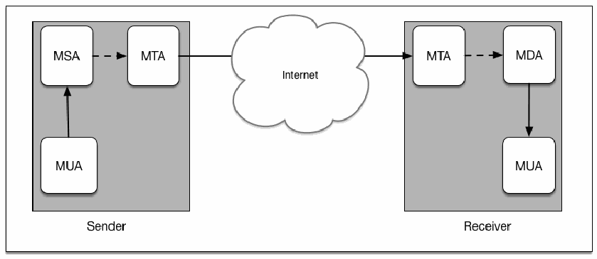
Figure 2-1: Main Components Used for Email
図2-1: メールに使用される主なコンポーネント
2.1.1 Mail User Agents (MUAs)
2.1.1 メールユーザーエージェント（MUA）
Most end users interact with their email system via a Mail User Agent (MUA). A MUA is a software component (or web interface) that allows an end user to compose and send messages and to one or more recipients. A MUA transmits new messages to a server for further processing (either final delivery or transfer to another server). �e MUA is also the component used by end users to access a mailbox where in-bound emails have been delivered. MUAs are available for a variety of systems including mobile hosts. �e proper secure configuration for a MUA depends on the MUA in question and the system it is running on. Some basic recommendations can be found in Section 7.
ほとんどのエンドユーザーはメールユーザーエージェント（MUA）を介してメールシステムを利用する。MUA は、エンドユーザーがメッセージを作成し、1人以上の受信者に送信できるようにするソフトウェアコンポーネント（またはウェブインターフェース）である。MUA は新しいメッセージをサーバーに送信し、後続の処理（最終配信または別サーバーへの転送）を行わせる。受信メールが配信されたメールボックスにエンドユーザーがアクセスする際にも MUA を使用する。MUA はモバイルホストを含むさまざまなシステムで利用できる。MUA の適切な安全構成は、使用する MUA と実行システムに依存する。基本的な推奨事項は第7節に記載する。
未レビュー訳MUAs may utilize several protocols to connect to and communicate with email servers, (see Section 2.3.2 below). �ere may also be other features as well such as a cryptographic interface for producing encrypted and/or digitally signed email.
MUA はメールサーバーへの接続および通信に複数のプロトコルを使用することがある（下記第2.3.2節参照）。暗号化メールやデジタル署名付きメールを作成する暗号インターフェースなど、他の機能を備える場合もある。
未レビュー訳2.1.2 Mail Transfer Agents (MTAs)
2.1.2 メール転送エージェント（MTA）
Email is transmitted, in a “store and forward” fashion, across networks via Mail Transfer Agents (MTAs). MTAs communicate using the Simple Mail Transfer Protocol (SMTP) described below and act as both client and server, depending on the situation. For example, an MTA can act as a server when accepting an email message from an end user's MUA, then act as a client in connecting to and transferring the message to the recipient domain's MTA for final delivery.
メールは「蓄積転送」方式で、メール転送エージェント（MTA）を介してネットワーク間を伝送される。MTA は後述する簡易メール転送プロトコル（SMTP）を使用して通信し、状況に応じてクライアントとサーバーの両方として動作する。たとえば、MTA はエンドユーザーの MUA からメールメッセージを受け入れる際にはサーバーとして動作し、その後、受信側ドメインの MTA に接続してメッセージを転送し最終配信する際にはクライアントとして動作する。
MTAs can be described with more specialized language that denotes specific functions:
MTAは、特定の機能を示す、より専門的な用語で説明することもできる：
•Mail Submission Agents (MSA): An MTA that accepts mail from MUAs (usually after authenticating the sender) and begins the transmission process by sending it to a MTA for further processing. Often the MSA and first-hop MTA is the same process, just fulfilling both roles.
•メール送信エージェント (MSA): MUAからメールを受け付け (通常は送信者の認証後)、さらに処理するMTAへ送信することで転送処理を開始するMTA。MSAと最初のホップのMTAは、両方の役割を果たす同じプロセスであることが多い。
•Mail Delivery Agent (MDA): An MTA that receives mail from an organization's inbound MTA and ultimately places the message in a specific mailbox. Like the MSA, the MDA could be a combined in-bound MTA and MDA component.
•メール配信エージェント (MDA): 組織の受信側MTAからメールを受信し、最終的に特定のメールボックスへメッセージを格納するMTA。MSAと同様、受信側MTAとMDAを統合したコンポーネントとして実装されることがある。
Mail servers may also perform various security functions to prevent malicious email from being delivered or include authentication credentials such as digital signatures (see Sender Policy Framework Section 4.3 and DomainKeys Identified Mail (DKIM) Section 4.5). �ese security functions may be provided by other components that act as lightweight MTAs or these functions may be added to MTAs via filters or patches.
メールサーバーは、悪意あるメールの配信を防ぐためのさまざまなセキュリティ機能を実行したり、デジタル署名などの認証情報を含めたりすることもある (Sender Policy Frameworkの第4.3節およびDomainKeys Identified Mail (DKIM) の第4.5節を参照)。こうしたセキュリティ機能は、軽量MTAとして動作する他のコンポーネントが提供する場合もあれば、フィルターやパッチを介してMTAに追加される場合もある。
未レビュー訳An email message may pass through multiple MTAs before reaching the final recipient. Each MTA in the chain may have its own security policy (which may be uniform within an organization but may not be uniform) and there is currently no way for a sender to request a particular level of security for the email message. However, there is work in progress1 for specifying how a client can request the use of TLS for message transmission.
メールメッセージは最終受信者に届くまでに複数のMTAを経由することがある。チェーン内の各MTAは独自のセキュリティ方針を持つ可能性があり (組織内で統一されている場合も、そうでない場合もある)、現在、送信者がメールメッセージに特定のセキュリティレベルを要求する方法はない。ただし、クライアントがメッセージ転送にTLSの使用を要求する方法を規定する作業が進行中である1。
未レビュー訳2.1.3 Special Use Components
2.1.3 特殊用途コンポーネント
In addition to MUAs and MTAs, an organization may use one or more special purpose components for a particular task. �ese components may provide a security function such as malware filtering or may provide some business process functionality such as email archiving or content filtering. �ese components may exchange messages with other parts of the email infrastructure using all or part of SMTP (see Section 2.3.1) or use another protocol altogether.
MUAおよびMTAに加えて、組織は特定のタスクのために1つ以上の特殊用途コンポーネントを使用する場合がある。これらのコンポーネントは、マルウェアフィルタリングなどのセキュリティ機能を提供したり、メールアーカイブやコンテンツフィルタリングなどの業務プロセス機能を提供したりする。これらのコンポーネントは、SMTPの全部または一部 (第2.3.1節参照) を用いてメール基盤の他の部分とメッセージを交換する場合も、別のプロトコルを使用する場合もある。
未レビュー訳Given the variety of components, there is no one single set of configurations for an administrator to deploy, and different organizations have deployed very different email architectures. An administrator should consult the documentation for their given component and their existing site-specific architecture.
コンポーネントは多様であるため、管理者が展開すべき単一の構成一式は存在せず、組織ごとに大きく異なるメールアーキテクチャが導入されている。管理者は、各コンポーネントの文書と既存のサイト固有アーキテクチャを確認すべきである。
未レビュー訳2.1.4 Special Considerations for Cloud and Hosted Service Customers
2.1.4 クラウドおよびホステッドサービスの利用者に関する特別な考慮事項
Organizations that outsource their email service (whole or in part) may not have direct access to MTAs, Authoritative DNS servers, or any possible special use components. In cases of Email as a Service (EaaS), the service provider is responsible for the email infrastructure. Customers of Infrastructure as a Service (IaaS) may have sufficient access privileges to configure their email servers themselves. In either architecture, the enterprise may have complete configuration control over MUAs in use.
メールサービスの全部または一部を外部委託する組織は、MTA、権威DNSサーバー、または特殊用途コンポーネントに直接アクセスできないことがある。Email as a Service (EaaS) の場合、メール基盤はサービスプロバイダーの責任である。Infrastructure as a Service (IaaS) の顧客は、自らメールサーバーを構成するのに十分なアクセス権限を持つ場合がある。どちらのアーキテクチャでも、企業は使用中のMUAを完全に構成管理できる可能性がある。
未レビュー訳2.1.5 Email Server and Related Component Architecture
2.1.5 メールサーバーおよび関連コンポーネントのアーキテクチャ
How an organization architects its email infrastructure is beyond the scope of this document. It is up to the organization and administrators to identify key requirements (availability, security, etc.) and available product or service offerings to meet those requirements. Federal IT administrators also need to take relevant federal IT policies into account when acquiring and deploying email systems.
組織がメール基盤をどのように設計するかは、本書の対象範囲外である。可用性やセキュリティなどの主要要件と、それを満たすために利用できる製品またはサービスを特定するのは、組織および管理者の責任である。連邦政府のIT管理者は、メールシステムの取得および展開に際して、関連する連邦IT方針も考慮する必要がある。
未レビュー訳Guidance for deploying and configuring an MTA for federal agency use exists as NIST SP 800-45 Guidelines on Electronic Mail Security [SP800-45]. In addition, the Dept. of Homeland Security (DHS) has produced the Email Gateway Reference Architecture [REFARCH] for agencies to use as a guide when setting up or modifying the email infrastructure for an agency.
連邦機関で使用するMTAの展開および構成に関する指針は、NIST SP 800-45「電子メールセキュリティガイドライン」[SP800-45] に示されている。また、国土安全保障省 (DHS) は、機関がメール基盤を構築または変更する際の指針として「Email Gateway Reference Architecture」[REFARCH] を作成している。
未レビュー訳2.2 Related Components
2.2 関連コンポーネント
In addition to MUAs and MTAs, there are other network components used to support the email service for an organization. Most obviously is the physical infrastructure: the cables, wireless access points, routers and switches that make up the network. In addition, there are network components used by email components in the process of completing their tasks. �is includes the DNS, Public Key Infrastructure (PKI), and network security components that are used by the organization.
MUAおよびMTAに加え、組織のメールサービスを支援するために他のネットワークコンポーネントも使用される。最も明らかなのは、ネットワークを構成するケーブル、無線アクセスポイント、ルーターおよびスイッチなどの物理基盤である。また、メールコンポーネントがタスクを実行する過程で利用するネットワークコンポーネントもある。これには、組織が使用するDNS、公開鍵基盤 (PKI)、ネットワークセキュリティコンポーネントが含まれる。
未レビュー訳2.2.1 Domain Name System (DNS)
2.2.1 ドメインネームシステム (DNS)
�e DNS is a global, distributed database and associated lookup protocol. DNS is used to map a piece of information (most commonly a domain name) to an IP address or some other network information used by a computer system. �e DNS is used by MUAs to find MSAs and by MTAs to find the IP address of the next-hop server for mail delivery. Sending MTAs query DNS for the Mail Exchange Resource Record (MX RR) of the recipient's domain (the part of an email address to the right of the “@” symbol) in order to find the receiving MTA to contact.
DNSは、グローバルに分散されたデータベースと、それに関連する検索プロトコルである。DNSは、情報 (最も一般的にはドメイン名) をIPアドレスや、コンピューターシステムが使用する他のネットワーク情報に対応付けるために使用される。MUAはMSAを検索するため、MTAはメール配信先の次ホップサーバーのIPアドレスを検索するためにDNSを使用する。送信MTAは、連絡先となる受信MTAを見つけるため、受信者ドメイン (メールアドレスの「@」より右側) のMail Exchange Resource Record (MX RR) をDNSに問い合わせる。
未レビュー訳In addition to the “forward” DNS (translate domain names to IP addresses or other data), there is also the “reverse” DNS tree that is used to map IP addresses to their corresponding DNS name, or other data. Traditionally, the reverse tree is used to obtain the domain name for a given client based on the source IP address of the connection, but it is also used as a crude, highly imperfect authentication check. A host compares the forward and reverse DNS trees to check that the remote connection is likely valid and not a potential attacker abusing a valid IP address block. �is can be more problematic in IPv6, where even small networks can be assigned very large address blocks. Email anti-abuse consortiums such as the Messaging, Malware Mobile Anti-Abuse Working Group (M3AAWG) recommend that enterprises should make sure that DNS reverse trees identify the authoritative mail servers for a domain [M3AAWG].
ドメイン名をIPアドレスやその他のデータに変換する「順引き」DNSに加えて、IPアドレスを対応するDNS名やその他のデータに対応付ける「逆引き」DNSツリーもある。従来、逆引きツリーは接続元IPアドレスからクライアントのドメイン名を取得するために使われるが、不完全ながら認証確認としても用いられる。ホストは順引きと逆引きDNSツリーを比較し、リモート接続が妥当であり、有効なIPアドレスブロックを悪用する攻撃者ではない可能性を確認する。IPv6では小規模ネットワークにも非常に大きなアドレスブロックが割り当てられるため、これはさらに問題となる場合がある。Messaging, Malware Mobile Anti-Abuse Working Group (M3AAWG) などのメール不正利用対策団体は、ドメインの権威メールサーバーをDNS逆引きツリーで識別できるようにすることを企業に推奨している [M3AAWG]。
未レビュー訳�e DNS is also used as the publication method for protocols designed to protect email and combat malicious, spoofed email. Technologies such as SPF, DKIM and other use the DNS to publish policy artifacts or public keys that can be used by receiving MTAs to validate that a given message originated from the purported sending domain's mail servers. �ese protocols are discussed in Section 4. In addition, there are new proposals to encode end-user certificates or public keys (for S/MIME or OpenPGP) in the DNS using a mailbox as the hostname. �ese protocols are discussed in Section 5.3.
DNSは、メールを保護し、悪意あるなりすましメールに対抗するプロトコルを公開する方法としても使われる。SPF、DKIMなどの技術はDNSを用いてポリシー情報または公開鍵を公開し、受信MTAがメッセージの送信元が主張された送信ドメインのメールサーバーであることを検証できるようにする。これらのプロトコルは第4節で説明する。また、メールボックスをホスト名として用い、エンドユーザー証明書または公開鍵 (S/MIMEまたはOpenPGP用) をDNSに登録する新しい提案もある。これらのプロトコルは第5.3節で説明する。
未レビュー訳A third use of the DNS with email is with reputation services. �ese services provide information about the authenticity of an email based on the purported sending domain or originating IP address. �ese services do not rely on the anti-spoofing techniques described above but through historical monitoring, domain registration history, and other information sources. �ese services are often used to combat unsolicited bulk email (i.e., spam) and malicious email that could contain malware or links to subverted websites.
メールにおけるDNSの3つ目の用途はレピュテーションサービスである。これらのサービスは、主張された送信ドメインまたは送信元IPアドレスに基づいて、メールの真正性に関する情報を提供する。前述のなりすまし対策技術には依存せず、過去の監視、ドメイン登録履歴、その他の情報源を利用する。こうしたサービスは、迷惑メール (スパム) やマルウェアまたは侵害されたウェブサイトへのリンクを含み得る悪意あるメールへの対策によく用いられる。
未レビュー訳�e Domain Name System Security Extensions (DNSSEC) [RFC4033] provides cryptographic security for DNS queries. Without security, DNS can be subjected to a variety of spoofing and man-in-the-middle attacks. Recommendations for deploying DNS in a secure manner are beyond the scope of this document. Readers are directed to NIST SP 800-81 [SP800-81] for recommendations on deploying DNSSEC.
Domain Name System Security Extensions (DNSSEC) [RFC4033] はDNS問い合わせに暗号学的なセキュリティを提供する。セキュリティがなければ、DNSはさまざまななりすまし攻撃や中間者攻撃の対象となり得る。DNSを安全に展開するための推奨事項は本書の対象範囲外である。DNSSEC展開に関する推奨事項についてはNIST SP 800-81 [SP800-81] を参照されたい。
未レビュー訳2.2.2 Enterprise Perimeter Security Components
2.2.2 企業境界のセキュリティコンポーネント
Organizations may utilize security components that do not directly handle email but may perform operations that affect email transactions. �ese include network components like firewalls, Intrusion Detection Systems (IDS) and similar malware scanners. �ese systems may not play any direct role in the sending and delivering of email but may have a significant impact if misconfigured. �is could result in legitimate SMTP connections being denied and the failure of valid email to be delivered. Network administrators should take the presence of these systems into consideration when making changes to an organization's email infrastructure. �is document makes no specific recommendations regarding these peripheral components.
組織はメールを直接処理しないものの、メール取引に影響する処理を行うセキュリティコンポーネントを使用する場合がある。これにはファイアウォール、侵入検知システム (IDS)、同種のマルウェアスキャナーなどのネットワークコンポーネントが含まれる。これらのシステムはメールの送受信に直接関与しない場合もあるが、構成を誤ると大きな影響を及ぼす。正規のSMTP接続が拒否され、有効なメールが配信されない可能性がある。ネットワーク管理者は組織のメール基盤を変更する際、これらのシステムの存在を考慮すべきである。本書はこれら周辺コンポーネントについて具体的な推奨事項を示さない。
未レビュー訳2.2.3 Public Key Infrastructure (PKI)
2.2.3 公開鍵基盤 (PKI)
Organizations that send and receive S/MIME or OpenPGP protected messages, as well as those that use TLS, will also need to rely on the certificate infrastructure (S/MIME) or key server ecosystem (OpenPGP) used with these protocols. �ese infrastructures do not always require the deployment of a dedicated system, but does require administrator time to obtain, configure and distribute security credentials to end-users.
S/MIMEまたはOpenPGPで保護されたメッセージを送受信する組織、およびTLSを使用する組織は、これらのプロトコルで使う証明書基盤 (S/MIME) または鍵サーバーエコシステム (OpenPGP) にも依存する必要がある。これらの基盤は専用システムの展開を常に必要とするわけではないが、エンドユーザー向けのセキュリティ認証情報を取得、構成、配布する管理者の作業は必要となる。
未レビュー訳X.509 certificates can be used to authenticate one (or both) ends of a TLS connection when SMTP runs over TLS (usually MUA to MTA). S/MIME also uses X.509 certificates [RFC5280] to certify and store public keys used to validate digital signatures and encrypt email. �e Internet X.509 Public Key Infrastructure Certificate and Certificate Revocation List (CRL) Profile is commonly called PKIX and is specified by [RFC5280]. Certificate Authorities (CA) (or the organization itself) issues X.509 certificates for an individual end-user or enterprise/business role (performed by a person or not) that sends email (for S/MIME). Recommendations for S/MIME protected email are given in Section 5. Recommendations for SMTP over TLS are given in Section 5. Federal agency network administrators should also consult NIST SP 800-57 Part 3 [SP800-57P3] and the Federal PKI Key Recovery Policy [FPKIKRP] for further guidance on cryptographic parameters and deployment of any PKI components and credentials within an organization.
SMTPがTLS上で動作する場合 (通常はMUAからMTA)、TLS接続の一方または両方の端点を認証するためにX.509証明書を使用できる。S/MIMEもX.509証明書 [RFC5280] を用いて、デジタル署名の検証とメール暗号化に使う公開鍵を証明・格納する。Internet X.509 Public Key Infrastructure Certificate and Certificate Revocation List (CRL) Profileは一般にPKIXと呼ばれ、[RFC5280] で規定される。認証局 (CA) または組織自体が、メールを送信する個人のエンドユーザーまたは企業/業務上の役割 (担当者がいる場合もいない場合もある) にX.509証明書を発行する。S/MIMEで保護されたメールの推奨事項は第5節、TLS上のSMTPの推奨事項も第5節に示す。連邦機関のネットワーク管理者は、暗号パラメーターおよび組織内のPKIコンポーネントと認証情報の展開に関する追加指針として、NIST SP 800-57 Part 3 [SP800-57P3] およびFederal PKI Key Recovery Policy [FPKIKRP] も参照すべきである。
未レビュー訳2.3 Email protocols
2.3 メールプロトコル
�ere are two types of protocols used in the transmission of email. �e first are the protocols used to transfer messages between MTAs and their end users (using MUAs). �e second is the protocol used to transfer messages between mail servers.
メール転送に使用されるプロトコルには2種類ある。1つ目はMTAとエンドユーザー (MUAを使用) の間でメッセージを転送するプロトコルである。2つ目はメールサーバー間でメッセージを転送するプロトコルである。
未レビュー訳�is guide is not meant to be an in-depth discussion of the protocols used in email. �ese protocols are discussed here simply for background information.
本ガイドはメールプロトコルを詳細に説明するものではない。ここでは背景情報として簡単に説明する。
未レビュー訳2.3.1 Simple Mail Transfer Protocol (SMTP)
2.3.1 Simple Mail Transfer Protocol (SMTP)
Email messages are transferred from one mail server to another (or from an MUA to MSA/MTA) using SMTP. SMTP was originally specified in 1982 in [RFC821] and has undergone several revisions, the most current being [RFC5321]. SMTP is a text-based client-server protocol where the client (email sender) contacts the server (next-hop MTA) and issues a set of commands to tell the server about the message to be sent, and then transmits the message itself. �e majority of these commands are ASCII text messages sent by the client and a resulting return code (also ASCII text) returned by the server. �e basic SMTP connection procedure is shown below in Figure 2-2:
メールメッセージはSMTPを用いて、あるメールサーバーから別のメールサーバーへ (またはMUAからMSA/MTAへ) 転送される。SMTPは1982年に[RFC821]で最初に規定され、その後複数回改訂されており、最新版は[RFC5321]である。SMTPはテキストベースのクライアント/サーバープロトコルであり、クライアント (メール送信者) がサーバー (次ホップMTA) に接続して、送信メッセージに関する一連のコマンドを送信し、その後メッセージ自体を転送する。これらのコマンドの大半はクライアントが送るASCIIテキストメッセージであり、サーバーはASCIIテキストの戻りコードを返す。基本的なSMTP接続手順を図2-2に示す。
未レビュー訳Client connects to port 25 Server: 220 mx.example.com Client: HELO mta.example.net S: 250 Hello mta.example.net, I am glad to meet you C: MAIL FROM:<alice@example.org> S: 250 Ok C: RCPT TO:<bob@example.com> S: 354 End data with <CR><LF>.<CR><LF> Client sends message headers and body
Client connects to port 25 Server: 220 mx.example.com Client: HELO mta.example.net S: 250 Hello mta.example.net, I am glad to meet you C: MAIL FROM:<alice@example.org> S: 250 Ok C: RCPT TO:<bob@example.com> S: 354 End data with <CR><LF>.<CR><LF> Client sends message headers and body
未レビュー訳C: .
C: .
未レビュー訳S: 250 Ok: queued as 12345
S: 250 Ok: queued as 12345
未レビュー訳C: QUIT
C: QUIT
未レビュー訳S: 221 Bye Server closes the connection
S: 221 Bye Server closes the connection
未レビュー訳Figure 2-2: Basic SMTP Connection Set-up
図2-2: SMTP基本接続の確立
In the above, the client initiates the connection using TCP over port 252. After the initial connection, the client and server perform a series of SMTP transactions to send the message. �ese transactions take the form of first stating the return address of the message (known as the return path) using the MAIL command, then the recipient(s) using the RCPT command and ending with the DATA command which contains the header and body of the email message. After each command the server responds with either a positive or negative (i.e., error) code.
上記では、クライアントはTCPを使用してポート252経由で接続を開始する。初期接続後、クライアントとサーバーはメッセージを送信するため一連のSMTPトランザクションを実行する。まずMAILコマンドでメッセージの返信先 (return path) を指定し、次にRCPTコマンドで受信者を指定し、最後にメールのヘッダーと本文を含むDATAコマンドを実行する。各コマンドの後、サーバーは肯定または否定 (エラー) コードを返す。
未レビュー訳SMTP servers can advertise the availability of options during the initial connection. �ese extensions are currently defined in [RFC5321]. �ese options usually deal with the transfer of the actual message and will not be covered in this guide except for the STARTTLS option. �is option advertised by the server is used to indicate to the client that Transport Layer Security (TLS) is available. SMTP over TLS allows the email message to be sent over an encrypted channel to protect against monitoring a message in transit. Recommendations for configuring SMTP over TLS are given in Section 5.2.
SMTPサーバーは初期接続時に利用可能なオプションを通知できる。これらの拡張は現在[RFC5321]で定義されている。オプションは通常メッセージ自体の転送に関するものであり、本ガイドではSTARTTLSオプションを除き扱わない。サーバーが通知するこのオプションは、Transport Layer Security (TLS) を利用可能であることをクライアントに示す。TLS上のSMTPでは、転送中の監視から保護するため、暗号化チャネルを通じてメールメッセージを送信できる。TLS上のSMTPの構成推奨事項は第5.2節に示す。
未レビュー訳2.3.2 Mail Access Protocols (POP3, IMAP, MAPI/RPC)
2.3.2 メールアクセスプロトコル (POP3、IMAP、MAPI/RPC)
MUAs typically do not use SMTP when retrieving mail from an end-user's mailbox, only for submission. MUAs use another client-server protocol to retrieve the mail from a server for display on an end-user's host system. �ese protocols are commonly called Mail Access Protocols and are either Post Office Protocol (POP) or Internet Message Access Protocol (IMAP). Most modern MUAs support both protocols but an enterprise service may restrict the use of one in favor of a single protocol for ease of administration or other reasons. Recommendations for the secure configuration of these protocols are given in Section 7.
MUAは通常、エンドユーザーのメールボックスからメールを取得する際にはSMTPを使わず、送信時にのみ使用する。MUAは別のクライアント/サーバープロトコルを使って、サーバーからエンドユーザーのホストシステムへメールを取得して表示する。これらは一般にメールアクセスプロトコルと呼ばれ、Post Office Protocol (POP) またはInternet Message Access Protocol (IMAP) のいずれかである。ほとんどの最新MUAは両方をサポートするが、企業サービスでは管理の容易さなどを理由に、いずれか一方の使用を制限する場合がある。これらのプロトコルを安全に構成する推奨事項は第7節に示す。
未レビュー訳POP version 3 (POP3) [STD35] is the simpler of the two protocols and typically downloads all mail for a user from the server, then deletes the copy on the server, although there is an option to maintain it on the server. POP3 is similar to SMTP, in that the client connects to a port (normally port 110 or port 995 when using TLS) and sends ASCII commands, to which the server responds, only instead of sending messages, it retrieves messages from the MTA. When the session is complete, the client terminates the connection. POP3 transactions are normally done in the clear, but an extension is available to do POP3 over TLS using the STLS command, which is very similar to the STARTTLS option in SMTP. Clients may connect initially over port 110 and invoke the STLS command, or alternatively, most servers allow TLS by default connections on port 995.
POP version 3 (POP3) [STD35] は2つのプロトコルのうち簡易な方であり、通常はサーバーからユーザーのメールをすべてダウンロードしてサーバー上のコピーを削除するが、サーバーに保持する選択肢もある。POP3はSMTPと同様に、クライアントがポート (通常は110、TLS使用時は995) に接続し、ASCIIコマンドを送信するとサーバーが応答する。ただしメッセージを送る代わりに、MTAからメッセージを取得する。セッションが完了すると、クライアントは接続を終了する。POP3の通信は通常平文だが、SMTPのSTARTTLSオプションとよく似たSTLSコマンドを用いてTLS上でPOP3を実行する拡張がある。クライアントはポート110で最初に接続してSTLSコマンドを実行できる。あるいは、ほとんどのサーバーではポート995でTLS接続を既定で許可している。
IMAP [RFC3501] is an alternative to POP3 but includes more built-in features that make it more appealing for enterprise use. IMAP clients can download email messages, but the messages remain on the server. �is and the fact that multiple clients can access the same mailbox simultaneously mean that end-users with multiple devices (laptop and smartphone for example), can keep their email synchronized across multiple devices. Like POP3, IMAP also has the ability to secure the connection between a client and a server. Traditionally, IMAP uses port 143 with no encryption. Encrypted IMAP runs over port 993, although modern IMAP servers also support the STARTTLS option on port 143.
IMAP [RFC3501] はPOP3の代替プロトコルであり、企業利用に適した組み込み機能を多く備える。IMAPクライアントはメールをダウンロードできるが、メッセージはサーバーに残る。この点と、複数のクライアントが同じメールボックスに同時アクセスできることにより、複数の端末 (例: ノートPCとスマートフォン) を持つエンドユーザーは、各端末間でメールを同期できる。POP3と同様に、IMAPにもクライアントとサーバー間の接続を保護する機能がある。従来、IMAPは暗号化なしのポート143を使う。暗号化IMAPはポート993で動作するが、最新のIMAPサーバーはポート143でSTARTTLSオプションもサポートする。
未レビュー訳In addition to POP3 and IMAP, there are other proprietary protocols in use with certain enterprise email implementations. Microsoft Exchange clients3 can use the Messaging Application Programming Interface (MAPI/RPC) to access a mailbox on a Microsoft Exchange server (and some other compatible implementations). Some cloud providers require clients to access their cloud-based mailbox using a web portal as the MUA instead of a dedicated email client. With the exception of Microsoft’s Outlook Web Access, most web portals use IMAP to access the user’s mailbox.
POP3およびIMAP以外にも、特定の企業向けメール実装で使われる独自プロトコルがある。Microsoft Exchangeクライアント3はMessaging Application Programming Interface (MAPI/RPC) を使って、Microsoft Exchangeサーバー (および一部の互換実装) のメールボックスにアクセスできる。クラウドプロバイダーによっては、専用メールクライアントをMUAとして使う代わりに、ウェブポータル経由でクラウドメールボックスにアクセスするよう要求する。MicrosoftのOutlook Web Accessを除き、ほとんどのウェブポータルはIMAPを使ってユーザーのメールボックスにアクセスする。
未レビュー訳2.3.3 Internet Email Addresses
2.3.3 インターネットメールアドレス
Two distinct email addresses are used when sending an email via SMTP: the SMTP MAIL FROM address and the email header FROM address. The SMTP envelope MAIL FROM (also sometimes referred to as the RFC5321.From, or the return-path address, or envelope From:) is from address used in the client SMTP mail from: command as shown in Fig. 2-2 above. This email address may be altered by a sending MTA and may not always match the email address of the original sender. In the rest of this document, the term envelope-From: will be used. The second is the sender email address (sometimes referred to as the RFC5322.From). This is the address end-users see in the message header. In the rest of this document, the term message-From: will be used to denote this email address. The full details of the syntax and semantics of email addresses are defined in [RFC3696], [RFC5321] and [RFC5322].
SMTP経由でメールを送信する際には、SMTP MAIL FROMアドレスとメールヘッダーFROMアドレスという2種類の異なるアドレスが使われる。SMTPエンベロープのMAIL FROM (RFC5321.From、return-pathアドレス、またはenvelope From:とも呼ばれる) は、上記図2-2のクライアントSMTP mail from:コマンドで使用する送信元アドレスである。このメールアドレスは送信MTAによって変更されることがあり、元の送信者のメールアドレスと常に一致するとは限らない。本書では以降、このアドレスをenvelope-From:と呼ぶ。2つ目は送信者のメールアドレス (RFC5322.Fromとも呼ばれる) で、メッセージヘッダーに表示され、エンドユーザーが目にするアドレスである。本書では以降、このアドレスをmessage-From:と呼ぶ。メールアドレスの構文および意味の詳細は[RFC3696]、[RFC5321]、[RFC5322]で定義されている。
未レビュー訳3 Administrators should consult their implementation's version-specific documentation on the correct security configuration.
3 管理者は、適切なセキュリティ構成について、使用する実装のバージョン固有の文書を参照すべきである。
未レビュー訳Both types of contemporary email addresses consist of a local-part separated from a domain-part (a fully-qualified domain name) by an at-sign ("@") (e.g., local-part@domain-part). Typically, the local-part identifies a user of the mail system or server identified by the domain-part. The semantics of the local-part are not standardized, which occasionally causes confusion among both users and developers.4 The domain-part is typically a fully qualified domain name of the system or service that hosts the user account that is identified by the local-part (e.g., user@example.com).
現在一般的な2種類のメールアドレスは、ローカル部とドメイン部 (完全修飾ドメイン名) がアットマーク (“@”) で区切られている (例: local-part@domain-part)。通常、ローカル部はドメイン部で識別されるメールシステムまたはサーバーのユーザーを示す。ローカル部の意味は標準化されておらず、ユーザーと開発者の間で混乱が生じることがある。4 ドメイン部は通常、ローカル部で識別されるユーザーアカウントをホストするシステムまたはサービスの完全修飾ドメイン名である (例: user@example.com)。
未レビュー訳While the user@example.com is by far the most widely used form of email address, other forms of addresses are sometimes used. For example, the local-part may include “sub-addressing” that typically specifies a specific mailbox/folder within a user account (e.g., user+folder@example.com). Exactly how such local-parts are interpreted can vary across specific mail system implementations. The domain-part can refer to a specific MTA server, the domain of a specific enterprise or email service provider (ESP).
user@example.com形式が最も広く使われているメールアドレスだが、他の形式が使われることもある。たとえばローカル部に「サブアドレス」を含め、ユーザーアカウント内の特定のメールボックス/フォルダーを指定する場合がある (例: user+folder@example.com)。こうしたローカル部の解釈方法は、個々のメールシステム実装によって異なる。ドメイン部は特定のMTAサーバー、企業ドメイン、またはメールサービスプロバイダー (ESP) のドメインを指すことができる。
未レビュー訳The remainder of this document will use the terms email-address, local-part and domain-part to refer the Internet email addresses and their component parts.
本書では以降、インターネットメールアドレスおよびその構成要素を指す用語として、email-address、local-part、domain-partを使用する。
2.4 Email Formats
2.4 メール形式
Email messages may be formatted as plain text or as compound documents containing one or more components and attachments. Modern email systems layer security mechanisms on top of these underlying systems.
メールメッセージはプレーンテキスト、または1つ以上のコンポーネントと添付ファイルを含む複合文書として形式化できる。最新のメールシステムは、こうした基盤の上にセキュリティ機構を重ねる。
2.4.1 Email Message Format: Multi-Purpose Internet Mail Extensions (MIME)
2.4.1 メールメッセージ形式: Multi-Purpose Internet Mail Extensions (MIME)
Internet email was originally sent as plain text ASCII messages [RFC2822]. �e Multi-purpose Internet Mail Extensions (MIME) [RFC2045] [RFC2046] [RFC2047] allows email to contain non-ASCII character sets as well as other non-text message components and attachments. Essentially MIME allows for an email message to be broken into parts, with each part identified by a content type. Typical content types include text/plain (for ASCII text), image/jpeg, text/html, etc. A mail message may contain multiple parts, which themselves may contain multiple parts, allowing MIME-formatted messages to be included as attachments in other MIME-formatted messages. �e available types are listed in an IANA registry5 for developers, but not all may be understood by all MUAs.
インターネットメールは当初プレーンテキストのASCIIメッセージとして送信されていた [RFC2822]。Multi-purpose Internet Mail Extensions (MIME) [RFC2045] [RFC2046] [RFC2047] により、メールに非ASCII文字セットやその他の非テキストメッセージ要素、添付ファイルを含められる。MIMEではメールメッセージを複数の部分に分割し、各部分をコンテンツタイプで識別できる。一般的なコンテンツタイプにはtext/plain (ASCIIテキスト)、image/jpeg、text/htmlなどがある。メールメッセージは複数の部分を含むことができ、各部分自体も複数部分を含み得るため、MIME形式のメッセージを別のMIME形式のメッセージに添付できる。利用可能なタイプは開発者向けにIANAレジストリ5に掲載されているが、すべてのMUAがすべてのタイプを理解できるわけではない。
未レビュー訳2.4.2 Security in MIME Messages (S/MIME)
2.4.2 MIMEメッセージのセキュリティ (S/MIME)
�e Secure Multi-purpose Internet Mail Extensions (S/MIME) is a set of widely implemented proposed Internet standards for cryptographically securing email [RFC5750] [RFC5751]. S/MIME provides authentication, integrity and non-repudiation (via digital signatures) and confidentiality (via encryption). S/MIME utilizes asymmetric keys for cryptography (i.e., public key cryptography) where the public portion is normally encoded and presented as X.509 digital certificates.
Secure Multi-purpose Internet Mail Extensions (S/MIME) は、メールを暗号学的に保護するため広く実装されているインターネット標準案の一式である [RFC5750] [RFC5751]。S/MIMEは認証、完全性、否認防止 (デジタル署名による)、および機密性 (暗号化による) を提供する。S/MIMEは暗号処理に非対称鍵 (すなわち公開鍵暗号) を使い、通常は公開鍵部分をX.509デジタル証明書として符号化し提示する。
未レビュー訳With S/MIME, signing digital signatures and message encryption are two distinct operations: messages can be digitally signed, encrypted, or both digitally signed and encrypted (Figure 2-5). Because the process is first to sign and then encrypt, S/MIME is vulnerable to re-encryption attacks6; a protection is to include the name of the intended recipient in the encrypted message.
S/MIMEではデジタル署名とメッセージ暗号化は別々の操作である。メッセージは署名のみ、暗号化のみ、または署名と暗号化の両方を行える (図2-5)。署名してから暗号化する処理のため、S/MIMEは再暗号化攻撃6に対して脆弱である。保護策の1つは、暗号化メッセージ内に意図した受信者の名前を含めることである。
未レビュー訳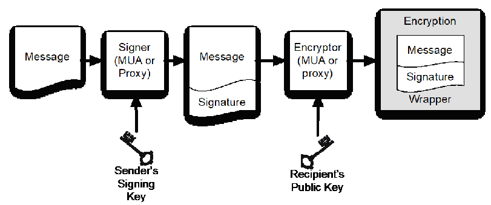
Figure 2-3: S/MIME Messages can be signed, encrypted, or both signed and encrypted
図2-3: S/MIMEメッセージは署名、暗号化、または署名と暗号化の両方が可能
2.4.3 Pretty Good Privacy (PGP/OpenPGP)
2.4.3 Pretty Good Privacy (PGP/OpenPGP)
OpenPGP [RFC3156] [RFC4880] is an alternative proposed Internet standard for digitally signing and encrypting email. OpenPGP is an adaptation of the message format implemented by the Pretty Good Privacy (PGP) email encryption system that was first released in 1991. Whereas the PGP formats were never formally specified, OpenPGP specifies open, royalty-free formats for encryption keys, signatures, and messages. Today the most widely used implementation of OpenPGP is Gnu Privacy Guard (gpg)7, an open source command-line program that runs on many platforms, with APIs in popular languages such as C, Python and Perl. Most desktop and web-based applications that allow users to send and receive OpenPGP-encrypted mail rely on gpg as the actual cryptographic engine.
OpenPGP [RFC3156] [RFC4880] は、メールにデジタル署名し暗号化するためのインターネット標準案の代替である。OpenPGPは、1991年に初版が公開されたPretty Good Privacy (PGP) メール暗号化システムのメッセージ形式を採用したものである。PGP形式は正式には規定されなかったが、OpenPGPは暗号鍵、署名、メッセージについてオープンでロイヤリティーフリーの形式を規定する。現在、最も広く使われているOpenPGP実装はGnu Privacy Guard (gpg)7であり、多数のプラットフォームで動作し、C、Python、Perlなどの一般的な言語向けAPIも備えるオープンソースのコマンドラインプログラムである。OpenPGP暗号化メールの送受信を可能にするデスクトップおよびウェブアプリケーションの大半は、実際の暗号エンジンとしてgpgに依存している。
未レビュー訳OpenPGP provides similar functionality as S/MIME, with three significant differences:
OpenPGPはS/MIMEと同様の機能を提供するが、重要な違いが3つある。
未レビュー訳•Key Certification: Whereas X.509 certificates are issued by Certificate Authorities (or local agencies that have been delegated authority by a CA to issue certificates), users generate their own OpenPGP public and private keys and then solicit signatures for their public keys from individuals or organizations to which they are known. Whereas X.509 certificates can be signed by a single party, OpenPGP public keys can be signed by any
•鍵の認証: X.509証明書は認証局 (CA) またはCAから証明書発行権限を委任された地域機関が発行する。一方、ユーザーはOpenPGPの公開鍵と秘密鍵を自ら生成し、知り合いである個人または組織に公開鍵への署名を依頼する。X.509証明書は単一の主体が署名できるが、OpenPGP公開鍵には任意の数の主体が署名できる。
未レビュー訳number of parties. Whereas X.509 certificates are trusted if there is a valid PKIX chain to a trusted root, an OpenPGP public key is trusted if it is signed by another OpenPGP public key that is trusted by the recipient. �is is called the “Web-of-Trust.”
X.509証明書は、信頼済みルートまでの有効なPKIXチェーンがある場合に信頼される。一方、OpenPGP公開鍵は受信者が信頼する別のOpenPGP公開鍵によって署名されている場合に信頼される。これを「Web-of-Trust」と呼ぶ。
未レビュー訳•Key Distribution: OpenPGP does not always include the sender’s public key with each message, so it may be necessary for recipients of OpenPGP-messages to separately obtain the sender’s public key in order to verify the message or respond to the sender with an encrypted message. Many organizations post OpenPGP keys on SSL-protected websites; people who wish to verify digital signatures or send these organizations encrypted mail need to manually download these keys and add them to their OpenPGP clients. Essentially this approach exploits the X.509 certificate infrastructure to certify OpenPGP keys, albeit with a process that requires manual downloading and verification.
•鍵の配布: OpenPGPでは送信者の公開鍵が各メッセージに含まれるとは限らないため、受信者はメッセージを検証したり、送信者に暗号化メッセージで返信したりするために、送信者の公開鍵を別途取得する必要がある場合がある。多くの組織はSSLで保護されたウェブサイトにOpenPGP鍵を掲載している。デジタル署名を検証したり、これらの組織に暗号化メールを送信したりする人は、鍵を手動でダウンロードしてOpenPGPクライアントに追加する必要がある。つまり、この方法はX.509証明書基盤を利用してOpenPGP鍵を認証するが、手動でのダウンロードと検証を要する。
OpenPGP keys may also be registered with the OpenPGP “public key servers” (described below). OpenPGP “public key servers” are internet connected systems that maintain a database of PGP public keys organized by email address. Anyone may post a public key to the OpenPGP key servers, and that public key may contain any email address. Some OpenPGP clients can search the key servers for all of the keys that belong to a given email address and download the keys that match. Because there are no access controls on the servers, attackers are free to submit a fraudulent public key, and it is the responsibility of the person or program that downloads the public key to validate it.
OpenPGP鍵はOpenPGP「公開鍵サーバー」(後述) に登録することもできる。OpenPGP「公開鍵サーバー」は、メールアドレスごとに整理されたPGP公開鍵データベースを保持するインターネット接続システムである。誰でも公開鍵サーバーに公開鍵を投稿でき、その公開鍵には任意のメールアドレスを含められる。一部のOpenPGPクライアントは、指定されたメールアドレスに属するすべての鍵を鍵サーバーで検索し、一致する鍵をダウンロードできる。サーバーにはアクセス制御がないため、攻撃者が偽の公開鍵を送信でき、公開鍵をダウンロードする人またはプログラムがその妥当性を検証する責任を負う。
•Key and Certificate Revocation: S/MIME keys are revoked using the PKIX revocation infrastructure of Certificate Revocation Lists [RFC5280] and the Online Certificate Status Protocol (OCSP) [RFC6960]. �ese protocols allow a certificate to be revoked at any time by the CA. With OpenPGP, in contrast a key is only allowed to be revoked by the key holder, and only with a Key Revocation Certificate. �us, an OpenPGP user who loses access to a private key has no way to revoke the key if a Key Revocation Certificate was not prepared in advance. If a Key Revocation Certificate does exist, the certificate can be uploaded to a PGP Key Server, OpenPGP key servers are generally not checked by a client that already has a copy of an OpenPGP key. �us, is it not clear how relying parties learn that an OpenPGP key has been revoked.
•鍵および証明書の失効: S/MIME鍵は、Certificate Revocation Lists [RFC5280] およびOnline Certificate Status Protocol (OCSP) [RFC6960] から成るPKIX失効基盤を使って失効させる。これらのプロトコルにより、CAはいつでも証明書を失効させられる。これに対してOpenPGPでは、鍵を失効させられるのは鍵所有者のみであり、Key Revocation Certificateを用いる必要がある。したがって、秘密鍵へのアクセスを失ったOpenPGPユーザーは、Key Revocation Certificateを事前に用意していなければ鍵を失効させる方法がない。証明書が存在する場合、PGP Key Serverへアップロードできるが、すでにOpenPGP鍵のコピーを保有するクライアントは通常OpenPGP鍵サーバーを確認しない。そのため、OpenPGP鍵の失効を依拠当事者がどのように知るのかは明確でない。
未レビュー訳�e Web-of-Trust is designed to minimize the problems of the key server. After an OpenPGP user downloads all of the keys associated with a particular email address, the correct OpenPGP certificate is selected by the signatures that it carries. Because Web-of-Trust supports arbitrary validation geometries, it allows both the top-down certification geometry of X.509 as well as peer-to-peer approaches. However, studies have demonstrated that users find this process confusing [WHITTEN1999], and the Web-of-Trust has not seen widespread adoption.
Web-of-Trustは鍵サーバーの問題を最小化するよう設計されている。OpenPGPユーザーが特定のメールアドレスに関連付けられた鍵をすべてダウンロードした後、正しいOpenPGP証明書はそこに付された署名によって選択される。Web-of-Trustは任意の検証構造を支援するため、X.509のトップダウン型認証構造とピアツーピア方式の両方を可能にする。しかし、この手順をユーザーが分かりにくいと感じることが研究で示されており [WHITTEN1999]、Web-of-Trustは広く採用されていない。
未レビュー訳An alternative way to publish OpenPGP keys using the DNS is described in Section 5.3.2, OpenPGP, although the technique has not yet been widely adopted.
DNSを使ってOpenPGP鍵を公開する代替方法は、第5.3.2節「OpenPGP」で説明する。ただし、この技術はまだ広く採用されていない。
Like S/MIME, among the biggest hurdles of deploying OpenPGP are the need for users to create certificates in advance, the difficulty of obtaining the certificate of another user in order to send an encrypted message and incorporating this seamlessly into mail clients. However, in OpenPGP this difficulty impacts both digital signatures and encryption, since OpenPGP messages may not include the sender’s public key (or generated certificate).
S/MIMEと同様、OpenPGPの展開における大きな課題は、ユーザーが事前に証明書を作成する必要があること、暗号化メッセージを送るために他のユーザーの証明書を取得する難しさ、およびこれらをメールクライアントにシームレスに組み込むことである。ただしOpenPGPでは、メッセージに送信者の公開鍵 (または生成済み証明書) が含まれない場合があるため、この難しさはデジタル署名と暗号化の両方に影響する。
未レビュー訳�ese differences are summarized in Table 2-1.
これらの違いを表2-1にまとめる。
未レビュー訳Table 2-1: Comparison of S/MIME and OpenPGP operations
表2-1: S/MIMEとOpenPGPの操作の比較
| Action | S/MIME | OpenPGP |
| Key creation | Users obtain X.509 certificates from employer (e.g., a US Government PIV card [FIPS 201]) or a Certificate Authority | Users make their own public/private key pairs and have them certified by associates. |
| Certificate Verification | PKIX: Certificates are verified using trusted roots that are installed on the end user’s computer. | Web-of-Trust: Keys can be signed by any number of certifiers. Users base their trust decisions on whether or not they “trust” the keys that were used to sign the key. |
| Certificate Revocation | Certificates can be revoked by the CA or Issuer. Methods exist to publish revoked status of key (e.g., Certificate Revocation List, etc.). | Keys/Certificates can only be revoked by the public key’s owner. Few options to signal key revocation and no uniform way for clients to see that a key has been revoked. |
| Obtaining public keys | Querying an LDAP server or exchanging digitally signed email messages. | PGP public key server or out- of-band mechanisms (e.g., posting a public key on a web page.) |
原本PDFの抜粋画像
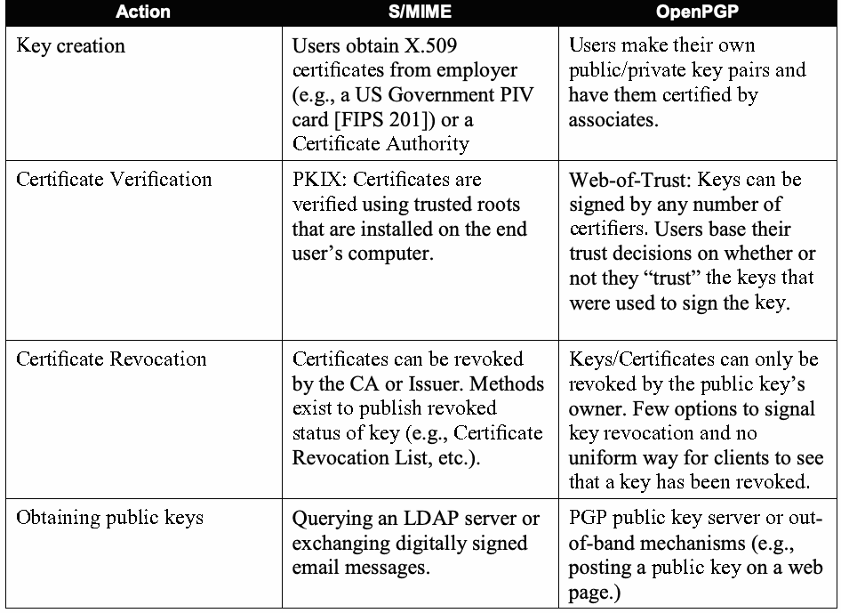
| 操作 | S/MIME | OpenPGP |
| 鍵の作成 | ユーザーは雇用主 (例: 米国政府PIVカード [FIPS 201]) または認証局からX.509証明書を取得する。 | ユーザーは自ら公開鍵/秘密鍵ペアを作成し、関係者に認証してもらう。 |
| 証明書の検証 | PKIX: エンドユーザーのコンピューターにインストールされた信頼済みルートを使って証明書を検証する。 | Web-of-Trust: 鍵には任意の数の認証者が署名できる。ユーザーは、その鍵に署名した鍵を信頼するかどうかに基づいて信頼を判断する。 |
| 証明書の失効 | CAまたは発行者が証明書を失効できる。鍵の失効状態を公開する方法 (例: Certificate Revocation List) が存在する。 | 公開鍵の所有者のみが鍵/証明書を失効できる。失効を通知する選択肢は少なく、クライアントが失効済み鍵を確認する統一的な方法はない。 |
| 公開鍵の取得 | LDAPサーバーへの問い合わせ、またはデジタル署名付きメールの交換。 | PGP公開鍵サーバーまたは帯域外の方法 (例: ウェブページへの公開鍵掲載)。 |
2.5 Secure Web-Mail Solutions
2.5 セキュアウェブメールソリューション
Whereas S/MIME and OpenPGP provide a security overlay for traditional Internet email, some organizations have adopted secure web-mail systems as an alternative approach for sending encrypted e-mail messages between users. Secure web-mail systems can protect email messages solely with host-based security, or they can implement a cryptographic layer using S/MIME, OpenPGP, or other algorithms, such as the Boneh-Franklin (BF) and Boneh-Boyen (BB1) Identity-Based Encryption (IBE) algorithms [RFC5091] [RFC5408] [RFC5409].
S/MIMEおよびOpenPGPが従来のインターネットメールにセキュリティ層を提供する一方、一部の組織はユーザー間で暗号化メールを送信する代替手段としてセキュアウェブメールシステムを採用している。セキュアウェブメールシステムはホストベースのセキュリティのみでメールを保護することも、S/MIME、OpenPGP、またはBoneh-Franklin (BF) やBoneh-Boyen (BB1) のIdentity-Based Encryption (IBE) アルゴリズムなど [RFC5091] [RFC5408] [RFC5409] を用いて暗号層を実装することもできる。
Secure webmail systems can perform message decryption at the web server or on the end-user’s client. In general, these systems are less secure than end-to-end systems because the private key is under the control of the web server, which also has access to the encrypted message. These systems cannot ensure non-repudiation since the server has direct access to the signing key.
セキュアウェブメールシステムでは、メッセージの復号をウェブサーバーまたはエンドユーザーのクライアントで行える。一般に、秘密鍵をウェブサーバーが管理し、暗号化メッセージにもアクセスできるため、エンドツーエンドシステムより安全性が低い。サーバーが署名鍵に直接アクセスできるため、否認防止を保証できない。
An exception is webmail-based systems that employ client-side software to make use of a private key stored at the client—for example, a webmail plug-in that allows the web browser to make use of a private key stored in a FIPS-201 compliant smartcard. In these cases, the message is decrypted and displayed at the client, and the server does not access the decrypted text of the message.
例外として、クライアント側ソフトウェアを使ってクライアントに保存された秘密鍵を利用するウェブメールベースのシステムがある。たとえば、FIPS 201準拠のスマートカードに保存された秘密鍵をウェブブラウザーが利用できるウェブメールプラグインである。この場合、メッセージはクライアント側で復号・表示され、サーバーは復号済みメッセージ本文にアクセスしない。
3 Security Threats to an Email Service
3 メールサービスに対するセキュリティ脅威
未レビュー訳�e security threats to email service discussed in this section are related to canonical functions of the service such as: message submission (at the sender end), message transmission (transfer) and message delivery (at the recipient end).
本節で扱うメールサービスへの脅威は、送信側でのメッセージ提出、メッセージ転送、および受信側でのメッセージ配信など、サービスの基本機能に関連する。
未レビュー訳�reats to the core email infrastructure functions can be classified as follows:
メール基盤の中核機能に対する脅威は、次のように分類できる。
未レビュー訳•Integrity-related threats to the email system, which could result in unauthorized access to an enterprises’ email system, or spoofed email used to initiate an attack.
•メールシステムの完全性に関する脅威。組織のメールシステムへの不正アクセス、または攻撃を開始するために使われる偽装メールにつながる可能性がある。
•Confidentiality-related threats to email, which could result in unauthorized disclosure of sensitive information.
•メールの機密性に関する脅威。機密情報の不正開示につながる可能性がある。
•Availability-related threats to the email system, which could prevent end users from being able to send or receive email.
•メールシステムの可用性に関する脅威。エンドユーザーがメールを送受信できなくなる可能性がある。
�e security threats due to insufficiency of core security functions are not covered. �ese include threats to support infrastructure such as network components and firewalls, host OS and system threats, and potential attacks due to lax security policy at the end user or administrator level (e.g., poor password choices). �reats directed to these components and recommendations for enterprise security policies are found in other documents.
中核的なセキュリティ機能が不十分なことによる脅威は対象外である。これには、ネットワークコンポーネントやファイアウォールなどの支援基盤、ホストOSおよびシステムへの脅威、エンドユーザーまたは管理者レベルの緩いセキュリティ方針 (例: 脆弱なパスワードの選択) に起因する攻撃の可能性が含まれる。これらのコンポーネントに対する脅威および企業セキュリティ方針の推奨事項は、他の文書で扱われている。
未レビュー訳3.1 Integrity-related Threats
3.1 完全性に関する脅威
Integrity in the context of an email service assumes multiple dimensions. Each dimension can be the source of one or more integrity-related threats:
メールサービスにおける完全性には複数の側面がある。各側面は、1つ以上の完全性関連の脅威の原因となり得る。
•Unauthorized email senders within an organization’s IP address block
•組織のIPアドレスブロック内の未認可メール送信者
•Unauthorized email receivers within an organization’s IP address block
•組織のIPアドレスブロック内の未認可メール受信者
•Unauthorized email messages from a valid DNS domain
•有効なDNSドメインからの未認可メールメッセージ
•Tampering/Modification of email content from a valid DNS domain
•有効なDNSドメインからのメール内容の改ざん/変更
•DNS Cache Poisoning
•DNSキャッシュポイズニング
•Phishing and spear phishing
•フィッシングおよび標的型フィッシング
3.1.1 Unauthorized Email Senders within an Organization’s IP Address Block
3.1.1 組織のIPアドレスブロック内の未認可メール送信者
An unauthorized email sender is some MSA or MTA that sends email messages that appear to be from a user in a specific domain (e.g., user@example.com) but is not identified as a legitimate mail sender by the organization that runs the domain.
未認可メール送信者とは、特定ドメイン (例: user@example.com) のユーザーから送信されたように見えるメールメッセージを送信するMSAまたはMTAであって、そのドメインを運用する組織によって正規のメール送信者と認識されていないものをいう。
未レビュー訳�e main risk that an unauthorized email sender may pose to an enterprise is that a sender may be sending malicious email and using the enterprise’s IP address block and reputation to avoid anti-spam filters. A related risk is that the sender may be sending emails that present themselves as legitimate communications from the enterprise itself.
未認可メール送信者が企業にもたらす主なリスクは、企業のIPアドレスブロックとレピュテーションを利用してスパム対策フィルターを回避し、悪意あるメールを送信することである。関連するリスクとして、送信者が企業自体からの正規通信を装ったメールを送信する場合がある。
未レビュー訳�ere are many scenarios that might result in an unauthorized email sender:
未認可メール送信者につながるシナリオは多数ある。
未レビュー訳•Malware present on an employee’s laptop may be sending out email without the employee’s knowledge.
•従業員のノートPCに存在するマルウェアが、本人に知られずにメールを送信している場合がある。
•An employee (or intruder) may configure and operate a mail server without authorization.
•従業員 (または侵入者) が、許可なくメールサーバーを構成して運用する場合がある。
•A device such as a photocopier or an embedded system may contain a mail sender that is attempting to send mail without anyone’s knowledge.
•コピー機などの機器や組み込みシステムにメール送信機能が含まれ、誰にも知られずにメールを送信しようとする場合がある。
One way to mitigate the risk of unauthorized senders is for the enterprise to block outbound port 25 (used by SMTP) for all hosts except those authorized to send mail. In addition, domains can deploy the sender authentication mechanism described in Section 4.3 (Sender Policy Framework (SPF)), using which senders can assert the IP addresses of the authorized MTAs for their domain using a DNS Resource Record.
未認可送信者のリスクを低減する方法の1つは、メール送信を許可されたホストを除き、すべてのホストからの外向きポート25を企業が遮断することである。さらに、ドメインは第4.3節の送信者認証機構であるSender Policy Framework (SPF) を導入できる。これにより送信者はDNS Resource Recordを用いて、自ドメインの認可済みMTAのIPアドレスを示せる。
Security Recommendation 3-1: To mitigate the risk of unauthorized sender, an enterprise administrator should block outbound port 25 (except for authorized mail senders) and look to deploy firewall or intrusion detection systems (IDS) that can alert the administrator when an unauthorized host is sending mail via SMTP to the Internet.
セキュリティ推奨事項3-1: 未認可送信者のリスクを低減するため、企業管理者は (認可済みメール送信者を除いて) 外向きポート25を遮断し、認可されていないホストがSMTP経由でインターネットへメールを送信した際に管理者へ警告するファイアウォールまたは侵入検知システム (IDS) の導入を検討すべきである。
�e proliferation of virtualization greatly increases the risk that an unauthorized virtual server running on a virtual machine (VM) within a particular enterprise might send email. �is is because VMs may be configured (by default or otherwise) to run email servers (MTAs), and many VM hypervisors use network address translation (NAT) to share a single IP address between multiple VMs. �us, a VM that is unauthorized to send email may share an IP address with a legitimate email sender. To prevent such a situation, ensure that VMs that are authorized mail senders and those VMs that are not authorized, do not share the same set of outbound IP addresses. An easy way to do this is assigning these VMs to different NAT instances. Alternatively, internal firewall rules can be used to block outbound port 25 for VMs that are not authorized to send outbound email.
仮想化の普及により、特定企業の仮想マシン (VM) 上で動作する未認可の仮想サーバーがメールを送信するリスクが大幅に高まる。これはVMが (既定またはその他の設定で) メールサーバー (MTA) を実行するよう構成される場合があり、多くのVMハイパーバイザーがネットワークアドレス変換 (NAT) を使って複数VMで単一IPアドレスを共有するためである。そのため、メール送信を許可されていないVMが正規のメール送信者とIPアドレスを共有する場合がある。この事態を防ぐには、認可されたメール送信VMと認可されていないVMが同じ外向きIPアドレス群を共有しないようにする。容易な方法は、それぞれのVMを異なるNATインスタンスに割り当てることである。あるいは、内部ファイアウォール規則を使って、外向きメール送信が認可されていないVMの外向きポート25を遮断できる。
未レビュー訳Security Recommendation 3-2: Systems that are not involved in the organization’s email infrastructure should be configured to not run Mail Transfer Agents (MTAs). Internal systems that need to send mail should be configured to use a trusted internal MSA.
セキュリティ推奨事項3-2: 組織のメール基盤に関与しないシステムでは、Mail Transfer Agent (MTA) を実行しないよう構成すべきである。メール送信が必要な内部システムは、信頼された内部MSAを使用するよう構成すべきである。
3.1.2 Unauthorized Email Receiver within an Organization’s IP Address Block
3.1.2 組織のIPアドレスブロック内の未認可メール受信者
Unauthorized mail receivers are a risk to the enterprise IT security posture because they may be an entry point for malicious email. If the enterprise email administrator does not know of the unauthorized email receiver, they cannot guarantee the server is secure and provide the appropriate mail handling rules for the enterprise such as scanning for malicious links/code, filtering spam, etc. �is could allow malware to bypass the enterprise perimeter defenses and enter the local network undetected.
未認可メール受信サーバーは、悪意あるメールの侵入口になる可能性があるため、企業のITセキュリティ態勢にとってリスクとなる。企業のメール管理者が未認可受信サーバーを把握していなければ、サーバーの安全性を保証できず、悪意あるリンク/コードのスキャンやスパムのフィルタリングなど、企業に適切なメール処理規則を提供できない。その結果、マルウェアが企業の境界防御を迂回し、検知されずに内部ネットワークへ侵入する可能性がある。
未レビュー訳Security Recommendation 3-3: To mitigate the risk of unauthorized receivers, an enterprise administrator should block inbound port 25 and look to deploy firewall or intrusion detection systems (IDS) that can alert the administrator when an unauthorized host is accepting mail via SMTP from the Internet.
セキュリティ推奨事項3-3: 未認可受信サーバーのリスクを低減するため、企業管理者は受信ポート25を遮断し、認可されていないホストがSMTP経由でインターネットからメールを受け付けた際に管理者へ警告するファイアウォールまたは侵入検知システム (IDS) の導入を検討すべきである。
3.1.3 Unauthorized Email Messages from a Valid DNS Domain (Address Spoofing)
3.1.3 有効なDNSドメインからの未認可メールメッセージ (アドレス偽装)
Just as organizations face the risk of unauthorized email senders, they also face the risk that they might receive email from an unauthorized sender. �is is sometimes called “spoofing,” especially when one group or individual sends mail that appears to come from another. In a spoofing attack, the adversary spoofs messages using another (sometimes even non-existent) user’s email address.
組織は未認可メール送信者のリスクだけでなく、未認可送信者からメールを受信するリスクにも直面する。これは「なりすまし」と呼ばれることがあり、特に個人またはグループが他者からのメールに見せかけて送信する場合を指す。なりすまし攻撃では、攻撃者は別の (場合によっては実在しない) ユーザーのメールアドレスを使ってメッセージを偽装する。
未レビュー訳For example, an attacker sends emails that purport to come from user@example.com, when in fact the email messages are being sent from a compromised home router. Spoofing the message-From: address is trivial, as the SMTP protocol [RFC2821] allows clients to set any message-From: address. Alternatively, the adversary can simply configure a MUA with the name and email address of the spoofed user and send emails to an open SMTP relay (see [RFC2505] for a discussion of open relays).
たとえば攻撃者は、メールメッセージが実際には侵害された家庭用ルーターから送信されているにもかかわらず、user@example.comからのメールに見せかける。SMTPプロトコル [RFC2821] ではクライアントが任意のmessage-From:アドレスを設定できるため、メッセージのmessage-From:アドレスを偽装するのは簡単である。または、攻撃者は偽装対象ユーザーの名前とメールアドレスをMUAに設定し、オープンSMTPリレーへメールを送信できる (オープンリレーについては[RFC2505]を参照)。
未レビュー訳�e same malicious configuration activity can be used to configure and use wrong, misleading or malicious display names. When a display name that creates a degree of trust such as “Administrator” shows up on the email received at the recipient’s end, it might make the recipient reveal some sensitive information which the recipient would not normally do. �us, the spoofing threat/attack also has a social engineering dimension as well.
同じ悪意ある構成操作を利用して、不適切、誤解を招く、または悪意ある表示名を設定することもできる。受信者側で「Administrator」など信頼感を与える表示名がメールに表示されると、通常なら開示しない機密情報を受信者が明かしてしまう可能性がある。したがって、なりすましの脅威/攻撃にはソーシャルエンジニアリングの側面もある。
未レビュー訳Section 4 discusses a variety of countermeasures for this type of threat. �e first line of defense is to deploy domain-based authentication mechanisms (see Section 4). �ese mechanisms can be used to alert on or block email that was sent using a spoofed domain. Another end-to-end authentication technique is to use digital signatures to provide integrity protection for email headers. �e digital signature used should cover the header portion of the email message that contains the address of the sender.
第4節ではこの種の脅威に対するさまざまな対策を説明する。最初の防御線は、ドメインベース認証機構 (第4節参照) を導入することである。これらの機構を使って、偽装ドメインを用いて送信されたメールに警告を出したり、ブロックしたりできる。もう1つのエンドツーエンド認証技術は、デジタル署名を使ってメールヘッダーの完全性を保護することである。デジタル署名は、送信者アドレスを含むメールメッセージのヘッダー部分を対象とすべきである。
未レビュー訳3.1.4 Tampering/Modification of Email Content
3.1.4 メール内容の改ざん/変更
�e content of an email message, just like any other message content traveling over the Internet, is liable to be altered in transit. Hence the content of the received email may not be the same as what the sender originally composed. �e countermeasure for this threat is for the sender to digitally sign the message, attach the signature to the plaintext message and for the receiver to verify the signature.
インターネット上を転送される他のメッセージ内容と同様、メールメッセージの内容も転送中に変更される可能性がある。そのため、受信したメール内容が送信者の作成した内容と異なることがある。この脅威への対策は、送信者がメッセージにデジタル署名し、その署名を平文メッセージに添付し、受信者が署名を検証することである。
未レビュー訳�ere are several solutions available to mitigate this risk by either encrypting the transmission of email messages between servers using Transport Layer Security (TLS) for SMTP or using an end-to-end solution to digitally sign email between initial sender and final receiver. Recommendations for using TLS with SMTP are discussed in Section 5.2.1 and end-to-end email encryption protocols are discussed in Section 4.6. �e use of digital signatures within the S/MIME and OpenPGP protocols is described in section 5.3.
メールサーバー間のメール転送をTLS上のSMTPで暗号化する方法、または最初の送信者から最終受信者までメールにデジタル署名するエンドツーエンド方式など、このリスクを低減する解決策が複数ある。TLSをSMTPで使用する推奨事項は第5.2.1節、エンドツーエンドのメール暗号化プロトコルは第4.6節で説明する。S/MIMEおよびOpenPGPプロトコルにおけるデジタル署名の使用は第5.3節で説明する。
未レビュー訳3.1.5 DNS Cache Poisoning
3.1.5 DNSキャッシュポイズニング
Email systems rely on DNS for many functions. Some of them are:
メールシステムは多くの機能で DNS に依存している。たとえば次のとおりである:
•�e sending MTA uses the DNS to find the IP address of the next-hop email server (assuming the To: address is not a local mailbox).
•送信側 MTA は DNS を使用して次ホップのメールサーバーの IP アドレスを検索する（To: アドレスがローカルメールボックスでない場合）。
未レビュー訳•�e recipient email server (if domain-based email authentication is supported) uses the DNS to look for appropriate records in the sending DNS domain either to authenticate the sending email server (using SPF) or to authenticate an email message for its origin domain (using DKIM). See Section 5 for domain-based authentication mechanisms.
•受信側メールサーバーは（ドメインベースのメール認証をサポートする場合）、送信元メールサーバーを認証するため（SPF を使用）、またはメールメッセージの送信元ドメインを認証するため（DKIM を使用）、送信側 DNS ドメインに適切なレコードがないか DNS を検索する。ドメインベース認証メカニズムについては第5節を参照。
未レビュー訳�ere are risks to using the DNS as a publication mechanism for authenticating email. First, those highly motivated to conduct phishing/spam campaigns, may attempt to spoof a given domain’s DNS-based email authentication mechanisms in order to continue to deliver spoofed email masquerading as the domain in question. �e second risk is that an attacker would spoof a domain’s DNS-based authentication mechanisms in order to disrupt legitimate email from the source domain. For example, maliciously spoofing the SPF record of authorized mail relays, to exclude the domains legitimate MTAs, could result in all legitimate email from the target domain being dropped by other MTAs. Lastly, a resolver whose cache has been poisoned can potentially return the IP address desired by an attacker, rather than the legitimate IP address of a queried domain name. In theory, this allows email messages to be redirected or intercepted.
メール認証の公開手段として DNS を使うことにはリスクがある。第一に、フィッシング／スパムキャンペーンを強く企図する者が、対象ドメインになりすました偽メールの配信を続けるため、特定ドメインの DNS ベースのメール認証メカニズムを偽装する可能性がある。第二に、攻撃者がドメインの DNS ベース認証メカニズムを偽装し、送信元ドメインからの正規メールを妨害する可能性がある。たとえば、許可済みメール中継の SPF レコードを悪意をもって偽装して、ドメインの正規 MTA を除外すると、他の MTA がその対象ドメインからの正規メールをすべて破棄するおそれがある。最後に、キャッシュを汚染されたリゾルバーが、問い合わせられたドメイン名の正規 IP アドレスではなく、攻撃者が望む IP アドレスを返す可能性がある。理論上、これによりメールメッセージのリダイレクトや傍受が可能になる。
未レビュー訳Another impact of a DNS server with a poisoned cache as well as a compromised web server is that the users are redirected to a malicious server/address when attempting to visit a legitimate web site. Although the visit to an illegitimate web site can occur by clicking on a link in a received email, this use case has no direct relevance to integrity of an email service and hence is outside the scope of this document.
キャッシュが汚染された DNS サーバーと侵害されたウェブサーバーがもたらす別の影響は、ユーザーが正規ウェブサイトを訪問しようとしたときに悪意あるサーバー／アドレスへ誘導されることである。不正なウェブサイトへの訪問は受信メール内のリンクをクリックすることで起こり得るが、このユースケースはメールサービスの完全性に直接関係せず、本書の対象範囲外である。
As far as DNS cache poisoning is concerned, DNSSEC security extension [RFC4033] [RFC4034] [RFC4035] can provide protection from these kinds of attacks since it ensures the integrity of DNS resolution through an authentication chain from the root to the target domain of the original DNS query. However, even the presence of a single non-DNSSEC aware server in the chain can lead to a risk of compromise of the integrity of the DNS resolution.
DNS キャッシュ汚染に関しては、DNS セキュリティ拡張（DNSSEC）[RFC4033] [RFC4034] [RFC4035] がこの種の攻撃を防御できる。元の DNS クエリのルートから対象ドメインまでの認証チェーンを通じて DNS 名前解決の完全性を保証するためである。ただし、チェーン内に DNSSEC 非対応サーバーが1台でも存在すると、DNS 名前解決の完全性が侵害されるリスクにつながる。
3.1.6 Phishing and Spear Phishing
3.1.6 フィッシングおよび標的型フィッシング
Phishing is the process of using a spoofed email to collect private information, distribute malware, or commit fraud. �is is done with the intention of committing identity theft, gaining access to credit cards and bank accounts of the victim etc. Adversaries use a variety of tactics to make the recipient of the email believe that they have received the phishing email from a legitimate user or a legitimate domain, including:
フィッシングとは、偽装メールを使って個人情報を収集したり、マルウェアを配布したり、詐欺を働いたりする行為である。これは、個人情報窃盗や、被害者のクレジットカードおよび銀行口座へのアクセスなどを意図して行われる。攻撃者は、受信者が正規ユーザーまたは正規ドメインからフィッシングメールを受け取ったと信じるよう、次のようなさまざまな手口を用いる:
未レビュー訳•Using a message-From: address that looks very close to one of the legitimate addresses the user is familiar with or from someone claiming to be an authority (IT administrator, manager, etc.). Or altering the display name (also known as the friendly name).
•ユーザーが知っている正規アドレスのいずれかに酷似した、または権威者（IT 管理者、管理職など）を名乗る人物からの message-From: アドレスを使う。または表示名（フレンドリ名とも呼ばれる）を変更する。
•Using the email’s content to present to the recipient an alarm, a financial lure, or otherwise attractive situation, that either makes the recipient panic or tempts the recipient into taking an action or providing requested information.
•メール本文で警告、金銭的な誘因、またはその他魅力的な状況を受信者に提示し、受信者を慌てさせたり、行動を起こさせたり、要求された情報を提供させたりする。
•Sending the email from an email using a legitimate account holder’s software or credentials, typically using a bot that has taken control of the email client or malware that has stolen the user’s credentials (described in detail in Section 3.3.1 below)
•正規アカウント所有者のソフトウェアまたは資格情報を使ってメールを送信する。通常、メールクライアントを乗っ取ったボットや、ユーザーの資格情報を盗んだマルウェアが使われる（詳細は下記第3.3.1節）。
As part of the email message, the recipient may usually be asked to click on a link to what appears like a legitimate website, but in fact is a URL that will take the recipient into a spoofed website set up by the adversary. If the recipient clicks on the embedded URL, the victim often finds that the sign-in page, logos and graphics are identical to the legitimate website in the adversary-controlled website, thereby creating the trust necessary to make the recipient submit the required information such as user ID and the password. Some attackers use web pages to deliver malware directly to the victim’s web browser.
メールメッセージ内で、受信者は正規ウェブサイトのように見えるリンクをクリックするよう求められることが多いが、実際には攻撃者が用意した偽装ウェブサイトへ誘導する URL である。埋め込まれた URL をクリックすると、攻撃者が管理するサイトのサインインページ、ロゴ、画像が正規サイトと同一である場合が多く、これにより受信者がユーザー ID やパスワードなど必要な情報を送信するための信頼感を作り出す。一部の攻撃者はウェブページを使って被害者のウェブブラウザーに直接マルウェアを送り込む。
In many instances, the phishing emails are generated in thousands without focus on profile of the victims. Hence, they will have a generic greeting such as “Dear Member”, “Dear Customer” etc. A variant of phishing is spear phishing where the adversary is aware of, and specific about, the victim’s profile. More than a generic phishing email, a spear phishing email makes use of more contextual information to make users believe that they are interacting with a legitimate source. For example, a spear phishing email may appear to relate to some specific item of personal importance or a relevant matter at the organization—for instance, discussing payroll discrepancies or a legal matter. As in phishing, the ultimate motive is the same—to lure the recipient to an adversary-controlled website masquerading as a legitimate website to collect sensitive information about the victim or attack the victim’s computer.
多くの場合、フィッシングメールは被害者のプロファイルを考慮せず何千通も生成される。そのため「会員様」「お客様」など一般的な挨拶が使われる。フィッシングの一種である標的型フィッシングでは、攻撃者は被害者のプロファイルを把握し、それに合わせる。一般的なフィッシングメールよりも文脈情報を多く使い、正規の送信元とやり取りしているとユーザーに信じさせる。たとえば、個人的に重要な特定の事柄や組織内の関連事項、たとえば給与の不一致や法律問題に関するメールに見せかけることがある。フィッシングと同様、最終的な動機は、正規サイトを装う攻撃者管理下のウェブサイトに受信者を誘導し、被害者の機微情報を収集したり、被害者のコンピューターを攻撃したりすることである。
�ere are two minor variations of phishing: clone phishing and whaling. Clone phishing is the process of cloning an email from a legitimate user carrying an attachment or link and then replacing the link or attachment alone with a malicious version and then sending altered email from an email address spoofed to appear to come from the original sender (carrying the pretext of re-sending or sending an updated version). Whaling is a type of phishing specifically targeted against high profile targets so that the resulting damage carries more publicity and/or financial rewards for the perpetrator is greater.
フィッシングには、クローンフィッシングとホエーリングという2つの小さな変種がある。クローンフィッシングは、添付ファイルまたはリンクを含む正規ユーザーからのメールを複製し、そのリンクまたは添付ファイルだけを悪意あるものに置き換え、元の送信者からの再送または更新版を装うメールアドレスに偽装して送信する行為である。ホエーリングは、被害がより大きく報道される、または実行者に大きな金銭的報酬をもたらすよう、知名度の高い標的を特に狙うフィッシングの一種である。
未レビュー訳�e most common countermeasures used against phishing are domain-based checks such as SPF, DKIM and DMARC (see Section 4). More elaborate is to design anti-phishing filters that can detect text commonly used in phishing emails, recovering hidden text in images, intelligent word recognition – detecting cursive, hand-written, rotated or distorted texts as well as the ability to detect texts on colored backgrounds. While these techniques will not prevent malicious email sent using compromised legitimate accounts, they can be used to reduce malicious email sent from spoofed domains or spoofed “From:” addresses.
フィッシング対策で最も一般的なのは SPF、DKIM、DMARC などのドメインベースのチェックである（第4節参照）。より高度な対策として、フィッシングメールでよく使われるテキストの検出、画像に隠されたテキストの復元、筆記体・手書き・回転・歪みのある文字の認識、および色付き背景上のテキスト検出が可能なフィッシング対策フィルターの設計がある。侵害された正規アカウントを使って送られる悪意あるメールはこうした技法でも防止できないが、偽装ドメインまたは偽装 “From:” アドレスから送られる悪意あるメールを削減するために利用できる。
未レビュー訳3.2 Confidentiality-related Threats
3.2 機密性に関する脅威
A confidentiality-related threat occurs when the data stream containing email messages with sensitive information are accessible to an adversary. �e type of attack that underlies this threat can be passive since the adversary only requires read access but not write access to the email data being transmitted. �e two variations of this type of attack include:
機微情報を含むメールメッセージのデータストリームに攻撃者がアクセスできる場合、機密性に関する脅威が発生する。この脅威の基礎となる攻撃は受動的であり得る。攻撃者に必要なのは、伝送中のメールデータへの読み取りアクセスであり、書き込みアクセスは不要だからである。この種の攻撃には次の2つの形態がある:
未レビュー訳•�e adversary may have access to the packets that make up the email message as they move over a network. �is access may come in the form of a passive wiretapping or eavesdropping attack.
•攻撃者がネットワーク上を移動するメールメッセージのパケットにアクセスできる場合がある。このアクセスは受動的な盗聴または傍受攻撃によるものかもしれない。
未レビュー訳•Software may be installed on a MTA that makes copies of email messages and delivers them to the adversary. For example, the adversary may have modified the target’s email account so that a copy of every received message is forwarded to an email address outside the organization.
•MTA にソフトウェアをインストールし、メールメッセージのコピーを作って攻撃者に配信することがある。たとえば攻撃者が標的のメールアカウントを変更し、受信メッセージをすべて組織外のメールアドレスへ転送させる場合がある。
•�e valid receiver’s mail servers may be spoofed (or DNS MX reply spoofed), to get the sender to connect to a MTA controlled by an attacker.
•正規の受信者のメールサーバー（または DNS MX 応答）が偽装され、送信者が攻撃者管理下の MTA に接続するよう誘導される場合がある。
未レビュー訳Encryption is the best defense against eavesdropping attacks. Encrypting the email messages either between MTAs (using TLS as described in Section 5) can thwart attacks involving packet interception. End-to-end encryption (described in Section 5.3) can protect against both eavesdropping attacks as well as MTA software compromise.
盗聴攻撃に対する最良の防御は暗号化である。MTA 間のメールメッセージを暗号化すること（第5節で述べる TLS の使用）で、パケット傍受を伴う攻撃を阻止できる。エンドツーエンド暗号化（第5.3節で説明）は、盗聴攻撃と MTA ソフトウェア侵害の両方から保護できる。
A second form of passive attack is a traffic analysis attack. In this scenario, the adversary is not able to directly interpret the contents of an email message, mostly due to the fact that the message is encrypted. However, since inference of information is still possible in certain circumstances (depending upon interaction or transaction context) from the observation of external traffic characteristics (volume and frequency of traffic between any two entities) and hence the occurrence of this type of attack constitutes a confidentiality threat.
受動的攻撃の2つ目の形態はトラフィック分析攻撃である。この場合、主にメッセージが暗号化されているため、攻撃者はメールメッセージの内容を直接解釈できない。しかし、外部トラフィック特性（2つのエンティティ間の通信量と頻度）を観察すると、特定の状況では（やり取りまたは取引の文脈によって）情報を推測できる。この種の攻撃が発生すると機密性の脅威となる。
未レビュー訳Although the impact of traffic analysis is limited in scope, it is much easier to perform this attack in practice—especially if part of the email transmission media uses a wireless network, if packets are sent over a shared network, or if the adversary has the ability to run network management or monitoring tools against the victim’s network. TLS encryption provides some protection against traffic analysis attacks, as the attacker is prevented from seeing any message headers. End-to-end email encryption protocols do not protect message headers, as the headers are needed for delivery to the destination mailbox. �us, organizations may wish to employ both kinds of encryption to secure email from confidentiality threats.
トラフィック分析の影響範囲は限られるものの、実際には攻撃が容易である。特に、メール伝送媒体の一部が無線ネットワークを使う場合、パケットが共有ネットワーク上を送られる場合、または攻撃者が被害者のネットワークでネットワーク管理・監視ツールを実行できる場合は容易になる。TLS 暗号化は、攻撃者にメッセージヘッダーを見せないため、トラフィック分析攻撃への一定の保護を提供する。エンドツーエンドのメール暗号化プロトコルは、宛先メールボックスへの配信にヘッダーが必要なため、ヘッダーを保護しない。したがって組織は、機密性脅威からメールを保護するため両方の暗号化を採用することが望ましい。
未レビュー訳3.3 Availability-related Threats
3.3 可用性に関する脅威
An availability threat exists in the email infrastructure (or for that matter any IT infrastructure), when potential events occur that prevent the resources of the infrastructure from functioning according to their intended purpose. �e following availability-related threats exist in an email infrastructure:
メールインフラストラクチャ（またはその他の IT インフラストラクチャ）で、リソースが本来の目的どおりに機能することを妨げる事象が起きると、可用性の脅威が存在する。メールインフラストラクチャには次の可用性関連の脅威がある:
未レビュー訳•Email Bombing,
•メール爆弾攻撃、
•Unsolicited Bulk Email (UBE) – also called “Spam,” and
•迷惑な一括メール（UBE）—「スパム」とも呼ばれる、および
未レビュー訳•Availability of email servers.
•メールサーバーの可用性。
3.3.1 Email Bombing
3.3.1 メール爆弾攻撃
Email bombing is a type of attack that involves sending several thousands of messages to a particular mailbox in order to cause overflow. These can be many large messages or a very large number of small messages. Such a mailbox will become unusable for the legitimate email account holder to access. No new messages can be delivered, and the sender receives an error asking to resend the message. In some instances, the mail server may also crash.
メール爆弾攻撃は、特定のメールボックスに何千通ものメッセージを送り、容量超過を引き起こす攻撃である。大きなメッセージを多数送る場合も、小さなメッセージを極めて大量に送る場合もある。このようなメールボックスは正規のアカウント所有者が利用できなくなる。新しいメッセージは配信できず、送信者にはメッセージを再送するようエラーが返される。場合によってはメールサーバーもクラッシュする。
The motive for email bombing is denial of service (DoS). A DoS attack by definition either prevents authorized access to resources or causes delay (e.g., long response times) of time-critical operations. Hence email bombing is a major availability threat to an email system since it can potentially consume substantial Internet bandwidth as well as storage space in the message stores of recipients. An email bombing attack can be launched in several ways.
メール爆弾攻撃の動機はサービス拒否（DoS）である。DoS 攻撃は定義上、リソースへの許可されたアクセスを妨げるか、時間制約のある操作を遅延させる（例: 応答時間が長くなる）。そのためメール爆弾攻撃はメールシステムに対する重大な可用性脅威であり、インターネット帯域幅や受信者のメッセージストアの保存領域を大量に消費する可能性がある。メール爆弾攻撃はいくつかの方法で実行できる。
未レビュー訳�ere are many ways to perpetrate an email bombing attack, including:
メール爆弾攻撃を実行する方法は多数ある。例を挙げる:
未レビュー訳•An adversary can employ any (anonymous) email account to constantly bombard the victim’s email account with arbitrary messages (that may contain very long large attachments).
•攻撃者は任意の（匿名）メールアカウントを使い、被害者のメールアカウントに任意のメッセージ（非常に大きな添付ファイルを含む場合もある）を絶えず大量送信できる。
•If an adversary controls an MTA, the adversary can run a program that automatically composes and transmits messages.
•攻撃者が MTA を制御している場合、プログラムを実行してメッセージを自動作成および送信できる。
•An adversary can post a controversial or significant official statement to a large audience (e.g., a social network) using the victim’s return email address. Humans will read the message and respond with individually crafted messages that may be very hard to filter with automated techniques. �e responses to this posting will eventually flood the victim’s email account.
•攻撃者は、議論を呼ぶ、または重要な公式声明を、被害者の返信先メールアドレスを用いて大勢の読者（例: ソーシャルネットワーク）に投稿できる。人々はそのメッセージを読み、個別に作成した返信を送る。その返信は自動技法ではフィルタリングが非常に難しい場合がある。この投稿への返信が最終的に被害者のメールアカウントをあふれさせる。
未レビュー訳•An adversary may subscribe the victim’s email address to many mailing lists (“listservers”). �e generated messages are then sent to the victim, until the victim’s email address is unsubscribed from those lists.
•攻撃者は被害者のメールアドレスを多数のメーリングリスト（「リストサーバー」）に登録できる。生成されたメッセージは、被害者のメールアドレスがそれらのリストから登録解除されるまで送信される。
未レビュー訳Possible countermeasures for protection against email bombing are: (a) Use filters that are based on the logic of filtering identical messages that are received within a chosen short span of time and (b) configuring email receivers to block messages beyond a certain size and/or containing attachments that exceed a certain size.
メール爆弾攻撃への保護策としては、(a) 選択した短い時間内に受信した同一メッセージをフィルタリングするロジックに基づくフィルターの使用、(b) 一定サイズを超えるメッセージ、または一定サイズを超える添付ファイルを含むメッセージをブロックするようメール受信システムを構成することが考えられる。
3.3.2 Unsolicited Bulk Email (Spam)
3.3.2 迷惑な一括メール（スパム）
Spam is the internet slang for unsolicited bulk email (UBE). Spam refers to indiscriminately sent messages that are unsolicited, unwanted, irrelevant and/or inappropriate, such as commercial advertising in mass quantities. �us spam, generally, is not targeted towards a particular email receiver or domain. However, when the volume of spam coming into a particular email domain exceeds a certain threshold, it has availability implications since it results in increased network traffic and storage space for message stores. Spam that looks for random gullible victims or targets particular users or groups of users with malicious intent (gathering sensitive information for physical harm or for committing financial fraud) is called phishing. From the above discussion of email bombing attacks, it should be clear that spam can sometimes be a type of email bombing.
スパムとは、迷惑な一括メール（UBE）を指すインターネット俗語である。スパムは、商業広告の大量送信など、無差別に送られる未承諾、不要、無関係および／または不適切なメッセージを指す。そのため通常、スパムは特定のメール受信者やドメインを標的としない。しかし、特定のメールドメインに到着するスパム量が一定のしきい値を超えると、ネットワークトラフィックとメッセージストアの保存領域が増加するため、可用性に影響する。無作為にだまされやすい被害者を探す、または機微情報の収集、身体的危害、金銭詐欺を意図して特定のユーザーやグループを狙うスパムはフィッシングと呼ばれる。メール爆弾攻撃の説明から明らかなように、スパムがメール爆弾攻撃の一種となる場合もある。
未レビュー訳Protecting the email infrastructure against spam is a challenging problem. �is is due to the fact that the two types of techniques currently used to combat spam have limitations. See Section 6 for a more detailed discussion of unsolicited bulk email.
スパムからメールインフラストラクチャを保護することは難しい問題である。現在スパム対策に使われる2種類の技法には限界があるためである。迷惑な一括メールに関する詳細は第6節を参照。
未レビュー訳3.3.3 Availability of Email Servers
3.3.3 メールサーバーの可用性
�e email infrastructure, just like any other IT infrastructure, should provide for fault tolerance and avoid single points of failure. A domain with only a single email server or a domain with multiple email servers, but all located in a single IP subnet is likely to encounter availability problems either due to software glitches in MTA, hardware maintenance issues or local data center network problems. �e typical measures for ensuring high availability of email as a service are: (a) Multiple MTAs with placement based on the email traffic load encountered by the enterprise; and, (b) Distribution of email servers in different network segments or even physical locations.
他の IT インフラストラクチャと同様、メールインフラストラクチャはフォールトトレランスを備え、単一障害点を避けるべきである。メールサーバーが1台しかないドメインや、複数のメールサーバーがあってもすべて単一の IP サブネットに配置されているドメインは、MTA のソフトウェア障害、ハードウェア保守の問題、ローカルデータセンターネットワークの問題などにより可用性の問題に直面しやすい。サービスとしてのメールの高可用性を確保する一般的な対策は次のとおりである: (a) 企業が経験するメールトラフィック負荷に基づく複数 MTA の配置、および (b) 異なるネットワークセグメントまたは物理的な場所へのメールサーバーの分散。
未レビュー訳3.4 Summary of Threats and Mitigations
3.4 脅威および緩和策の要約
A summary of the email related threats to an enterprise is given in Table 3-1. �is includes threats to both the email the receiver and the purported sender - often spoofed, and who may not be aware an email was sent using their domain. Mitigations are listed in the final column to reduce the risk of the attack being successful, or to prevent them.
企業に対するメール関連脅威の要約を表3-1に示す。これにはメール受信者と、しばしば偽装されメールが自分のドメインを使って送信されたことに気付かない場合がある送信者とされる者の双方への脅威を含む。最終列には、攻撃の成功リスクを低減または防止するための緩和策を記載する。
未レビュー訳Table 3-1 Email-based Threats and Mitigations
表3-1 メール関連の脅威と緩和策
| Threat | Impact on Purported | Impact on Receiver | Mitigation |
| Sender | |||
| Email sent by unauthorized MTA in enterprise (e.g., malware botnet). | Loss of reputation, valid email from enterprise may be blocked as possible spam/phishing attack. | UBE and/or email containing malicious links or attachments may be delivered into user inboxes. | Deployment of domain-based authentication techniques (see Section 4). Use of digital signatures over email (see Section 6). Blocking outbound port 25 for all non-mail sending hosts. |
原本PDFの抜粋画像
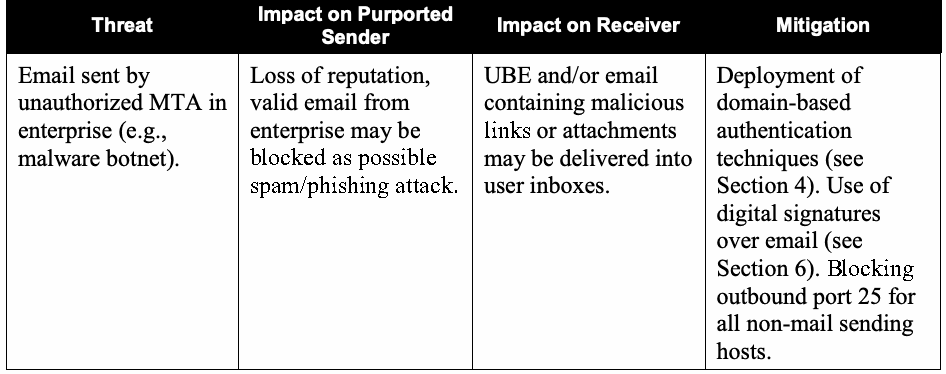
| 脅威 | 送信者とされる者への影響 | 受信者への影響 | 緩和策 |
| 企業内の未承認 MTA によって送信されるメール（例: マルウェアボットネット）。 | 評判の低下。企業からの正規メールがスパム／フィッシング攻撃の可能性があるとしてブロックされる場合がある。 | UBE や悪意あるリンクまたは添付ファイルを含むメールがユーザーの受信箱に配信される場合がある。 | ドメインベース認証技法の導入（第4節参照）。メールへのデジタル署名の使用（第6節参照）。メール送信を行わないすべてのホストについて、アウトバウンドポート25をブロックする。 |
| Threat | Impact on Purported | Impact on Receiver | Mitigation |
| Sender | |||
| Email message sent using spoofed or unregistered sending domain. | Loss of reputation, valid email from enterprise may be blocked as possible spam/phishing attack. | UBE and/or email containing malicious links or attachments may be delivered into user inboxes. | Deployment of domain-based authentication techniques (see Section 4). Use of digital signatures over email (see Section 6). |
| Email message sent using forged sending address or email address (i.e., phishing, spear phishing). | Loss of reputation, valid email from enterprise may be blocked as possible spam/phishing attack. | UBE and/or email containing malicious links or attachments may be delivered. Users may inadvertently divulge sensitive information or PII. | Deployment of domain-based authentication techniques (see Section 4). Use of digital signatures over email (see Section 6). DNS Blacklists (see Section 7). |
| Email modified in transit. | Leak of sensitive information or PII. | Leak of sensitive information, altered message may contain malicious information. | Use of TLS to encrypt email transfer between servers (see Section 5). Use of end-to-end email encryption and/or digital signatures (see Section 7). Use of DKIM to identify message mods (see Section 4.5). |
| Disclosure of sensitive information (e.g., PII) via monitoring and capturing of email traffic. | Leak of sensitive information or PII. | Leak of sensitive information. | Use of TLS to encrypt email transfer between servers (see Section 5). Use of end-to-end email encryption (see Section 7). |
| Disclosure of metadata of email messages. | Possible privacy violation. | Possible privacy violation. | Use of TLS to encrypt email transfer between servers (see Section 5). |
原本PDFの抜粋画像
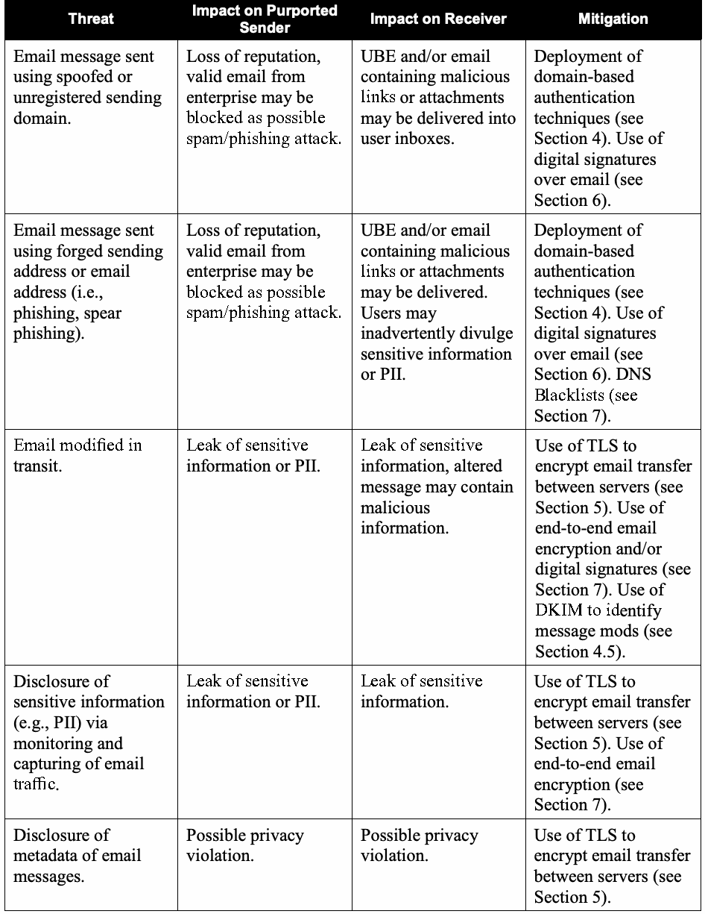
| 脅威 | 送信者とされる者への影響 | 受信者への影響 | 緩和策 |
| 偽装または未登録の送信ドメインを使って送られるメールメッセージ。 | 評判の低下。企業からの正規メールがスパム／フィッシング攻撃の可能性があるとしてブロックされる場合がある。 | UBE や悪意あるリンクまたは添付ファイルを含むメールがユーザーの受信箱に配信される場合がある。 | ドメインベース認証技法の導入（第4節参照）。メールへのデジタル署名の使用（第6節参照）。 |
| 偽造された送信元アドレスまたはメールアドレス（すなわち、フィッシングや標的型フィッシング）を使って送信されるメールメッセージ。 | 評判の低下。企業からの正規メールがスパム／フィッシング攻撃の可能性があるとしてブロックされる場合がある。 | UBE や悪意あるリンクまたは添付ファイルを含むメールが配信される場合がある。ユーザーが機微情報または PII を誤って開示する可能性がある。 | ドメインベース認証技法の導入（第4節参照）。メールへのデジタル署名の使用（第6節参照）。DNS ブラックリスト（第7節参照）。 |
| 伝送中のメール変更。 | 機微情報または PII の漏えい。 | 機微情報の漏えい。改変されたメッセージに悪意ある情報が含まれる場合がある。 | サーバー間のメール転送を暗号化する TLS の使用（第5節参照）。エンドツーエンドのメール暗号化および／またはデジタル署名の使用（第7節参照）。メッセージ改変を特定する DKIM の使用（第4.5節参照）。 |
| メールトラフィックの監視および捕捉による機微情報（例: PII）の開示。 | 機微情報または PII の漏えい。 | 機微情報の漏えい。 | サーバー間のメール転送を暗号化する TLS の使用（第5節参照）。エンドツーエンドのメール暗号化の使用（第7節参照）。 |
| メールメッセージのメタデータ開示。 | プライバシー侵害の可能性。 | プライバシー侵害の可能性。 | サーバー間のメール転送を暗号化する TLS の使用（第5節参照）。 |
| Threat | Impact on Purported | Impact on Receiver | Mitigation |
| Sender | |||
| Unsolicited Bulk Email (i.e., spam). | None, unless purported sender is spoofed. | UBE and/or email containing malicious links or attachments may be delivered into user inboxes. | Techniques to address UBE (see Section 7). |
| DoS/DDoS attack against an enterprises’ email servers. | Inability to send email. | Inability to receive email. | Multiple mail servers, use of cloud-based email providers. DNS Blacklists (see Section 7). |
| Email containing links to malicious site or malware. | None, unless purported sending domain spoofed. | Potential malware installed on enterprise systems. | Techniques to address UBE (Section 7). “Detonation chambers” to open links/attachments for malware scanning, sanitization of attachments, etc. before delivery. |
原本PDFの抜粋画像
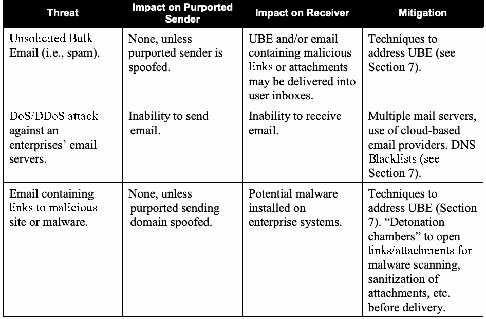
| 脅威 | 送信者とされる者への影響 | 受信者への影響 | 緩和策 |
| 迷惑な一括メール（すなわちスパム）。 | 送信者とされる者が偽装されていない限り、影響なし。 | UBE や悪意あるリンクまたは添付ファイルを含むメールがユーザーの受信箱に配信される場合がある。 | UBE 対策技法（第7節参照）。 |
| 企業のメールサーバーに対する DoS／DDoS 攻撃。 | メールを送信できなくなる。 | メールを受信できなくなる。 | 複数のメールサーバー、クラウドメールプロバイダーの使用。DNS ブラックリスト（第7節参照）。 |
| 悪意あるサイトまたはマルウェアへのリンクを含むメール。 | 送信者とされるドメインが偽装されていない限り、影響なし。 | 企業システムにマルウェアがインストールされる可能性。 | UBE 対策技法（第7節）。配信前にリンク／添付ファイルを開いてマルウェアをスキャンする「爆発解析環境」、添付ファイルの無害化など。 |
3.5 Security Recommendations Summary
3.5 セキュリティ推奨事項の要約
Security Recommendation 3-1: To mitigate the risk of unauthorized sender, an enterprise administrator should block outbound port 25 (except for authorized mail senders) and look to deploy firewall or intrusion detection systems (IDS) that can alert the administrator when an unauthorized host is sending mail via SMTP to the Internet.
セキュリティ推奨事項 3-1: 未承認送信者のリスクを軽減するため、企業管理者はアウトバウンドポート25（許可されたメール送信者を除く）をブロックし、許可されていないホストが SMTP を使ってインターネットへメールを送信したときに管理者へ警告するファイアウォールまたは侵入検知システム（IDS）の導入を検討するべきである。
Security Recommendation 3-2: Systems that are not involved in the organization’s email infrastructure should not be configured to run Mail Transfer Agents (MTAs). Internal systems that need to send mail should be configured to use a trusted internal MSA.
セキュリティ推奨事項 3-2: 組織のメールインフラストラクチャに関与しないシステムでは、メール転送エージェント（MTA）を実行するよう構成するべきではない。メール送信が必要な内部システムは、信頼された内部 MSA を使用するよう構成するべきである。
Security Recommendation 3-3: To mitigate the risk of unauthorized receivers, an enterprise administrator should block inbound port 25 and look to deploy firewall or intrusion detection systems (IDS) that can alert the administrator when an unauthorized host is accepting mail via SMTP from the Internet.
セキュリティ推奨事項 3-3: 未承認受信者のリスクを軽減するため、企業管理者はインバウンドポート25をブロックし、未承認ホストがインターネットから SMTP 経由でメールを受け入れたときに管理者へ警告するファイアウォールまたは侵入検知システム（IDS）の導入を検討するべきである。
4 Authenticating a Sending Domain and Individual Mail Messages
4 送信ドメインおよび個々のメールメッセージの認証
未レビュー訳4.1 Introduction
4.1 はじめに
RFC 5322 defines the Internet Message Format (IMF) for delivery over the Simple Mail Transfer Protocol (SMTP) [RFC5321], but in its original state any sender can write any envelope-From: address in the header (see Section 2.3.3). �is envelope-From: address can however be overridden by malicious senders or enterprise mail administrators, who may have organizational reasons to rewrite the header, and so both [RFC 5321] and [RFC 5322] defined From: addresses can be aligned to some arbitrary form not intrinsically associated with the originating IP address. In addition, any man in the middle attack can modify a header or data content. New protocols were developed to detect these envelope-From: and message-From: address spoofing or modifications.
RFC 5322 は簡易メール転送プロトコル（SMTP）[RFC5321] による配信用のインターネットメッセージ形式（IMF）を定義しているが、当初の状態では送信者は誰でも任意のエンベロープ From: アドレスをヘッダーに記述できた（第2.3.3節参照）。ただし、このエンベロープ From: アドレスは悪意ある送信者や、組織上の理由でヘッダーを書き換えるメール管理者によって上書きできる。そのため [RFC 5321] と [RFC 5322] で定義された From: アドレスは、送信元 IP アドレスと本質的に結び付かない任意の形式に整合させられる。さらに、中間者攻撃によってヘッダーまたはデータ内容を変更できる。このようなエンベロープ From: および message-From: アドレスの偽装や改変を検出する新しいプロトコルが開発された。
未レビュー訳Sender Policy Framework (SPF) [RFC4408] uses the Domain Name System (DNS) to allow domain owners to create records that associate the envelope-From: address domain name with one or more IP address blocks used by authorized MTAs. It is then a simple matter for a receiving MTA to check a SPF TXT record in the DNS. �is check would confirm the purported sender of a message is in the listed approved sending MTA is indeed authorized to transmit email messages for the domain listed in the envelope-From: address. Mail messages that do not pass this check may be marked, quarantined or rejected. SPF is described in subsection 4.4 below.
Sender Policy Framework（SPF）[RFC4408] はドメインネームシステム（DNS）を利用し、ドメイン所有者が、エンベロープ From: アドレスのドメイン名を、承認済み MTA が使用する1つ以上の IP アドレスブロックに関連付けるレコードを作成できるようにする。これにより受信 MTA は DNS 内の SPF TXT レコードを簡単に確認できる。このチェックにより、メッセージの送信者とされる者が、エンベロープ From: アドレスに記載されたドメインについてメール送信を実際に許可された送信 MTA の一覧に含まれるかを確認する。チェックに合格しないメールメッセージは、マーキング、隔離、または拒否される場合がある。SPF は下記第4.4節で説明する。
未レビュー訳�e DomainKeys Identified Mail (DKIM) [RFC6376] protocol allows a sending MTA to digitally sign selected headers and the body of the message with a RSA signature and include the signature in a DKIM header that is attached to the message prior to transmission. �e DKIM signature header field includes a selector, which the receiver can use to retrieve the public key from a record in the DNS to validate the DKIM signature over the message. So, validating the signature assures the receiver that the message has not been modified in transit – other than additional headers added by MTAs en route which are ignored during the validation. Use of DKIM also ties the email message to the domain publishing the public key, regardless of the From: address (which could be different). DKIM is detailed in subsection 4.5.
DomainKeys Identified Mail（DKIM）[RFC6376] プロトコルでは、送信 MTA が RSA 署名を用いて選択されたヘッダーとメッセージ本文にデジタル署名し、伝送前にメッセージへ付加される DKIM ヘッダーに署名を含められる。DKIM 署名ヘッダーフィールドにはセレクターが含まれ、受信側は DNS レコードから公開鍵を取得してメッセージの DKIM 署名を検証できる。署名を検証することで、経路上の MTA が追加し、検証時に無視される追加ヘッダーを除き、メッセージが伝送中に改変されていないことを受信側に保証する。DKIM の使用は、From: アドレスが異なっていても、メールメッセージを公開鍵を公開するドメインに結び付ける。DKIM の詳細は第4.5節に記載する。
未レビュー訳Deploying SPF and DKIM may curb illicit activity against a sending domain, but the sender gets no indication of the extent of the beneficial (or otherwise) effects of these policies. Sending domain owners may choose to construct pairwise agreements with selected recipients to manually gather feedback, but this is not a scalable solution. �e Domain-based Message Authentication, Reporting and Conformance protocol (DMARC) [RFC7489] institutes such a feedback mechanism, to let sending domain owners know the proportionate effectiveness of their SPF and DKIM policies, and to signal to receivers what action should be taken in various individual and bulk attack scenarios. After setting a policy to advise receivers to deliver, quarantine or reject messages that fail both SPF and DKIM, email receivers then return DMARC aggregate and/or failure reports of email dispositions to the domain owner, who can review the results and potentially refine the policy. DMARC is described in subsection 4.6.
SPF と DKIM を導入すれば送信ドメインに対する不正行為を抑制できるが、これらのポリシーの有効性（または無効性）の程度を送信者は把握できない。送信ドメイン所有者は、選択した受信者との個別合意を結び、手作業でフィードバックを集めることもできるが、拡張性のある解決策ではない。ドメインベースのメッセージ認証、報告および適合（DMARC）[RFC7489] はそのようなフィードバック機構を設け、SPF および DKIM ポリシーの効果を送信ドメイン所有者に知らせるとともに、さまざまな個別攻撃および一括攻撃の状況で受信者が取るべき措置を伝える。SPF と DKIM の両方に失敗したメッセージを配信、隔離または拒否するようポリシーを設定すると、メール受信者は処理結果の DMARC 集計レポートおよび／または失敗レポートをドメイン所有者に返す。所有者は結果を確認し、必要に応じてポリシーを調整できる。DMARC は第4.6節で説明する。
未レビュー訳While DMARC can do a lot to curb spoofing and phishing (Section 3.1.6 above), it does need careful configuration. Intermediaries that forward mail have many legitimate reasons to rewrite headers, usually related to legitimate activities such as operating mailing lists, mail groups, and end-user mail forwarding. It should be noted that mail server forwarding changes the source IP address, and without rewriting the envelope-From: address, this can make SPF checks fail. On the other hand, header rewriting, or adding a footer to mail content, may cause the DKIM signature to fail. Both of these interventions can cause problems for DKIM validation and for message delivery. Section 4.6 expands on the problems of mail forwarding, and its mitigations.
DMARC はなりすましやフィッシングを大きく抑制できるが（上記第3.1.6節）、慎重な構成が必要である。メール転送中継システムには、メーリングリスト、メールグループ、エンドユーザーによるメール転送など、正当な活動に関連してヘッダーを書き換える正当な理由が多くある。メールサーバーによる転送は送信元 IP アドレスを変更するため、エンベロープ From: アドレスを書き換えなければ SPF チェックが失敗する可能性がある。一方、ヘッダーの書き換えやメール本文へのフッター追加により DKIM 署名が失敗する場合がある。いずれの介入も DKIM 検証とメッセージ配信に問題を起こす可能性がある。メール転送の問題とその緩和策については第4.6節で詳述する。
SPF, DKIM and DMARC authenticate that the sending MTA is an authorized, legitimate sender of email messages for the domain-part of the envelope-From: (and message-From: for DMARC) address, but these technologies do not verify that the email message is from a specific individual or logical account. �at kind of assurance is provided by end-to-end security mechanisms such as S/MIME (or OpenPGP). �e DKIM and S/MIME/OpenPGP signature standards are not-interfering: DKIM signatures go in the email header, while S/MIME/OpenPGP signatures are carried as MIME body parts. �e signatures are also complementary: a message is typically signed by S/MIME or OpenPGP immediately after it is composed, typically by the sender’s MUA, and the DKIM signature is added after the message passes through the sender’s MSA or
SPF、DKIM、DMARC は、エンベロープ From:（DMARC では message-From: も含む）アドレスのドメイン部分について、送信 MTA が承認された正規のメール送信者であることを認証するが、特定の個人または論理アカウントからのメッセージであることまでは検証しない。その種の保証は S/MIME（または OpenPGP）などエンドツーエンドセキュリティメカニズムが提供する。DKIM と S/MIME／OpenPGP の署名標準は互いに干渉しない。DKIM 署名はメールヘッダーに入る一方、S/MIME／OpenPGP 署名は MIME 本文パートとして格納される。また、両署名は相補的である。通常メッセージの作成直後に送信者の MUA が S/MIME または OpenPGP で署名し、そのメッセージが送信者の MSA または
未レビュー訳MTA.
MTA を通過した後に DKIM 署名が追加される。
未レビュー訳�e interrelation of SPF, DKIM, DMARC, and S/MIME signatures are shown in the Figure 4-1 below:
SPF、DKIM、DMARC および S/MIME 署名の相互関係を次の図4-1に示す:
未レビュー訳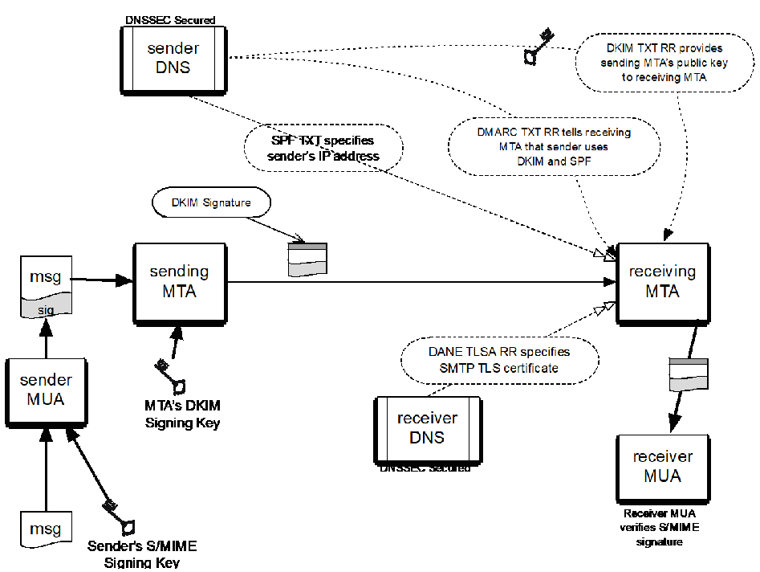
Figure 4-1: The interrelationship of DNSSEC, SPF, DKIM, DMARC and S/MIME for assuring message authenticity and integrity.
図4-1: メッセージの真正性および完全性を保証する DNSSEC、SPF、DKIM、DMARC、S/MIME の相互関係。
4.2 Visibility to End Users
4.2 エンドユーザーへの可視性
As mentioned above, the domain-based authentication protocols discussed in this section were designed with MTAs in mind. There was thought to be no need for information passed to the end recipient of the email. The results of SPF and DKIM checks are not normally visible in MUA components unless the end user views the message headers directly (and knows how to interpret them). This information may be useful to some end users who wish to filter messages based on these authentication results. [RFC7601] specifics how an MTA/MDA can add a new header to a message upon receipt that provides status information about any authentication checks done by the receiving MTA. Some MUAs make use of this information to provide visual cues (an icon, text color, etc.) to end users that this message passed the MTAs checks and was deemed valid. This does not explicitly mean that the email contents are authentic or valid, just that the email passed the various domain-based checks performed by the receiving MTA.
前述のとおり、本節で説明するドメインベース認証プロトコルは MTA を念頭に設計された。メールの最終受信者に情報を渡す必要はないと考えられていた。エンドユーザーがメッセージヘッダーを直接表示し、解釈方法を知っていない限り、SPF および DKIM のチェック結果は通常 MUA コンポーネントに表示されない。この情報は、認証結果に基づいてメッセージをフィルタリングしたい一部のエンドユーザーに役立つ可能性がある。[RFC7601] は、受信 MTA が行った認証チェックの状態情報を含む新しいヘッダーを、受信時に MTA／MDA がメッセージへ追加する方法を規定する。一部の MUA はこの情報を使い、MTA のチェックに合格して有効と判断されたメッセージであることを示す視覚的手掛かり（アイコン、文字色など）をエンドユーザーに提示する。これはメール内容が真正または有効であることを明示的に意味するのではなく、受信 MTA が実施した各種ドメインベースチェックに合格したことのみを示す。
Email administrators should be aware if the MUAs used in their enterprise can interpret and show results of the authentication headers to end users. Email administrators should educate end users about what the results mean when evaluating potential phishing/spam email as well as not assuming positive results means they have a completely secure channel.
企業のメール管理者は、組織で使用している MUA が認証ヘッダーを解釈し、その結果をエンドユーザーに表示できるか把握するべきである。メール管理者は、フィッシング／スパムの可能性があるメールを評価する際に結果が何を意味するのかをエンドユーザーに教育し、肯定的な結果が出たからといって完全に安全な通信経路であると思い込まないよう説明するべきである。
4.3 Requirements for Using Domain-based Authentication Techniques for Federal
4.3 連邦システムでドメインベース認証技法を使用するための要件
未レビュー訳Systems
システム
未レビュー訳As of the time of writing of this guidance document, the DHS has called out the use of domain-based authentication techniques for email as Binding Operational Directive (BOD) 18-01 [BOD18-01]. �is includes the techniques discussed below. �is section gives best-common-practice guidance of the domain-based authentication techniques listed (but not described) in BOD 18-01 and [FISMAMET]. �is document does not extend those requirements in anyway but gives guidance on how to meet existing requirements.
本指針文書の執筆時点で、国土安全保障省（DHS）はメールでのドメインベース認証技法の使用を拘束的運用指令（BOD）18-01 [BOD18-01] として指定している。これには以下で説明する技法が含まれる。本節では、BOD 18-01 および [FISMAMET] に列挙されている（ただし記述されていない）ドメインベース認証技法に関する一般的なベストプラクティスの指針を示す。本書はこれらの要件を一切拡張せず、既存要件を満たす方法を案内する。
未レビュー訳4.4 Sender Policy Framework (SPF)
4.4 送信者ポリシーフレームワーク（SPF）
Sender Policy Framework (SPF) is a standardized way for the domain of the envelope-From: address to identify and assert the mail originators (i.e., mail senders) for a given domain. �e sending domain does this by placing a specially formatted Text Resource Record (TXT RR) in the DNS database for the domain. �e idea is that a receiving MTA can check the IP address of the connecting MTA against the purported sending domain (the domain-part of the envelope-From: address) and see if the domain vouches for the sending MTA. �e receiving MTA does this by sending a DNS query to the purported sending domain for the list of valid senders.
送信者ポリシーフレームワーク（SPF）は、エンベロープ From: アドレスのドメインが、当該ドメインのメール送信元（すなわちメール送信者）を識別し表明する標準化された方法である。送信ドメインは、そのドメインの DNS データベースに特別な形式のテキストリソースレコード（TXT RR）を置く。受信 MTA は接続してきた MTA の IP アドレスを、送信元とされるドメイン（エンベロープ From: アドレスのドメイン部分）と照合し、そのドメインが送信 MTA を保証しているか確認できる。受信 MTA は送信元とされるドメインに DNS クエリを送り、有効な送信者の一覧を得る。
未レビュー訳SPF was designed to address phishing and spam being sent by unauthorized senders (i.e., botnets). SPF does not stop all spam, in that spam email being sent from a domain that asserts its sending MTAs via an SPF record will pass all SPF checks. �at is, a spammer can send email using an envelope-From: address using a domain that the spammer controls, and that email will not result in a failed SPF check. SPF checks fail when mail is received from a sending MTA other than those listed as approved senders for the envelope-From: domain. For example, an infected botnet of hosts in an enterprise may be sending spam on its own (i.e., not through the enterprises outgoing SMTP server), but those spam messages would be detected as the infected hosts would not be listed as valid senders for the enterprise domain and would fail SPF checks. See [HERZBERG2009] for a detailed review of SPF and its effectiveness.
SPF は未承認送信者（すなわちボットネット）によるフィッシングやスパムに対処するため設計された。SPF はすべてのスパムを止めるものではない。SPF レコードで送信 MTA を表明するドメインから送られたスパムメールは、すべて SPF チェックに合格する。つまりスパマーは自分が管理するドメインのエンベロープ From: アドレスを使ってメールを送信でき、そのメールは SPF チェックに失敗しない。SPF チェックが失敗するのは、エンベロープ From: ドメインで承認済み送信者として記載されていない送信 MTA からメールを受信した場合である。たとえば、企業内の感染したボットネットホストが企業の送信 SMTP サーバーを通さず独自にスパムを送信しても、感染ホストは企業ドメインの有効な送信者として記載されていないため、SPF チェックに失敗して検出される。[HERZBERG2009] は SPF とその有効性に関する詳細なレビューである。
未レビュー訳4.4.1 Background
4.4.1 背景
SPF works by comparing the sender's IP address (IPv4 or IPv6, depending on the transport used to deliver the message) with the policy encoded in any SPF record found at the sending domain. �at is, the domain-part of the envelope-From: address. �is means that SPF checks can actually be applied before the bulk of the message is received from the sender. For example, in Fig 4-1, the sender with IP address 192.168.0.1 uses the envelope MAIL FROM: tag as alice@example.org even though the message header is alice.sender@example.net. �e receiver queries for the SPF RR for example.org and checks if the IP address is listed as a valid sender. If it is listed, or no valid SPF record is found, the message is processed as usual. If not, the receiver may mark the message as a potential spoofed email, quarantine it for further (possibly administrator) analysis or reject the message, depending on the SPF policy and/or the policy discovered in any associated DMARC record (see subsection 4.5, below) for example.org.
SPF は送信者の IP アドレス（メッセージ配信に使用されたトランスポートに応じて IPv4 または IPv6）と、送信ドメインにある SPF レコードに符号化されたポリシーを比較する。すなわち、エンベロープ From: アドレスのドメイン部分である。このため、送信者からメッセージの大半を受信する前に SPF チェックを適用できる。たとえば図4-1では、IP アドレス 192.168.0.1 の送信者は、メッセージヘッダーでは alice.sender@example.net を使う一方、エンベロープ MAIL FROM: タグでは alice@example.org を使う。受信者は example.org の SPF RR を問い合わせ、IP アドレスが有効な送信者として記載されているか確認する。記載されている場合、または有効な SPF レコードが見つからない場合、メッセージは通常どおり処理される。そうでなければ、SPF ポリシーおよび／または関連する example.org の DMARC レコード（下記第4.5節参照）で見つかったポリシーに応じ、受信者はメッセージを偽装メールの可能性があるものとしてマークする、追加（管理者による場合もある）分析のため隔離する、または拒否する。
未レビュー訳Client connects to port 25 Server: 220 mx.example.com Client: HELO mta.example.net S: 250 Hello mta.example.net, I am glad to meet you C: MAIL FROM:<alice@example.org> S: 250 Ok C: RCPT TO:<bob@example.com> S: 354 End data with <CR><LF>.<CR><LF> C: To: bob@example.org
クライアントはポート25に接続 サーバー: 220 mx.example.com クライアント: HELO mta.example.net S: 250 Hello mta.example.net, I am glad to meet you C: MAIL FROM:<alice@example.org> S: 250 Ok C: RCPT TO:<bob@example.com> S: 354 End data with <CR><LF>.<CR><LF> C: To: bob@example.org
未レビュー訳原本PDFの抜粋画像
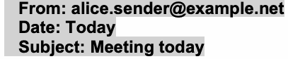
…
未レビュー訳Figure 4-2: SMTP envelope header vs. message header
図4-2: SMTP エンベロープヘッダーとメッセージヘッダー
Because of the nature of DNS (which SPF uses for publication) an SPF policy is tied to one domain. �at is, @example.org and @sub.example.org are considered separate domains just like @example.net and all three need their own SPF records. �is complicates things for organizations that have several domains and subdomains that may (or may not) send mail. �ere is a way to publish a centralized SPF policy for a collection of domains using the include: tag (see Sec 4.2.2.2 below)
SPF の公開に DNS を使う性質上、SPF ポリシーは1つのドメインに結び付く。つまり @example.org と @sub.example.org は @example.net と同じく別ドメインとして扱われ、3つとも独自の SPF レコードを必要とする。メールを送信する可能性のある複数のドメインやサブドメインを持つ組織では、これが複雑さを増す。include: タグを使うと、複数ドメインを対象とする SPF ポリシーを一元的に公開できる（下記第4.2.2.2節参照）。
未レビュー訳SPF was first specified in [RFC4408] as an experimental protocol, since at the same time other, similar proposals were also being considered. Over time however, SPF became widely deployed and was finalized in [RFC7208] (and its updates). �e changes between the final version and the original version are mostly minor, and those that base their deployments on the experimental version are still understood by clients that implement the final version. �e most significant difference is that the final specification no longer calls for the use of a specialized RRType (simply called a SPF RR) and instead calls for the sender policy to be encoded in a TXT Resource Record, in part because it proved too difficult to universally upgrade legacy DNS systems to accept a new RRType. Older clients may still look for the SPF RR, but the majority will fall back and ask for a TXT RR if it fails to find the special SPF RR. Resolution of the Sender Policy Framework (SPF) and Sender ID Experiments [RFC6686] presents the evidence that was used to justify the abandonment of the SPF RR.
SPF は類似提案も同時に検討されていたため、実験的プロトコルとして最初に [RFC4408] で規定された。しかし時間の経過とともに SPF は広く導入され、[RFC7208]（およびその更新）で最終化された。最終版と初版の違いはおおむね小さく、実験版を基に導入したシステムも最終版を実装するクライアントから認識される。最も重要な違いは、最終仕様が専用 RRType（単に SPF RR と呼ばれる）の使用を求めず、代わりに TXT リソースレコードに送信者ポリシーを符号化するよう求める点である。新しい RRType に対応するため旧式 DNS システムを一律にアップグレードすることが非常に困難だったことも理由の一つである。古いクライアントは SPF RR を検索する場合があるが、大半は専用 SPF RR が見つからなければ TXT RR にフォールバックする。Sender Policy Framework（SPF）および Sender ID の実験の解決 [RFC6686] は、SPF RR の廃止を正当化するために用いられた証拠を示している。
未レビュー訳SPF is seen as a way to reduce the risk of phishing email being delivered and used as to install malware inside an agency's network. Since it is relatively easy to check using the DNS, SPF is seen as a useful layer of email checks.
SPF はフィッシングメールが配信され、機関のネットワーク内にマルウェアをインストールするために使われるリスクを低減する手段とみなされている。DNS を使って比較的容易に確認できるため、SPF はメールチェックの有用な層と考えられている。
4.4.2 SPF on the Sender Side
4.4.2 送信側での SPF
Deploying SPF for a sending domain is fairly straightforward. It does not even require SPF aware code in mail servers, as receivers, not senders, perform the SPF processing. �e only necessary actions are identifying IP addresses or ranges of permitted sending hosts for a given domain and adding that information in the DNS as a new resource record.
送信ドメインで SPF を導入するのは比較的容易である。SPF 処理を行うのは送信者ではなく受信者であるため、メールサーバーに SPF 対応コードを入れる必要さえない。必要な作業は、特定ドメインで送信を許可するホストの IP アドレスまたは範囲を特定し、その情報を新しいリソースレコードとして DNS に追加することだけである。
未レビュー訳4.4.2.1 Identifying Permitted Senders for a Domain and Setting the Policy
4.4.2.1 ドメインの許可送信者の特定とポリシー設定
�e first step in deploying SPF for a sending domain is to identify all the hosts that send email out of the domain (i.e., SMTP servers that are tasked with being email gateways to the Internet). �is can be hard to do because:
送信ドメインで SPF を導入する最初の手順は、そのドメインからメールを送信するすべてのホスト（すなわち、インターネットへのメールゲートウェイを担う SMTP サーバー）を特定することである。これは次の理由から難しい場合がある:
未レビュー訳•�ere may be mail-sending SMTP servers within sub-units of the organization that are not known to higher-level management.
•組織の下位部門に、上級管理職が把握していないメール送信用 SMTP サーバーがある場合がある。
未レビュー訳•�ere may be other organizations that send mail on behalf of the organization (such as e-mail marketing firms or legitimate bulk-mailers).
•電子メールマーケティング会社や正規の一括メール配信業者など、組織に代わってメールを送信する他の組織がある場合がある。
未レビュー訳•Individuals who work remotely for the organization may send mail using their organization’s email address but a local mail relay.
•組織のリモート勤務者が、組織のメールアドレスを使いながらローカルのメール中継を通じて送信する場合がある。
If the senders cannot be listed with certainty, the SPF policy can indicate that receivers should not necessarily reject messages that fail SPF checks by using the “~” or “?” mechanisms, rather than the “-“ mechanism (see 4.3.2.2 below) in the SPF TXT record.
送信者を確実に一覧化できない場合、SPF TXT レコードで “-” メカニズムを使う代わりに “~” または “?” メカニズムを用いることで、SPF チェックに失敗したメッセージを受信者が必ずしも拒否しないよう SPF ポリシーで示せる（下記第4.3.2.2節参照）。
未レビュー訳Note: Deployment of DMARC [RFC7489] (discussed below) allows for reporting SPF check results back to sending domain owners, which allows senders to modify and improve their policy to minimize improper rejections.
注: DMARC [RFC7489]（以下で説明）を導入すると、SPF チェックの結果を送信ドメイン所有者へ報告できる。これにより送信者はポリシーを変更および改善し、不適切な拒否を最小限にできる。
4.4.2.2 Forming the SPF Resource Record
4.4.2.2 SPF リソースレコードの作成
Once all the outgoing senders are identified, the appropriate policy can be encoded and put into the domain database. �e SPF syntax is fairly rich and can express complex relationships between senders. Not only can entities be identified and called out, but the SPF statement can also request what emphasis should be placed on each test.
送信側の送信者をすべて特定したら、適切なポリシーを符号化してドメインデータベースに登録する。SPF 構文はかなり豊富で、送信者間の複雑な関係を表現できる。エンティティを特定して指定するだけでなく、各チェックにどの程度の強さを適用するかも SPF 文で要求できる。
未レビュー訳SPF statements are encoded in ASCII text (as they are stored in DNS TXT resource records) and checks are processed in left to right order. Every statement begins with v=spf1 to indicate that this is an SPF (version 1) statement8.
SPF 文は ASCII テキストで符号化され（DNS TXT リソースレコード内に格納されるため）、チェックは左から右の順で処理される。各文は v=spf1 で始まり、SPF（バージョン1）の文であることを示す。⁸
未レビュー訳Other mechanisms are listed in Table 4-1:
その他のメカニズムを表4-1に示す:
Table 4-1: SPF Mechanisms
表4-1: SPF メカニズム
| Tag | Description |
| ip4: | Specifies an IPv4 address or range of addresses that are authorized senders for a domain. |
| ip6: | Specifies an IPv6 address or range of addresses that are authorized senders for a domain. |
| a | Asserts that the IP address listed in the domain’s primary A RR is authored to send mail. |
| mx | Asserts that the listed hosts for the MX RR’s are also valid senders for the domain. |
| include: | Lists another domain where the receiver should look for an SPF RR for further senders. �is can be useful for large organizations with many domains or sub-domains that have a single set of shared senders. �e include: mechanism is recursive, in that the SPF check in the record found is tested in its entirety before proceeding. It is not simply a concatenation of the checks. |
| all | Matches every IP address that has not otherwise been matched. |
原本PDFの抜粋画像
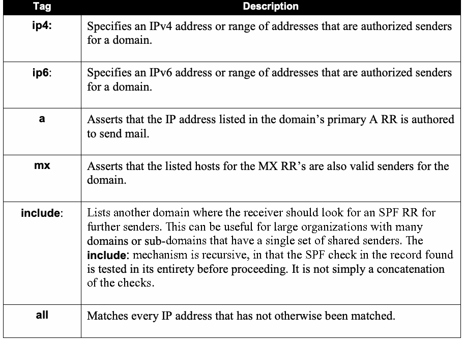
| タグ | 説明 |
| ip4: | ドメインの送信を許可された IPv4 アドレスまたはアドレス範囲を指定する。 |
| ip6: | ドメインの送信を許可された IPv6 アドレスまたはアドレス範囲を指定する。 |
| a | ドメインのプライマリ A RR に記載された IP アドレスがメール送信を許可されていることを表明する。 |
| mx | MX RR に記載されたホストもドメインの有効な送信者であることを表明する。 |
| include: | 追加送信者について受信者が SPF RR を検索すべき別のドメインを列挙する。共有送信者の集合を持つ多数のドメインまたはサブドメインを持つ大規模組織に役立つ。include: メカニズムは再帰的であり、先へ進む前に参照先レコード内の SPF チェック全体を評価する。チェックを単純に連結するわけではない。 |
| all | 他の条件に一致していないすべての IP アドレスに一致する。 |
Each mechanism in the string is separated by whitespace. In addition, there are qualifiers that can be used for each mechanism (Table 4-2):
文字列内の各メカニズムは空白で区切る。さらに各メカニズムに修飾子を使用できる（表4-2）:
Table 4-2: SPF Mechanism Qualifiers
表4-2: SPF メカニズム修飾子
| Qualifier | Description |
| + | �e given mechanism check must pass. �is is the default mechanism and does not need to be explicitly listed. |
| - | �e given mechanism is not allowed to send email on behalf of the domain. |
| ~ | �e given mechanism is in transition and if an email is seen from the listed host/IP address, that it should be accepted but marked for closer inspection. |
| ? | �e SPF RR explicitly states nothing about the mechanism. In this case, the default behavior is to accept the email. (�is makes it equivalent to “+” unless some sort of discrete or aggregate message review is conducted). |
原本PDFの抜粋画像
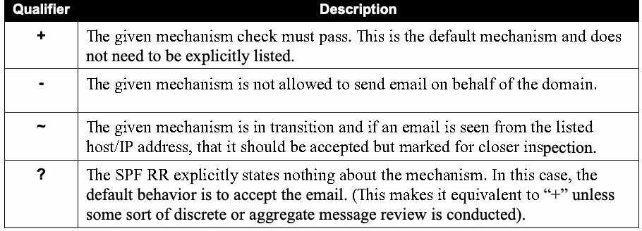
| 修飾子 | 説明 |
| + | 指定されたメカニズムのチェックに合格しなければならない。これはデフォルトのメカニズムであり、明示的に記載する必要はない。 |
| - | 指定されたメカニズムはドメインを代表してメールを送信することを許可されない。 |
| ~ | 指定されたメカニズムは移行中である。記載されたホスト／IP アドレスからメールが確認された場合、受け入れるが、より詳しく検査するためにマークする。 |
| ? | SPF RR は当該メカニズムについて何も明示しない。この場合、デフォルトの動作はメールを受け入れることである。（個別または集約メッセージレビューを実施しない限り、これは “+” と同等である。） |
�ere are other mechanisms available as well that are not listed here. Administrators interested in seeing the full depth of the SPF syntax are encouraged to read the full specification in [RFC7208]. To aid administrators, there are some online tools that can be used assist in the generation and testing of an SPF record. �ese tools take administrator input and generate the text that the administrator then places in a TXT RR in the given domain's zone file.
ここに記載されていない他のメカニズムも利用できる。SPF 構文の全容を確認したい管理者は、[RFC7208] の完全な仕様を読むことが推奨される。管理者を支援するオンラインツールの中には、SPF レコードの生成とテストに使えるものがある。これらのツールは管理者の入力を受け取り、指定ドメインのゾーンファイル内の TXT RR に管理者が配置するテキストを生成する。
未レビュー訳4.4.2.3 Example SPF RRs
4.4.2.3 SPF RR の例
Some examples of the mechanisms for SPF are given below. In each example, the purported sender in the SMTP envelope is example.com
以下に SPF メカニズムの例をいくつか示す。各例では、SMTP エンベロープ上の送信者とされるドメインは example.com である。
未レビュー訳�e given domain has one mail server that both sends and receives mail. No other system is authorized to send mail. �e resulting SPF RR would be:
このドメインにはメールを送受信するメールサーバーが1台だけある。他のシステムにはメール送信が許可されていない。結果として SPF RR は次のようになる:
未レビュー訳example.com IN TXT "v=spf1 mx -all"
example.com IN TXT "v=spf1 mx -all"
未レビュー訳�e given enterprise has a DMZ that allows hosts to send mail but is not sure if other senders exist. As a temporary measure, they list the SPF as:
対象企業にはホストからメール送信を許可する DMZ があるが、他の送信者が存在するか確信がない。暫定策として SPF を次のように登録する:
未レビュー訳example.com IN TXT "v=spf1 ip4:192.168.1.0/16 ~all"
example.com IN TXT "v=spf1 ip4:192.168.1.0/16 ~all"
未レビュー訳�e enterprise has several domains for projects, but only one set of sending MTAs. For each domain, there is an SPF RR with the include: declaration pointing to a central TXT RR with the SPF policy that covers all the domains. For example, each domain could have:
企業にはプロジェクト用のドメインが複数あるが、送信 MTA の集合は1つだけである。各ドメインの SPF RR には include: 宣言を置き、すべてのドメインを対象とする SPF ポリシーを持つ一元化された TXT RR を参照する。たとえば各ドメインには次のように設定できる:
未レビュー訳example.com IN TXT "v=spf1 include:spf.example.net."
example.com IN TXT "v=spf1 include:spf.example.net."
未レビュー訳�e follow up query for the spf.example.net then has:
続いて spf.example.net に対する問い合わせ結果は次のようになる:
未レビュー訳spf.example.net IN TXT "v=spf1 ip4:192.168.0.1 …"
spf.example.net IN TXT "v=spf1 ip4:192.168.0.1 …"
未レビュー訳�is makes SPF easier to manage for an enterprise with several domains and/or public subdomains. Administrators only need to edit spf.example.net to make changes to the SPF RR while the other SPF RR's in the other domains simply use the include: tag to reference it. No email should originate from the domain:
これにより、複数ドメインおよび／または公開サブドメインを持つ企業の SPF 管理が容易になる。管理者は spf.example.net のみを編集して SPF RR を変更すればよく、他ドメインの SPF RR は include: タグを使ってこれを参照する。次のドメインからメールが送信されることはない:
未レビュー訳example.com IN TXT "v=spf1 -all"
example.com IN TXT "v=spf1 -all"
未レビュー訳�e above should be added to all domains that do not send mail to prevent them being used by phishers looking for sending domains to spoof that they believe may not be monitored as closely as those that accept and send enterprise email. This is an important principle for domains that think they are immune from email related threats. Domain names that are only used to host web or services are advised to publish a “-all” record, to protect their reputation.
上記レコードは、メールを送信しないすべてのドメインに追加し、企業メールを受け入れ送信するドメインほど監視されていないと攻撃者が考える送信ドメインを偽装して、フィッシャーに悪用されることを防ぐべきである。これは、メール関連脅威の影響を受けないと考えているドメインにも重要な原則である。ウェブサイトやサービスのホスティングにのみ使われるドメイン名についても、評判を守るため “-all” レコードを公開することが推奨される。
未レビュー訳Notice that semicolons are not permitted in the SPF TXT record.
SPF TXT レコードではセミコロンは許可されない点に注意。
Security Recommendation 4-1: Organizations are recommended to deploy SPF to specify which IP addresses are authorized to transmit email on behalf of the domain. Domains controlled by an organization that are not used to send email, for example Web only domains, should include an SPF RR with the policy indicating that there are no valid email senders for the given domain.
セキュリティ推奨事項 4-1: ドメインを代表してメールを送信することを許可する IP アドレスを指定するため、組織は SPF の導入が推奨される。メール送信に使われない組織管理下のドメイン（例: ウェブ専用ドメイン）には、当該ドメインに有効なメール送信者が存在しないことを示すポリシーを持つ SPF RR を含めるべきである。
4.4.3 SPF and DNS
4.4.3 SPF と DNS
Since SPF policies are now only encoded in DNS TXT resource records, no specialized software is needed to host SPF RRs. Organizations can opt to include the old (no longer mandated) unique SPF RRType as well, but it is usually not needed, as clients that still query for the type automatically query for a TXT RR if the SPF RR is not found.
SPF ポリシーは現在 DNS TXT リソースレコードにのみ符号化されるため、SPF RR のホスティングに専用ソフトウェアは不要である。組織は以前の（現在は必須でない）固有 SPF RRType も含めることができるが、通常は不要である。該当 RRType を引き続き照会するクライアントは、SPF RR が見つからない場合、自動的に TXT RR を照会するためである。
Organizations that deploy SPF should also deploy DNS security (DNSSEC) [RFC4033], [RFC4034], [RFC4035]. DNSSEC provides source authentication and integrity protection for DNS data. SPF RRs in DNSSEC signed zones cannot be altered or stripped from responses without DNSSEC aware receivers detecting the attack. Its use is more fully described in Section 5.
SPF を導入する組織は DNS セキュリティ（DNSSEC）[RFC4033]、[RFC4034]、[RFC4035] も導入するべきである。DNSSEC は DNS データの送信元認証と完全性保護を提供する。DNSSEC 署名ゾーン内の SPF RR は、DNSSEC 対応受信者が攻撃を検知することなく、改変または応答から削除できない。その使用方法は第5節で詳述する。
4.4.3.1 Changing an Existing SPF Policy
4.4.3.1 既存 SPF ポリシーの変更
Changing the policy statement in an SPF RR is straightforward but requires timing considerations due to the caching nature of DNS. It may take some time for the new SPF RR to propagate to all authoritative servers. Likewise, the old, outgoing SPF RR may be cached in client DNS servers for the length of the SPF's TXT RR Time-to-Live (TTL). An enterprise should be aware that some clients might still have the old version of the SPF policy for some time before learning the new version. To minimize the effect of DNS caching, it is useful to decrease the DNS timeout to a small period of time (e.g., 300 seconds) before making changes, and then restoring DNS to a longer time period (e.g., 3600 seconds) after the changes have been made, tested, and confirmed to be correct.
SPF RR内のポリシー記述の変更自体は容易だが、DNSがキャッシュを使用するためタイミングを考慮する必要がある。新しいSPF RRがすべての権威サーバーに伝播するまで時間がかかることがある。同様に、旧SPF RRはSPFのTXT RRのTime-to-Live（TTL）期間中、クライアントDNSサーバーにキャッシュされる場合がある。新しいバージョンを認識するまで、しばらくの間、古いSPFポリシーを使用するクライアントが存在し得ることを企業は認識しておくべきである。DNSキャッシュの影響を最小限にするには、変更前にDNSのタイムアウトを短い期間（例：300秒）に設定し、変更後にその変更を試験・確認してから、より長い期間（例：3600秒）に戻すとよい。
未レビュー訳4.4.4 Considerations for SPF when Using Cloud Services or Contracted Services
4.4.4 クラウドサービスまたは委託サービス利用時のSPFに関する考慮事項
When an organization outsources its email service (whole or part) to a third party such as a cloud provider or contracted email service, that organization needs to make sure any email sent by those third parties will pass SPF checks. To do this, the enterprise administrator should include the IP addresses of third party senders in the enterprise SPF policy statement RR. Failure to include all the possible senders could result in valid email being rejected due to a failure when doing the SPF check.
組織が電子メールサービスの全部または一部をクラウドプロバイダーや委託メールサービスなどの第三者に外部委託する場合、第三者が送信するすべてのメールがSPF検査に合格するよう確認する必要がある。そのため企業管理者は、第三者送信者のIPアドレスを企業のSPFポリシー記述RRに含めるべきである。送信者をすべて含めないと、SPF検査の失敗により正当な電子メールが拒否される可能性がある。
Including third-parties to an SPF RR is done by adding the IP addresses/hostnames individually or using the include: tag to reference a third party's own SPF record (if one exists). In general, it is preferable to use the include: mechanism, as the mechanism avoids hard-coding IP addresses in multiple locations. �e include: tag does have a hard limit on the number of “chained” include: tag that a client will look up to prevent an endless series of queries. �is value is ten unique DNS lookups by default.
SPF RRに第三者を含めるには、IPアドレス／ホスト名を個別に追加するか、include:タグを用いて第三者自身のSPFレコード（存在する場合）を参照する。一般に、IPアドレスを複数箇所に固定記述せずに済むため、include:方式が望ましい。include:タグには、クライアントが検索する「連鎖」include:タグの数に上限があり、無限のクエリ連鎖を防ぐ。既定では、この値は一意なDNS検索10回である。
未レビュー訳For instance, if example.com has its own sending MTA at 192.0.0.1 but also uses a third party (third-example.net) to send non-transactional email as well, the SPF RR for example.com would look like:
例えば、example.comが192.0.0.1に独自の送信MTAを持ち、第三者（third-example.net）も非トランザクションメールの送信に利用する場合、example.comのSPF RRは次のようになる：
未レビュー訳example.com IN TXT "v=spf1 ip4:192.0.0.1
example.com IN TXT "v=spf1 ip4:192.0.0.1
未レビュー訳include:third-example.net -all"
include:third-example.net -all"
未レビュー訳As mentioned above, the include: mechanism does not simply concatenate the policy tests of the included domain (here: third-example.net) but performs all the checks in the SPF policy referenced and returns the final result. An administrator should not include the modifier "+" (requiring the mechanism to pass in order for the whole check to pass) to the include: unless they are also in control of the included domain, as any change to the SPF policy in the included domain will affect the SPF validation check for the sending domain.
前述のとおり、include:方式は参照先ドメイン（ここではthird-example.net）のポリシー検査を単純に連結するのではなく、参照先SPFポリシーのすべての検査を実行し、最終結果を返す。管理者は、include:先ドメインも自ら管理している場合を除き、「+」修飾子（全体の検査が合格するには、この機構も合格する必要がある）をinclude:に付加すべきではない。include:先ドメインのSPFポリシーが変更されると、送信ドメインのSPF検証にも影響するためである。
未レビュー訳4.4.5 SPF on the Receiver Side
4.4.5 受信側のSPF
Unlike senders, receivers need to have SPF-aware mail servers to check SPF policies. SPF has been around in some form (either experimental or finalized) and available in just about all major mail server implementations. �ere are also patches and libraries available for other implementations to make them SPF-aware and perform SPF queries and processing9. �ere may be plug-ins available for a particular Mail User Agent so end users can perform SPF checks even if their incoming mail server does not.
送信者とは異なり、受信者がSPFポリシーを検査するには、SPFに対応したメールサーバーが必要である。SPFは実験段階または最終版として長年存在し、ほぼすべての主要メールサーバー実装で利用できる。他の実装をSPF対応にし、SPFクエリおよび処理を行うためのパッチやライブラリも用意されている9。受信メールサーバーがSPFに対応していなくても、エンドユーザーがSPF検査を実行できるよう、特定のメールユーザーエージェント用プラグインが提供されている場合がある。
未レビュー訳As mentioned above, SPF uses the envelope-From: address domain-part and the IP address of the sender. �is means that SPF checks can be started before the actual text of the email message is received. Alternatively, messages can be quickly received and held in quarantine until all the checks are finished. In either event, checks must be completed before the mail message is sent to an end user's inbox (unless the only SPF checks are performed by the end user using their own
前述のとおり、SPFはenvelope-From:アドレスのドメイン部分と送信者のIPアドレスを使用する。このため、電子メールメッセージ本文を受信する前にSPF検査を開始できる。あるいは、メッセージをすばやく受信して隔離し、すべての検査が終わるまで保留することもできる。いずれの場合も、メールメッセージをエンドユーザーの受信トレイに送る前に検査を完了しなければならない（SPF検査をエンドユーザー自身が自分のMUAを使って行う場合を除く）。
未レビュー訳MUA).
MUA）。
未レビュー訳�e resulting action based on the SPF checks depends on local receiver policy and the statements in the purported sending domain's SPF statement. �e action should be based on the modifiers (listed above) on each mechanism. If no SPF TXT RR is returned in the query, or the SPF has formatting errors that prevent parsing, the default behavior is to accept the message. �is is the same behavior for mail servers that are not SPF-aware.
SPF検査の結果に基づく措置は、受信側のローカルポリシーと、送信元とされるドメインのSPF記述に依存する。措置は各機構に記載された修飾子（前述）に基づくべきである。クエリでSPF TXT RRが返らない場合、またはSPFの形式エラーで解析できない場合、既定の動作はメッセージの受け入れである。SPF非対応メールサーバーでも同じ動作となる。
未レビュー訳4.4.5.1 SPF Queries and DNS
4.4.5.1 SPFクエリとDNS
Just as an organization that deploys SPF should also deploy DNSSEC [SP800-81], receivers that perform SPF processing should also perform DNSSEC validation (if possible) on responses to SPF queries. A mail server should be able to send queries to a validating DNS recursive server if it cannot perform its own DNSSEC validation.
SPFを導入する組織がDNSSEC [SP800-81]も導入すべきであるのと同様に、SPF処理を行う受信者も、SPFクエリ応答に対して可能な限りDNSSEC検証を実行すべきである。メールサーバー自体がDNSSEC検証を実行できない場合、検証機能を持つDNS再帰サーバーにクエリを送信できるようにすべきである。
Security Recommendation 4-2: Organizations should deploy DNSSEC for all DNS name servers and validate DNSSEC responses on all systems that receive email.
セキュリティ推奨事項4-2：組織はすべてのDNSネームサーバーにDNSSECを導入し、電子メールを受信するすべてのシステムでDNSSEC応答を検証すべきである。
4.5 DomainKeys Identified Mail (DKIM)
4.5 DomainKeys Identified Mail（DKIM）
DomainKeys Identified Mail (DKIM) permits a person, role, or organization that owns the signing domain to claim some responsibility for a message by associating the domain with the message. This can be an author's organization, an operational relay, or one of their agents. DKIM separates the question of the identity of the signer of the message from the purported author of the message. Assertion of responsibility is validated through a cryptographic signature and by querying the signer's domain directly to retrieve the appropriate public key. Message transit from author to recipient is through relays that typically make no substantive change to the message content and thus preserve the DKIM signature. Because the DKIM signature covers the message body, it also protects the integrity of the email communication. Changes to a message body will result in a DKIM signature validation failure, which is why some mailing lists (that add footers to email messages or change Subject header fields) will cause DKIM signature validation failures (discussed below).
DomainKeys Identified Mail（DKIM）を使うと、署名ドメインを所有する個人、役割または組織は、ドメインをメッセージに関連付けて、そのメッセージに一定の責任を負うことを表明できる。これは、著者の組織、運用中継サーバー、またはそれらの代理者の場合がある。DKIMは、メッセージ署名者の身元と、メッセージの発信者とされる者を区別する。責任の表明は、暗号署名と、適切な公開鍵を取得するため署名者のドメインに直接問い合わせることで検証される。発信者から受信者へのメッセージ転送は、通常メッセージ内容に実質的な変更を加えずDKIM署名を維持する中継サーバーを経由する。DKIM署名はメッセージ本文を対象とするため、電子メール通信の完全性も保護する。本文が変更されるとDKIM署名の検証に失敗する。そのため、電子メールにフッターを追加したりSubjectヘッダーフィールドを変更したりするメーリングリストの中には、DKIM署名検証の失敗を引き起こすものがある（後述）。
A DKIM signature is generated by the signing MTA using the email message body and headers and places it in the header of the message along with information for the client to use in validation of the signature (i.e., key selector, algorithm, etc.). When the receiving MTA gets the message, it attempts to validate the signature by looking for the public key indicated in the DKIM signature. �e MTA issues a DNS query for a text resource record (TXT RR) that contains the encoded key.
DKIM署名は、署名側MTAが電子メールの本文およびヘッダーを用いて生成し、署名を検証する際にクライアントが使う情報（鍵セレクター、アルゴリズムなど）とともにメッセージヘッダーに格納する。受信MTAはメッセージを受け取ると、DKIM署名で指定された公開鍵を探して署名の検証を試みる。MTAは符号化された鍵を含むテキストリソースレコード（TXT RR）をDNSで照会する。
未レビュー訳Like SPF (see Section 4.4), DKIM allows an enterprise to vouch for an email message sent from a domain it does not control (as would be listed in the SMTP envelope). �e sender only needs the private key to generate signatures. �is allows an enterprise to have email sent on its behalf by an approved third party. �e presence of the public key in the enterprises' DNS implies that there is a relationship between the enterprise and the sender.
SPF（第4.4節参照）と同様に、DKIMを使えば企業は、自らが管理しないドメイン（SMTPエンベロープに記載されるドメイン）から送信された電子メールについても保証を与えられる。送信者が署名の生成に必要とするのは秘密鍵だけである。これにより、承認された第三者が企業に代わって電子メールを送信できる。企業のDNSに公開鍵が存在することは、企業と送信者の間に関係があることを示す。
未レビュー訳Since DKIM requires the use cryptographic keys, enterprises must have a key management plan in place to generate, store and retire key pairs. Administrative boundaries complicate this plan if one organization sends mail on another organization's behalf.
DKIMでは暗号鍵を使うため、企業は鍵ペアを生成、保管および使用終了（退役）させる鍵管理計画を整備しなければならない。ある組織が別の組織に代わってメールを送信する場合、管理境界がこの計画を複雑にする。
4.5.1 Background
4.5.1 背景
DKIM was originally developed as part of a private sector consortium and only later transitioned to an IETF standard. �e threat model that the DKIM protocol is designed to protect against was published as [RFC4686] and assumes bad actors with an extensive corpus of mail messages from the domains being impersonated, knowledge of the businesses being impersonated, access to business public keys, and the ability to submit messages to MTAs and MSAs at many locations across the Internet. �e original DKIM protocol specification was developed as [RFC4871], which is now considered obsolete. �e specification underwent several revisions and updates and the current version of the DKIM specification is published as [RFC6376].
DKIMは当初、民間部門のコンソーシアムの一環として開発され、その後IETF標準に移行した。DKIMプロトコルが防御する脅威モデルは[RFC4686]として公開されている。これは、なりすまされるドメインから大量のメールを収集した悪意ある攻撃者、なりすまされる企業に関する知識、企業の公開鍵へのアクセス、ならびにインターネット上の多数の場所にあるMTAおよびMSAへメッセージを送信する能力を想定する。DKIMの当初のプロトコル仕様は[RFC4871]として策定されたが、現在は廃止扱いである。仕様は複数回改訂・更新され、現行版は[RFC6376]として公開されている。
未レビュー訳4.5.2 DKIM on the Sender Side
4.5.2 送信側のDKIM
Unlike SPF, DKIM requires specialized functionality on the sender MTA to generate the signatures. �erefore, the first step in deploying DKIM is to ensure that the organization has an MTA that can support the generation of DKIM signatures. DKIM support is currently available in some implementations or can be added using open source filters10. Administrators should remember that since DKIM involves digital signatures, signing MTAs should also have appropriate cryptographic tools to create and store keys and perform cryptographic operations.
SPFと異なり、DKIMでは署名生成のため送信MTAに専用機能が必要である。したがってDKIM導入の第一歩は、組織がDKIM署名を生成できるMTAを保有していることを確認することである。現在、一部の実装でDKIMを利用でき、またはオープンソースフィルター10を使って追加できる。DKIMにはデジタル署名が関係するため、署名MTAには鍵の生成・保管および暗号操作を実行する適切な暗号ツールも必要であることを管理者は忘れてはならない。
未レビュー訳4.5.3 Generation and Distribution of the DKIM Key Pair
4.5.3 DKIM鍵ペアの生成および配布
�e next step in deploying DKIM, after ensuring that the sending MTA is DKIM-aware, is to generate a signing key pair.
送信MTAがDKIM対応であることを確認した後、DKIM導入の次の手順は署名鍵ペアを生成することである。
未レビュー訳Cryptographic keys should be generated in accordance with NIST SP 800-57, “Recommendations for Key Management” [SP800-57pt1] and NIST SP 800-133, “Recommendations for Cryptographic Key Generation.” [SP800-133] Although there exist web-based systems for generating DKIM public/private key pairs and automatically producing the corresponding DNS entries, such systems should not be used for federal information systems because they may compromise the organization’s private key.
暗号鍵はNIST SP 800-57「鍵管理に関する推奨事項」[SP800-57pt1]およびNIST SP 800-133「暗号鍵生成に関する推奨事項」[SP800-133]に従って生成すべきである。DKIM公開鍵／秘密鍵ペアを生成し、対応するDNSエントリを自動生成するウェブベースのシステムも存在するが、組織の秘密鍵を危険にさらす可能性があるため、連邦情報システムでは使用すべきでない。
未レビュー訳Currently the DKIM standard specifies that messages must be signed with one of two digital signature algorithms: RSA/SHA-256 and the Edwards-curve Digital Signature Algorithm Curve25519 (ed25519) [RFC8463]. Of these, only RSA/SHA-256 is approved for use by government agencies with DKIM, as the hash algorithm SHA-1 is no longer approved for use in conjunction with digital signatures (see Table 4-3).
現行のDKIM標準では、メッセージは2種類のデジタル署名アルゴリズム、RSA/SHA-256およびEdwards-curve Digital Signature Algorithm Curve25519（ed25519）[RFC8463]のいずれかで署名しなければならないと規定している。このうち、DKIMで政府機関が使用を承認されているのはRSA/SHA-256のみである。これは、ハッシュアルゴリズムSHA-1がデジタル署名との併用でもはや承認されていないためである（表4-3参照）。
Table 4-3: Recommended Cryptographic Key Parameters
表4-3：推奨暗号鍵パラメータ
| DKIM Specified | Approved for | Recommended | Recommended |
| Algorithm | Government Use? | Length | Lifetime |
| RSA/SHA-256 | YES | 2048 bits | 1-2 years |
| ed25519 | NO11 | 256 bits | N/A |
原本PDFの抜粋画像
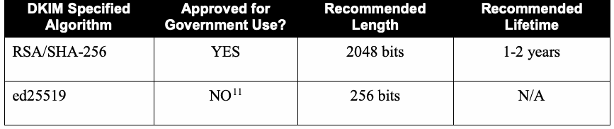
| DKIM規定 | 承認済み | 推奨 | 推奨 |
| アルゴリズム | 政府機関での使用 | 鍵長 | 有効期間 |
| RSA/SHA-256 | はい | 2048ビット | 1～2年 |
| ed25519 | いいえ11 | 256ビット | 該当なし |
Once the key pair is generated, the administrator should determine a selector name to use with the key. A DKIM selector name is a unique identifier for the key that is used to distinguish one DKIM key from any other potential keys used by the same sending domain, allowing different MTAs to be configured with different signing keys. �is selector name is used by receiving MTAs to query the validating key.
鍵ペアを生成したら、管理者はその鍵に使用するセレクター名を決めるべきである。DKIMセレクター名は鍵の一意な識別子であり、同じ送信ドメインが使用する他の鍵と区別するためのものである。これにより、異なるMTAに異なる署名鍵を構成できる。受信MTAはこのセレクター名を用いて検証鍵を問い合わせる。
未レビュー訳�e public part of the key pair is stored in a the DKIM TXT Resource Record (RR). �is record should be added to the organization’s DNS server and tested to make sure that it is accessible both within and outside the organization.
DKIM鍵ペアの公開部分はDKIM TXTリソースレコード（RR）に格納する。このレコードを組織のDNSサーバーに追加し、組織内外から参照できることを試験して確認すべきである。
未レビュー訳�e private part of the key pair is used by the MTA to sign outgoing mail. Administrators must configure their mail systems to protect the private part of the key pair from exposure to prevent an attacker from learning the key and using it to spoof email with the victim domain's DKIM key. For example, if the private part of the key pair is kept in a file, file permissions must be set so that only the user under which the MTA is running can read it.
鍵ペアの秘密部分はMTAが送信メールに署名するために使用する。攻撃者が鍵を知って被害ドメインのDKIM鍵で電子メールを偽装できないよう、管理者は秘密部分の漏えいを防ぐ設定をメールシステムに施さなければならない。例えば鍵ペアの秘密部分をファイルに保存する場合、MTAの実行ユーザーだけが読み取れるようファイル権限を設定する必要がある。
未レビュー訳As with any cryptographic keying material, enterprises should use a Cryptographic Key Management System (CKMS) to manage the generation, distribution, and lifecycle of DKIM keys. Federal agencies are encouraged to consult NIST SP 800-130 [SP800-130] and NIST SP 800-152 [SP800-152] for guidance on how to design and implement a CKMS within an agency.
他の暗号鍵素材と同様に、企業は暗号鍵管理システム（CKMS）を用いてDKIM鍵の生成、配布およびライフサイクルを管理すべきである。連邦機関は、機関内でCKMSを設計・実装する方法の指針としてNIST SP 800-130 [SP800-130]およびNIST SP 800-152 [SP800-152]を参照することが推奨される。
Security Recommendation 4-3: Federal agency administrators shall only use keys with approved algorithms and lengths for use with DKIM.
セキュリティ推奨事項4-3：連邦機関の管理者は、DKIMで使用が承認されたアルゴリズムおよび鍵長の鍵のみを使用しなければならない。
Security Recommendation 4-4: Administrators should ensure that the private portion of the key pair is adequately protected on the sending MTA and that only the MTA software has read privileges for the key. Federal agency administrators should follow FISMA control SC-12 [SP800-53] guidance with regards to distributing and protecting DKIM key pairs.
セキュリティ推奨事項4-4：管理者は秘密鍵部分が送信MTAで適切に保護され、鍵の読み取り権限がMTAソフトウェアのみに与えられていることを確認すべきである。連邦機関の管理者は、DKIM鍵ペアの配布および保護に関してFISMA管理策SC-12 [SP800-53]の指針に従うべきである。
Security Recommendation 4-5: Each sending MTA should be configured with its own private key and its own selector value, to minimize the damage that may occur if a private key is compromised. �is private key must have protection against both accidental disclosure or attacker’s attempt to obtain or modify.
セキュリティ推奨事項4-5：秘密鍵の侵害による損害を最小限に抑えるため、各送信MTAにはそれぞれ固有の秘密鍵とセレクター値を構成すべきである。この秘密鍵は、偶発的な開示と攻撃者による取得または改変の試みの双方から保護しなければならない。
未レビュー訳4.5.4 Example of a DKIM Signature
4.5.4 DKIM署名の例
Below is an example of a DKIM signature as would be seen in an email header. A signature is made up of a collection of tag=value pairs that contain parameters needed to successfully validate the signature as well as the signature itself. An administrator usually cannot configure the tags individually as these are done by the MTA functionality that does DKIM, though some require configuration (such as the selector, discussed above). Some common tags are described in Table 4-4.
以下は電子メールヘッダーに記載されるDKIM署名の例である。署名は、署名の検証に必要なパラメータおよび署名自体を含むtag=value組の集合で構成される。通常、管理者が各タグを個別に構成することはできない。これらはDKIM機能を実行するMTAによって設定されるが、セレクターなど一部は構成が必要である（前述）。一般的なタグを表4-4に示す。
未レビュー訳Table 4-4: DKIM Signature Tag and Value Descriptions
表4-4：DKIM署名のタグと値の説明
| Tag | Name | Description |
| v= | Version | Version of DKIM in use by the signer. Currently the only defined value is "1". |
| a= | Algorithm | �e algorithm used (rsa-sha1 or rsa-sha256) |
| b= | Signature (“base”) | �e actual signature encoded as a base64 string in textual representations |
原本PDFの抜粋画像
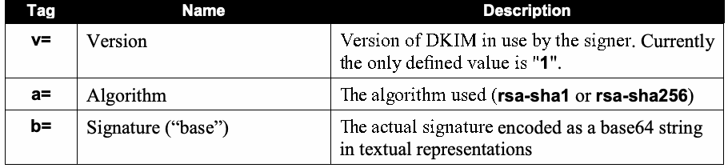
| タグ | 名称 | 説明 |
| v= | バージョン | Version of DKIM in use by the signer. Currently the only defined value is "1". |
| a= | アルゴリズム | 使用するアルゴリズム（rsa-sha1またはrsa-sha256） |
| b= | 署名（「base」） | テキスト表現でbase64文字列として符号化された実際の署名 |
| Tag | Name | Description |
| bh= | Signature Hash (“base hash”) | �e hash of the body of the email message encoded as a base64 string. |
| d= | Domain | �e DNS name of the party vouching for the signature. �is is used to identify the DNS domain where the public key resides. |
| i= | Identifier | �e identifier is normally either the same as, or a subdomain of, the d= domain. |
| s= | Selector | Required selector value. �is, together with the domain identified in the d= tag, is used to form the DNS query used to obtain the key that can validate the DKIM signature. |
| t= | Timestamp | �e time the DKIM signature was generated. |
| x= | Signature expiration | An optional value to state a time after which the DKIM signature should no longer be considered valid. Often included to provide anti-replay protection. |
| l= | Length | Length specification for the body in octets. So the signature can be computed over a given length, and this will not affect authentication in the case that a mail forwarder adds an additional suffix to the message. |
原本PDFの抜粋画像
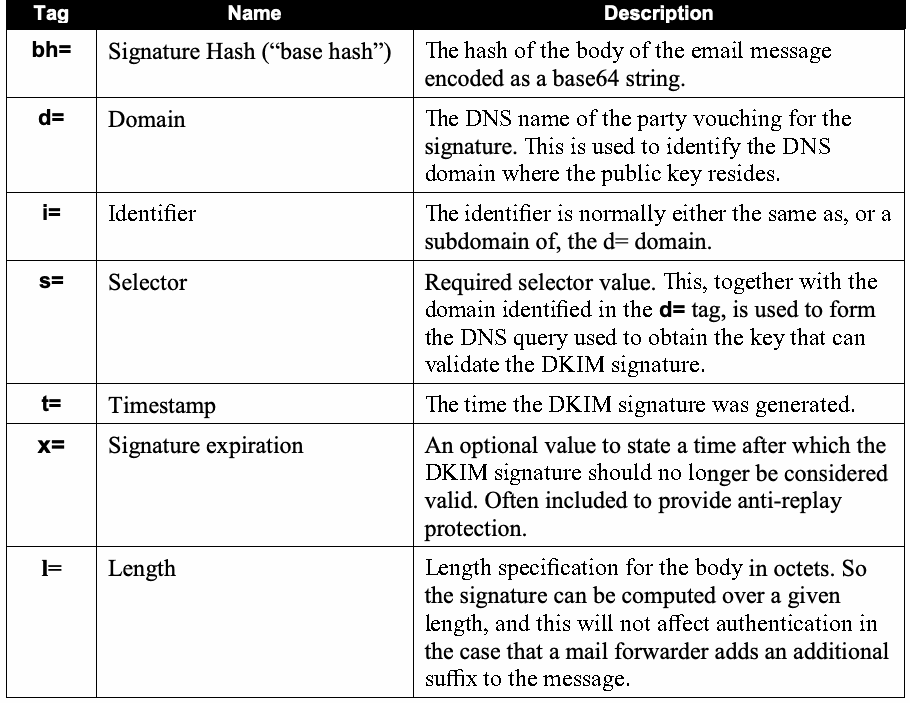
| タグ | 名称 | 説明 |
| bh= | 署名ハッシュ（「base hash」） | base64文字列として符号化された電子メールメッセージ本文のハッシュ。 |
| d= | ドメイン | 署名を保証する当事者のDNS名。公開鍵が格納されるDNSドメインを特定するために使用する。 |
| i= | 識別子 | 識別子は通常、d=ドメインと同じか、そのサブドメインである。 |
| s= | セレクター | 必須のセレクター値。d=タグで特定されるドメインと組み合わせて、DKIM署名を検証できる鍵を取得するDNSクエリを構成する。 |
| t= | タイムスタンプ | DKIM署名が生成された時刻。 |
| x= | 署名の有効期限 | DKIM署名を有効とみなさなくなる時刻を指定する任意の値。リプレイ攻撃対策として含めることが多い。 |
| l= | 鍵長 | 本文の長さをオクテット数で指定する。指定した長さまでを対象に署名を計算できるため、メール転送者がメッセージに追加の末尾部分を付加しても認証に影響しない。 |
Thus, a DKIM signature from a service provider sending mail on behalf of example.gov might appear as an email header:
DKIMを使ってexample.govに代わりメールを送信するサービスプロバイダーからの署名は、例えば次のような電子メールヘッダーとなる：
未レビュー訳DKIM-Signature: v=1; a=rsa-sha256; d=example.gov; c=simple; i=@gov-sender.example.gov; t=1425066098; s=adkimkey; bh=base64 string; b=base64 string
DKIM-Signature: v=1; a=rsa-sha256; d=example.gov; c=simple; i=@gov-sender.example.gov; t=1425066098; s=adkimkey; bh=base64 string; b=base64 string
未レビュー訳Note that DKIM requires the use of semicolons between statements.
DKIMでは各記述の間にセミコロンが必要である。
4.5.5 Generation and Provisioning of the DKIM Resource Record
4.5.5 DKIMリソースレコードの生成および提供
�e public portion of the DKIM key is encoded into a DNS TXT Resource Record (RR) and published in the zone indicated in the FROM: field of the email header. �e DNS name for the RR uses the selector the administrator chose for the key pair and a special tag to indicate it is for DKIM ("_domainkey"). For example, if the selector value for the DKIM key used with example.gov is "dkimkey", then the resulting DNS RR has the name dkimkey._domainkey.example.gov.
DKIM鍵の公開部分はDNS TXTリソースレコード（RR）に符号化し、電子メールヘッダーのFROM:フィールドで示されるゾーンに公開する。RRのDNS名には、管理者が鍵ペアに選んだセレクターと、それがDKIM用であることを示す特別なタグ（「_domainkey」）を使用する。例えば、example.govで使用するDKIM鍵のセレクター値が「dkimkey」の場合、生成されるDNS RR名はdkimkey._domainkey.example.govとなる。
未レビュー訳Like SPF, there are other tag=value pairs that need to be included in a DKIM RR. �e full list of tags is listed in the specification [RFC6376], but relevant ones are listed below:
SPFと同様に、DKIM RRにも他のtag=value組を含める必要がある。タグの全一覧は仕様[RFC6376]に記載されているが、関連するものを以下に示す：
未レビュー訳Table 4-5: DKIM RR Tag and Value Descriptions
表4-5：DKIM RRのタグと値の説明
| Tag | Name | Description |
| v= | Version | Version of DKIM in use with the domain and required for every DKIM RR. �e default value is "DKIM1". |
| k= | Key type | �e default is rsa and is optional, as RSA is currently the only specified algorithm used with DKIM |
| p= | Public Key | �e encoded public key (base64 encoded in text zone files). An empty value indicates that the key with the given selector field has been revoked. |
| t= | Optional flags | One defined flag is "y" indicating that the given domain is experimenting with DKIM and signals to clients to treat signed messages as unsigned (to prevent messages that failed validation from being dropped). �e other is "s" to signal that there must be a direct match between the "d=" tag and the "i=" tag in the DKIM signature. �at is, the "i=" tag must not be a subdomain of the "d=" tag. |
原本PDFの抜粋画像
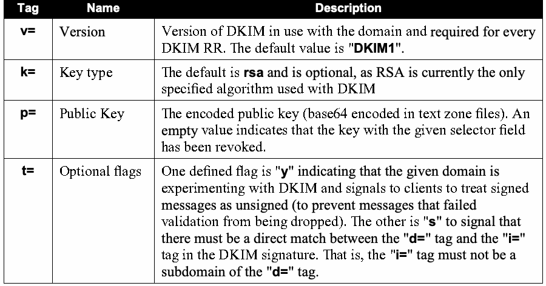
| タグ | 名称 | 説明 |
| v= | バージョン | Version of DKIM in use with the domain and required for every DKIM RR. �e default value is "DKIM1". |
| k= | 鍵の種類 | 既定値はrsa。DKIMで使用するアルゴリズムとして現在規定されているのはRSAのみのため、このタグは任意。 |
| p= | 公開鍵 | 符号化された公開鍵（テキスト形式のゾーンファイルではbase64で符号化）。値が空の場合、指定セレクタの鍵が失効したことを示す。 |
| t= | 任意フラグ | One defined flag is "y" indicating that the given domain is experimenting with DKIM and signals to clients to treat signed messages as unsigned (to prevent messages that failed validation from being dropped). �e other is "s" to signal that there must be a direct match between the "d=" tag and the "i=" tag in the DKIM signature. �at is, the "i=" tag must not be a subdomain of the "d=" tag. |
4.5.6 Example of a DKIM RR
4.5.6 DKIM RRの例
Below is an example for the DKIM key that would be used to validate the DKIM signature above. Here, not all the flags are given:
以下は上記DKIM署名を検証するために使用するDKIM鍵の例である。ここではすべてのフラグを記載していない：
未レビュー訳adkimkey._domainkey.example.gov. IN TXT "v=DKIM1; k=rsa;
adkimkey._domainkey.example.gov. IN TXT "v=DKIM1; k=rsa;
未レビュー訳p=<base64 string>"
p=<base64 string>"
未レビュー訳Note that unlike SPF, DKIM requires the use of semicolons between statements in a DNS RR.
SPFと異なり、DKIMではDNS RR内の各記述の間にセミコロンが必要である。
4.5.7 DKIM and DNS
4.5.7 DKIMとDNS
Since DKIM public keys are encoded in DNS TXT resource records, no specialized software is needed to host DKIM public keys. Organizations that deploy DKIM should also deploy DNS security (DNSSEC) [RFC4033] [RFC4034] [RFC4035]. DNSSEC provides source authentication and integrity protection for DNS data. �is prevents attackers from spoofing or intercepting and deleting responses for receivers’ DKIM key TXT queries.
DKIM公開鍵はDNS TXTリソースレコードに符号化されるため、DKIM公開鍵をホストするための専用ソフトウェアは不要である。DKIMを導入する組織はDNSセキュリティ（DNSSEC）[RFC4033] [RFC4034] [RFC4035]も導入すべきである。DNSSECはDNSデータの送信元認証および完全性保護を提供する。これにより、攻撃者が受信者のDKIM鍵TXTクエリへのDNS応答を偽装、傍受、削除することを防ぐ。
未レビュー訳Security Recommendation 4-6: Organizations should deploy DNSSEC to provide authentication and integrity protection to the DKIM DNS resource records.
セキュリティ推奨事項4-6：組織はDKIM DNSリソースレコードに認証および完全性保護を提供するためDNSSECを導入すべきである。
4.5.8 DKIM Operational Considerations
4.5.8 DKIMの運用上の考慮事項
�ere are several operations an email administrator will need to perform to maintain DKIM for an email service. New email services are acquired; DKIM keys are introduced, rolled (i.e., changed), and eventually retired, etc. Since DKIM requires the use of DNS, administrators need to take the nature of DNS into account when performing maintenance operations. [RFC5863] describes the complete set of maintenance operations for DKIM in detail, but the three most common operations are summarized below.
電子メール管理者は電子メールサービスでDKIMを維持するため、いくつかの運用を行う必要がある。新しい電子メールサービスの導入、DKIM鍵の導入・ローテーション（すなわち変更）・最終的な廃止などである。DKIMはDNSを使用するため、保守作業を行う際は管理者がDNSの性質を考慮しなければならない。[RFC5863]はDKIMの保守作業一式を詳述しているが、最も一般的な3つの作業を以下にまとめる。
未レビュー訳4.5.8.1 Introduction of a New DKIM Key
4.5.8.1 新しいDKIM鍵の導入
When initially deploying DKIM for enterprise email, or a new email service to support an organization, an administrator should insure that the corresponding public key is available for validation. �us, the DNS entry with the DKIM public portion should be published in the sender's domain before the sending MTA begins using the private portion to generate signatures. �e order should be:
企業電子メールへのDKIM初回導入時、または組織を支援する新しい電子メールサービスの導入時に、管理者は検証に必要な公開鍵が利用可能であることを確認すべきである。したがって、送信MTAが秘密部分を使って署名を生成し始める前に、DKIM公開部分を含むDNSエントリを送信者ドメインに公開する。順序は次のとおり：
未レビュー訳1.Generate a DKIM key pair and determine the selector that will be used by the MTA(s).
1.DKIM鍵ペアを生成し、MTAが使用するセレクターを決定する。
2.Generate and publish the DKIM TXT RR in the sending domain's DNS.
2.送信ドメインのDNSにDKIM TXT RRを生成し公開する。
3.Ensure that the DKIM TXT RR is returned in queries.
3.クエリに対してDKIM TXT RRが返されることを確認する。
4.Configure the sending MTA(s) to use the private portion.
4.送信MTAが秘密部分を使用するよう構成する。
5.Begin using the DKIM key pair with email.
5.電子メールにDKIM鍵ペアを使用し始める。
4.5.8.2 Changing an Active DKIM Key Pair
4.5.8.2 有効なDKIM鍵ペアの変更
DKIM keys may change for various purposes: suspected weakness or compromise, scheduled policy, change in operator, or because the DKIM key has reached the end of its lifetime.
DKIM鍵は、弱点または侵害の疑い、予定された方針、運用者の変更、またはDKIM鍵の有効期間満了など、さまざまな理由で変更される場合がある。
Changing, or rolling, a DKIM key pair consists of introducing a new DKIM key before its use and keeping the old, outgoing key in the DNS long enough for clients to obtain it to validate signatures. �is requires multiple DNS changes with a wait time between them. �e relevant steps are:
DKIM鍵ペアの変更（ローテーション）は、新しいDKIM鍵を使用前に導入し、旧鍵は受信側が署名検証に必要な鍵を取得できるよう、十分な期間DNSに残すことで行う。この作業には待機時間を伴う複数回のDNS変更が必要である。関連手順は次のとおり：
未レビュー訳1.Generate a new DKIM key pair.
1.新しいDKIM鍵ペアを生成する。
2.Generate a new DKIM TXT RR, with a different selector value than the outgoing DKIM key and publish it in the enterprise’s DNS. At this point, the DNS will be serving both the old and the new DKIM entries.
2.旧DKIM鍵とは異なるセレクター値で新しいDKIM TXT RRを生成し、企業のDNSに公開する。この時点では、DNSは旧DKIMエントリと新DKIMエントリの両方を提供する。
未レビュー訳3.Reconfigure the sending MTA(s) to use the new DKIM key.
3.送信MTAを再構成し、新しいDKIM鍵を使用する。
4.Validate the correctness of the public key.
4.公開鍵が正しいことを検証する。
5.Begin using the new DKIM key for signature generation.
5.新しいDKIM鍵を署名生成に使用し始める。
6.Wait a period of time.
6.一定期間待機する。
7.Delete the outgoing DKIM TXT RR.
7.旧DKIM TXT RRを削除する。
8.Delete or archive the retired DKIM key according to enterprise policy.
8.廃止したDKIM鍵を企業方針に従って削除またはアーカイブする。
�e necessary period of time to wait before deleting the outgoing DKIM key’s TXT RR cannot be a universal constant value due to the nature of DNS and SMTP (i.e., mail queuing). An enterprise cannot be certain when all of its email has passed DKIM checks using its old key. An old DKIM key could still be queried for by a receiving MTA for hours (or potentially days) after the email had been sent. �erefore, the outgoing DKIM key should be kept in the DNS for a period of time (potentially a week) before final deletion.
DNSおよびSMTP（すなわちメールキュー）の性質により、旧DKIM鍵のTXT RRを削除する前に必要な待機期間を一律の定数値で定めることはできない。企業は、自社のすべての電子メールが旧鍵を使ったDKIM検査を通過した時点を確実には把握できない。メール送信後、受信MTAが旧DKIM鍵を数時間（場合によっては数日）後まで照会する可能性がある。したがって、旧DKIM鍵は最終削除の前に一定期間（場合によっては1週間）DNSに保持すべきである。
未レビュー訳If it is necessary to revoke or delete a DKIM key, it can be immediately retired by either be removing the key’s corresponding DKIM TXT RR or by altering the RR to have a blank p=. Either achieves the same effect (the client can no longer validate the signature) but keeping the DKIM RR with a blank p= value explicitly signals that the key has been removed.
DKIM鍵を失効または削除する必要がある場合、対応するDKIM TXT RRを削除するか、RRを変更してp=を空欄にすることで、鍵をただちに廃止できる。どちらも同じ効果（クライアントが署名を検証できなくなる）があるが、p=値を空欄にしたDKIM RRを保持すれば、鍵が削除されたことを明示的に示せる。
未レビュー訳Revoking a key is similar to deleting it but the enterprise may pre-emptively delete (or change) the DKIM RR before the sender has stopped using it. �is scenario is possible when an enterprise wishes to break DKIM authentication and does not control the sender (i.e., a third party or rogue sender). In these scenarios, the enterprise can delete or change the DKIM RR in order to break validation of DKIM signatures. Additional deployment of DMARC (see Section 4.5) can be used to indicate that this DKIM validation failure should result in the email being rejected or deleted.
鍵の失効は削除に似ているが、企業は送信者が使用を停止する前にDKIM RRを予防的に削除（または変更）する場合がある。これは企業が送信者（第三者または不正な送信者）を管理していないとき、DKIM認証を破棄する必要があれば起こり得る。この場合、企業はDKIM RRを削除または変更してDKIM署名の検証を失敗させることができる。DMARC（第4.5節参照）も導入すれば、このDKIM検証失敗時に電子メールを拒否または削除するよう指示できる。
未レビュー訳4.5.9 DKIM on the Receiver Side
4.5.9 受信側のDKIM
On the receiver side, email administrators should first make sure their MTA implementation has the functionality to verify DKIM signatures. Most major implementations have the functionality built-in or can be included using open source patches or a mail filter (i.e., milter). In some cases, the administrator may need to install additional cryptographic libraries to perform the actual validation.
受信側では、電子メール管理者はまずMTA実装にDKIM署名を検証する機能があることを確認すべきである。主要な実装の大半はこの機能を内蔵しているか、オープンソースのパッチまたはメールフィルター（milter）を使って組み込むことができる。場合によっては、実際の検証を行うために、管理者が追加の暗号ライブラリをインストールする必要が生じることがある。
4.5.9.1 DKIM Queries in the DNS
4.5.9.1 DNSにおけるDKIMクエリ
Just as an organization that deploys DKIM should deploy DNSSEC, receivers that perform DKIM processing should also perform DNSSEC validation (if possible) on responses to DKIM TXT queries. A mail server should be able to send queries to a validating DNS recursive server if it cannot perform its own DNSSEC validation.
DKIMを導入する組織がDNSSECを導入すべきであるのと同様に、DKIM処理を行う受信者も、DKIM TXTクエリ応答に対して可能な限りDNSSEC検証を実行すべきである。メールサーバー自体がDNSSEC検証を実行できない場合、検証機能を持つDNS再帰サーバーにクエリを送信できるようにすべきである。
Security Recommendation 4-7: Organizations should enable DNSSEC validation on DNS servers used by MTAs that verify DKIM signatures.
セキュリティ推奨事項4-7：組織はDKIM署名を検証するMTAが使用するDNSサーバーでDNSSEC検証を有効にすべきである。
4.5.10 Issues with Mailing Lists
4.5.10 メーリングリストに関する問題
DKIM assumes that the email came from the MTA domain that generated the signature. �is presents some problems when dealing with certain mailing lists. Often, MTAs that process mailing lists change the bodies of mailing list messages—for example, adding a footer with mailing list information or similar. Such actions are likely to invalidate DKIM signatures, unless for example, a message length is specified in the signature headers, and the additions come beyond that length.
DKIMは、電子メールが署名を生成したMTAドメインから送信されたと想定する。このため、一部のメーリングリストでは問題が生じる。メーリングリストを処理するMTAは、メーリングリスト情報を含むフッターの追加など、メーリングリストのメッセージ本文を変更することが多い。署名ヘッダーにメッセージ長が指定され、その長さより後ろに追加が行われる場合などを除き、このような処理はDKIM署名を無効にする可能性が高い。
未レビュー訳Fundamentally, mailing lists act as active mail parties. �ey receive messages from senders and resend them to recipients. Sometimes they send messages as they are received, sometimes the messages are bundled and sent as a single combined message, and sometimes recipients are able to choose their delivery means. As such, mailing lists should verify the DKIM signatures of incoming messages, and then re-sign outgoing messages with their own DKIM signature, made with the MTA’s public/private key pair. See [RFC6377], “DomainKeys Identified Mail (DKIM) and Mailing Lists,” also identified as IETF BCP 167, for additional discussion of DKIM and mailing lists.
基本的にメーリングリストは能動的なメール主体として機能する。送信者からメッセージを受け取り、受信者へ再送する。受信と同時に送信する場合、複数のメッセージをまとめて単一のメッセージとして送信する場合、また受信者が配信方法を選べる場合もある。そのため、メーリングリストは受信メッセージのDKIM署名を検証し、MTAの公開鍵／秘密鍵ペアで生成した自身のDKIM署名を付けて送信メッセージに再署名すべきである。DKIMとメーリングリストの詳細については、IETF BCP 167とも呼ばれる[RFC6377]「DomainKeys Identified Mail（DKIM）とメーリングリスト」を参照。
未レビュー訳Additional assurance can be obtained by providing mailing lists with a role-based (i.e., not a named individual) S/MIME certificate and digitally signing outgoing. Such signatures will allow verification of the mailing list signature using S/MIME aware clients such as Microsoft Outlook, Mozilla �underbird, and Apple Mail. See Sections 2.4.2 and 4.7 for a discussion of S/MIME. Signatures are especially important for broadcast mailing lists that are sent with message-From: addresses that are not monitored, such as “do-not-reply” email addresses.
役割ベース（すなわち特定個人名ではない）のS/MIME証明書をメーリングリストに提供し、送信メールにデジタル署名を付けることで、追加の保証が得られる。このような署名を使うと、Microsoft Outlook、Mozilla Thunderbird、Apple MailなどのS/MIME対応クライアントでメーリングリストの署名を検証できる。S/MIMEについては第2.4.2節および第4.7節を参照。署名は、例えば「do-not-reply」電子メールアドレスのように監視されていないmessage-From:アドレスから送られる一斉配信メーリングリストで特に重要である。
未レビュー訳Security Recommendation 4-8: Mailing list software should verify DKIM signatures on incoming mail and re-sign outgoing mail with new DKIM signatures.
セキュリティ推奨事項4-8：メーリングリストソフトウェアは、受信メールのDKIM署名を検証し、送信メールに新しいDKIM署名を付けて再署名すべきである。
Security Recommendation 4-9: Mail sent to broadcast mailing lists from do-not-reply or unmonitored mailboxes should be digitally signed with S/MIME signatures so that recipients can verify the authenticity of the messages.
セキュリティ推奨事項4-9：do-not-replyまたは監視されていないメールボックスから一斉配信メーリングリストに送信するメールには、受信者がメッセージの真正性を検証できるようS/MIME署名によるデジタル署名を付けるべきである。
As with SPF (subsection 4.2 above), DKIM does not prevent a spammer/advertiser from using a legitimately obtained domain to send unsolicited, DKIM-signed email. DKIM is used to provide assurance that the purported sender is the originator of the message, and that the message has not been modified in transit by an unauthorized intermediary.
SPF（上記第4.2節）と同様、DKIMはスパマー／広告主が正当に取得したドメインを使って、未承諾のDKIM署名付きメールを送ることを防止しない。DKIMは、主張された送信者がメッセージの発信者であり、権限のない中継者によって転送中にメッセージが変更されていないことを保証するために使用する。
4.5.11 Considerations for Enterprises When Using Cloud or Contracted Email Services
4.5.11 クラウドまたは委託電子メールサービス利用時の企業に関する考慮事項
An enterprise that uses third party senders for email services needs to have a policy in place for DKIM key management. �e nature of DKIM requires that the sending MTA have the private key in order to generate signatures while the domain owner may only have the public portion. �is makes key management controls difficult to audit and or impossible to enforce. Compartmentalizing DKIM keys is one approach to minimize risk when sharing keying material between organizations.
電子メールサービスで第三者送信者を利用する企業は、DKIM鍵管理方針を整備する必要がある。DKIMでは署名生成のため送信MTAが秘密鍵を保持する必要がある一方、ドメイン所有者が保持できるのは公開部分のみである。このため鍵管理の制御は監査が難しく、または実施できない。組織間で鍵素材を共有する際のリスクを最小化する方法の一つは、DKIM鍵を区分して管理することである。
未レビュー訳When using DKIM with cloud or contracted services, an enterprise should generate a unique key pair for each service. No private key should be shared between contracted services or cloud instances. �is includes the enterprise itself, if email is sent by MTAs operated within the enterprise.
クラウドサービスまたは委託サービスでDKIMを使用する場合、企業はサービスごとに一意の鍵ペアを生成すべきである。委託サービス間またはクラウドインスタンス間で秘密鍵を共有してはならない。企業内で運用するMTAがメールを送信する場合は、その企業自体も共有対象に含まれる。
未レビュー訳Security Recommendation 4-10: A unique DKIM key pair should be used for each third party that sends email on the organization's behalf.
セキュリティ推奨事項4-10：組織に代わって電子メールを送信する第三者ごとに、一意のDKIM鍵ペアを使用すべきである。
Likewise, at the end of contract lifecycle, all DKIM keys published by the enterprise must be deleted or modified to have a blank p= field to indicate that the DKIM key has been revoked. �is prevents the third party from continuing to send DKIM validated email.
同様に、契約終了時には、企業が公開したすべてのDKIM鍵を削除するか、p=フィールドを空欄に変更してDKIM鍵が失効したことを示さなければならない。これにより第三者がDKIM検証に合格するメールを送信し続けることを防ぐ。
未レビュー訳4.6 Domain-based Message Authentication, Reporting and Conformance (DMARC)
4.6 Domain-based Message Authentication, Reporting and Conformance（DMARC）
SPF and DKIM were created so that email sending domain owners could give guidance to receivers about whether mail purporting to originate from them was valid, and thus whether it should be delivered, flagged, or discarded. Both SPF and DKIM offer implementation flexibility and different settings can have different effects at the receiver. However, neither SPF nor DKIM include a mechanism to tell receivers if SPF or DKIM are in active use, nor do they have feedback mechanism to inform sending domain owners of the effectiveness of their authentication techniques. For example, if a message arrives at a receiver without a DKIM signature, DKIM provides no mechanism to allow the receiver to learn if the message is authentic but was sent from a sender that did not implement DKIM, or if the message is a spoof.
SPFとDKIMは、電子メール送信ドメイン所有者が、自らのドメインから送信されたと主張するメールが正当かどうか、したがって配信、フラグ付けまたは破棄のいずれとすべきかを受信者に示すために作られた。SPFとDKIMはいずれも実装に柔軟性があり、設定の違いによって受信側で異なる影響が生じる。しかしSPFにもDKIMにも、SPFまたはDKIMが実際に利用されているかを受信者に伝える仕組みはなく、認証技法の有効性を送信ドメイン所有者に知らせるフィードバック機構もない。例えばDKIM署名なしでメッセージが受信者に届いた場合、DKIMには、そのメッセージが真正だが送信者がDKIMを導入していないのか、メッセージがなりすましなのかを受信者が判断する手段がない。
未レビュー訳DMARC [RFC7489] allows email sending domain owners to specify policy on how receivers can verify the authenticity of their email, how the receiver can handle email that fails to verify, and the frequency and types of report that receivers should send back. DMARC benefits receivers by removing the guesswork about which security protocols are in use, allowing more certainty in quarantining and rejecting inauthentic mail.
DMARC [RFC7489]を使うと、電子メール送信ドメイン所有者は、受信者がメールの真正性を検証する方法、検証に失敗したメールの取扱い、および受信者が返送すべきレポートの頻度と種類を指定できる。DMARCは、どのセキュリティプロトコルが使われているかを推測する必要をなくし、真正でないメールの隔離および拒否の確度を高めることで受信者に利点をもたらす。
To further improve authentication, DMARC adds a link between the domain of the sender with the authentication results for SPF and DKIM. In particular, receivers compare the domain in the message-From: address in the message to the SPF and DKIM results (if deployed) and the DMARC policy in the DNS. �e results of this data gathering are used to determine how the mail should be handled. �us, when an email fails SPF and DKIM verification, or the message-From: domain-part doesn’t match the authentication results, the email can be treated as inauthentic according to the sending domain owners DMARC policy.
認証をさらに強化するため、DMARCは送信者ドメインとSPFおよびDKIMの認証結果を結び付ける。特に受信者は、メッセージのmessage-From:アドレスにあるドメインを、（導入済みであれば）SPFおよびDKIMの結果とDNS内のDMARCポリシーに照らして比較する。これらの情報収集結果に基づき、メールの取扱いを決定する。したがって、電子メールがSPFおよびDKIM検証に失敗する場合、またはmessage-From:のドメイン部分が認証結果と一致しない場合、その電子メールは送信ドメイン所有者のDMARCポリシーに従って真正でないものとして扱われる。
未レビュー訳DMARC also provides a mechanism that allows receivers to send reports to the domain owner about mail claiming to originate from their domain. �ese reports can be used to illuminate the extent to which unauthorized users are using the domain, and the proportion of mail received that is from the purported sender.
DMARCは、ドメイン所有者が自らのドメインから送信されたと主張するメールについて、受信者がドメイン所有者にレポートを送信する仕組みも提供する。これらのレポートから、権限のないユーザーが当該ドメインをどの程度使用しているか、受信メールのうち主張された送信者からのものがどの程度あるかを明らかにできる。
未レビュー訳4.6.1 DMARC on the Sender Side
4.6.1 送信側のDMARC
DMARC policies work in conjunction with SPF and/or DKIM, so a mail domain owner intending to deploy DMARC must deploy SPF or DKIM or (preferably) both. To deploy DMARC, the sending domain owner will publish SPF and/or DKIM RRs in the DNS and calculate a signature for the DKIM header of every outgoing message. �e domain owner also publishes a DMARC policy in the DNS advising receivers on how to treat messages purporting to originate from the sender’s domain. �e domain owner does this by publishing its DMARC policy as a TXT record in the DNS12; identified by creating a _dmarc DNS record and publishing it in the sending domain name. For example, the DMARC policy for “example.gov” would reside at the fully qualified domain name _dmarc.example.gov.
DMARCポリシーはSPFおよび／またはDKIMと連携するため、DMARC導入を予定するメールドメイン所有者はSPFまたはDKIM、できれば両方を導入しなければならない。DMARCを導入するには、送信ドメイン所有者がDNSにSPFおよび／またはDKIM RRを公開し、送信メッセージすべてのDKIMヘッダー用署名を計算する。ドメイン所有者は、自ドメインから送信されたと主張するメッセージを受信者がどのように扱うべきかを示すDMARCポリシーもDNSに公開する。これはDNS内にDMARCポリシーをTXTレコードとして公開して行う12。具体的には_dmarc DNSレコードを作成し、送信ドメイン名の下に公開する。例えば「example.gov」のDMARCポリシーは、完全修飾ドメイン名_dmarc.example.govに置かれる。
未レビュー訳When implementing email authentication for a domain for the first time, a sending domain owner is advised to first publish a DMARC RR with a “none” policy before deploying SPF or DKIM. �is allows the sending domain owner to immediately receive reports indicating the volume of email being sent that purports to be from their domain. �ese reports can be used in crafting an email authentication policy that reduces the risk of errors.
ドメインで初めて電子メール認証を実装するときは、送信ドメイン所有者はSPFまたはDKIMを導入する前に「none」ポリシーを指定したDMARC RRを公開することが推奨される。これにより、送信ドメイン所有者は自ドメインから送信されたとされるメールの量を示すレポートをすぐに受信できる。これらのレポートを用いて、誤りのリスクを低減する電子メール認証ポリシーを策定できる。
未レビュー訳Since the sending domain owner will be soliciting feedback reports by email from receivers, the administrator should establish email addresses to receive aggregate and failure reports. As the DMARC RR is easily discovered, the reporting inboxes could be subject to voluminous unsolicited bulk email (i.e., spam). �erefore, some kind of abuse counter-measures for these email in-boxes should be deployed.
送信ドメイン所有者が受信者から電子メールでフィードバックレポートを受け取るため、管理者は集約レポートおよび失敗レポートを受信する電子メールアドレスを用意すべきである。DMARC RRは容易に発見できるため、レポート用受信箱に大量の迷惑メール（スパム）が届く可能性がある。したがって、これらの受信箱には何らかの不正利用対策を導入すべきである。
未レビュー訳Even if a sending domain owner does not deploy SPF or DKIM records it may be useful to deploy a DMARC record with policy p=none and a rua tag, to encourage receivers to send aggregate reports about the use to which the sender’s domain is being put. �is can help with preliminary evaluation to determine whether a mail sender should mount SPF and DKIM defenses.
送信ドメイン所有者がSPFまたはDKIMレコードを導入しない場合でも、p=noneポリシーおよびruaタグを含むDMARCレコードを導入すると有用な場合がある。これにより、受信者が送信者ドメインの利用状況に関する集約レポートを送信するよう促せる。これは、メール送信者がSPFおよびDKIMによる防御を導入すべきか判断するための予備評価に役立つ。
未レビュー訳4.6.2 The DMARC DNS Record
4.6.2 DMARC DNSレコード
�e DMARC policy is encoded in a TXT record placed in the DNS by the sending domain owner. Similar to SPF and DKIM, the DMARC policy is encoded in a series of tag=value pairs separated by semicolons. Common keys are:
DMARCポリシーは送信ドメイン所有者がDNSに配置するTXTレコードに符号化する。SPFおよびDKIMと同様に、DMARCポリシーはセミコロンで区切られたtag=value組で符号化される。一般的なキーは次のとおり：
未レビュー訳Table 4-6: DMARC RR Tag and Value Descriptions
表4-6：DMARC RRのタグと値の説明
| Tag | Name | Description |
| v= | Version | Version field that must be present as the first element. By default, the value is always DMARC1. |
| p= | Policy | Mandatory policy field. May take values none or quarantine or reject. �is allows for a gradually tightening policy where the sender domain recommends no specific action on mail that fails DMARC checks (p=none), through treating failed mail as suspicious (p=quarantine), to rejecting all failed mail (p=reject), preferably at the SMTP transaction stage. |
| aspf= | SPF Policy | Values are "r" (default) for relaxed and "s" for strict SPF domain enforcement. Strict alignment requires an exact match between the message-From: address domain and the (passing) SPF check must exactly match the RFC envelope-From: address (i.e., the HELO address). Relaxed requires that only the message-From: and envelope-From: address domains be in alignment. For example, the envelope-From: address domain-part "smtp.example.org" and the message-From: address "announce@example.org" are in alignment, but not a strict match. |
原本PDFの抜粋画像
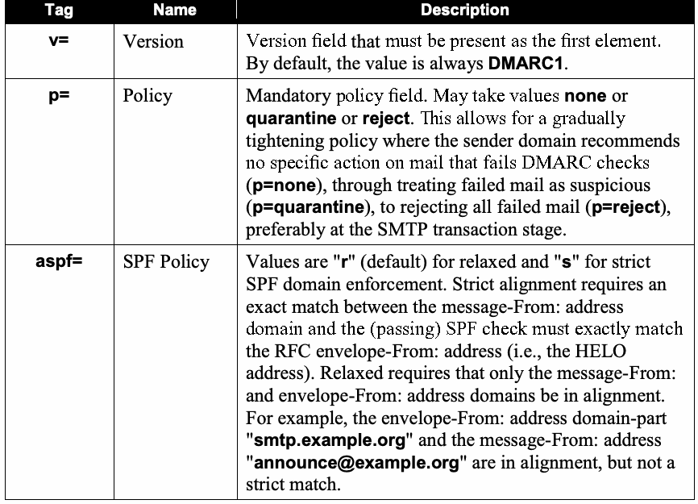
| タグ | 名称 | 説明 |
| v= | バージョン | Version field that must be present as the first element. By default, the value is always DMARC1. |
| p= | ポリシー | 必須のポリシーフィールド。none、quarantineまたはrejectを指定できる。これにより、送信ドメインはDMARC検査に失敗したメールに特別な措置を推奨しない（p=none）段階から、失敗メールを疑わしいものとして扱う（p=quarantine）段階を経て、すべての失敗メールを拒否する（p=reject）段階へと、ポリシーを段階的に厳格化できる。拒否はSMTPトランザクション段階で行うことが望ましい。 |
| aspf= | SPFポリシー | Values are "r" (default) for relaxed and "s" for strict SPF domain enforcement. Strict alignment requires an exact match between the message-From: address domain and the (passing) SPF check must exactly match the RFC envelope-From: address (i.e., the HELO address). Relaxed requires that only the message-From: and envelope-From: address domains be in alignment. For example, the envelope-From: address domain-part "smtp.example.org" and the message-From: address "announce@example.org" are in alignment, but not a strict match. |
| Tag | Name | Description |
| adkim= | DKIM Policy | Optional. Values are “r” (default) for relaxed and “s” for strict DKIM domain enforcement. Strict alignment requires an exact match between the message-From: domain in the message header and the DKIM domain presented in the “d=” DKIM tag. Relaxed requires only that the domain part is in alignment (as in aspf above). |
| fo= | Failure Reporting options | Optional. Ignore if a "ruf" argument below is not also present. Value 0 indicates the receiver should generate a DMARC failure report if all underlying mechanisms fail to produce an aligned “pass” result. Value 1 means generate a DMARC failure report if any underlying mechanism produces something other than an aligned “pass” result. Other possible values are “d” and “s”: “d” means generate a DKIM failure report if a signature failed evaluation. “s” means generate an SPF failure report if the message failed SPF evaluation. �ese values are not exclusive and may be combined together in a colon-separated list. |
| ruf= | Optional. Lists a series of Universal Resource Indicators (URI's) (currently just "mailto:<emailaddress>") that list where to send failure feedback reports. �is is for reports on message specific failures. Sending domain owners should use this argument sparingly, since it is used to request a report on a per-failure basis, which could result in a large volume of failure reports. | |
| rua= | Optional list of URI's (like in ruf= above, using the "mailto:" URI) listing where to send aggregate feedback back to the sending domain owner. �ese reports are sent based on the interval requested using the "ri=" option below, with a default of 86400 seconds if not listed. | |
| ri= | Reporting Interval | Optional with the default value of 86400 seconds (one day). �e value listed is the reporting interval desired by the sending domain owner. |
原本PDFの抜粋画像
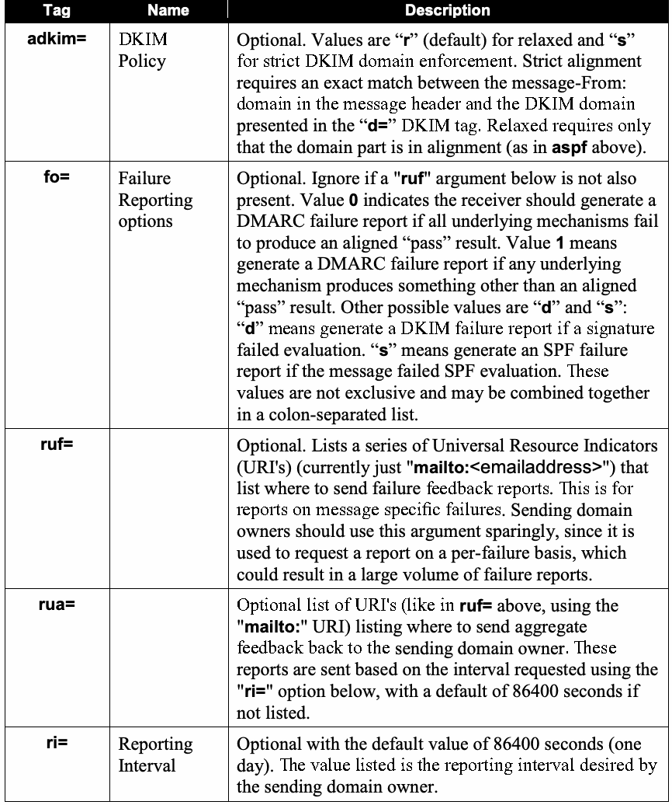
| タグ | 名称 | 説明 |
| adkim= | DKIMポリシー | 任意。relaxedを示す「r」（既定値）と、DKIMドメインの厳格な適合を示す「s」を指定できる。厳格な適合では、メッセージヘッダー内のmessage-From:ドメインとDKIMタグ「d=」で示されるDKIMドメインが完全一致する必要がある。relaxedでは、ドメイン部分が整合していればよい（上記aspfと同様）。 |
| fo= | 失敗レポートのオプション | Optional. Ignore if a "ruf" argument below is not also present. Value 0 indicates the receiver should generate a DMARC failure report if all underlying mechanisms fail to produce an aligned “pass” result. Value 1 means generate a DMARC failure report if any underlying mechanism produces something other than an aligned “pass” result. Other possible values are “d” and “s”: “d” means generate a DKIM failure report if a signature failed evaluation. “s” means generate an SPF failure report if the message failed SPF evaluation. �ese values are not exclusive and may be combined together in a colon-separated list. |
| ruf= | Optional. Lists a series of Universal Resource Indicators (URI's) (currently just "mailto:<emailaddress>") that list where to send failure feedback reports. �is is for reports on message specific failures. Sending domain owners should use this argument sparingly, since it is used to request a report on a per-failure basis, which could result in a large volume of failure reports. | |
| rua= | Optional list of URI's (like in ruf= above, using the "mailto:" URI) listing where to send aggregate feedback back to the sending domain owner. �ese reports are sent based on the interval requested using the "ri=" option below, with a default of 86400 seconds if not listed. | |
| ri= | レポート間隔 | 任意。既定値は86400秒（1日）。指定値は送信ドメイン所有者が希望するレポート間隔。 |
| Tag | Name | Description |
| pct= | Percent | Optional with the default value of 100(%). Expresses the percentage of a sending domain owner’s mail that should be subject to the given DMARC policy in a range from 0 to 100. �is allows domain owners to ramp up their policy enforcement gradually and prevent having to commit to a rigorous policy before getting feedback on their existing policy. Note: this value must be an integer. |
| sp= | Subdomain Policy | Optional with a default value of none. Other values include the same range of values as the ‘p=’ argument. �is is the policy to be applied to mail from all identified subdomains of the given DMARC RR. If a receiver fails to find a valid DMARC RR for a given sending domain, it will attempt to find a DMARC RR for a parent zone and apply a DMARC policy if the sp= tag is present. |
原本PDFの抜粋画像
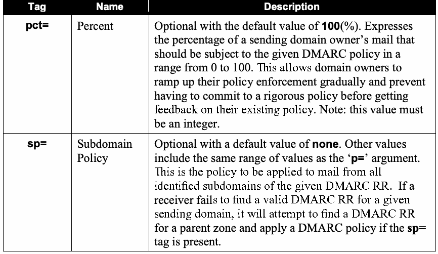
| タグ | 名称 | 説明 |
| pct= | 割合 | 任意。既定値は100（%）。指定したDMARCポリシーの適用対象とする送信ドメイン所有者のメールの割合を0～100で表す。これにより、ドメイン所有者は既存ポリシーについてのフィードバックを得る前に厳格なポリシーへ確約する必要なく、ポリシーの適用を段階的に強化できる。注：この値は整数でなければならない。 |
| sp= | サブドメインポリシー | 任意。既定値はnone。その他の値は「p=」引数と同じ範囲である。指定したDMARC RRの識別済みサブドメインからのメールに適用するポリシーを示す。受信者が指定された送信ドメインの有効なDMARC RRを見つけられない場合、親ゾーンのDMARC RRを検索し、sp=タグがあればDMARCポリシーを適用する。 |
Like SPF and DKIM, the DMARC record is actually a DNS TXT RR. Like all DNS information, it should be signed using DNSSEC [RFC4033], [RFC4034], and [RFC4035] to prevent an attacker from spoofing the DNS response and altering the DMARC check by a client.
SPFやDKIMと同様に、DMARCレコードも実際にはDNS TXT RRである。DNS情報と同じく、攻撃者によるDNS応答の偽装やクライアントのDMARC検査の改変を防ぐため、DNSSEC [RFC4033]、[RFC4034]および[RFC4035]で署名すべきである。
4.6.3 Example of DMARC RR’s
4.6.3 DMARC RRの例
Below are several examples of DMARC policy records using the above tags. �e most basic example is a DMARC policy that effectively does not assert anything and does not request the receiver send any feedback reports, so it is, in effect, useless.
以下に、前述のタグを用いたDMARCポリシーレコードの例をいくつか示す。最も基本的な例は、実質的に何も主張せず、受信者にもフィードバックレポートの送信を要求しないDMARCポリシーであり、事実上役に立たない。
未レビュー訳_dmarc.example.gov 3600 IN TXT “v=DMARC1; p=none;“
_dmarc.example.gov 3600 IN TXT “v=DMARC1; p=none;“
未レビュー訳An agency that is preparing to deploy SPF and/or DKIM, or has deployed these technologies, but may not be confident in their current policies may request aggregate reports from receivers, but otherwise advises no specific action. �e agency can do so by publishing a p=none policy as in the example below.
SPFやDKIMの導入を準備中、または導入済みだが現在のポリシーに確信がない機関は、受信者に集計レポートを要求しつつ、特定の措置は指示しないことができる。機関は以下の例のようにp=noneポリシーを公開できる。
未レビュー訳_dmarc.example.gov 3600 IN TXT “v=DMARC1; p=none; rua=reports@example.gov;“
_dmarc.example.gov 3600 IN TXT “v=DMARC1; p=none; rua=reports@example.gov;“
未レビュー訳An agency that has deployed SPF and DKIM and advises receivers to reject any messages that fail these checks would publish a p=reject policy as in the example below. Here, the agency also wishes to receive aggregate reports on a daily basis (the default).
SPFおよびDKIMを導入し、これらの検査に失敗したメッセージを受信者に拒否するよう指示する機関は、以下の例のようにp=rejectポリシーを公開する。ここでは、既定の頻度である毎日、集計レポートを受信することも希望している。
未レビュー訳_dmarc.example.gov 3600 IN TXT “v=DMARC1; p=reject; rua=reports@example.gov;“
_dmarc.example.gov 3600 IN TXT “v=DMARC1; p=reject; rua=reports@example.gov;“
未レビュー訳�e agency in the process of deploying DKIM (but has confidence in their SPF policy) may wish to receive feedback solely on DKIM failures, but does not wish to be inundated with feedback, so requests that the policy be applied to a subset of messages received. In this case, the DMARC policy would include the fo= option to indicate only DKIM failures are to be reported and a pct= value of 10 to indicate that only 1 in 10 email messages should be subjected to this policy (and subsequent reporting on a failure). Note that this is not a wise strategy in that it reduces the enforcement policy and the completeness of reporting. �e use of the pct value in values other than 0 or 100 (i.e., none or full) limits DMARC effectiveness and usefulness of reporting. It is also burdensome for receivers to choose that intermediate percentage of mail for testing.
DKIM導入中 (ただしSPFポリシーには確信がある) の機関は、DKIM失敗のみのフィードバックを受けたいが、レポートが大量に届くことは望まず、受信メッセージの一部にのみポリシーを適用するよう求める場合がある。この場合、DMARCポリシーにはDKIM失敗のみを報告するfo=オプションと、10通に1通だけにポリシーを適用し (失敗時の報告も行う) ことを示すpct=10を含める。ただし、これは実施ポリシーと報告の完全性を低下させるため、賢明な方法ではない。pct値に0または100 (すなわち、なしまたはすべて) 以外を使うと、DMARCの有効性とレポートの有用性が制限される。また受信者にとっても、メールの中間割合を選んで検査する負担となる。
未レビュー訳_dmarc.example.gov 3600 IN TXT “v=DMARC1; p=none; pct=10; fo=d; ruf=reports@example.gov;“
_dmarc.example.gov 3600 IN TXT “v=DMARC1; p=none; pct=10; fo=d; ruf=reports@example.gov;“
未レビュー訳An agency with several subdomains may wish to have a single unified policy, in which case a DMARC RR with the sp= tag is used. In this example, the domain has a policy to reject any mail from a subdomain of example.gov that fails checks, while only quarantining email that failed checks from the parent domain.
複数のサブドメインを持つ機関は単一の統一ポリシーを望む場合があり、その場合はsp=タグを含むDMARC RRを使う。この例ではexample.govのサブドメインからのメールで検査に失敗したものを拒否し、親ドメインからのメールで検査に失敗したものは隔離するポリシーを設定している。
未レビュー訳_dmarc.example.gov 3600 IN TXT “v=DMARC1; p=quarantine; sp=reject; rua=reports@example.gov;”
_dmarc.example.gov 3600 IN TXT “v=DMARC1; p=quarantine; sp=reject; rua=reports@example.gov;”
未レビュー訳Security Recommendation 4-11: Sending domain owners who deploy SPF and/or DKIM are recommended to publish a DMARC record signaling to mail receivers the disposition expected for messages purporting to originate from the sender’s domain.
セキュリティ推奨事項4-11: SPFおよび/またはDKIMを導入する送信ドメイン所有者は、送信ドメインからのものと称するメッセージに対して期待する処理をメール受信者に伝えるDMARCレコードを公開することが推奨される。
4.6.4 DMARC on the Receiver Side
4.6.4 受信側のDMARC
Receivers of email purporting to originate from a given domain will look up the SPF, DKIM and DMARC records in the DNS and act on the policies encoded therein. �e recommended processing order per [RFC7489] is given below. Note that it is possible that some steps could be done in parallel and local policy may alter the order of some steps (i.e., steps 2, 3 and 4).
あるドメインから送信されたと称するメールを受信した側は、DNS内のSPF、DKIM、DMARCレコードを検索し、そこに記録されたポリシーに従って処理する。[RFC7489]に基づく推奨処理順序を以下に示す。手順の一部は並行して行える場合があり、ローカルポリシーによって一部の順序 (手順2、3、4など) が変わる可能性がある。
未レビュー訳1.�e receiver extracts the message-From: address from the message. �is must contain a single, valid address or else the mail is refused as an error.
1.受信者はメッセージからmessage-From:アドレスを抽出する。これは単一の有効なアドレスでなければならず、そうでない場合メールはエラーとして拒否される。
未レビュー訳2.�e receiver queries for the DMARC DNS record based on the message-From: address. If none exists, terminate DMARC processing. �is may include queries to any potential parent zone of the sender.
2.受信者はmessage-From:アドレスに基づいてDMARC DNSレコードを検索する。存在しない場合はDMARC処理を終了する。送信者の親ゾーン候補への問い合わせを含める場合もある。
未レビュー訳3.�e receiver performs DKIM signature checks. If more than one DKIM signature exists in the message, one must verify.
3.受信者はDKIM署名を検証する。メッセージにDKIM署名が複数ある場合、そのうち1つは検証に成功しなければならない。
未レビュー訳4.�e receiver queries for the sending domain's SPF record and performs SPF validation checks.
4.受信者は送信ドメインのSPFレコードを検索し、SPF検証を行う。
未レビュー訳5.5. The receiver conducts Identifier Alignment checks between the message-From: and the results of the SPF and DKIM records (if present). It does so by comparing the domain extracted from the message-From: (as in step 2 above) with the domain in the verified SPF and/or DKIM verification steps. If there is a match with either the domain verified by SPF or DKIM, then the DMARC Identifier Alignment check passes.
5.5. 受信者は、message-From:と、SPFおよびDKIMレコード (存在する場合) の結果との間でIdentifier Alignmentの検査を行う。具体的には、message-From:から抽出したドメイン (上記手順2のとおり) を、検証済みのSPFおよび/またはDKIM検証手順におけるドメインと比較する。SPFまたはDKIMで検証されたドメインのいずれかと一致する場合、DMARC Identifier Alignment検査は成功する。
6.�e receiver applies the DMARC policy found in the purported sender's DMARC record unless it conflicts with the receiver's local policy. �e receiver will also store the results of evaluating each received message for the purpose of compiling aggregate reports sent back to the domain owner (as specified in the rua tag).
6.受信者は、受信者のローカルポリシーと矛盾しない限り、送信者と称するドメインのDMARCレコードに記載されたDMARCポリシーを適用する。また、ドメイン所有者に返送する集計レポート (ruaタグで指定) を作成するため、受信した各メッセージの評価結果を保存する。
未レビュー訳Note that local email processing policy may override a sending domain owner’s stated DMARC policy. �e receiver should also store the results of evaluating each received message in some persistent form for the purpose of compiling aggregate reports.
ローカルメール処理ポリシーが送信ドメイン所有者のDMARCポリシーを上書きする場合がある。受信者は、集計レポートを作成するため、各受信メッセージの評価結果を永続的な形式で保存すべきである。
未レビュー訳Even if steps 2-5 in the above procedure yield no SPF or DKIM records to evaluate the message, it is still useful to send aggregate reports based on the sending domain owner’s DMARC preferences, as it helps shape sending domain responses to spam in the system.
上記手順の2～5で評価対象のSPFレコードまたはDKIMレコードが得られなくても、送信ドメイン所有者のDMARC設定に基づく集計レポートを送ることは有用である。これは、システム内のスパムに対する送信ドメイン側の対応を形作る助けとなるためである。
Security Recommendation 4-12: Mail receivers who evaluate SPF and DKIM results of received messages are recommended to dispose them in accordance with the sending domain’s published DMARC policy, if any. �ey are also recommended to initiate failure reports and aggregate reports according to the sending domain’s DMARC policies.
セキュリティ推奨事項4-12: 受信メッセージのSPFおよびDKIM結果を評価するメール受信者は、送信ドメインが公開するDMARCポリシー (存在する場合) に従ってメッセージを処理することが推奨される。また、送信ドメインのDMARCポリシーに従って失敗レポートおよび集計レポートを開始することも推奨される。
未レビュー訳4.6.5 Policy and Reporting
4.6.5 ポリシーおよびレポート
DMARC can be seen as consisting of two components: a policy on linking SPF and DKIM checks to the message-From: address, and a reporting mechanism. �e reason for DMARC reporting is so that domain owners can get feedback on their SPF, DKIM, Identifier Alignment and message disposition policies so these can be made more effective. �e DMARC protocol specifies a system of aggregate reports sent by receivers on a periodic basis, and failure reports sent on a message-by-message basis for email that fail some component part of the DMARC checks. �e specified form in which receivers send aggregate reports is as a compressed (zipped) XML file based on the AFRF format [RFC6591], [RFC7489]13. Each aggregate report from a mail receiver back to a particular domain owner includes aggregate figures for successful and unsuccessful message authentications including:
DMARCは、SPFおよびDKIM検査をmessage-From:アドレスに結び付けるポリシーと、レポート機構の2つの要素から成ると考えられる。DMARCレポートの目的は、ドメイン所有者がSPF、DKIM、Identifier Alignment、およびメッセージ処理ポリシーに関するフィードバックを得て、その有効性を高められるようにすることである。DMARCプロトコルは、受信者が定期的に送信する集計レポートと、DMARC検査の一部に失敗したメールについてメッセージごとに送信する失敗レポートを規定する。受信者が集計レポートを送る形式は、AFRF形式 [RFC6591] [RFC7489]13に基づく圧縮 (zip) XMLファイルである。メール受信者から各ドメイン所有者へ送られる集計レポートには、認証に成功したメッセージおよび失敗したメッセージの集計値が含まれ、次の情報を示す。
未レビュー訳•�e sending domain owner’s DMARC policy for that interval (domain owners may change policies and it is undetermined whether a receiver will respond based on the old policy or the new policy).
•その期間における送信ドメイン所有者のDMARCポリシー (ドメイン所有者はポリシーを変更する場合があり、受信者が旧ポリシーと新ポリシーのどちらに基づいて応答するかは決まっていない)。
未レビュー訳•�e message disposition by the receiver (i.e., delivered, quarantined, rejected).
•受信者によるメッセージ処理 (配信、隔離、拒否)。
未レビュー訳•SPF result for a given SPF identifier.
•特定のSPF識別子に対するSPF結果。
•DKIM result for a given DKIM identifier.
•特定のDKIM識別子に対するDKIM結果。
•Whether identifiers are in alignment or not.
•識別子が整合しているかどうか。
•Results classified by sender subdomain (whether or not a separate sp policy exists).
•送信者サブドメインごとの結果 (個別のspポリシーがあるかどうかを含む)。
未レビュー訳•�e sending and receiving domain pair.
•送信ドメインと受信ドメインの組。
未レビュー訳•�e policy applied, and whether this is different from the policy requested.
•適用されたポリシー、および要求されたポリシーと異なるかどうか。
未レビュー訳•�e number of successful authentications.
•認証に成功した件数。
未レビュー訳•Totals for all messages received.
•受信したすべてのメッセージの合計。
Based on the return flow of aggregate reports from the aggregation of all receivers, a domain owner can build up a picture of the email being sent and how it appears to outside receivers. �is allows the domain owner to identify gaps in email infrastructure and policy and how (and when) it can be improved. In the early stages of building up this picture, the sending domain should set a DMARC policy of p=none, so the ultimate disposition of a message that fails some checks rests wholly on the receiver's local policy. As DMARC aggregate reports are collected, the domain owner will have a quantitatively better assessment of the extent to which the sender’s email is authenticated by outside receivers and will be able to set a policy of p=reject, indicating that any message that fails the SPF, DKIM and alignment checks really should be rejected via a SMTP reply code signaling rejection, or silently discarding the message. Note, however, mailing lists and some other email uses (e.g., “share this post” type links) may fail DMARC validation and may need to be considered when forming a policy. From their own traffic analysis, receivers can develop a determination of whether a sending domain owner’s p=reject policy is sufficiently trustworthy to act on.
すべての受信者から集約された集計レポートの返信フローに基づき、ドメイン所有者は送信メールの状況と外部受信者からの見え方を把握できる。これによりメール基盤およびポリシーの不足箇所と、改善方法・時期を特定できる。この状況把握の初期段階では、送信ドメインはDMARCポリシーをp=noneに設定し、検査に失敗したメッセージの最終処理を受信者のローカルポリシーに委ねるべきである。DMARC集計レポートが蓄積されると、送信ドメイン所有者は外部受信者における送信メール認証の程度をより定量的に評価できる。その上でp=rejectポリシーを設定し、SPF、DKIM、整合性検査に失敗したメッセージをSMTP拒否応答コードで拒否するか、通知せず破棄するべきである。ただし、メーリングリストや「この投稿を共有」リンクなどのメール利用はDMARC検証に失敗する場合があり、ポリシー作成時に考慮する必要がある。受信者は自身のトラフィック分析から、送信ドメイン所有者のp=rejectポリシーを信頼して適用できるか判断できる。
未レビュー訳Failure reports from receivers to domain owners help debug and tune the component SPF and DKIM mechanisms as well as alerting the domain owner that their domain is being used as part of a phishing/spam campaign. Typical initial rollout of DMARC in an enterprise will include the ruf tag with the values of the fo tag progressively modified to capture SPF debugging, DKIM debugging or alignment debugging. Failure reports are expensive to produce and bear a real danger of providing a DDoS source back to domain owners, so when sufficient confidence is gained in the integrity of the component mechanisms, the ruf tag may be dropped from DMARC policy statements if the sending domain no longer wants to receive failure reports. Note however that failure reports can also be used to alert domain owners about phishing attacks being launched using their domain as the purported sender and therefore dropping the ruf tag is not recommended.
受信者からドメイン所有者への失敗レポートは、SPFおよびDKIMの各機構のデバッグと調整に役立ち、ドメインがフィッシング/スパムキャンペーンに使われていることも所有者に警告する。企業がDMARCを初期導入する際は通常rufタグを含め、foタグの値を段階的に変更してSPF、DKIM、または整合性のデバッグ情報を取得する。失敗レポートの生成にはコストがかかり、ドメイン所有者に対するDDoSの発生源となる現実的な危険もある。そのため各機構の完全性に十分な確信を得た後、送信ドメインが失敗レポートを受け取る必要がなければ、DMARCポリシーからrufタグを削除できる。ただし、失敗レポートは自ドメインを送信者と称するフィッシング攻撃をドメイン所有者に知らせるためにも使えるため、rufタグの削除は推奨されない。
未レビュー訳�e same AFRF report format as for aggregate reports [RFC6591], [RFC7489] is also specified for failure reports, but the DMARC standard updates it for the specificity of a single failure report:
集計レポートと同じAFRFレポート形式 [RFC6591] [RFC7489] が失敗レポートにも規定されているが、DMARC標準では単一の失敗レポートに合わせて形式を更新している。
未レビュー訳•Receivers include as much of the message and message header as is reasonable to allow the domain to investigate the failure.
•ドメインが失敗を調査できるよう、受信者は妥当な範囲でメッセージとメッセージヘッダーを含める。
•Add an Identity-Alignment field, with DKIM and SPF DMARC-method fields as appropriate (see above).
•Identity-Alignmentフィールドを追加し、適切にDKIMおよびSPFのDMARC-methodフィールドも追加する (上記参照)。
•Optionally add a Delivery-Result field.
•Delivery-Resultフィールドを任意で追加する。
•Add DKIM Domain, DKIM Identity and DKIM selector fields, if the message was DKIM signed. Optionally also add DKIM Canonical header and body fields.
•メッセージがDKIM署名されている場合、DKIM Domain、DKIM Identity、DKIM selectorフィールドを追加する。DKIM Canonical headerおよびbodyフィールドも任意で追加できる。
•Add an additional DMARC authentication failure type, for use when some authentication mechanisms fail to produce aligned identifiers.
•一部の認証機構が整合した識別子を生成できない場合に用いる、DMARC認証失敗の追加タイプを加える。
4.6.6 Considerations for Agencies When Using Cloud or Contracted Email Services
4.6.6 クラウドまたは契約メールサービスを利用する機関の考慮事項
�e rua and ruf tags typically specify mailto: addresses in the sender’s domain. �ese reporting addresses are normally assumed to be in the same domain as the purported sender, but not always. Cloud providers and contracted services may provide DMARC report collection as part of their service offerings. In these instances, the mailto: domain will differ from the sending domain. To prevent DMARC reporting being used as a DoS vector, the owner of the mailto: domain must signal its legitimacy by posting a DMARC TXT DNS record with the Fully Qualified Domain Name (FQDN):
ruaおよびrufタグは通常、送信者ドメイン内のmailto:アドレスを指定する。これらのレポートアドレスは通常、送信者と称するドメイン内にあると想定されるが、常にそうとは限らない。クラウドプロバイダーや契約サービスは、サービスの一部としてDMARCレポート収集を提供する場合がある。この場合、mailto:ドメインは送信ドメインと異なる。DMARCレポートがDoSの攻撃ベクトルとして利用されるのを防ぐため、mailto:ドメインの所有者は次の完全修飾ドメイン名 (FQDN) を持つDMARC TXT DNSレコードを公開し、その正当性を示さなければならない。
未レビュー訳original-sender-domain._report._dmarc.mailto-domain
original-sender-domain._report._dmarc.mailto-domain
未レビュー訳For example, an original message sent from example.gov is authenticated with a DMARC record:
たとえばexample.govから送信された元のメッセージは、次のDMARCレコードで認証される。
未レビュー訳_dmarc.example.gov. IN TXT "v=DMARC1; p=reject; rua=mailto:reports.example.net"
_dmarc.example.gov. IN TXT "v=DMARC1; p=reject; rua=mailto:reports.example.net"
未レビュー訳�e recipient then queries for a DMARC TXT RR at example.gov._report._dmarc.example.net and checks the rua tag includes the value rua=mailto:reports.example.net to ensure that the address specified in the sending domain owner's DMARC record is the legitimate receiver for DMARC reports.
受信者は次にexample.gov._report._dmarc.example.netのDMARC TXT RRを問い合わせ、ruaタグにrua=mailto:reports.example.netが含まれていることを確認する。これにより、送信ドメイン所有者のDMARCレコードに記載されたアドレスがDMARCレポートの正規受信者であることを確認する。
未レビュー訳Note that, as with DKIM, DMARC records require the use of semicolons between tags.
DKIMと同様、DMARCレコードではタグ間にセミコロンが必要である。
4.6.7 Mail Forwarding and Indirect Email Flows
4.6.7 メール転送および間接的なメールフロー
�e message authentication devices of SPF, DKIM and DMARC are designed to work directly between a sender domain and a receiver domain. �e message envelope and RFC5322.From address pass through a series of MTAs and are authenticated by the receiver. �e DKIM signature, message headers and message body arrive at the receiver unchanged. �e email system has additional complexities as there are a variety of message forwarding activity that will very often either modify the message or change the apparent message-From: domain. For example, user@example.gov sends a message to ourgroup@example.net, which is subsequently forwarded to all members of the mail group. If the mail group software simply relays the message, the envelope-From: address denoting the forwarder differs from the message-From: address, denoting the original sender. In this case DMARC processing will rely on DKIM for authentication. If the forwarder modifies the message-From: field to match the HELO of the sending MTA (see Section 2.3.1), SPF may authenticate, but the modified header will make the DKIM signature invalid.
SPF、DKIM、DMARCのメッセージ認証機構は、送信者ドメインと受信者ドメインの間で直接動作するよう設計されている。メッセージエンベロープとRFC5322.Fromアドレスは一連のMTAを通過し、受信者によって認証される。DKIM署名、メッセージヘッダーおよび本文は変更されずに受信者へ到達する。メールシステムにはさらに複雑な事情があり、メッセージを変更したり、見かけ上のmessage-From:ドメインを変えたりする多様な転送処理が存在する。たとえばuser@example.govがourgroup@example.netに送信したメッセージが、その後メーリングリストの全メンバーに転送される場合がある。メーリングリストソフトウェアがメッセージを単純に中継するだけなら、転送者を示すenvelope-From:アドレスは元の送信者を示すmessage-From:アドレスと異なる。この場合、DMARC処理は認証にDKIMを頼る。転送者がmessage-From:フィールドを送信MTAのHELOに合わせて変更すると (第2.3.1節参照)、SPF認証には成功する場合があるが、変更されたヘッダーによってDKIM署名は無効になる。
未レビュー訳Another example is the use of some third-party email scanning services. In cases where email is received by a domain, and then “shunted” to a third party for scanning. �e email is then sent back (via SMTP) to the original receiving domain, which may consider the incoming email as a newly seen message. �is is sometimes seen in federal agencies that use one provider for email and another provider for Trusted Internet Connection (TIC) services (see Figure 4-2). Incoming mail is received by the cloud provider, then forwarded to the TIC provider for scanning. After scanning, the email message is sent back to the cloud provider. Upon the second delivery, the message appears to be spoofed, as SPF and DMARC validations will fail.
別の例として、サードパーティのメールスキャンサービスの利用がある。あるドメインがメールを受信した後、スキャンのためにサードパーティへ「転送」する場合である。メールはその後 (SMTP経由で) 元の受信ドメインに返送され、新たに受信したメッセージとして扱われる可能性がある。メールプロバイダーとTrusted Internet Connection (TIC) サービスのプロバイダーが異なる連邦機関で、この状況が見られる (図4-2参照)。受信メールはクラウドプロバイダーに届き、スキャンのためTICプロバイダーに転送される。スキャン後、メールメッセージはクラウドプロバイダーへ返送される。2回目の配信時にはSPFおよびDMARC検証が失敗するため、メッセージは偽装に見える。
未レビュー訳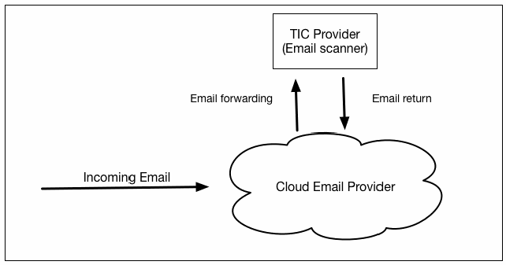
Figure 4-3: Use of Cloud Email with Third Party Email Scanning
図4-3: サードパーティメールスキャンを用いるクラウドメール
Table 4-7 below summarizes the various forwarding techniques and their effect on domain-based authentication mechanisms:
表4-7は、各種転送技法とドメインベース認証機構への影響をまとめたものである。
未レビュー訳Table 4-7: Common relay techniques and their impact on domain-based authentication
表4-7: 一般的な中継技法とドメインベース認証への影響
| Relay Technique | Typical Uses | Negatively Impacts |
| Aliases | Forwarding, many-to-one consolidation, vanity addresses | SPF |
| Re-sender | MUA level forwarding, inline forwarding | SPF & DKIM |
| Mailing Lists | Re-posting to a subscriber list, often with modifications to the message body (such as a footer identifying the mailing list). | SPF & DKIM results may lead to DMARC policy rejection and sender unsubscribe |
| Gateways | Unrestricted message re-writing, and forwarding | SPF & DKIM |
| Boundary Filters | Spam or malware filters that change/delete content of an email message | DKIM |
| �ird Parties | Email malware scanners, TIC providers | SPF & DMARC |
原本PDFの抜粋画像
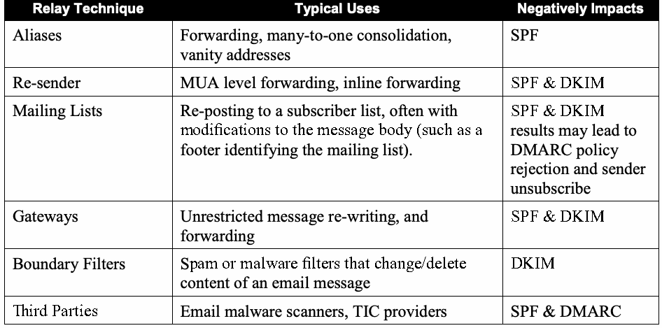
| 中継技法 | 一般的な用途 | 悪影響を受ける機構 |
| エイリアス | 転送、多対一の統合、バニティアドレス | SPF |
| 再送信者 | MUAレベルの転送、インライン転送 | SPFおよびDKIM |
| メーリングリスト | 購読者リストへの再投稿。フッターなど本文を変更する場合が多い。 | SPFおよびDKIMの結果によってDMARCポリシーが拒否となり、送信者が購読解除される可能性 |
| ゲートウェイ | 制限のないメッセージ書き換えおよび転送 | SPFおよびDKIM |
| 境界フィルター | メール内容を変更/削除するスパムまたはマルウェアフィルター | DKIM |
| サードパーティ | メールマルウェアスキャナー、TICプロバイダー | SPFおよびDMARC |
One solution that can reduce the impact due to domain-based validation failures is the Authenticated Receiver Chain (ARC)14 extension. ARC is an extension of DKIM that generates a chain of custody (called an “ARC Set”) as an email message moves from one MTA to another. �e ARC Set is actually three new headers that contain a receiver’s authentication results, an additional signature over the message a second signature over selected headers (including the other ARC headers). Downstream receivers include their authentication results as well as also signing the previous handler’s ARC headers. ARC can be used to give information about authentication results throughout the chain of possession. ARC is not perfect because a malicious actor can alter the ARC Set, so ARC should only be seen as a purported chain of custody and a way to use indirect email flows without invalidating previous authentication results.
ドメインベース検証の失敗による影響を低減できる解決策の1つがAuthenticated Receiver Chain (ARC)14拡張である。ARCはDKIMの拡張で、メールメッセージがMTA間を移動する際に管理連鎖 (「ARC Set」と呼ぶ) を生成する。ARC Setは実際には3つの新しいヘッダーであり、受信者の認証結果、メッセージへの追加署名、および選択されたヘッダー (他のARCヘッダーを含む) への第2署名を含む。後続の受信者は、自身の認証結果を含めるとともに、直前の処理者のARCヘッダーにも署名する。ARCは管理連鎖全体の認証結果に関する情報提供に使える。ただし悪意ある主体がARC Setを変更できるため、ARCは主張された管理連鎖にすぎず、以前の認証結果を無効にせずに間接的なメールフローを利用する方法として捉えるべきである。
未レビュー訳ARC may be especially useful when using third party email scanners (or TIC providers). A federal agency’s cloud email provider can forward all email to the TIC provider for scanning. Upon resubmission of the email, the cloud email provider can examine the ARC chain to see that the incoming email was validated previously and only returning from (known) third party scanning and override the sending domain’s DMARC policy in favor of a local policy about messages received from the TIC provider that has a valid ARC chain. As of the time of writing, ARC is still being finalized in the IETF. However, email service providers and administrators are encouraged to look at ARC as a means to minimize the impact of domain-based validation failures when forwarding email, or when using email mailing lists.
ARCはサードパーティのメールスキャナー (またはTICプロバイダー) を使う場合に特に有用である。連邦機関のクラウドメールプロバイダーは、すべてのメールをスキャンのためTICプロバイダーへ転送できる。メールを再提出された際、クラウドメールプロバイダーはARCチェーンを調べて、受信メールが以前に検証され、(既知の) サードパーティスキャンから返送されたものか確認し、有効なARCチェーンを持つTICプロバイダーからのメッセージに関するローカルポリシーを優先して、送信ドメインのDMARCポリシーを上書きできる。執筆時点ではARCはIETFで最終化作業中である。ただし、メールサービスプロバイダーおよび管理者には、メール転送時またはメーリングリスト利用時のドメインベース検証失敗の影響を最小限に抑える方法としてARCを検討することが推奨される。
Forwarding in general creates problems for DMARC results processing, and as of this writing, universal solutions are still in development. �ere is a currently existing set of mitigations that could be used by the mail relay and by the receiver, but would require modified MTA processing from traditional SPF and DKIM processing:
転送は一般にDMARC結果処理の問題を引き起こし、執筆時点では汎用的な解決策が開発中である。中継側と受信側で利用できる既存の緩和策はいくつかあるが、従来のSPFおよびDKIM処理を変更したMTA処理が必要となる。
未レビュー訳1.�e mediator can alter the message-From: field to match the envelope-From:. In this case the SPF lookup would be on the mediator’s domain.
1.中継者はmessage-From:フィールドをenvelope-From:に合わせて変更できる。この場合、SPFは中継者のドメインに対して検索される。
未レビュー訳2.After making the customary modifications, which break the originators DKIM signature, the email relay can generate its own DKIM signature over the modified header and body. Multiple DKIM signatures in a message are acceptable and DMARC policy is that at least one of the signatures must authenticate to pass DMARC.
2.元の送信者のDKIM署名を破る通常の変更を行った後、メール中継者は変更後のヘッダーと本文に独自のDKIM署名を生成できる。メッセージに複数のDKIM署名があっても問題なく、DMARCポリシーでは少なくとも1つの署名が認証されればDMARCに合格する。
It should also be noted that if one or the other (SPF or DKIM) authentication and domain alignment checks pass, then the DMARC policy could be satisfied.
SPFまたはDKIMのいずれかの認証とドメイン整合性の検査に成功すれば、DMARCポリシーを満たし得ることにも留意する。
At the receiver side, if a message fails DMARC and is bounced (most likely in the case where the sender publishes a p=reject policy), then a mailing list may respond by unsubscribing the recipient. Mailing list managers should be sensitive to the reasons for rejection and avoid unsubscribing recipients if the bounce is due to message authentication issues. If the mailing list is in a domain where the recommendations in this document can be applied, then such mailing list managers should be sensitive to and accommodate DMARC authentication issues. In the case where the mailing list is outside the domain of influence, the onus is on senders and receivers to mitigate the effects of forwarding as best they can. ARC may also be useful in mitigating these types of errors, as a receiver can examine the ARC chain for additional information about how the message traveled through different MTAs.
受信側では、DMARCに失敗したメッセージがバウンスされた場合 (送信者がp=rejectポリシーを公開している場合が多い)、メーリングリストが受信者を購読解除することがある。メーリングリスト管理者は拒否理由を考慮し、メッセージ認証の問題によるバウンスで受信者を購読解除しないようにすべきである。本書の推奨事項を適用できるドメイン内のメーリングリストであれば、DMARC認証の問題に配慮し、対処すべきである。影響範囲外のドメインのメーリングリストでは、転送の影響を可能な限り緩和する責任は送信者と受信者にある。受信者はARCチェーンを調べ、メッセージが異なるMTA間をどのように移動したかに関する追加情報を得られるため、ARCもこの種のエラー緩和に有用となる場合がある。
未レビュー訳4.7 Authenticating Mail Messages with Digital Signatures
4.7 デジタル署名によるメールメッセージの認証
In addition to authenticating the sender of a message, the message contents can be authenticating with digital signatures. Signed email messages protect against phishing attacks, especially targeted phishing attacks, as users who have been conditioned to expect signed messages from co-workers and organizations are likely to be suspicious if they receive unsigned messages instructing them to perform an unexpected action [GAR2005]. For this reason, the Department of Defense requires that all e-mails containing a hyperlink or an attachment be digitally signed
メッセージ送信者の認証に加え、デジタル署名によってメッセージ内容を認証できる。署名付きメールメッセージはフィッシング攻撃、特に標的型フィッシングへの防御となる。署名付きメッセージが同僚や組織から届くことを期待するよう訓練されたユーザーは、予期しない操作を指示する未署名メッセージを疑う可能性が高い [GAR2005]。このため、米国国防総省はハイパーリンクまたは添付ファイルを含むすべてのメールにデジタル署名を付すことを要求している
未レビュー訳[DOD2009].
[DOD2009]。
未レビュー訳Because it interoperates with existing PKI and most deployed software, S/MIME is the recommended format for digitally signing messages. Users of most email clients who receive S/MIME signed messages from organizations that use well-known CAs will observe that the message signatures are automatically validated, without the need to manually add or trust certificates for each sender. If users receive mail that originates from a sender that uses a non-public CA, then either the non-public CA must be added or else each S/MIME sender must be individually approved. Today, the US Government PIV [FIPS 201] cards are signed by well-known CAs, whereas the US Department of Defense uses CAs that are generally not trusted outside the Department of Defense. �us, email signed by PIV cards will generally be validated with no further action, while email signed by DoD Common Access Cards will result in a warning that the sender’s certificate is not trusted.
既存のPKIおよび多くの展開済みソフトウェアと相互運用できるため、メッセージへのデジタル署名にはS/MIMEが推奨される。よく知られたCAを使う組織からS/MIME署名付きメッセージを受け取る多くのメールクライアントのユーザーには、送信者ごとに証明書を手動で追加または信頼する必要なく、署名が自動検証されて表示される。公開されていないCAを使う送信者からメールを受け取る場合、非公開CAを追加するか、各S/MIME送信者を個別に承認しなければならない。米国政府のPIV [FIPS 201] カードはよく知られたCAによって署名されている一方、米国国防総省は国防総省外では一般に信頼されないCAを使う。そのためPIVカードで署名されたメールは通常追加操作なしで検証されるが、DoD Common Access Cardsで署名されたメールでは送信者の証明書が信頼されていないという警告が表示される。
未レビュー訳4.7.1 End-to-End Authentication Using S/MIME Digital Signatures
4.7.1 S/MIMEデジタル署名によるエンドツーエンド認証
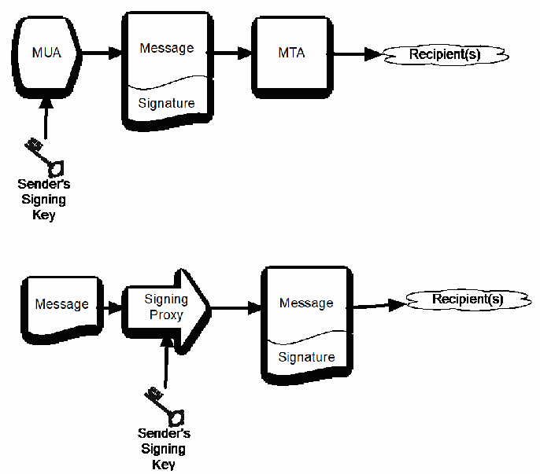
Figure 4-4: Two models for sending digitally signed mail.
図4-4: デジタル署名付きメールを送信する2つのモデル
Organizations (and individuals in organizations) can use S/MIME digital signatures to certify email that is sent within or external to the organization. Because support for S/MIME is present in many modern mail clients15, S/MIME messages that are signed with a valid digital signature will automatically validate when they are displayed. �is is particularly useful for messages that are designed to be read but not replied to—for example, status reports and alerts that are sent programmatically, as well as messages that are sent to announcement-only distribution lists.
組織 (および組織内の個人) はS/MIMEデジタル署名を使って、組織内外に送信するメールを認証できる。多くの最新メールクライアント15がS/MIMEをサポートするため、有効なデジタル署名で署名されたS/MIMEメッセージは表示時に自動検証される。これは、返信を想定しないメッセージ、たとえばプログラムにより送信される状況報告や警告、告知専用配布リストへのメッセージに特に有用である。
未レビュー訳To send S/MIME digitally signed messages, organizations must first obtain a S/MIME certificate where the sender matches the message-From: address that will be used to sign the messages. Typically, this will be done with a S/MIME certificate and matching private key that corresponds to the role, rather than to an individual.16 Once a certificate is obtained, the message is first composed. Next, software uses both the S/MIME certificate and the private portion of their S/MIME key pair to generate the digital signature. S/MIME signatures contain both the signature and the signing certificate, allowing recipients to verify the signed message without having to fetch the certificate from a remote server; the certificate itself is validated using PKI. Sending S/MIME signed messages thus requires either a MUA that supports S/MIME and the necessary cryptographic libraries to access the private key and generate the signature, or else an intermediate program that will sign the message after it is created but before it is delivered (Fig 4-3).
S/MIMEデジタル署名付きメッセージを送信するには、まず送信者がメッセージ署名に使用するmessage-From:アドレスと一致するS/MIME証明書を取得する必要がある。通常は個人ではなく役割に対応するS/MIME証明書と、それに対応する秘密鍵を用いる。16証明書を取得した後、まずメッセージを作成する。次にソフトウェアがS/MIME証明書とS/MIME鍵ペアの秘密鍵部分を使ってデジタル署名を生成する。S/MIME署名には署名と署名用証明書の両方が含まれるため、受信者はリモートサーバーから証明書を取得しなくても署名付きメッセージを検証できる。証明書自体はPKIを用いて検証される。S/MIME署名付きメッセージの送信には、S/MIMEをサポートし、秘密鍵へのアクセスと署名生成に必要な暗号ライブラリを備えたMUA、またはメッセージ作成後・配信前に署名する中間プログラムが必要である (図4-3)。
未レビュー訳�e receiver of the signed S/MIME message then uses the sender's public key (from the sender's attached X.509 certificate) and validates the digital signature. �e receiver should also check to see if the senders certificate has a valid PKIX chain back to a root certificate the receiver trusts to further authenticate the sender. Some organizations may wish to configure MUAs to perform real-time checks for certificate revocation and an additional authentication check (See Section 5.2.2.3).
署名付きS/MIMEメッセージの受信者は、送信者の公開鍵 (添付された送信者のX.509証明書から取得) を使ってデジタル署名を検証する。さらに送信者を認証するため、受信者が信頼するルート証明書まで有効なPKIXチェーンがあるか確認すべきである。一部の組織では、証明書失効のリアルタイム確認と追加認証をMUAに設定する場合がある (第5.2.2.3節参照)。
未レビュー訳�e principal barrier to using S/MIME for end-user digital signatures has been the difficulty of arranging for end-users to obtain S/MIME certificates. One approach is to issue S/MIME credentials in physical identity tokens, as is done with the US Government’s PIV (Personal Identity Verification) cards [FIPS 201]. Individuals can obtain free S/MIME certificates from a number of online providers, who verify the individual’s address with an email challenge.
エンドユーザーのデジタル署名にS/MIMEを使う際の主な障壁は、エンドユーザーがS/MIME証明書を取得できるよう手配する難しさであった。米国政府のPIV (Personal Identity Verification) カード [FIPS 201] のように、物理的な身分証明トークンにS/MIME認証情報を発行する方法がある。個人は、メールによるチャレンジでアドレスを確認する複数のオンラインプロバイダーから、無料のS/MIME証明書を取得できる。
未レビュー訳�e principal barrier to using S/MIME for signing organizational email has been the lack of attention to the issue, since only a single certificate is required for signing mail and software for verifying S/MIME signatures is already distributed.
組織メールの署名にS/MIMEを使う際の主な障壁は、この問題への関心不足であった。メール署名には証明書が1つあればよく、S/MIME署名を検証するソフトウェアもすでに配布されている。
未レビュー訳Security Recommendation 4-11: Use S/MIME signatures for assuring message authenticity and integrity.
セキュリティ推奨事項4-11: メッセージの真正性と完全性を保証するためS/MIME署名を使用する。
4.8 Recommendation Summary
4.8 推奨事項のまとめ
Security Recommendation 4-1: Organizations are recommended to deploy SPF to specify which IP addresses are authorized to transmit email on behalf of the domain. Domains controlled by an organization that are not used to send email, for example Web only domains, should include an SPF RR with the policy indicating that there are no valid email senders for the given domain.
セキュリティ推奨事項4-1: ドメインに代わってメール送信を認可するIPアドレスを指定するため、組織はSPFを導入することが推奨される。たとえばウェブ専用ドメインなど、組織が管理するドメインのうちメール送信に使わないものは、そのドメインに有効なメール送信者が存在しないことを示すポリシーを持つSPF RRを含めるべきである。
Security Recommendation 4-2: Organizations should deploy DNSSEC for all DNS name servers and validate DNSSEC responses from all systems that receive email.
セキュリティ推奨事項4-2: 組織はすべてのDNSネームサーバーにDNSSECを導入し、メールを受信するすべてのシステムでDNSSEC応答を検証すべきである。
Security Recommendation 4-3: Federal agency administrators shall only use keys with approved algorithms and lengths for use with DKIM.
セキュリティ推奨事項4-3: 連邦機関の管理者は、DKIMに承認されたアルゴリズムと鍵長のみを使用しなければならない。
Security Recommendation 4-4: Administrators should ensure that the private portion of the key pair is adequately protected on the sending MTA and that only the MTA software has read privileges for the key. Federal agency administrators should follow FISMA control SC-12 [SP800-53] guidance with regards to distributing and protecting DKIM key pairs.
セキュリティ推奨事項4-4: 管理者は鍵ペアの秘密鍵部分が送信MTA上で適切に保護され、MTAソフトウェアだけがその鍵を読み取れることを確認すべきである。連邦機関の管理者は、DKIM鍵ペアの配布と保護に関してFISMA管理策SC-12 [SP800-53] の指針に従うべきである。
Security Recommendation 4-5: Each sending MTA should be configured with its own private key and its own selector value, to minimize the damage that may occur if a private key is compromised.
セキュリティ推奨事項4-5: 秘密鍵が侵害された場合の損害を最小限に抑えるため、各送信MTAに独自の秘密鍵とselector値を設定すべきである。
Security Recommendation 4-6: Organizations should deploy DNSSEC to provide authentication and integrity protection to the DKIM DNS resource records.
セキュリティ推奨事項4-6: 組織はDKIM DNSリソースレコードに認証と完全性保護を提供するためDNSSECを導入すべきである。
Security Recommendation 4-7: Organizations should enable DNSSEC validation on DNS servers used by MTAs that verify DKIM signatures.
セキュリティ推奨事項4-7: DKIM署名を検証するMTAが使用するDNSサーバーでは、組織はDNSSEC検証を有効化すべきである。
Security Recommendation 4-8: Mailing list software should verify DKIM signatures on incoming mail and re-sign outgoing mail with new DKIM signatures.
セキュリティ推奨事項4-8: メーリングリストソフトウェアは受信メールのDKIM署名を検証し、送信メールに新しいDKIM署名を付し直すべきである。
Security Recommendation 4-9: Mail sent to broadcast mailing lists from do-not-reply or unmonitored mailboxes should be digitally signed with S/MIME signatures so that recipients can verify the authenticity of the messages.
セキュリティ推奨事項4-9: do-not-replyまたは監視されていないメールボックスから配信型メーリングリストへ送られるメールには、受信者がメッセージの真正性を検証できるようS/MIMEデジタル署名を付すべきである。
Security Recommendation 4-10: A unique DKIM key pair should be used for each third party that sends email on the organization's behalf.
セキュリティ推奨事項4-10: 組織に代わってメールを送信する各サードパーティに、固有のDKIM鍵ペアを使用すべきである。
Security Recommendation 4-11: Use S/MIME signatures for assuring message authenticity and integrity.
セキュリティ推奨事項4-11: メッセージの真正性と完全性を保証するためS/MIME署名を使用する。
5 Protecting Email Confidentiality
5 メールの機密性保護
未レビュー訳5.1 Introduction
5.1 序論
Cleartext mail messages are submitted by a sender, transmitted hop-by-hop over a series of relays and delivered to a receiver. Any successful man-in-the-middle can intercept such traffic and read it directly. Any bad actor, or organizationally privileged actor, can read such mail on the submission or delivery systems. Email transmission security can be assured by encrypting the traffic along the path. �e Transport Layer Security protocol (TLS) [RFC5246] protects confidentiality by encrypting bidirectional traffic and prevents passive monitoring. TLS relies on public key cryptography and uses X.509 certificates [RFC5280] to encapsulate the public key, and the Certificate Authority (CA) system to issue certificates and authenticate the origin of the key.
平文メールメッセージは送信者から提出され、一連の中継をホップごとに転送され、受信者に配信される。この通信を傍受できる中間者は、そのまま読み取ることができる。悪意ある主体または組織内で特権を持つ主体は、提出/配信システム上でメールを読むことができる。経路上の通信を暗号化すればメール転送のセキュリティを保証できる。Transport Layer Securityプロトコル (TLS) [RFC5246] は双方向通信を暗号化して受動的な監視を防ぎ、機密性を保護する。TLSは公開鍵暗号に依存し、公開鍵を格納するためにX.509証明書 [RFC5280] を用い、証明書発行と鍵の出所認証には認証局 (CA) システムを利用する。
未レビュー訳In recent years the CA system has become the subject of attack and has been successfully compromised on several occasions.1718 �e DANE protocol [RFC6698] is designed to overcome problems in the CA system by providing an alternative channel for authenticating public keys using DNSSEC. �e result is that the same trust relationships used to certify IP addresses can be used to certify servers operating on those addresses the mechanisms that combine to improve the assurance of email transmission security are described in section 5.2.
近年、CAシステムは攻撃対象となり、複数回にわたって侵害に成功されている。17 18 DANEプロトコル [RFC6698] はDNSSECを用いた公開鍵認証の代替経路を提供し、CAシステムの問題を克服するよう設計されている。その結果、IPアドレスを認証するのと同じ信頼関係を使って、そのアドレス上で稼働するサーバーを認証できる。メール転送セキュリティの保証を高める仕組みについては第5.2節で説明する。
未レビュー訳Encryption at the transport layer gives assurance of the integrity of data in transit, but senders and receivers who want end-to-end assurance, (i.e., mailbox to mailbox) of confidentiality have two alternative mechanisms for achieving this: S/MIME [RFC5750] and OpenPGP [RFC4880]. Both protocols are capable of signing (for authentication) and encryption (for confidentiality). �e S/MIME protocol is deployed to sign and/or encrypt message contents, using keys stored as X.509 certificates and a PKI (See Section 2.4.2) while OpenPGP uses a different certificate and a Web-of-Trust model for authentication of identities (See Section 2.4.3). Both of these protocols have the issue of trustworthy certificate publication and discovery. Traditionally, this was done using dedicated key/certificate servers, LDAP servers, etc., but these methods are not always easy to deploy and standardize for every enterprise. �ese certificates can be published through the DNS by a different implementation of the DANE mechanism for S/MIME [RFC8162] and OpenPGP [RFC7929]. S/MIME and OpenPGP, with their strengthening by DANE authentication are discussed below.
トランスポート層の暗号化は転送中のデータの完全性を保証するが、エンドツーエンド (すなわちメールボックス間) の機密性保証を求める送信者と受信者には、2つの代替手段がある。S/MIME [RFC5750] とOpenPGP [RFC4880] である。両プロトコルは署名 (認証用) と暗号化 (機密性用) に対応する。S/MIMEプロトコルはX.509証明書に格納された鍵とPKIを使ってメッセージ内容に署名および/または暗号化する (第2.4.2節参照)。一方、OpenPGPはID認証に異なる証明書とWeb-of-Trustモデルを使う (第2.4.3節参照)。どちらのプロトコルにも、信頼できる証明書の公開と発見という課題がある。従来は専用鍵/証明書サーバー、LDAPサーバーなどを使っていたが、これらの方法はすべての企業で容易に展開・標準化できるとは限らない。S/MIME [RFC8162] およびOpenPGP [RFC7929] 向けに異なるDANE機構を実装することで、これらの証明書をDNS経由で公開できる。DANE認証で強化されるS/MIMEおよびOpenPGPについて以下に説明する。
未レビュー訳5.2 Email Transmission Security
5.2 メール転送セキュリティ
Email proceeds towards its destination from a Message Submission Agent (MSA), through a sequence of Message Transfer Agents (MTAs), to a Message Delivery Agent (MDA), as described in Section 2. �is translates to the use of SMTP [RFC5321] for submission and hop-by-hop transmission and IMAP [RFC3501] or POP3 [RFC1939] for final delivery into a recipient’s mailbox. TLS [RFC5246] can be used to protect email in transit for one or more hops, but intervening hops may be under autonomous control, so a securely encrypted end-to-end path cannot be guaranteed. �is is discussed further in section 5.2.1. Opportunistic encryption over some portions of the path can provide “better-than-nothing” security. �e use of STARTTLS [RFC3207] is a standard method for establishing a TLS connection. TLS has a secure handshake that relies on asymmetric encryption, to establish a secure session (using symmetric encryption). As part of the handshake, the server sends the client an X.509 certificate containing its public key, and the cipher suite and symmetric key are negotiated with a preference for the optimally strongest cipher that both parties support. SMTP clients have traditionally not verified the server’s certificate due to the lack of an appropriate mechanism to specify allowable certificates and certificate authorities. �e newly adopted RFC 7672 [RFC 7672] rectifies this, by providing rules for applying the DANE protocol to SMTP servers. �e use of DANE in conjunction with SMTP is discussed Section 5.2.4.
メールは第2節で説明したとおり、Message Submission Agent (MSA) から一連のMessage Transfer Agent (MTA) を経てMessage Delivery Agent (MDA) に向かう。これは提出およびホップごとの転送にはSMTP [RFC5321]、受信者のメールボックスへの最終配信にはIMAP [RFC3501] またはPOP3 [RFC1939] を使うことに相当する。TLS [RFC5246] は1つ以上のホップで転送中のメールを保護できるが、中継ホップは独立した管理下にある可能性があるため、安全に暗号化されたエンドツーエンド経路を保証できない。これについては第5.2.1節でさらに説明する。経路の一部で日和見暗号化を使えば「何もしないよりはよい」セキュリティを提供できる。STARTTLS [RFC3207] はTLS接続を確立する標準方式である。TLSは非対称暗号を使う安全なハンドシェイクにより、安全なセッション (対称暗号を使用) を確立する。ハンドシェイクの一部としてサーバーは公開鍵を含むX.509証明書をクライアントに送信し、双方が対応する暗号スイートから最も強力なものを優先して交渉し、対称鍵を決定する。許可する証明書および認証局を指定する適切な機構がなかったため、SMTPクライアントは従来サーバー証明書を検証していなかった。新たに採択されたRFC 7672 [RFC 7672] は、SMTPサーバーへDANEプロトコルを適用する規則を提供してこの問題を是正する。SMTPと併用するDANEについては第5.2.4節で説明する。
未レビュー訳Ultimately the entire path from sender to receiver will be protected by TLS. But this may consist of many hops between MTAs, each the subject of a separate transport connection. �ese are not compelled to upgrade to TLS at the same time, however in the patchwork evolutionary development of the global mail system, this cannot be completely guaranteed. �ere may be some MTAs along the route uncontrolled by the sender or receiver domains that have not upgraded to TLS. In the interim until all mail nodes are certifiably secure, the principle is that some incrementally improving security is better than no security, so opportunistic TLS (using DANE or other methods to validate certificates) should be employed at every possible hop.
最終的には送信者から受信者までの経路全体がTLSで保護される。ただし、複数のMTA間のホップで構成され、各ホップは個別のトランスポート接続となる。すべてのホップが同時にTLSへ移行するとは限らず、世界のメールシステムが段階的かつ不均一に発展しているため、完全な移行は保証できない。経路上には送信者または受信者ドメインの管理下になく、TLSへ移行していないMTAが存在する可能性がある。すべてのメールノードが証明可能な安全性を備えるまでの間は、セキュリティがないより段階的に改善されるセキュリティがよいという原則に基づき、可能な各ホップで証明書を (DANEまたはその他の方法により) 検証する日和見TLSを利用すべきである。
未レビュー訳5.2.1 TLS Configuration and Use
5.2.1 TLSの構成と使用
Traditionally, sending email begins by opening an SMTP connection over TCP and entering a series of cleartext commands, possibly even including usernames and passwords. �is leaves the connection exposed to potential monitoring, spoofing, and various man-in-the-middle interventions. A clear improvement would be to open a secure connection that is encrypted so that the message contents cannot be passively monitored, and third parties cannot spoof message headers or contents. Transport Layer Security (TLS) offers the solution to these problems.
従来、メール送信はTCP上でSMTP接続を開き、一連の平文コマンドを送ることから始まり、ユーザー名とパスワードまで含む場合があった。このため接続は監視、なりすまし、さまざまな中間者介入にさらされる。メッセージ内容を受動的な監視から守り、第三者によるメッセージヘッダーや内容の偽装を防ぐには、暗号化された安全な接続を開くのが明白な改善策である。Transport Layer Security (TLS) はこれらの問題を解決する。
未レビュー訳TCP provides a reliable, flow-controlled connection for transmitting data between two peers. Unfortunately, TCP provides no built-in security. Transport connections carry all manner of sensitive traffic, including web pages with financial and sign-in information, as well as email messages. �is traffic can only be secured through physical isolation, which is not possible on the Internet, or by encrypting the traffic.
TCPは2つの通信相手間でデータを転送する、信頼性がありフロー制御された接続を提供する。残念ながらTCPには組み込みのセキュリティがない。トランスポート接続は、金融情報やサインイン情報を含むウェブページ、メールメッセージなど、さまざまな機密通信を運ぶ。こうした通信を保護するには物理的な隔離 (インターネットでは不可能) または暗号化が必要である。
未レビュー訳�e Secure Sockets Layer (SSL) was developed to provide a standard protocol for encrypting TCP connections. SSL evolved into Transport Layer Security (TLS), the most recent version at the time of writing being Version 1.3 [RFC8446]. TLS negotiates a secure connection between initiator and responder (typically client and server) parties. �e negotiation entails the exchange of the server’s certificate, and possibly the client’s certificate, and agreement on a cipher to use for encrypting the data. In essence, the protocol uses the public-private key pair: the public key in the server’s certificate, and the server’s closely held private key, to negotiate a symmetric algorithm and establish a key known to both parties, and with which both can encrypt, transmit and decrypt the application data. RFC 5246 Appendix A describes a range of permissible ciphers, and the parties agree on one from this set. �is range of ciphers may be restricted on some hosts by local policy (such as only ciphers Approved for federal use). Data transmitted over the connection is encrypted using the negotiated session key. At the end, the connection is closed, and the session key can be deleted (but not always, see below).
Secure Sockets Layer (SSL) はTCP接続を暗号化する標準プロトコルとして開発された。SSLはTransport Layer Security (TLS) に発展し、執筆時点の最新バージョンはVersion 1.3 [RFC8446] である。TLSは開始側と応答側 (通常はクライアントとサーバー) の間に安全な接続を交渉する。この交渉ではサーバー証明書、場合によってはクライアント証明書を交換し、データ暗号化に使う暗号方式に合意する。基本的にこのプロトコルは公開鍵/秘密鍵ペア (サーバー証明書の公開鍵と厳重に保管されたサーバー秘密鍵) を使って対称暗号方式を交渉し、双方が知る鍵を確立する。双方はその鍵でアプリケーションデータを暗号化、送信、復号できる。RFC 5246附属書Aは許容可能な暗号方式を列挙し、双方はその中から1つに合意する。一部のホストではローカルポリシー (連邦政府で承認された暗号のみを許可するなど) によって利用可能な暗号方式が制限される。接続上で送信されるデータは交渉済みセッション鍵で暗号化される。最後に接続は閉じられ、セッション鍵は削除できる (ただし常にそうとは限らない。後述)。
未レビュー訳Negotiating a TLS connection involves a significant time and processor load, so when the two parties have the need to establish frequent secure connections between them, a session resumption mechanism allows them to continue with the previously negotiated cipher, for a subsequent connection.
TLS接続の交渉にはかなりの時間とプロセッサ負荷がかかる。そのため2者間で頻繁に安全な接続を確立する必要がある場合、セッション再開機構により後続の接続で以前に交渉した暗号方式を継続して使用できる。
TLS gains its security from the fact that the server holds the private key securely and the public key can be authenticated due to it being wrapped in an X.509 certificate that is guaranteed by some Certificate Authority. If the Certificate Authority is somehow compromised, there is no guarantee that the key in the certificate is truly the one belonging to the server, and a client may inadvertently negotiate with a man-in-the-middle. An investigation of what X.509 certificates are, how they work, and how they can be better secured, follows.
TLSのセキュリティは、サーバーが秘密鍵を安全に保持し、公開鍵が認証局によって保証されたX.509証明書に包まれているため認証できることに基づく。認証局が何らかの形で侵害された場合、証明書内の鍵が本当にサーバーの鍵である保証はなく、クライアントが誤って中間者と交渉する可能性がある。X.509証明書とは何か、どのように動作するか、どうすればより安全にできるかを以下で検討する。
Security Recommendation 5-1: Organizations are recommended only use approved TLS versions listed in NIST SP 800-52 [SP800-52] with FIPS approved cryptographic modules.
セキュリティ推奨事項5-1: 組織はNIST SP 800-52 [SP800-52] に記載された承認済みTLSバージョンのみを、FIPS承認済み暗号モジュールとともに使用することが推奨される。
5.2.2 X.509 Certificates
5.2.2 X.509証明書
The idea of certificates as a secure and traceable vehicle for locating a public key, its ownership and use was first proposed by the Consultative Committee for International Telephony and Telegraphy (CCITT), now the International Telecommunications Union (ITU). The X.509 specification was developed and brought into worldwide use as a result. In order to vest a certificate with some authority, a set of Certificate Authorities is licensed around the world as identifiable authentic sources. Each certificate hierarchy has a traceable root for authentication and has specific traceable requirements for revocation if that is necessary. As a certificate has a complex set of fields, the idea of a certificate profile has more recently come into play. X.509 certificate formats are described in Section 5.2.2.1, their authentication in Section 5.2.2.2, and possible revocation in Section 5.2.2.3. The profile concept and a specific example are described in Section 5.2.2.4
公開鍵、その所有権および用途を安全かつ追跡可能な形で示す証明書の考え方は、当時の国際電信電話諮問委員会 (CCITT)、現在の国際電気通信連合 (ITU) によって最初に提案された。その結果X.509仕様が策定され、世界中で利用されるようになった。証明書に権威を与えるため、識別可能で信頼できる発行元として、世界各地で一連の認証局が認可されている。各証明書階層には認証用の追跡可能なルートがあり、必要となった場合の失効に関する追跡可能な要件が定められている。証明書には複雑なフィールド一式があるため、近年は証明書プロファイルという考え方が導入された。X.509証明書形式は第5.2.2.1節、認証は第5.2.2.2節、失効方法は第5.2.2.3節で説明する。プロファイルの概念と具体例は第5.2.2.4節で説明する。
5.2.2.1 X.509 Description
5.2.2.1 X.509の説明
A trusted Certificate Authority (CA) is licensed to validate applicants’ credentials, store each applicant’s public key in a X.509 [RFC5280] structure, and digitally sign it with the CA’s private key. Each applicant must first generate their own public and private key pair, save the private key securely, and wrap the public key into an X.509 request. �e openssl req command is an example of how to do this on Unix/Linux systems with OpenSSL19 installed. Many CAs will generate a certificate without receiving a request (in effect, generating the request themselves on the customer’s behalf). �e resulting digitally encoded structure is transmitted to the CA, vetted according to the CA’s policy, and a certificate is issued. An example certificate is given below in Figure 5-1, with salient fields described.
信頼された認証局 (CA) は申請者の資格情報を検証し、各申請者の公開鍵をX.509 [RFC5280] 構造に格納し、CAの秘密鍵でデジタル署名する認可を受けている。申請者はまず自分の公開鍵/秘密鍵ペアを生成し、秘密鍵を安全に保存し、公開鍵をX.509要求に包まなければならない。openssl reqコマンドはOpenSSL19がインストールされたUnix/Linuxシステムでこれを行う例である。多くのCAは要求を受け取らずに証明書を生成する (実質的には顧客の代理で要求を生成する) 場合がある。生成されたデジタル符号化構造がCAに送信され、CAのポリシーに従って審査されると証明書が発行される。図5-1に重要なフィールドを説明した証明書の例を示す。
未レビュー訳•Issuer: �e Certificate Authority that issued and signed this end-entity certificate. If the issuer is a well-known reputable entity, its root certificate may be listed in host systems’ root certificate repository.
•発行者: このエンドエンティティ証明書を発行し署名した認証局。発行者が広く知られた評判の良い組織であれば、そのルート証明書はホストシステムのルート証明書リポジトリに記載されている場合がある。
未レビュー訳•Subject: Sometimes referred to as the common name (CN). �e entity to which this certificate is issued by this CA. Here: www.example.com.
•サブジェクト: Common Name (CN) と呼ばれることもある。このCAが証明書を発行したエンティティ。ここではwww.example.com。
未レビュー訳•Public Key: (this field truncated for readability). �is is the public key corresponding to the private key held by the subject. Clients who receive the certificate in a secure communication attempt extract the public key and use it for one of the stated key usages.
•公開鍵: (読みやすさのためこのフィールドは省略)。サブジェクトが保持する秘密鍵に対応する公開鍵である。安全な通信を試みるクライアントは証明書を受け取ると公開鍵を抽出し、記載された用途のいずれかに使う。
未レビュー訳•X509v3 Key Usage: �e use of this certificate is restricted to digital signature, key encipherment or key agreement. So an attempt to use it for data encipherment, for example, should result in error.
•X509v3 Key Usage: この証明書の用途はデジタル署名、鍵暗号化、または鍵合意に制限される。たとえばデータ暗号化に使用しようとするとエラーとなるべきである。
未レビュー訳•X509v3 Basic Constraints: �is certificate is an end certificate so the constraint is set to CA:FALSE. It is not a CA certificate and its key cannot be used to sign downstream certificates for other entities.
•X509v3 Basic Constraints: この証明書はエンド証明書であるため、制約はCA:FALSEに設定されている。CA証明書ではなく、その鍵を使って下位の他エンティティ向け証明書に署名することはできない。
未レビュー訳•X509v3 SubjectAltName: Together with the common name in the Subject field, this represents the binding of the public key to a domain. Any attempt by another domain to transmit this certificate to try to establish a connection should result in failure to authenticate and connection closure by the client.
•X509v3 SubjectAltName: SubjectフィールドのCommon Nameと合わせて、公開鍵とドメインの結び付きを表す。別のドメインがこの証明書を送信して接続を確立しようとすると、認証に失敗し、クライアントは接続を閉じるべきである。
•Signature Algorithm (truncated for convenience). �e signature generated by the CA over this certificate, demonstrating the CA’s authentication of the subject and its public key.
•署名アルゴリズム (便宜上省略)。CAがこの証明書に対して生成した署名であり、サブジェクトと公開鍵をCAが認証したことを示す。
未レビュー訳Certificate: Data: Version: 3 (0x2) Serial Number: 760462 (0xb9a8e) Signature Algorithm: sha1WithRSAEncryption Issuer: C=IL, O=ExampleCA LLC, OU=Secure Digital Certificate Signing, CN=ExampleCA Primary Intermediate Server CA Validity
Certificate: Data: Version: 3 (0x2) Serial Number: 760462 (0xb9a8e) Signature Algorithm: sha1WithRSAEncryption Issuer: C=IL, O=ExampleCA LLC, OU=Secure Digital Certificate Signing, CN=ExampleCA Primary Intermediate Server CA Validity
未レビュー訳Not Before: Aug 20 15:32:55 2013 GMT Not After : Aug 21 10:17:18 2014 GMT Subject: description=I0Yrz4bhzFN7q1lb, C=US, CN=www.example.com/emailAddress=admin@example.com Subject Public Key Info: Public Key Algorithm: rsaEncryption Public-Key: (2048 bit) Modulus: 00:b7:14:03:3b:87:aa:ea:36:3b:b2:1c:19:e3:a7: 7d:84:5b:1e:77:a2:44:c8:28:b7:c2:27:14:ef:b5: 04:67 Exponent: 65537 (0x10001)
Not Before: Aug 20 15:32:55 2013 GMT Not After : Aug 21 10:17:18 2014 GMT Subject: description=I0Yrz4bhzFN7q1lb, C=US, CN=www.example.com/emailAddress=admin@example.com Subject Public Key Info: Public Key Algorithm: rsaEncryption Public-Key: (2048 bit) Modulus: 00:b7:14:03:3b:87:aa:ea:36:3b:b2:1c:19:e3:a7: 7d:84:5b:1e:77:a2:44:c8:28:b7:c2:27:14:ef:b5: 04:67 Exponent: 65537 (0x10001)
未レビュー訳X509v3 extensions: X509v3 Basic Constraints: CA:FALSE X509v3 Key Usage: Digital Signature, Key Encipherment, Key Agreement X509v3 Extended Key Usage: TLS Web Server Authentication X509v3 Subject Key Identifier: C2:64:A8:A0:3B:E6:6A:D5:99:36:C2:70:9B:24:32:CF:77:46:28:BD X509v3 Authority Key Identifier: keyid:EB:42:34:D0:98:B0:AB:9F:F4:1B:6B:08:F7:CC:64:2E:EF:0E: 2C:45 X509v3 Subject Alternative Name: DNS:www.example.com, DNS:example.com X509v3 Certificate Policies: Policy: 2.23.140.1.2.1 Policy: 1.3.6.1.4.1.23223.1.2.3
X509v3 extensions: X509v3 Basic Constraints: CA:FALSE X509v3 Key Usage: Digital Signature, Key Encipherment, Key Agreement X509v3 Extended Key Usage: TLS Web Server Authentication X509v3 Subject Key Identifier: C2:64:A8:A0:3B:E6:6A:D5:99:36:C2:70:9B:24:32:CF:77:46:28:BD X509v3 Authority Key Identifier: keyid:EB:42:34:D0:98:B0:AB:9F:F4:1B:6B:08:F7:CC:64:2E:EF:0E: 2C:45 X509v3 Subject Alternative Name: DNS:www.example.com, DNS:example.com X509v3 Certificate Policies: Policy: 2.23.140.1.2.1 Policy: 1.3.6.1.4.1.23223.1.2.3
未レビュー訳CPS: http://www.exampleCA.com/policy.txt User Notice: Organization: ExampleCA Certification Authority Number: 1 Explicit Text: This certificate was issued according to the Class 1 Validation requirements of
CPS: http://www.exampleCA.com/policy.txt User Notice: Organization: ExampleCA Certification Authority Number: 1 Explicit Text: This certificate was issued according to the Class 1 Validation requirements of
未レビュー訳the ExampleCA CA policy, reliance only for the intended purpose in compliance of the relying party obligations.
the ExampleCA CA policy, reliance only for the intended purpose in compliance of the relying party obligations.
未レビュー訳X509v3 CRL Distribution Points: Full Name: URI:http://crl.exampleCA.com/crl.crl
X509v3 CRL Distribution Points: Full Name: URI:http://crl.exampleCA.com/crl.crl
Authority Information Access: OCSP - URI:http://ocsp.exampleCA.com/class1/server/ocsp CA Issuers - URI:http://aia.exampleCA.com/certs/ca.crt
Authority Information Access: OCSP - URI:http://ocsp.exampleCA.com/class1/server/ocsp CA Issuers - URI:http://aia.exampleCA.com/certs/ca.crt
X509v3 Issuer Alternative Name: URI:http://www.exampleCA.com/ Signature Algorithm: sha1WithRSAEncryption 93:29:d1:ed:3a:2a:91:50:b4:64:1d:0f:06:8a:79:cf:d5:35: ba:25:39:b0:dd:c0:34:d2:7f:b3:04:5c:46:50:2b:97:72:15: ea:3a:4f:b6
X509v3 Issuer Alternative Name: URI:http://www.exampleCA.com/ Signature Algorithm: sha1WithRSAEncryption 93:29:d1:ed:3a:2a:91:50:b4:64:1d:0f:06:8a:79:cf:d5:35: ba:25:39:b0:dd:c0:34:d2:7f:b3:04:5c:46:50:2b:97:72:15: ea:3a:4f:b6
未レビュー訳Figure 5-1: Example of X.509 Certificate
図5-1: X.509証明書の例
未レビュー訳5.2.2.2 X.509 Authentication
5.2.2.2 X.509認証
�e certificate given above is an example of an end certificate. Although it claims to be signed by a well-known CA, anyone receiving this certificate in communication has the problem of authenticating that signature. For this, full PKIX authentication back to the root certificate is required. �e CA issues a well-known self-signed certificate containing its public key. �is is the root certificate. A set of current root certificates, often numbering in the hundreds of certificates, are held by individual browser developers and operating system suppliers as their set of trusted root certificates. �e process of authentication is the process of tracing the end certificate back to a root certificate, through a chain of zero or more intermediate certificates.
上記の証明書はエンド証明書の例である。よく知られたCAが署名したと主張しているが、通信でこの証明書を受け取った者は署名を認証しなければならない。そのためには、PKIXを用いてルート証明書まで完全に認証する必要がある。CAは公開鍵を含む、広く知られた自己署名証明書を発行する。これがルート証明書である。数百に及ぶことも多い最新のルート証明書一式は、ブラウザー開発者やOSベンダーが信頼済みルート証明書として保持している。認証処理とは、0個以上の中間証明書のチェーンをたどり、エンド証明書からルート証明書まで追跡することである。
未レビュー訳5.2.2.3 Certificate Revocation
5.2.2.3 証明書の失効
Every certificate has a period of validity typically ranging from 30 days up to a number of years. �ere may, however, be reasons to revoke a certificate prior to its expiration, such as the compromise or loss of the private key [RFC5280]. �e act of revocation is associated with the CA publishing a certificate revocation list. Part of authenticating a certificate chain is perusing the certificate revocation list (CRL) to determine if any certificate in the chain is no longer valid. �e presence of a revoked certificate in the chain should result in failure of authentication. Among the problems of CRL management, the lack of real-time revocation checks leads to non-determinism in the authentication mechanism. Problems with revocation led the IETF to develop a real-time revocation management protocol, the Online Certificate Status Protocol (OCSP) [RFC6960]. Mozilla has now taken the step to deprecate CRLs in favor of OCSP.
各証明書には通常30日から数年までの有効期間がある。しかし秘密鍵の侵害や紛失など、期限前に証明書を失効させる理由が生じる場合がある [RFC5280]。失効はCAが証明書失効リストを公開することで行われる。証明書チェーンの認証の一部として、チェーン内の証明書が無効になっていないかCRLを確認する。失効証明書がチェーン内に存在する場合、認証は失敗すべきである。CRL管理の問題の1つは、失効のリアルタイム確認がないため、認証機構の結果が決定的でないことである。失効に関する問題を受け、IETFはリアルタイム失効管理プロトコルであるOnline Certificate Status Protocol (OCSP) [RFC6960] を開発した。Mozillaは現在、CRLを非推奨とし、OCSPを優先する措置を取っている。
未レビュー訳5.2.2.4 Certificate Profiles
5.2.2.4 証明書プロファイル
�e Federal Public Key Infrastructure (FPKI) Policy Authority has specified profiles (called the FPIX profile) for two types of X.509 version 3 certificates that can be used for confidentiality and integrity protection of federal email systems [FPKI-CERT]. �e applicable certificate profile is identified by the KeyPurposeId with value id-kp-emailProtection (1.3.6.1.5.5.7.3.4) and includes the following:
Federal Public Key Infrastructure (FPKI) Policy Authorityは、連邦政府のメールシステムの機密性および完全性を保護するために使用できる2種類のX.509 version 3証明書のプロファイル (FPIXプロファイルと呼ぶ) を規定している [FPKI-CERT]。該当する証明書プロファイルは、値id-kp-emailProtection (1.3.6.1.5.5.7.3.4) のKeyPurposeIdで識別され、次のものが含まれる。
未レビュー訳•End-Entity Signature Certificate Profile (Worksheet 5)
•エンドエンティティ署名証明書プロファイル (ワークシート5)
•Key Management Certificate Profile (Worksheet 6)
•鍵管理証明書プロファイル (ワークシート6)
未レビュー訳�e overall FPIX profile is an instantiation of IETF’s PKI profile developed by the PKIX working group (and hence called the PKIX profile) [PKIX] with unique parameter settings for Federal PKI systems. �us, a FPIX certificate profile complements the corresponding PKIX certificate profile. �e following is a brief overview of the two applicable FPIX profiles referenced above.
FPIXプロファイル全体は、IETFのPKIX作業部会が策定したPKIプロファイル (PKIXプロファイルと呼ばれる) [PKIX] を連邦PKIシステム向けに固有のパラメーター設定で具体化したものである。したがってFPIX証明書プロファイルは、対応するPKIX証明書プロファイルを補完する。以下に、前述の該当する2つのFPIXプロファイルの概要を示す。
未レビュー訳5.2.2.4.1 Overview of Key Management Certificate Profile
5.2.2.4.1 鍵管理証明書プロファイルの概要
�e public key of a Key Management certificate is used by a device (e.g., a Mail Transfer Agent (MTA) in this context) to set up a session key (a symmetric key) with its transacting entity (e.g., the next-hop MTA in this context). �e parameter values specified in the profile for this certificate type, for some of the important fields are:
鍵管理証明書の公開鍵は、デバイス (この文脈ではメール転送エージェント (MTA) など) が通信相手 (この文脈では次ホップMTAなど) とセッション鍵 (対称鍵) を設定するために使う。この証明書タイプのプロファイルで指定される重要なフィールドのパラメーター値は次のとおりである。
未レビュー訳•Signature: (of the certificate issuer) If the RSA is used as the signature algorithm for signing the certificate by the CA, then the corresponding hash algorithms can only be either SHA-256 or SHA-512.
•署名: (証明書発行者の署名) CAが証明書署名にRSAを使う場合、対応するハッシュアルゴリズムはSHA-256またはSHA-512に限られる。
未レビュー訳•subjectPublicKeyInfo: �e allowed algorithms for the public key are RSA, Diffie-Hellman (DH), Elliptic Curve (ECC), or the Key Exchange Algorithm (KEA).
•subjectPublicKeyInfo: 公開鍵に許可されるアルゴリズムはRSA、Diffie-Hellman (DH)、Elliptic Curve (ECC)、またはKey Exchange Algorithm (KEA) である。
未レビュー訳•KeyUsage: �e keyEncipherment bit is set to 1 when the subject public key is RSA. �e KeyAgreement bit is set to 1 when the subject public key is Diffie-Hellman (DH), Elliptic Curve (ECC), or Key Exchange Algorithm (KEA).
•KeyUsage: サブジェクト公開鍵がRSAの場合、keyEnciphermentビットを1に設定する。サブジェクト公開鍵がDiffie-Hellman (DH)、Elliptic Curve (ECC)、またはKey Exchange Algorithm (KEA) の場合、KeyAgreementビットを1に設定する。
未レビュー訳•KeyPurposeId: Should include the value id-kp-emailProtection (1.3.6.1.5.5.7.3.4)
•KeyPurposeId: 値id-kp-emailProtection (1.3.6.1.5.5.7.3.4) を含めること。
未レビュー訳•subjectAltName: Since this certificate is used by devices (as opposed to a human subject), this field should contain the DNS name or IP Address.
•subjectAltName: この証明書は人ではなくデバイスが使用するため、このフィールドにはDNS名またはIPアドレスを含めること。
5.2.3 STARTTLS
5.2.3 STARTTLS
Unlike the World Wide Web, where the URL indicates that the secure variant (i.e., HTTPS) is in use, an email sender has only the email address, “user@domain”, to signal the destination and no way to direct that the channel must be secured. �is is an issue not just on a sender-to-receiver basis, but also on a transitive basis, as SMTP is not an end-to-end protocol but instead a protocol that sends mail messages as a series of hops (i.e., MUA, MSA, multiple MTAs, etc.). Not only is there no way to signal that message submission must be secure, there is also no way to signal that any hop in the transmission should be secure. STARTTLS was developed to address some of the shortcomings of this system.
ウェブではURLによって安全な方式 (HTTPS) の使用を示せるが、メール送信者が宛先を示す情報はメールアドレス「user@domain」だけであり、通信路を必ず保護するよう指示する方法がない。これは送信者から受信者への通信だけでなく、その途中にも当てはまる。SMTPはエンドツーエンドプロトコルではなく、MUA、MSA、複数のMTAなど一連のホップでメールを送るプロトコルである。メッセージ提出を安全にするよう指示する方法がないだけでなく、転送中のどのホップを保護すべきかを示す方法もない。STARTTLSはこのシステムの一部の欠点に対処するため開発された。
未レビュー訳RFC 3207 [RFC3207] describes an extension to SMTP that allows an SMTP client and server to use TLS to provide private, authenticated communication across the Internet. �is gives SMTP agents the ability to protect some or all of their communications from eavesdroppers and attackers. If the client initiates the connection over a TLS-enabled port (e.g., port 465 was previously used for SMTP over SSL), the server advertises that the STARTTLS option is available to connecting clients. �e client can then issue the STARTTLS command in the SMTP command stream, and the two parties proceed to establish a secure TLS connection. An advantage of using STARTTLS is that the server can offer SMTP service on a single port, rather than requiring separate port numbers for secure and cleartext operations. Similar mechanisms are available for running TLS over IMAP and POP protocols.
RFC 3207 [RFC3207] は、SMTPクライアントとサーバーがTLSを使ってインターネット上でプライベートかつ認証された通信を行うためのSMTP拡張を記述する。これによりSMTPエージェントは通信の一部または全部を盗聴者や攻撃者から保護できる。クライアントがTLS対応ポート (例: 以前SMTP over SSLに使われていたポート465) で接続を開始すると、サーバーは接続クライアントにSTARTTLSオプションが利用可能であると通知する。クライアントはSMTPコマンドストリーム内でSTARTTLSコマンドを発行し、両者は安全なTLS接続を確立する。STARTTLSの利点は、安全な操作と平文操作に別々のポート番号を要求せず、サーバーが単一ポートでSMTPサービスを提供できることである。同様の機構はIMAPおよびPOPプロトコル上でTLSを動かす場合にも利用できる。
未レビュー訳When STARTTLS is initiated as a request by the server side, it may be susceptible to a downgrade attack, where a man-in-the-middle (MITM) is in place. In this case the MITM receives the STARTTLS request from the server reply to a connection request and scrubs it out. �e initiating client sees no TLS upgrade request and proceeds with an unsecured connection (as originally anticipated). Likewise, most MTAs default to sending messages over unencrypted TCP if certificate validation fails during the TLS handshake.
サーバー側からSTARTTLSを開始要求として送る場合、中間者 (MITM) がいるとダウングレード攻撃を受ける可能性がある。この場合、MITMは接続要求へのサーバー応答からSTARTTLS要求を受け取り、それを削除する。開始側クライアントにはTLSへのアップグレード要求が見えず、当初想定したとおり安全でない接続を続ける。同様に、多くのMTAはTLSハンドシェイク中に証明書検証が失敗すると、既定で暗号化されていないTCP上でメッセージを送信する。
未レビュー訳Domains can signal their desire to receive email over TLS by publishing a public key in their DNS records using DANE (Section 5.2.4). Domains can also configure their email servers to reject mail that is delivered without being preceded by a TLS upgrade. Unfortunately, doing so at the present time may result in email not being delivered from clients that are not capable of TLS. Furthermore, mail that is sent over TLS will still be susceptible to MITM attacks unless the client verifies the that the server’s certificate matches the certificate that is advertised using
ドメインはDANE (第5.2.4節) を使ってDNSレコードに公開鍵を公開し、TLS経由でメールを受信したい意思を示せる。また、TLSへのアップグレードを経ずに配信されたメールを拒否するようメールサーバーを構成できる。残念ながら現時点では、TLSに対応していないクライアントからメールが配信されなくなる場合がある。さらに、TLS経由で送信されたメールも、クライアントがサーバー証明書と広告された証明書との一致を検証しない限り、MITM攻撃の影響を受ける。
未レビュー訳DANE.
DANE。
未レビュー訳If the client wants to ensure an encrypted channel, there is a new proposal to allow for signaling the required use of TLS via the REQUIRETLS SMTP option20. �is option is set by senders to indicate that they wish TLS to be used for each hop and not deliver to the next hop if TLS is not available. If the server wishes to indicate that an encrypted channel is available and should be used by senders, this can be indicated through an advertisement using DANE. If the end user wants security over the message content, then the message should be encrypted using S/MIME or OpenPGP, as discussed in Section 5.3.
クライアントが暗号化チャネルを確実に使いたい場合、REQUIRETLS SMTPオプション20を介してTLSの必須使用を通知する新しい提案がある。このオプションを送信者が設定すると、各ホップでTLSを使用し、TLSが利用できない場合は次ホップへ配信しないよう要求する。サーバーは暗号化チャネルが利用可能であり送信者が使用すべきことを、DANEによる通知で示せる。エンドユーザーがメッセージ内容のセキュリティを望む場合は、第5.3節で説明するS/MIMEまたはOpenPGPでメッセージを暗号化すべきである。
未レビュー訳In this long transition period towards “TLS everywhere,” there will be security gaps where some MTA to MTA hop offers TCP only. In these cases, the receiving MTA suggestion of STARTTLS can be downgraded by the above MITM attack. In such cases, a channel thought secure by the end user can be compromised. A mitigating consolation is that opportunistic security (i.e., use encryption when available) is better than no security. �e more mail administrators who actively deploy TLS, the fewer opportunities for effective MITM attacks. In this way global email security improves incrementally.
「TLS everywhere」への長い移行期間中は、MTA間ホップの一部がTCPのみを提供するというセキュリティ上の隙間が生じる。この場合、受信MTAが提案するSTARTTLSは上述のMITM攻撃によってダウングレードされる可能性がある。その結果、エンドユーザーが安全だと考えているチャネルが侵害されることがある。緩和策として、日和見的なセキュリティ (利用可能な場合に暗号化する) はセキュリティなしより望ましい。TLSを積極的に導入するメール管理者が増えるほど、効果的なMITM攻撃の機会は減る。このように、世界のメールセキュリティは段階的に改善する。
未レビュー訳5.2.3.1 Recommendations
5.2.3.1 推奨事項
Security Recommendation 5-2: TLS-capable servers should prompt clients to invoke the STARTTLS command. TLS clients should attempt to use STARTTLS for SMTP, either initially, or issuing the command when offered.
セキュリティ推奨事項5-2: TLS対応サーバーは、クライアントにSTARTTLSコマンドの実行を促すべきである。TLSクライアントはSMTPでSTARTTLSを最初に試みるか、提示されたときにコマンドを発行すべきである。
未レビュー訳5.2.4 SMTP Security via Opportunistic DNS-based Authentication of Named Entities
5.2.4 日和見DNSベース名前付きエンティティ認証 (DANE) によるSMTPセキュリティ
未レビュー訳(DANE) Transport Layer Security (TLS)
(DANE) Transport Layer Security (TLS)
未レビュー訳For years, TLS has solved the problem of distributing public keys by using a certificate, signed by some well-known Certification Authority (CA). Every browser developer and operating system supplier maintain a list of CA root certificates as trust-anchors. �ese are called the software’s root certificates and are stored in the root certificate store. �e PKIX procedure allows the certificate recipient to trace a certificate back to the root. So long as the root certificate remains trustworthy, and the authentication concludes successfully, the client can proceed with the connection.
長年TLSは、よく知られた認証局 (CA) が署名した証明書を用いて公開鍵を配布する問題を解決してきた。各ブラウザー開発者とOSベンダーは、信頼アンカーとしてCAルート証明書一覧を管理する。これらはソフトウェアのルート証明書と呼ばれ、ルート証明書ストアに格納される。PKIX手続きにより証明書の受信者はルートまで証明書を追跡できる。ルート証明書が信頼でき、認証が成功すれば、クライアントは接続を続行できる。
未レビュー訳Currently, there are hundreds of organizations acting as CAs on the Internet. If one CA infrastructure or vetting procedure is compromised, the attacker can obtain the CA’s private key, or get issued certificates under a false name. �ere is no limitation of scope for the global PKI, and a compromise of a single CA damages the integrity of the entire PKI system.
現在、インターネット上では数百の組織がCAとして活動している。CA基盤または審査手続きが侵害されると、攻撃者はCAの秘密鍵を入手したり、偽名の証明書を発行させたりできる。グローバルPKIには適用範囲の制限がなく、単一CAの侵害がPKIシステム全体の完全性を損なう。
未レビュー訳Aside from a CA compromise, some CAs have engaged in poor security practices. For example, some CAs have issued wildcard certificates that allow the holder to issue sub-certificates for any domain or entity, anywhere in the world.21
CA侵害以外にも、一部のCAは不適切なセキュリティ慣行を行っている。たとえば、世界中のあらゆるドメインまたはエンティティについて、保持者がサブ証明書を発行できるワイルドカード証明書を発行したCAがある。21
未レビュー訳DANE introduces mechanisms for domains to specify to a client which certificates should be trusted for the domain. With DANE, a domain owner can publish DNS records that declare clients should only trust certificates from a particular CA or that they should only trust only a specific certificate or public key. Essentially, DANE replaces reliance on the security provided by the CA system with reliance on the security provided by DNSSEC.
DANEは、特定ドメインでどの証明書を信頼すべきかをクライアントに示す仕組みを導入する。DANEではドメイン所有者がDNSレコードを公開し、特定CAの証明書のみを信頼すること、または特定の証明書もしくは公開鍵のみを信頼することをクライアントに宣言できる。つまりDANEは、CAシステムが提供するセキュリティへの依存をDNSSECが提供するセキュリティへの依存に置き換える。
未レビュー訳DANE complements TLS. �e TLS handshake yields an encrypted connection between a server and a client and provides a server’s X.509 certificate to the client.22 �e TLS protocol does not define how the certificate should be authenticated. Some implementations may do this as part of the TLS handshake, and some may leave it to the application to perform authentication. Whichever way is used, there is still a vulnerability: a CA can issue certificates for any domain, and if that a CA is compromised (as has happened more than once all too recently), an attacker can have it can issue a replacement certificate for any domain and take control of a server’s connections. Ideally, issuance and delivery of a certificate should be tied absolutely to the given domain. DANE creates this explicit link by allowing the server domain owner to create a TLSA resource record in the DNS [RFC6698] [RFC7671], which identifies the certificate, its public key, or a hash of either. When the client receives an X.509 certificate in the TLS negotiation, it looks up the TLSA RR for that domain and matches the TLSA data against the certificate as part of the client’s certificate validation procedure.
DANEはTLSを補完する。TLSハンドシェイクはサーバーとクライアント間に暗号化接続を作り、サーバーのX.509証明書をクライアントに提供する。22 TLSプロトコルは証明書の認証方法を定義しない。実装によってはTLSハンドシェイクの一部として認証し、アプリケーションに委ねる実装もある。どちらの方法でも脆弱性は残る。CAは任意のドメイン向けに証明書を発行でき、CAが侵害されると (近年複数回起きている)、攻撃者が任意のドメインの差替え証明書を発行させてサーバー接続を乗っ取れる。理想的には証明書の発行と配信を対象ドメインに確実に結び付けるべきである。DANEはサーバードメイン所有者がDNSにTLSAリソースレコード [RFC6698] [RFC7671] を作成できるようにすることで、証明書、公開鍵、またはそのハッシュを識別し、この明示的な結び付きを実現する。TLS交渉でクライアントがX.509証明書を受信すると、対象ドメインのTLSA RRを検索し、クライアントの証明書検証手順の一部としてTLSAデータと証明書を照合する。
未レビュー訳DANE has a number of usage models (called Certificate Usages) to accommodate users who require different forms of authentication. �ese Certificate Usages are given mnemonic names
DANEには、異なる認証方式を必要とするユーザーに対応する複数の利用モデル (Certificate Usageと呼ばれる) がある。これらのCertificate Usageには覚えやすい名称が付いている
未レビュー訳[RFC7218]:
[RFC7218]:
未レビュー訳•With Certificate Usage DANE-TA(2), the TLSA RR designates a trust-anchor that issued one of the certificates in the PKIX chain. [RFC7671] requires that DANE-TA(2) trust anchors be included in the server "certificate message" unless the entire certificate is specified in the TLSA record (i.e., usage 2 0 0, indicating the TLSA RR contains a local root certificate).
•Certificate Usage DANE-TA(2)では、TLSA RRがPKIXチェーン内の証明書の1つを発行した信頼アンカーを指定する。[RFC7671]は、TLSAレコード内に証明書全体が指定されていない限り、DANE-TA(2)の信頼アンカーをサーバーの「certificate message」に含めるよう要求する (すなわち、TLSA RRがローカルルート証明書を含むことを示すusage 2 0 0)。
•With Certificate Usage DANE-EE(3), the TLSA RR matches an end-entity, or leaf certificate.
•Certificate Usage DANE-EE(3)では、TLSA RRがエンドエンティティ、すなわちリーフ証明書と一致する。
•Certificate Usages PKIX-TA(0) and PKIX-EE(1) should not be used for opportunistic DANE TLS encryption [RFC 7672]. �is is because, outside of web browsers, there is no authoritative list of trusted certificate authorities, and PKIX-TA(0) and PKIX-EE(1) require that both the client and the server have a prearranged list of mutually trusted CAs.
•Certificate Usage PKIX-TA(0)およびPKIX-EE(1)は、日和見DANE TLS暗号化では使用すべきでない [RFC 7672]。ウェブブラウザー以外には信頼済み認証局の権威ある一覧がなく、PKIX-TA(0)およびPKIX-EE(1)ではクライアントとサーバー双方に事前合意された相互信頼CA一覧が必要なためである。
未レビュー訳In DANE-EE(3) the server certificate is directly specified by the TLSA record. �us, the
DANE-EE(3)ではサーバー証明書はTLSAレコードで直接指定される。したがって
未レビュー訳from trusted root certificates,” February 7, 2012. https://bugzilla.mozilla.org/show_bug.cgi?id=724929, Also “Bug 698753—Entrust SubCA: 512-bit key issuance and other CPS violations; malware in wild,” November 8, 2011. https://bugzilla.mozilla.org/show_bug.cgi?id=698753. Also “Revoking Trust in one CNNIC Intermediate Certificate,” Mozilla Security Blog, March 23, 2015. https://blog.mozilla.org/security/2015/03/23/revoking-trust-in-one-cnnic-intermediate-certificate/. certificate may be self-issued, or it may be issued by a well-known CA. �e certificate may be current or expired. Indeed, operators may employ either a public or a private CA for their DANE certificates and publish a combination of “3 1 1” and “2 1 1” TLSA records, both of which should match the server chain and be monitored. �is allows clients to verify the certificate using either DANE or the traditional Certificate Authority system, significantly improving reliability.
from trusted root certificates,” February 7, 2012. https://bugzilla.mozilla.org/show_bug.cgi?id=724929, Also “Bug 698753—Entrust SubCA: 512-bit key issuance and other CPS violations; malware in wild,” November 8, 2011. https://bugzilla.mozilla.org/show_bug.cgi?id=698753. Also “Revoking Trust in one CNNIC Intermediate Certificate,” Mozilla Security Blog, March 23, 2015. https://blog.mozilla.org/security/2015/03/23/revoking-trust-in-one-cnnic-intermediate-certificate/. 証明書は自己発行の場合も、よく知られたCAが発行する場合もある。証明書が有効期限内かどうかも問わない。実際、運用者はDANE証明書に公開CAまたはプライベートCAのどちらも利用でき、“3 1 1”と“2 1 1”のTLSAレコードを組み合わせて公開できる。どちらもサーバーチェーンと一致する必要があり、監視すべきである。これによりクライアントはDANEまたは従来の認証局システムのいずれかを使って証明書を検証でき、信頼性が大幅に高まる。
未レビュー訳Secure SMTP communications involves additional complications because of the use of mail exchanger (MX) and canonical name (CNAME) DNS RRs, which may cause mail to be routed through intermediate hosts or to final destinations that reside at different domain names. [RFC 7671] and [RFC7672] describe a set of rules that are to be used for finding and interpreting DANE policy statements.
メール交換 (MX) および正規名 (CNAME) DNS RRを使うため、安全なSMTP通信はさらに複雑になる。これらのレコードはメールを中間ホスト経由でルーティングしたり、異なるドメイン名にある最終宛先へ送信したりする場合がある。[RFC7671]および[RFC7672]はDANEポリシー文を検索・解釈するために使う一連の規則を記述する。
未レビュー訳As originally defined, TLS did not offer a client the ability to specify a particular hostname when connecting to a server; this was a problem in the case where the server offers multiple virtual hosts from one IP address, and there was a desire to associate a single certificate with a single hostname. [RFC6066] defines a set of extensions to TLS that include the Server Name Indication (SNI), allowing a client to specifically reference the desired server by hostname, and the server can respond with the correct certificate.
当初の定義では、TLSはサーバー接続時に特定のホスト名を指定する機能をクライアントに提供していなかった。これは、サーバーが1つのIPアドレスから複数の仮想ホストを提供し、単一の証明書を単一ホスト名に対応付けたい場合に問題となる。[RFC6066]はServer Name Indication (SNI) を含む一連のTLS拡張を定義し、クライアントが希望するサーバーをホスト名で明示できるようにする。サーバーはこれにより正しい証明書で応答できる。
未レビュー訳[RFC7671] and [RFC7672] require the client to send SNI just in case the server needs this to select the correct certificate. There is no obligation on the server to employ virtual hosting, or to return a certificate that matches the client's SNI extension. There is no obligation on the client to match anything against the SNI extension. Rather, the requirement on the client is to support at least the TLSA base domain as a reference identifier for the peer identity when performing name checks (matching against a TLSA record other than DANE-EE(3)). With CNAME expansion either as part of MX record resolution or address resolution of the MX exchange, additional names must be supported as described in [RFC7671] and [RFC7672].
[RFC7671]および[RFC7672]は、サーバーが正しい証明書を選択するために必要な場合に備えて、クライアントがSNIを送信するよう要求する。サーバーには仮想ホスティングを使う義務も、クライアントのSNI拡張と一致する証明書を返す義務もない。クライアントにもSNI拡張と何かを照合する義務はない。クライアントに求められるのは、名前検査を行う際、ピアIDの参照識別子として少なくともTLSAベースドメインをサポートすることである (DANE-EE(3)以外のTLSAレコードとの照合)。MXレコードの解決またはMX交換先のアドレス解決の一部としてCNAMEを展開する場合は、[RFC7671]および[RFC7672]で説明するように追加の名前もサポートしなければならない。
A DANE matching condition also requires that the connecting server match the SubjectAltName from the delivered end certificate to the certificate indicated in the TLSA RR. DANE-EE authentication allows for the server to deliver a self-signed certificate. In effect, DANE-EE is simply a vehicle for delivering the public key. Authentication is inherent in the trust provided by DNSSEC, and the SNI check is not required.
DANEの照合条件では、接続先サーバーが配信したエンド証明書のSubjectAltNameと、TLSA RRで示された証明書が一致する必要もある。DANE-EE認証ではサーバーが自己署名証明書を配信できる。実質的にDANE-EEは公開鍵を配布する手段にすぎない。認証はDNSSECが提供する信頼に内在するため、SNI検査は不要である。
未レビュー訳5.2.5 SMTP MTA Strict Transport Security (MTA-STS)
5.2.5 SMTP MTA Strict Transport Security (MTA-STS)
Some email providers regard the requirement that DANE records be secured with DNSSEC as a major barrier to deployment. As an alternative, they have proposed SMTP Strict Transport Security [RFC8461], which relies on records that are announced via DNS but authenticated using information distributed via HTTPS. The goal of MTA-STS is the same as DANE: to have a way for a receiving MTA to publish its TLS policy and mitigate Man-in-the-Middle (MITM) spoofing. SMA-STS can be used with DANE, as neither method precludes the use of the other.
一部のメールプロバイダーは、DANEレコードをDNSSECで保護する要件が導入の大きな障壁であると考えている。代替案として、DNS経由で通知されるもののHTTPS経由で配布された情報を使って認証するSMTP Strict Transport Security [RFC8461] が提案されている。MTA-STSの目標はDANEと同じであり、受信MTAがTLSポリシーを公開し、中間者 (MITM) によるなりすましを緩和する方法を提供することである。どちらの方式も他方の利用を妨げないため、MTA-STSはDANEと併用できる。
MTA-STS works by publishing both a special TXT RR in the DNS and a policy document at a Well-Known URL. The client obtains both artifacts before attempting to establish a connection to the receiving domain’s mail servers.
MTA-STSは、DNSに特別なTXT RRを公開するとともに、Well-Known URLにポリシー文書を置くことで機能する。クライアントは受信ドメインのメールサーバーへの接続を試みる前に、両方の情報を取得する。
5.2.5.1 The MTA-STS DNS Resource Record
5.2.5.1 MTA-STS DNSリソースレコード
The receiving domain administrator generates an MTA-STS policy RR (a TXT Text RR) with the following tag:value pairs (separated by “;”):
受信ドメイン管理者は、次のタグ:値ペア (「;」で区切る) を含むMTA-STSポリシーRR (TXT Text RR) を生成する。
Table 5-1: MTA-STS Resource Record Tags and Descriptions
表5-1: MTA-STSリソースレコードのタグと説明
| Tag | Descriptions |
| v= | Version of MTA-STS in use. Currently, the only defined value is STSv1 |
| id= | A string used to indicate policy instance. Used to signal to clients that the receiver’s policy has changed. It must be changed every time there is a policy update on the receiver’s side. |
原本PDFの抜粋画像
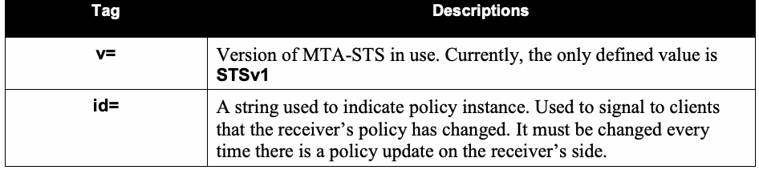
| タグ | 説明 |
| v= | 使用中のMTA-STSのバージョン。現在定義されている値はSTSv1のみ。 |
| id= | ポリシーのインスタンスを示す文字列。受信側ポリシーが変更されたことをクライアントへ通知するために使用する。受信側でポリシーを更新するたびに変更しなければならない。 |
The MTA-STS RR is published as a TXT RR using the receiving domain with _mta-sts prepended. For example, if the receiving domain is example.gov, the MTA-STS RR is:
MTA-STS RRは、受信ドメイン名の前に_mta-stsを付けたTXT RRとして公開する。たとえば受信ドメインがexample.govの場合、MTA-STS RRは次のとおり。
未レビュー訳_mta-sts.example.gov IN TXT “v=STSv1; id=20170101000000Z”
_mta-sts.example.gov IN TXT “v=STSv1; id=20170101000000Z”
未レビュー訳5.2.5.2 The MTA-STS Policy
5.2.5.2 MTA-STSポリシー
The receiver then published a detailed policy document at a well-known URL consisting of the domain with mta-sts prepended and .well-known/mta-sts.txt as the path. So, in the example above, the URL containing the MTA-STS policy for example.gov would be found at:
受信側は次に、ドメイン名の前にmta-stsを付け、パスを.well-known/mta-sts.txtとするWell-Known URLに詳細なポリシー文書を公開する。上記の例ではexample.govのMTA-STSポリシーを含むURLは次のとおり。
未レビュー訳https://mta-sts.example.gov/.well-known/mta-sts.txt
https://mta-sts.example.gov/.well-known/mta-sts.txt
未レビュー訳The policy must only be accessible via HTTPS and contains a plain/text resource used by the client to connect to the receiver. The document contains tag:values pairs, separated by newlines. The tags are:
ポリシーはHTTPS経由でのみアクセス可能でなければならず、クライアントが受信側への接続に使うプレーンテキストリソースを含む。文書には改行で区切られたタグ:値のペアが含まれる。タグは次のとおり。
Table 5-2: MTA-STS Policy Tags and Descriptions
表5-2: MTA-STSポリシーのタグと説明
| Tag | Description |
| version: | The version of MTA-STS in use by the receiver. Currently, the only defined value is STSv1 |
| mode: | The requested behavior of clients if a TLS validation failure or MX matching failure occurs. Defined values are enforce, meaning a client should reject the connection, report, meaning a client should stop the connection and send a TLS failure report (see Section XX) and none, meaning a client should continue with the connection. |
| mx: | A hostname of a mail receiver that should be present (as common name or subject alternative name) in any received X.509 server certificates sent during a TLS handshake. A receiver’s policy resource may contain multiple mx= tags, each on a separate line. |
| max_age: | Maximum lifetime of a policy (in seconds). Used as a time to live for a cached policy. Clients should recheck the receiver’s MTA-STS URL for a possible updated policy after the max_age has elapsed. |
原本PDFの抜粋画像
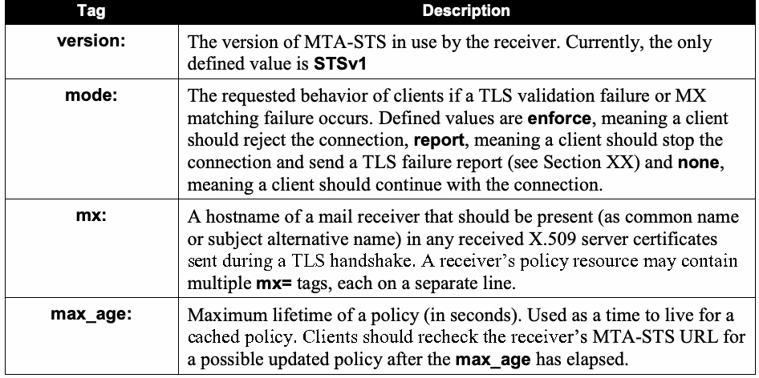
| タグ | 説明 |
| version: | 受信側が使用するMTA-STSのバージョン。現在定義されている値はSTSv1のみ。 |
| mode: | TLS検証またはMX照合に失敗した場合のクライアント動作。定義値はenforce (クライアントは接続を拒否する)、report (接続を停止してTLS失敗レポートを送信する。第XX節参照)、none (接続を続行する)。 |
| mx: | 受信TLSハンドシェイク中に送信されるX.509サーバー証明書のCommon NameまたはSubjectAltNameに含まれるべきメール受信サーバーのホスト名。受信側のポリシーリソースには複数のmx=タグを別々の行に含めることができる。 |
| max_age: | ポリシーの最大有効期間 (秒)。キャッシュされたポリシーの有効期限として使う。max_ageの経過後、クライアントは受信側のMTA-STS URLを再確認し、ポリシーが更新されていないか調べるべきである。 |
An example MTA-STS policy for example.gov may look like the following (found at the URL above):
example.gov用のMTA-STSポリシー例 (上記URLに掲載) は次のようになる。
未レビュー訳version: STSv1 mode: enforce mx: mail1.example.gov. mx: mail2.example.gov. max_age:86400
version: STSv1 mode: enforce mx: mail1.example.gov. mx: mail2.example.gov. max_age:86400
未レビュー訳In the above, example.gov lists two mail servers for the domain (mail1.example.gov and mail2.example.gov). The domain also sets its policy to enforce, meaning that if a client sees a server certificate that lacks mail1.example.gov or mail2.example.gov, or encounters some other PKIX validation failure, it is to reject the connection.
上記の例ではexample.govがドメインの2つのメールサーバー (mail1.example.govおよびmail2.example.gov) を列挙している。またポリシーをenforceに設定し、クライアントがmail1.example.govまたはmail2.example.govを含まないサーバー証明書、あるいはその他のPKIX検証失敗を検出した場合、接続を拒否するよう指示している。
未レビュー訳An MTA-STS compliant sender first checks for the presence of an MTA-STS policy at the receiver domain. First by checking its cache to see if an earlier discovered policy was found, or by looking in the DNS for the MTA-STS DNS RR. If it is a newly discovered policy, the client first gets the policy over HTTPS, then attempts to connect to each candidate MX listed in order in the policy. For each receiving mail server, the sender attempts to connect via STARTTLS, and validates the receiver’s server certificate. If successful, the message is delivered. If not, the sender moves on to the next mail server listed in the policy. If none of the connections are successful, the sender does not deliver the message.
MTA-STSに準拠する送信者は、まず受信ドメインにMTA-STSポリシーがあるか確認する。以前発見したポリシーがキャッシュにあるかを確認するか、DNSでMTA-STS DNS RRを検索する。新たに発見されたポリシーの場合、クライアントはまずHTTPS経由でポリシーを取得し、その後ポリシーに列挙された各MX候補へ順番に接続を試みる。各受信メールサーバーに対して送信者はSTARTTLSで接続し、受信側のサーバー証明書を検証する。成功すればメッセージを配信する。失敗した場合は次のメールサーバーへ進む。いずれの接続も成功しなければ、送信者はメッセージを配信しない。
At the time of writing, there are no publicly available MTA-STS implementations, and only a single MTA-STS Internet draft has been posted. Therefore, it is not possible for organizations to deploy MTA-STS aware clients at the present time.
執筆時点では一般公開されたMTA-STS実装はなく、MTA-STSインターネットドラフトも1つしか公開されていない。したがって、現時点では組織がMTA-STS対応クライアントを展開することはできない。
5.2.6 Comparing DANE and MTA-STS
5.2.6 DANEとMTA-STSの比較
Both DANE and MTA-STS were designed to assist opportunistic encryption and combat passive monitoring of SMTP connections. Receiving domains can support both if desired, to support all clients. Senders can implement both as well, as the current MTA-STS spec states that DANE DNSSEC responses take precedence. The basic merits of both are summarized in the table below:
DANEとMTA-STSはいずれも日和見暗号化を支援し、SMTP接続の受動的監視に対抗するよう設計されている。すべてのクライアントに対応するため、受信ドメインは希望に応じて両方をサポートできる。送信者側も両方を実装できる。現行のMTA-STS仕様ではDNSSECによるDANE応答が優先される。両方式の主な利点を以下の表にまとめる。
Table 5-3: Comparing DANE and MTA-STS
表5-3: DANEとMTA-STSの比較
| Feature | DANE | MTA-STS |
| DNS RRType used | TLSA RRs | TXT RRs |
| Client Requirements | DNSSEC | HTTPS |
| CA scoping? | Yes | No |
| PKIX required? | No always | Yes |
| Self-Signed certificates acceptable? | Yes (when using CU=3) | No |
| Failure reporting to receiver? | No | Yes |
| Client behavior on failure | Close connection | Depends on policy |
原本PDFの抜粋画像
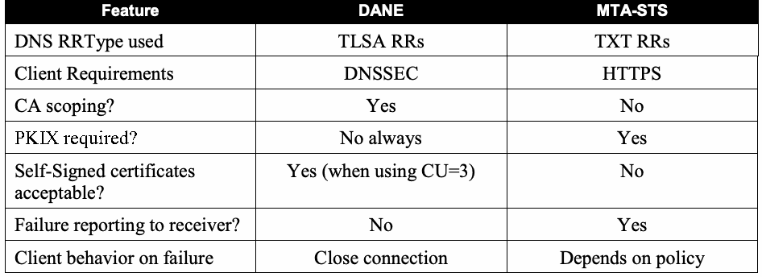
| 機能 | DANE | MTA-STS |
| 使用するDNS RRType | TLSA RR | TXT RR |
| クライアント要件 | DNSSEC | HTTPS |
| CAの範囲指定? | あり | なし |
| PKIX必須? | 常にではない | はい |
| 自己署名証明書を許容? | はい (CU=3使用時) | いいえ |
| 受信側への失敗報告? | いいえ | はい |
| 失敗時のクライアント動作 | 接続を閉じる | ポリシーに依存 |
Security Recommendation 5-3: Receiving domains should implement protocols to signal TLS usage to clients. Receivers should implement DANE, MTA-STS (or both) for all mail servers listed in the domain’s MX Resource Record set.
セキュリティ推奨事項5-3: 受信ドメインはTLSの使用をクライアントに通知するプロトコルを実装すべきである。受信側はドメインのMX Resource Recordセットに列挙されたすべてのメールサーバーにDANE、MTA-STS、または両方を実装すべきである。
Security Recommendation 5-4: As federal agency use requires certificate chain authentication against a known CA, Certificate Usage DANE-TA(2) is recommended when deploying DANE to specify the CA that the agency has chosen to employ. Agencies should also publish a DANE-EE(3) RR alongside the DANE-TA(2) RR for increased reliability. In both cases the TLSA record should use a selector of SPKI(1) and a Matching field type of SHA2-256(1), for parameter values of “3 1 1” and “2 1 1” respectively.
セキュリティ推奨事項5-4: 連邦政府での利用では既知のCAに対する証明書チェーン認証が必要なため、DANE導入時には機関が採用するCAを指定するCertificate Usage DANE-TA(2)を推奨する。信頼性を高めるため、機関はDANE-TA(2) RRに加えてDANE-EE(3) RRも公開すべきである。どちらの場合も、TLSAレコードはselectorにSPKI(1)、Matching field typeにSHA2-256(1)を使用し、それぞれパラメーター値を「3 1 1」「2 1 1」とする。
未レビュー訳5.2.7 Reporting TLS Errors to Senders
5.2.7 TLSエラーの送信者への報告
Currently, there is no way for an MTA to report TLS failures to a receiving domain. If a sending MTA cannot establish a TLS protected connection, there is no automated signaling to the receiver as to the nature of the failure, only the receiver’s own logs. Previously, most MTAs would simply continue to connect without TLS and deliver the mail. However, with options such as MTA-STS (Section 5.2.5) or REQUIRETLS (Section 5.2.3), TLS errors will cause more failures in delivery.
現在、MTAがTLS失敗を受信ドメインへ報告する方法はない。送信MTAがTLS保護接続を確立できなくても、失敗の性質を受信側に通知する自動機構はなく、受信側自身のログしかない。従来ほとんどのMTAはTLSなしで接続を続け、メールを配信していた。しかしMTA-STS (第5.2.5節) やREQUIRETLS (第5.2.3節) などのオプションでは、TLSエラーにより配信失敗が増える。
There is a way to have a standard way to report TLS failures back to receivers known as SMTP TLS Reporting [RFC8460]. The concept is similar to DMARC (see Section 4.6) where receivers send failure reports back to senders, only here senders send the failure report. The specification includes the report format as well as how to signal reporting over SMTP or HTTPS. HTTPS is given as an option for senders that wish to use a secure channel but believe SMTP over TLS will not work. Also, like DMARC, the location (via email or HTTPS) where reports should be sent are published in a DNS TXT resource record that the sender can query for in the receiver’s domain. Here the TXT RR has a well-known string _smtp.-tls prepended and using the following tag:value pairs each separated by a semicolon ‘;’:
SMTP TLS Reporting [RFC8460] と呼ばれる標準方式で、TLS失敗を受信側に報告できる。概念はDMARC (第4.6節参照) と似ている。受信側が送信者へ失敗レポートを返すのではなく、この場合は送信者が失敗レポートを送る。仕様にはレポート形式と、SMTPまたはHTTPS経由で報告を通知する方法が含まれる。SMTP over TLSが機能しないと考えるものの、安全なチャネルを利用したい送信者向けにHTTPSも選択肢として示される。またDMARCと同様、レポート送信先 (メールまたはHTTPS) は受信側ドメインのDNS TXTリソースレコードに公開され、送信者が検索できる。ここでは_txt RR名の前に既知の文字列 _smtp.-tls を付け、次のタグ:値ペアをそれぞれセミコロン「;」で区切る。
未レビュー訳Table 5-4: TLS Reporting Value Tags and Descriptions
表5-4: TLSレポート値タグと説明
| Tag | Description |
| v= | The version string. Default is TLSRPTv1 |
| rua= | How the receiver wishes to have reports submitted. Options are mailto: (for email) or https (for a URI to submit reports via a POST command). |
原本PDFの抜粋画像
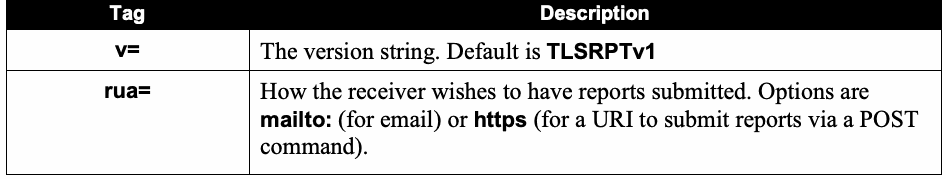
| タグ | 説明 |
| v= | バージョン文字列。既定値はTLSRPTv1。 |
| rua= | 受信側がレポートの提出を希望する方法。mailto: (メール) またはhttps (POSTコマンドでレポートを提出するURI) を指定する。 |
An example TLS reporting RR is given below for example.gov:
example.gov用のTLSレポートRRの例を以下に示す。
未レビュー訳_smtp-tlsrpt.example.gov IN TXT
_smtp-tlsrpt.example.gov IN TXT
未レビュー訳“v=TLSRPTv1;rua=https://reporttls.example.gov/reports”
“v=TLSRPTv1;rua=https://reporttls.example.gov/reports”
未レビュー訳Indicating that TLS failure reports when connecting to example.gov mail receivers should be sent to the URI listed in the rua tag. A reporting RR may have multiple values in the rua tag, indicating several alternative means to send reports.
example.govのメール受信者への接続時に発生したTLS失敗レポートは、ruaタグに記載されたURIへ送る。レポートRRのruaタグには複数の値を設定でき、複数の代替レポート送信先を示せる。
未レビュー訳5.3 Email Content Security
5.3 メール内容のセキュリティ
End users and their institutions have an interest in rendering the contents of their messages completely secure against unauthorized eyes. �ey can take direct control over message content security using either S/MIME [RFC5751] or OpenPGP [RFC4880]. In each of these protocols, the sender signs a message with a private key, and the receiver authenticates the signature with the public key obtained (somehow) from the sender. Signing provides a guarantee of the message source, but any man in the middle can use the public key to decode and read the signed message. For proof against unwanted readers, the sender encrypts a message with the recipient’s public key or with a generated symmetric key that is encrypted with the receiver’s public key which is obtained (somehow) from the receiver. �e receiver decrypts the message with the corresponding private key, or a symmetric key encrypted with the recipient’s public key, and the message content is kept confidential from mailbox to mailbox. Both S/MIME and OpenPGP are protocols that facilitate signing and encryption, but secure open distribution of public keys is still a hurdle. Two recent DANE protocols have been proposed to address this. �e SMIMEA (for S/MIME certificates) and OPENPGPKEY (for OpenPGP keys) initiatives specify new DNS RR types for storing email end user key material in the DNS. S/MIME and SMIMEA are described in subsection 5.3.1, while OpenPGP and OPENPGPKEY are described in subsection 5.3.2.
エンドユーザーとその所属機関は、メッセージ内容を未認可の閲覧者から完全に保護したいと考える。S/MIME [RFC5751] またはOpenPGP [RFC4880] を使って、メッセージ内容のセキュリティを直接制御できる。どちらのプロトコルでも、送信者は秘密鍵でメッセージに署名し、受信者は送信者から (何らかの方法で) 取得した公開鍵で署名を認証する。署名はメッセージの出所を保証するが、中間者は公開鍵を用いて署名付きメッセージを復号して読むことができる。望ましくない読者から保護するため、送信者は受信者の公開鍵または生成した対称鍵でメッセージを暗号化する。後者の対称鍵は受信者から (何らかの方法で) 取得した公開鍵で暗号化する。受信者は対応する秘密鍵、または受信者の公開鍵で暗号化された対称鍵を使ってメッセージを復号し、メールボックス間でメッセージ内容を機密に保つ。S/MIMEとOpenPGPはいずれも署名と暗号化を容易にするプロトコルだが、公開鍵を安全かつオープンに配布することは依然として課題である。これに対処するため、最近2つのDANEプロトコルが提案された。SMIMEA (S/MIME証明書用) とOPENPGPKEY (OpenPGP鍵用) の各取り組みは、エンドユーザーメール鍵情報をDNSに格納する新しいDNS RRタイプを規定する。S/MIMEとSMIMEAは第5.3.1小節、OpenPGPとOPENPGPKEYは第5.3.2小節で説明する。
未レビュー訳5.3.1 S/MIME and SMIMEA
5.3.1 S/MIMEおよびSMIMEA
S/MIME is a protocol that allows email users to authenticate messages by digitally signing with a private key and including the public key in an attached certificate. �e recipient of the message performs a PKIX validation on the certificate, authenticating the message’s originator. On the encryption side, the S/MIME sender typically encrypts the message text using a generated symmetric key, which is encrypted in turn with the public key of the recipient, which was previously distributed using some other, out of band, method. Within an organization it is common to obtain a correspondent’s S/MIME certificate from an LDAP directory server. Another way to obtain a S/MIME certificate is by exchanging digitally signed messages.
S/MIMEは、メールユーザーが秘密鍵でデジタル署名し、公開鍵を添付証明書に含めることでメッセージを認証できるプロトコルである。メッセージの受信者は証明書にPKIX検証を行い、メッセージ送信者を認証する。暗号化する場合、S/MIME送信者は通常、生成した対称鍵でメッセージ本文を暗号化し、その対称鍵を別の帯域外の方法で事前配布された受信者の公開鍵で暗号化する。組織内ではLDAPディレクトリサーバーから通信相手のS/MIME証明書を取得することが多い。デジタル署名付きメッセージを交換してS/MIME証明書を取得する方法もある。
未レビュー訳S/MIME had the advantage of being based on X.509 certificates, allowing existing software and procedures developed for the PKI to be used for email. Hence, where the domain-owning enterprise has an interest in securing the message content, S/MIME is preferred.
S/MIMEはX.509証明書に基づくため、PKI向けに開発された既存のソフトウェアおよび手順をメールに利用できるという利点がある。したがって、ドメイン所有企業がメッセージ内容の保護を望む場合はS/MIMEが望ましい。
�e Secure/Multipurpose Internet Mail Extensions (S/MIME) [RFC5751] describes a protocol that will sign, encrypt or compress some, or all, of the body contents of a message. Signing is done using the sender’s private key, while key encipherment is done with the recipient’s known public key. Message encryption using the data encryption key, signing and compression can be done in any order and any combination. �e operation is applied to the body, not the RFC 5322 headings of the message. In the signing case, the certificate containing the sender’s public key is also attached to the message.
Secure/Multipurpose Internet Mail Extensions (S/MIME) [RFC5751] は、メッセージ本文の一部または全部に署名、暗号化、または圧縮を行うプロトコルを説明する。署名には送信者の秘密鍵を、鍵暗号化には既知の受信者公開鍵を使う。データ暗号化鍵を用いたメッセージ暗号化、署名、圧縮は任意の順序と組合せで実行できる。操作対象はメッセージ本文であり、RFC 5322ヘッダーではない。署名する場合、送信者の公開鍵を含む証明書もメッセージに添付される。
未レビュー訳�e receiver uses the associated public key to authenticate the digital signature over the message, demonstrating proof of origin and non-repudiation. �e usual case is for the receiver to authenticate the supplied certificate using PKIX back to the Certificate Authority. Users who want more assurance that the key supplied is bound to the sender’s domain can deploy the SMIMEA mechanism [RFC8162] in which the certificate and key can be independently retrieved from the DNS and authenticated per the DANE mechanism, similar to that described in Sub-section 5.2.5, above. �e user who wants to encrypt a message retrieves the receiver’s public key: which may have been sent on a prior signed message23. If no prior signed message is at hand, or if the user seeks more authentication than PKIX, then the key can be retrieved from the DNS in an SMIMEA record. �e receiver decrypts the data encryption key using the corresponding private key, decrypts the message using the newly decrypted key and reads or stores the message as appropriate.
受信者は対応する公開鍵を使ってメッセージのデジタル署名を認証し、出所証明と否認防止を確認する。通常はPKIXを用いてCAまで添付証明書を認証する。提供された鍵が送信者ドメインに結び付いていることをより強く保証したいユーザーは、SMIMEA機構 [RFC8162] を導入できる。この機構では証明書と鍵をDNSから独立して取得し、前述の第5.2.5小節と同様のDANE機構で認証できる。メッセージを暗号化したいユーザーは受信者の公開鍵を取得する。これは以前の署名付きメッセージで送られている場合がある。23 以前の署名付きメッセージがない場合、またはPKIXより強い認証を求める場合、鍵をDNSのSMIMEAレコードから取得できる。受信者は対応する秘密鍵でデータ暗号化鍵を復号し、新たに復号した鍵でメッセージを復号し、必要に応じて読み取るか保存する。
未レビュー訳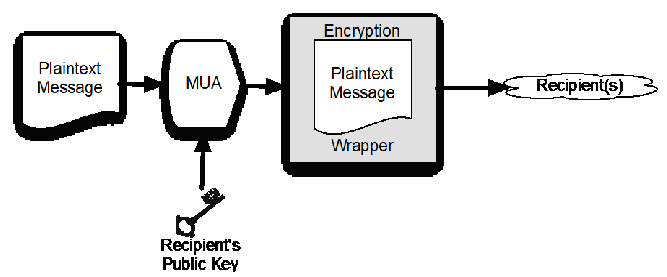
Figure 5-2: Sending an Encrypted Email
図5-2: 暗号化メールの送信
To send an S/MIME encrypted message (Fig 2-4) to a user, the sender must first obtain the recipient's X.509 certificate and may (optionally) validate the certificate to a trusted root, if possible. �e sender then uses the certificate’s public key to generate a data encryption key and use that generated key to encrypt the composed message. In this case the sender must possess the recipient's certificate before sending the message.
ユーザーにS/MIME暗号化メッセージ (図2-4) を送るには、送信者はまず受信者のX.509証明書を取得し、可能であれば (任意で) 信頼済みルートまで証明書を検証する。その後、送信者は証明書の公開鍵を使ってデータ暗号化鍵を生成し、その鍵で作成済みメッセージを暗号化する。この場合、送信者はメッセージ送信前に受信者の証明書を保有していなければならない。
未レビュー訳An enterprise looking to use S/MIME to provide email confidentiality will need to obtain or produce credentials for each end user in the organization. An organization can generate its own root certificate and give its members a certificate generated from that root, or purchase certificates for each member from a well-known Certificate Authority (CA).
メールの機密性をS/MIMEで保護したい企業は、組織内のエンドユーザーそれぞれについて認証情報を取得または作成する必要がある。組織は独自のルート証明書を生成し、そのルートから生成した証明書を構成員に付与できる。または、よく知られた認証局 (CA) から各構成員向け証明書を購入できる。
Using S/MIME for end-user encryption is further complicated by the need to distribute each end-users’ certificate to potential senders. Traditionally this is done by having correspondents exchange email messages that are digitally signed that includes the sender’s encryption certificate, but not encrypted. Alternatively, organizations can configure LDAP servers to make S/MIME public keys available as part of a directory lookup; mail clients such as Outlook and Apple Mail can be configured to query LDAP servers for public keys necessary for message encryption.
エンドユーザー暗号化にS/MIMEを使用するには、各エンドユーザーの証明書を送信候補者に配布する必要があり、さらに複雑となる。従来は、送信者の暗号化証明書を含むデジタル署名付き (ただし暗号化されていない) メールを通信相手間で交換していた。別の方法として、組織はLDAPサーバーを、ディレクトリ検索の一部としてS/MIME公開鍵を取得できるように構成することができる。OutlookやApple Mailなどのメールクライアントは、メッセージ暗号化に必要な公開鍵をLDAPサーバーに問い合わせるよう構成できる。
未レビュー訳5.3.1.1 S/MIME Recommendations
5.3.1.1 S/MIMEの推奨事項
Official use requires certificate chain authentication against a known Certificate Authority.
公的用途では、既知の認証局に対する証明書チェーン認証が必要である。
未レビュー訳Current MUAs use S/MIME private keys to decrypt the data encryption key that was used to encrypt the email message each time that it is displayed, but leave the message encrypted in the email store. �is mode of operation is not recommended, as it forces the recipient of the encrypted email to maintain their private key indefinitely. Instead, the email should be decrypted prior to being stored in the mail store. �e mail store, in turn, should be secured using an appropriate cryptographic technique (for example, disk encryption), extending protection to both encrypted and unencrypted email. If it is necessary to store mail encrypted on the mail server (for example, if the mail server is outside the control of the end-user’s organization), then the messages should be re-encrypted with a changeable session key on a message-by-message basis.
現在のMUAはメールメッセージが表示されるたびにS/MIME秘密鍵を使ってメール暗号化に用いたデータ暗号化鍵を復号するが、メールストア内のメッセージは暗号化されたままにする。この方式は、暗号化メールの受信者が秘密鍵を無期限に維持する必要があるため推奨されない。代わりにメールストアへ保存する前にメールを復号すべきである。メールストア自体は適切な暗号技術 (例: ディスク暗号化) で保護し、暗号化メールと非暗号化メールの両方を守るべきである。メールサーバーがエンドユーザー組織の管理外にあるなどの理由で、サーバー上にメールを暗号化状態で保存する必要がある場合、メッセージごとに変更可能なセッション鍵で再暗号化すべきである。
未レビュー訳Where the DNS performs canonicalization of email addresses, a client requesting a hash encoded OPENPGPKEY or SMIMEA RR shall perform no transformation on the left part of the address offered, other than UTF-8 and lower-casing. �is is an attempt to minimize the queries needed to discover an S/MIME certificate in the DNS for newly learned email addresses and allow for the initial email to be sent encrypted (if desired).
DNSがメールアドレスを正規化する場合、ハッシュ化されたOPENPGPKEYまたはSMIMEA RRを要求するクライアントは、アドレスの左側部分に対してUTF-8と小文字化以外の変換を行ってはならない。これは、新たに知ったメールアドレスについてDNSからS/MIME証明書を発見するための問い合わせを最小限にし、最初のメールを暗号化して送信できるようにする試みである。
未レビュー訳5.3.2 OpenPGP and OPENPGPKEY
5.3.2 OpenPGPおよびOPENPGPKEY
OpenPGP [RFC4880] is a proposed Internet Standard for providing authentication and confidentiality for email messages. Although similar in purpose to S/MIME, OpenPGP is distinguished by using message and key formats that are built on the “Web of Trust” model (see Section 2.4.3).
OpenPGP [RFC4880] は、メールメッセージに認証と機密性を提供するインターネット標準案である。目的はS/MIMEと似ているが、メッセージ形式と鍵形式に「Web of Trust」モデルを採用する点が異なる (第2.4.3節参照)。
�e OpenPGP standard is implemented by PGP-branded software from Symantec24 and by the open source GNU Privacy Guard.25 �ese OpenPGP programs have been widely used by activists and security professionals for many years but have never gained a widespread following among the general population owing to usability programs associated with installing the software, generating keys, obtaining the keys of correspondents, encrypting messages, and decrypting messages. Academic studies have found that even “easy-to-use” versions of the software that received good reviews in the technical media for usability were found to be not usable when tested by ordinary computer users. [WHITTEN1999]
OpenPGP標準はSymantec24のPGPブランドソフトウェアおよびオープンソースのGNU Privacy Guard25に実装されている。これらのOpenPGPプログラムは活動家やセキュリティ専門家に長年広く使われてきたが、ソフトウェアのインストール、鍵生成、通信相手の鍵取得、メッセージ暗号化・復号に関する使いやすさの問題により、一般ユーザーには広く普及していない。学術研究では、技術系メディアで使いやすいと高評価を得たソフトウェアであっても、一般のコンピューターユーザーによる試験では使いにくいと判明している [WHITTEN1999]。
未レビュー訳Key distribution was an early usability problem that OpenPGP developers attempted to address. Initial efforts for secure key distribution involved key distribution parties, where all participants are known to and can authenticate each other. �is method does a good job of authenticating users to each other and building up webs of trust, but it does not scale at all well, and it is not greatly useful where communicants are geographically widely separated.
鍵配布は初期からの使いやすさの課題であり、OpenPGP開発者はこれへの対処を試みてきた。安全な鍵配布に向けた初期の取り組みでは、すべての参加者が互いを知り、認証できる鍵配布会合を用いた。この方式は相互のユーザー認証と信頼の網の構築には有効だが、拡張性に乏しく、通信相手が地理的に離れている場合にはあまり役立たない。
未レビュー訳To facilitate the distribution of public keys, a number of publicly available key servers have been set up and have been in operation for many years. Among the more popular of these is the pool of SKS key servers26. Users can freely upload public keys on an opportunistic basis. In theory, anyone wishing to send a PGP user encrypted content can retrieve that user’s public key from the SKS server, use it to encrypt a generated data encryption key used to encrypt the message, and send it. However, there is no authentication of the identity of the key owners; an attacker can upload their own key to the key server, then intercept the email sent to the unsuspecting user.
公開鍵の配布を容易にするため、複数の公開鍵サーバーが設置され長年運用されている。よく知られたものの1つがSKS鍵サーバー群26である。ユーザーは任意で公開鍵を自由にアップロードできる。理論上、PGPユーザーに暗号化コンテンツを送りたい者はSKSサーバーから公開鍵を取得し、その鍵で生成済みデータ暗号化鍵を暗号化してメッセージを暗号化し、送信できる。しかし、鍵所有者のID認証は行われない。攻撃者が鍵サーバーに自身の鍵をアップロードし、気付かないユーザー宛てのメールを傍受する可能性がある。
未レビュー訳A renewed interest in personal control over email authentication and encryption has led to further work within the IETF on key sharing, and the DANE mechanism [RFC7929] is being adopted to place a domain and user’s public key in an OPENPGPKEY record in the DNS. Unlike DANE/TLS and SMIMEA, OPENPGPKEY does not use X.509 certificates, or require full PKIX authentication as an option. Instead, full trust is placed in the DNS records as certified by DNSSEC: �e domain owner publishes a public key and minimal “certificate” information. �e key is available for the receiver of a signed message to authenticate, or for the sender of a message to encrypt a data encryption key.
メール認証と暗号化を個人がより制御したいという関心が再び高まり、鍵共有に関するIETFでの検討が進んでいる。DANE機構 [RFC7929] を採用し、ドメインおよびユーザーの公開鍵をDNSのOPENPGPKEYレコードに格納する取り組みが進行中である。DANE/TLSやSMIMEAと異なり、OPENPGPKEYはX.509証明書を使わず、選択肢としての完全なPKIX認証も要求しない。代わりにDNSSECで認証されたDNSレコードを全面的に信頼する。ドメイン所有者は公開鍵と最小限の「証明書」情報を公開する。この鍵は、署名付きメッセージの受信者による認証、またはメッセージ送信者によるデータ暗号化鍵の暗号化に利用できる。
未レビュー訳Security Recommendation 5-5: For Federal use, OpenPGP is not preferred for message confidentiality. �e use of S/MIME with a certificate signed by a known CA is preferred.
セキュリティ推奨事項5-5: 連邦政府用途では、メッセージ機密性のためにOpenPGPは推奨されない。既知のCAが署名した証明書を用いるS/MIMEが望ましい。
未レビュー訳5.3.2.1 Recommendations
5.3.2.1 推奨事項
Where an institution requires signing and encryption of end-to-end email, S/MIME is preferred over OpenPGP. Like the S/MIME discussion above, if used, the email should be decrypted prior to being stored in the mail store. �e mail store, in turn, should be secured using an appropriate cryptographic technique (for example, disk encryption), extending protection to both encrypted and unencrypted email. If it is necessary to store mail encrypted on the mail server (for example, if the mail server is outside the control of the end-user’s organization), then the messages should be re-encrypted with a changeable session key on a message-by-message basis. In addition, where the DNS performs canonicalization of email addresses, a client requesting a hash encoded OPENPGPKEY or SMIMEA RR shall perform no transformation on the left part of the address offered, other than UTF-8 and lower-casing.
機関がエンドツーエンドメールの署名と暗号化を必須とする場合、OpenPGP より S/MIME が望ましい。上記の S/MIME の説明と同様に、使用する場合、メールはメールストアに保存する前に復号するべきである。さらにメールストア自体を適切な暗号技術（例: ディスク暗号化）で保護し、暗号化メールと非暗号化メールの双方を保護するべきである。メールサーバー上でメールを暗号化した状態で保管する必要がある場合（例: メールサーバーがエンドユーザー組織の管理外にある場合）、メッセージごとに変更可能なセッション鍵を使って再暗号化するべきである。また DNS がメールアドレスを正規化する場合、ハッシュ符号化された OPENPGPKEY または SMIMEA RR を要求するクライアントは、提示されたアドレスの左側部分について UTF-8 変換と小文字化以外の変換を行ってはならない。
未レビュー訳5.4 Security Recommendation Summary
5.4 セキュリティ推奨事項の要約
Security Recommendation 5-1: Organizations are recommended only use approved TLS versions listed in NIST SP 800-52 with FIPS approved cryptographic modules.
セキュリティ推奨事項 5-1: 組織は NIST SP 800-52 に記載された承認済み TLS バージョンのみを、FIPS 承認済み暗号モジュールとともに使用することが推奨される。
Security Recommendation 5-2: TLS-capable servers should prompt clients to invoke the STARTTLS command. TLS clients should attempt to use STARTTL for SMTP, either initially, or issuing the command when offered.
セキュリティ推奨事項 5-2: TLS 対応サーバーは、クライアントに STARTTLS コマンドの使用を促すべきである。TLS クライアントは SMTP で STARTTLS の使用を試みるべきであり、最初から使用するか、提示されたときにコマンドを発行する。
未レビュー訳Security Recommendation 5-3: Receiving domains should implement protocols to signal TLS usage to clients. Receivers should implement DANE, MTA-STS (or both) for all mail servers listed in the domain’s MX Resource Record set.
セキュリティ推奨事項 5-3: 受信側ドメインは、クライアントに TLS の使用を通知するプロトコルを実装するべきである。受信側はドメインの MX リソースレコードセットに記載されたすべてのメールサーバーに DANE、MTA-STS（または両方）を実装するべきである。
Security Recommendation 5-4: Official use of digitally signed/encrypted email requires certificate chain authentication against a known CA and using DANE-TA Certificate Usage values when deploying DANE.
セキュリティ推奨事項 5-4: 公式用途のデジタル署名／暗号化メールでは、既知の CA に対する証明書チェーン認証が必要であり、DANE を導入する際は DANE-TA 証明書使用値を使う。
未レビュー訳Security Recommendation 5-5: Do not use OpenPGP for message confidentiality. Instead, use S/MIME with a certificate that is signed by a known CA.
セキュリティ推奨事項 5-5: メッセージの機密性保護に OpenPGP を使用しない。代わりに既知の CA が署名した証明書を使う S/MIME を使用する。
6 Reducing Unsolicited Bulk Email
6 迷惑な一括メールの削減
未レビュー訳6.1 Introduction
6.1 序論
Unsolicited Bulk Email (UBE) has an analogy with “beauty”, in that it is often in the eye of the beholder. To some senders, it is a low-cost marketing campaign for a valid product or service. To many receivers and administrators, it is a scourge that fills up message inboxes and can be a vector for criminal activity or malware. Both of these views can be true, as the term Unsolicited Bulk Email (or spam, as it is often called) comprises a wide variety of email received by an enterprise.
迷惑な一括メール（UBE）は「美」と同様、見る人によって評価が異なる。送信者の中には、有効な製品またはサービスの低コストなマーケティングキャンペーンと考える人もいる。一方、多くの受信者や管理者にとって、受信箱を埋め尽くし、犯罪行為やマルウェアの媒介となり得る厄介なものである。どちらの見方も正しく、迷惑な一括メール（しばしばスパムと呼ばれる）という用語は、企業が受信する多種多様なメールを含む。
6.2 Why an Organization May Want to Reduce Unsolicited Bulk Email
6.2 組織が迷惑な一括メールを削減する理由
While some unsolicited email is from legitimate marketing firms and may only rise to the level of being a nuisance, it can also lead to increased resource usage in the enterprise. UBE can fill up user inbox storage, consume bandwidth in receiving email and consume end users' time as they sort through and delete unwanted email. However, some UBE may rise to the level of being a legitimate threat to the organization in the form of fraud, illegal activity, or the distribution of malware.
未承諾メールの中には正規のマーケティング会社が送信し、単に迷惑な程度のものもあるが、企業内のリソース使用量を増加させることもある。UBE はユーザーの受信箱の保存領域を埋め、メール受信の帯域幅を消費し、不要なメールを確認して削除するエンドユーザーの時間を奪う。一方、詐欺、違法行為、マルウェア配布という形で組織に対する正当な脅威となる UBE もある。
Depending on the organization's jurisdiction, UBE may include advertisements for goods or services that are illegal. Enterprises or organizations may wish to limit their employees' (and users') exposure to these offers. Other illegitimate UBE are fraud attempts aimed at the users of a given domain and used to obtain money or private information. Lastly, some UBE is simply a Trojan horse aimed at trying to infiltrate the enterprise to install malware.
組織の法域によっては、UBE に違法な商品またはサービスの広告が含まれる場合がある。企業や組織は、従業員（およびユーザー）がこうした広告に触れる機会を制限したい場合がある。他の不正な UBE は、特定ドメインのユーザーを狙い、金銭または個人情報を得ようとする詐欺である。最後に、単なるトロイの木馬として企業への侵入とマルウェアのインストールを狙う UBE もある。
未レビュー訳6.3 Techniques to Reduce Unsolicited Bulk Email
6.3 迷惑な一括メールを削減する技法
�ere are a variety of techniques that an email administrator can use to reduce the amount of UBE delivered to the end users’ inboxes. Enterprises can use one or multiple technologies to provide a layered defense against UBE since no solution is completely effective against all UBE. Administrators should consider using a combination of tools for processing incoming, and outgoing email.
メール管理者がエンドユーザーの受信箱へ配信される UBE の量を減らすために使える技法はさまざまである。UBE に対して完全に有効な解決策はないため、企業は1つまたは複数の技術を使って多層防御を構成できる。管理者は受信メールと送信メールの処理に複数のツールを組み合わせることを検討するべきである。
未レビュー訳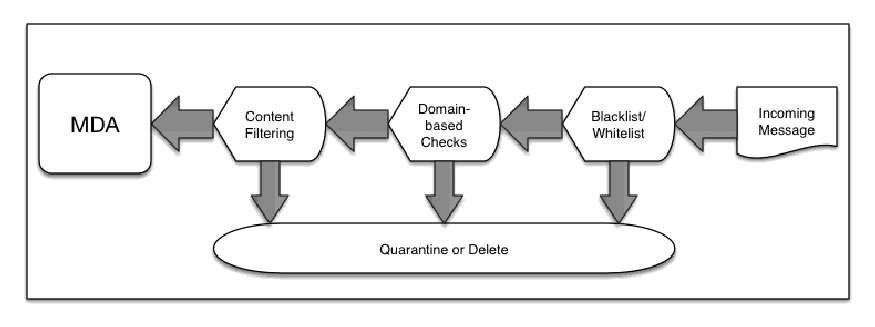
Figure 6-1: Inbound email "pipeline" for UBE filtering
図6-1: UBE フィルタリング用の受信メール「パイプライン」
未レビュー訳�ese techniques can be performed in serial as a "pipeline" for both incoming and outgoing email [REFARCH]. Less computationally expensive checks should be done early in the pipeline to prevent wasted effort later. For example, a UBE/SMTP connection that would be caught and refused by a blacklist filter should be done before more computationally expensive content analysis is performed on an email that will ultimately be rejected or deleted. In Figure 6-1, an example pipeline for incoming email checks is given. Figure 6-2 shows an example outbound pipeline for email checks.
これらの技法は受信メールおよび送信メールの両方で、直列につないだ「パイプライン」として実施できる [REFARCH]。後段での無駄な処理を防ぐため、計算負荷が低いチェックをパイプラインの早い段階で行うべきである。たとえばブラックリストフィルターで検出され拒否される UBE／SMTP 接続は、最終的に拒否または削除されるメールに対して、より計算負荷の高いコンテンツ分析を行う前に処理するべきである。図6-1に受信メールチェックのパイプライン例を示す。図6-2は送信メールチェックのパイプライン例である。
未レビュー訳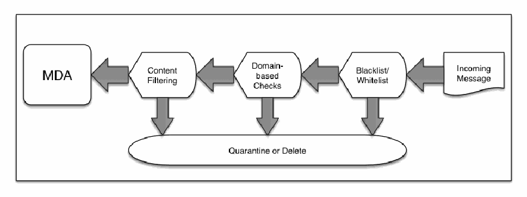
Figure 6-2: Outbound email "pipeline" for UBE filtering
図6-2: UBE フィルタリング用の送信メール「パイプライン」
6.3.1 Approved/Non-approved Sender Lists
6.3.1 承認済み／未承認送信者リスト
�e most basic technique to reduce UBE is to simply accept or deny messages based on some list of known bad or known trusted senders. �is is often the first line of UBE defense utilized by an enterprise because, if a message was received from a known bad sender, it could reasonably be dropped without spending resources in further processing. Or, email originating from a trusted source could be marked so as not to be subject to other anti-UBE checks and inadvertently deleted or thrown out.
UBE を削減する最も基本的な技法は、既知の悪意ある送信者または既知の信頼できる送信者のリストに基づいてメッセージを受け入れるか拒否することである。既知の悪意ある送信者からのメッセージは追加処理のリソースを使わずに破棄できるため、これは企業がよく使う最初の UBE 防御策である。また、信頼できる送信元からのメールには印を付け、他の UBE 対策チェックの対象から外して誤って削除または破棄されないようにできる。
未レビュー訳A non-approved sender list can be composed of individual IP addresses, IP blocks, or sending domain bases [RFC5782]. For example, it is normal for enterprises to refuse email from senders using a source address that has not be allocated, or part of a block reserved for private use (such as 192.168/16). Or an administrator could choose to not accept email from a given domain if there is no reason to assume that they have any interaction with senders using a given domain. �is could be the case where an organization does not do business with certain countries and may refuse mail from senders using those country code Top Level Domains (ccTLDs).
未承認送信者リストは個々の IP アドレス、IP ブロック、送信元ドメインに基づいて作成できる [RFC5782]。たとえば、割り当てられていない、またはプライベート利用向けに予約されたブロック（例: 192.168/16）に属する送信元アドレスを使う送信者からのメールを企業が拒否するのは一般的である。また、特定ドメインの送信者とやり取りする根拠がなければ、管理者はそのドメインからのメールを受け入れないことを選択できる。たとえば、ある国と取引しない組織が、その国コードトップレベルドメイン（ccTLD）を使用する送信者からのメールを拒否する場合がある。
未レビュー訳Given the changing nature of malicious UBE, static lists are not effective. Instead, a variety of third party services produce dynamic lists of known bad UBE senders that enterprise administrators can subscribe to and use. �ese lists are typically accessed by DNS queries and include the non-commercial ventures such as the Spamhaus Project27 and the Spam and Open
悪意ある UBE は変化するため、静的リストは有効でない。代わりに、企業管理者が登録して利用できる、既知の悪意ある UBE 送信者の動的リストを複数の第三者サービスが提供している。こうしたリストは通常 DNS クエリで参照され、Spamhaus Project²⁷ や Spam and Open
未レビュー訳Relay Blocking System (SORBS)28, as well as commercial vendors such as SpamCop.29 An extensive list of DNS-based blacklists can be found at http://www.dnsbl.info. Because an individual service may be unavailable, many organizations configure their mailers to use multiple blacklists. Email administrators should use these services to maintain a dynamic reject list rather than attempting to maintain a static list for a single organization.
Relay Blocking System（SORBS）²⁸ など非営利サービスと、SpamCop²⁹ などの商用ベンダーが含まれる。DNS ベースブラックリストの広範な一覧は http://www.dnsbl.info にある。個別サービスが利用できなくなる場合があるため、多くの組織は複数のブラックリストを使うようメールシステムを構成する。メール管理者は単一組織用の静的リストを自ら維持するのではなく、これらのサービスを使って動的な拒否リストを維持するべきである。
未レビュー訳An approved list is the opposite of a non-approved list. Instead of refusing email from a list of known bad actors, an approved list is composed of known trusted senders. It is often a list of business partners, community members, or similar trusted senders that have an existing relationship with the organization or members of the organization. �is does not mean that all email sent by members on an approved list should be accepted without further checks. Email sent by an approved sender may not be subject to other anti-UBE checks but may still be checked for possible malware or malicious links. Email administrators wishing to use approved list should be very stringent about which senders make the list. Frequent reviews of the list should also occur to remove senders when the relationship ends or add new members when new relationships are formed. Some email tools allow for end users to create their own approved list, so administrators should make sure that end users do not approve a known bad sender.
承認済みリストは未承認リストの反対である。既知の悪意ある行為者からのメールを拒否する代わりに、既知の信頼できる送信者で構成される。多くの場合、組織またはその構成員と既存の関係を持つ取引先、コミュニティメンバーなどのリストである。承認済みリストのメンバーから送られたすべてのメールを追加チェックなしで受け入れるという意味ではない。承認済み送信者からのメールを他の UBE チェック対象外にしても、マルウェアや悪意あるリンクがないかは確認できる。承認済みリストを使うメール管理者は、誰をリストに加えるか厳格に判断するべきである。関係終了時に送信者を削除し、新たな関係が生じたときに新しいメンバーを加えるため、リストを頻繁にレビューするべきである。一部のメールツールはエンドユーザーによる独自承認リストの作成を許可するため、管理者はエンドユーザーが既知の悪意ある送信者を承認しないよう確認するべきである。
未レビュー訳A list of approved/non-approved receivers can also be constructed for outgoing email to identify possible victims of malicious UBE messages or infected hosts sending UBE as part of a botnet. �at is, a host or end user sending email to a domain or setting the message-From: address domain to one listed in a non-approved receiver list. Again, since this is a relatively easy (computational) activity, it should be done before any more intensive scanning tools are used.
送信メールについても、承認済み／未承認受信者リストを作成し、悪意ある UBE メッセージの被害者となる可能性のある宛先や、ボットネットの一部として UBE を送信する感染ホストを特定できる。つまり、ホストまたはエンドユーザーが未承認受信者リストに記載されたドメインにメールを送信したり、message-From: アドレスのドメインにそのような宛先を設定したりするケースである。これも計算負荷が比較的小さい処理なので、より集中的なスキャンツールを使う前に実施するべきである。
未レビュー訳6.3.2 Domain-based Authentication Techniques
6.3.2 ドメインベース認証技法
Techniques that use sending policy encoded in the DNS, such as Sender Policy Framework (SPF), DomainKeys Identified Mail (DKIM), and Domain-based Message Authentication and Reporting Conformance (DMARC) can also be used to reduce some UBE. Receiving MTAs use these protocols to see if a message was sent by an authorized sending MTA for the purported domain. �ese protocols are discussed in Section 4 and should be utilized by email administrators for both sending and receiving email.
DNS に符号化された送信ポリシーを使う技法、たとえば送信者ポリシーフレームワーク（SPF）、DomainKeys Identified Mail（DKIM）、ドメインベースのメッセージ認証および報告適合（DMARC）も一部の UBE 削減に利用できる。受信 MTA はこれらのプロトコルを使い、メッセージが送信元とされるドメインの承認済み送信 MTA から送られたか確認する。これらのプロトコルは第4節で説明し、メール管理者は送信と受信の両方で活用するべきである。
未レビュー訳�ese protocols only authenticate that an email was sent by a mail server that is considered a valid email sender by the purported domain and does not authenticated the contents of the email message. Messages that pass these checks should not automatically be assumed to not be UBE, as a malicious bulk email sender can easily set up and use their own sending infrastructure that would pass these checks. Likewise, malicious code that uses an end user's legitimate account to send email will also pass domain-based authentication checks.
これらのプロトコルは、送信元とされるドメインが有効なメール送信者とみなすメールサーバーからメールが送られたことのみを認証し、メールメッセージの内容を認証しない。これらのチェックに合格したメッセージが自動的に UBE ではないと判断するべきではない。悪意ある一括メール送信者は、自らの送信インフラストラクチャを容易に構築し、これらのチェックに合格できる。同様に、エンドユーザーの正規アカウントを使う悪意あるコードから送信されたメールもドメインベース認証チェックに合格する。
未レビュー訳Domain-based authentication checks require more processing by the receiver MTA and thus should be performed on any mail that has passed the first set of blacklist checks. �ese checks do not require the MTA to have the full message and can be done before any further and more computationally expensive content checks.30
ドメインベース認証チェックには受信 MTA の追加処理が必要であるため、最初のブラックリストチェックに合格したメールに対して実施するべきである。メッセージ全体を受信する必要はなく、さらに計算負荷の高いコンテンツチェックを行う前に実施できる。³⁰
未レビュー訳6.3.3 Content Filtering
6.3.3 コンテンツフィルタリング
�e third type of UBE filtering measures involves analysis of the actual contents of an email message. �ese filtering techniques examine the content of a mail message for words, phrases or other elements (images, web links, etc.) that indicate that the message may be UBE.
UBE フィルタリングの第3の種類は、メールメッセージの実際の内容を分析するものである。これらのフィルタリング技法は、メッセージが UBE の可能性を示す単語、フレーズ、またはその他の要素（画像、ウェブリンクなど）がないかメール内容を調べる。
未レビュー訳Examining the textual content of an email message is done using word/phrase filters or Bayesian filters [UBE1] to identify possible UBE. Since these techniques are not foolproof, most tools that use these techniques allow for administrators or end users to set the threshold for UBE identification or allow messages to be marked as possible UBE to prevent false positives and the deletion of valid transactional messages.
メールメッセージのテキスト内容は、ワード／フレーズフィルターまたはベイズフィルター [UBE1] を使って分析し、UBE の可能性を特定する。これらの技法は完全ではないため、利用するツールの大半は管理者またはエンドユーザーが UBE 判定しきい値を設定できるようにするか、誤検出と正規の取引メッセージ削除を防ぐため、可能性のある UBE としてメッセージに印を付けられる。
Messages that contain URLs or other non-text elements (or attachments) can also be filtered and tested for possible malware, UBE advertisements, etc. �is could be done via blacklisting (blocking email containing links to known malicious sites) or by opening the links in a sandboxed browser-like component31 in an automated fashion to record the results. If the activity corresponds to anomalous or known malicious activity, the message will be tagged as malicious UBE and deleted before placed into the end-user's in-box.
URL、その他の非テキスト要素または添付ファイルを含むメッセージもフィルタリングし、マルウェアや UBE 広告などがないか検査できる。ブラックリスト方式（既知の悪意あるサイトへのリンクを含むメールをブロックする）や、自動化された方法でサンドボックス化されたブラウザー型コンポーネント³¹ 内でリンクを開いて結果を記録する方法がある。その活動が異常または既知の悪意ある活動に該当する場合、メッセージは悪意ある UBE としてタグ付けされ、エンドユーザーの受信箱に格納される前に削除される。
未レビュー訳Content filtering and URL analysis is more computationally expensive than other UBE filtering techniques since the checks are done over the message contents. �is means that the checks are often done after blacklisting and domain-based authentication checks have completed. �is avoids accepting and processing email from a known bad or malicious sender. End-to-end encryption of messages (e.g., S/MIME or OpenPGP) can also prevent content filtering.
コンテンツフィルタリングと URL 分析はメッセージの内容を調べるため、他の UBE フィルタリング技法より計算負荷が高い。このため、通常はブラックリストおよびドメインベース認証チェックの完了後に実施される。これにより、既知の悪意ある送信者からのメールを受け入れて処理することを避けられる。メッセージのエンドツーエンド暗号化（例: S/MIME または OpenPGP）もコンテンツフィルタリングを妨げる場合がある。
未レビュー訳Content filtering could also be applied to outgoing email to identify possible botnet infection or malicious code attempting to use systems within the enterprise to send UBE. Some content filters may include organization-specific filters or keywords to prevent the loss of private or confidential information.
コンテンツフィルタリングは送信メールにも適用し、ボットネット感染の可能性や、企業内システムを使って UBE を送信しようとする悪意あるコードを特定できる。一部のコンテンツフィルターには、組織固有のフィルターやキーワードが含まれ、個人情報または機密情報の漏えいを防止する。
6.4 User Education
6.4 ユーザー教育
�e final line of defense against malicious UBE is an educated end user. An email user that is aware of the risks inherent in using email should be less likely to fall victim to fraud attempts, social engineering or convinced into clicking links containing malware. While such training may not stop all suspicious email, often times an educated end user can sometimes detect and avoid malicious UBE that passes all automated checks.
悪意ある UBE に対する最後の防御線は、教育を受けたエンドユーザーである。メール利用に伴うリスクを認識しているユーザーは、詐欺やソーシャルエンジニアリングの被害に遭ったり、マルウェアを含むリンクをクリックするよう誘導されたりする可能性が低くなる。このような訓練ですべての不審メールを止められるわけではないが、教育を受けたエンドユーザーは自動チェックをすり抜けた悪意ある UBE を見分け、回避できることがある。
未レビュー訳How to setup a training regime that includes end user education on the risks of UBE to the enterprise is beyond the scope of this document. �ere are several federal programs to help in end user IT security training, such as the “Stop. �ink. Connect.”32 program from the Department of Homeland Security (DHS). Individual organizations should tailor available IT security education programs to the needs of their organization.
企業に対する UBE のリスクについてエンドユーザー教育を含む訓練体制をどのように設定するかは、本書の対象範囲外である。国土安全保障省（DHS）の「Stop. Think. Connect.」³² プログラムなど、エンドユーザーの IT セキュリティ訓練を支援する連邦プログラムが複数ある。各組織は利用可能な IT セキュリティ教育プログラムを自組織のニーズに合わせて調整するべきである。
未レビュー訳User education does not fit into the pipeline model in Section 6.3 above, as it takes place at the time that the end user views the email using their MUA. At this point, all of the above techniques have failed to identify the threat that now has been placed in the end user's in-box. For outgoing UBE, the threat is being sent out (possibly using the user's email account) via malicious code installed on the end user's system. User education can help to prevent users from allowing their machines to become infected with malicious code or teach them to identify and remediate the issue when it arises.
ユーザー教育は、エンドユーザーが MUA でメールを表示する時点で行われるため、上記第6.3節のパイプラインモデルには当てはまらない。この時点では、上記のすべての技法が、すでにエンドユーザーの受信箱に置かれた脅威の特定に失敗している。送信 UBE の場合、脅威はエンドユーザーのシステムにインストールされた悪意あるコードを介して（ユーザーのメールアカウントを使う場合もある）送信される。ユーザー教育により、悪意あるコードにシステムを感染させないようにしたり、発生時に問題を特定し修復する方法を教えたりできる。
7 End User Email Security
7 エンドユーザーのメールセキュリティ
未レビュー訳7.1 Introduction
7.1 はじめに
In terms of the canonical email processing architecture as described in Section 2, the client may play the role of the MUA. �is section we will discuss clients and their interactions and constraints when using POP3, IMAP, and SMTP. �e range of an end user’s interactions with a mailbox is usually done using one of two classes of clients: webmail clients and standalone clients. �ese clients communicate with the mailbox in different ways. Webmail clients use HTTPS. �ese are discussed in Section 7.2. Mail client applications for desktop or mobile devices may use IMAP or POP3 for receiving and SMTP for sending, and these are examined in Section 7.3. �ere is also the case of command-line clients, the original email clients that are still used for certain embedded system accesses. However, these represent no significant proportion of the enterprise market and will not be discussed in this document.
第2節で説明した標準的なメール処理アーキテクチャでは、クライアントは MUA の役割を果たす。この節では、POP3、IMAP、SMTP を使用する際のクライアントとその相互作用および制約について説明する。エンドユーザーがメールボックスとやり取りする方法は通常、ウェブメールクライアントとスタンドアロンクライアントの2種類に分類される。これらのクライアントは異なる方法でメールボックスと通信する。ウェブメールクライアントは HTTPS を使い、第7.2節で説明する。デスクトップまたはモバイルデバイス用のメールクライアントアプリケーションは受信に IMAP または POP3、送信に SMTP を使う場合があり、第7.3節で検討する。組み込みシステムへの特定アクセスに今も使われる、元祖メールクライアントであるコマンドラインクライアントもある。しかし、企業市場での割合はごく小さいため、本書では扱わない。
未レビュー訳7.2 Webmail Clients
7.2 ウェブメールクライアント
Many enterprises permit email access while away from the workplace or the corporate LAN. �e mechanisms for this access is a Virtual Private Network (VPN) or a web interface through a browser. In the latter case, the security posture is determined at the web server. Actual communication between a client and server is conducted over HTTP or HTTPS. Federal agencies implementing a web-based solution should refer to NIST SP 800-95 [SP800-95] and adhere to other federal policies regarding web-based services. Federal agencies are required to provide a certificate that can be authenticated through PKIX to a well-known trust-anchor. An enterprise may choose to retain control of its own trusted roots. In this case, DANE can be used to configure a TLSA record and authenticate the certificate using the DNS (see Section 5.2.5).
多くの企業は、職場や企業 LAN の外部からのメールアクセスを認めている。このアクセスには仮想プライベートネットワーク（VPN）またはブラウザー経由のウェブインターフェースが使われる。後者の場合、セキュリティ態勢はウェブサーバーによって決まる。クライアントとサーバー間の実際の通信には HTTP または HTTPS を使う。ウェブベースのソリューションを導入する連邦機関は、NIST SP 800-95 [SP800-95] を参照し、ウェブベースサービスに関する他の連邦方針に従うべきである。連邦機関は、既知の信頼アンカーに対して PKIX で認証できる証明書を提供する必要がある。企業は独自の信頼ルートを管理することもできる。この場合、DANE を使って TLSA レコードを構成し、DNS を用いて証明書を認証できる（第5.2.5節参照）。
未レビュー訳7.3 Standalone Clients
7.3 スタンドアロンクライアント
For the purposes of this guide, a standalone client refers to a software component used by an end user to send and/or receive email. Examples of such clients include Mozilla �underbird and Microsoft Outlook. �ese components are typically found on a host computer, laptop or mobile device. �ese components may have many features beyond basic email processing, but these are beyond the scope of this document.
本ガイドでは、スタンドアロンクライアントを、エンドユーザーがメールを送信および／または受信するために使うソフトウェアコンポーネントと定義する。例として Mozilla Thunderbird や Microsoft Outlook がある。通常、これらのコンポーネントはホストコンピューター、ラップトップ、またはモバイルデバイス上にある。基本的なメール処理を超える多くの機能を備える場合もあるが、それらは本書の対象範囲外である。
未レビュー訳Sending requires connecting to an MSA or an MTA using SMTP. �is is discussed in Section 7.3.2. Receiving is typically done via POP3 and IMAP,33 and mailbox management differs in each case.
送信には SMTP を使って MSA または MTA に接続する必要がある。第7.3.2節で説明する。受信には通常 POP3 または IMAP³³ を使い、メールボックス管理方法はそれぞれ異なる。
未レビュー訳7.3.1 Sending via SMTP
7.3.1 SMTP による送信
Email message submission occurs between a client and a server using the Simple Mail Transfer Protocol (SMTP) [RFC5321], either using port 25, 465 or 587. �e client is operated by an end-user, and the server is hosted by a public or corporate mail service. Clients should authenticate using client authentication schemes such as usernames and passwords or PKI-based authentication as provided by the protocol.
メールメッセージの送信は、簡易メール転送プロトコル（SMTP）[RFC5321] を使い、ポート25、465、または587でクライアントとサーバー間で行われる。クライアントはエンドユーザーが操作し、サーバーは公共または企業のメールサービスがホストする。クライアントは、ユーザー名とパスワード、またはプロトコルが提供する PKI ベース認証などのクライアント認証方式で認証するべきである。
未レビュー訳It is further recommended that the connection between the client and MSA be secured using TLS [RFC5246] [RFC8314], associated with the full range of protective measures described in Section 5.2.
クライアントと MSA 間の接続は、第5.2節で説明する一連の保護措置とともに TLS [RFC5246] [RFC8314] を使って保護することも推奨される。
7.3.2 Receiving via IMAP
7.3.2 IMAP による受信
Email message receiving, and management occurs between a client and a server using the Internet Message Access Protocol (IMAP) protocol [RFC3501] over port 143 and 993. A client may be located anywhere on the Internet, establish a transport connection with the server, authenticate itself, and manipulate the remote mailbox with a variety of commands. Depending on the server implementation, it is feasible to have access to the same mailbox from multiple clients. IMAP has operations for creating, deleting and renaming mailboxes; checking for new messages; permanently removing messages; parsing; searching; and selective fetching of message attributes, texts and parts thereof. It is equivalent to the local control of a mailbox and its folders.
メールメッセージの受信および管理は、インターネットメッセージアクセスプロトコル（IMAP）[RFC3501] を使い、ポート143および993でクライアントとサーバー間で行われる。クライアントはインターネット上のどこにあってもよく、サーバーとのトランスポート接続を確立して認証を行い、さまざまなコマンドを使ってリモートメールボックスを操作できる。サーバーの実装によっては、複数クライアントから同一メールボックスへアクセスできる。IMAP には、メールボックスの作成、削除、名前変更、新着メッセージの確認、メッセージの完全削除、解析、検索、メッセージ属性・テキスト・その一部の選択的取得の操作がある。これはメールボックスとそのフォルダーをローカルで操作することに相当する。
Establishing a connection with the server over TCP and authenticating to a mailbox with a username and password sent without encryption is not recommended. IMAP clients should connect to servers using TLS [RFC5246] [RFC8314], which should be associated with the full range of applicable protective measures described in Section 5.2.
TCP 経由でサーバーとの接続を確立し、暗号化なしで送信されたユーザー名とパスワードでメールボックスを認証することは推奨されない。IMAP クライアントは TLS [RFC5246] [RFC8314] を使ってサーバーに接続するべきであり、第5.2節で説明する適用可能な一連の保護措置を合わせて適用するべきである。
7.3.3 Receiving via POP3
7.3.3 POP3 による受信
Before IMAP [RFC3501] was invented, the Post Office Protocol (POP, now POP version 3 or POP3) had been created as a mechanism for remote users to connect to mailbox, download mail, and delete it off the server. It was expected at the time that access be from a single, dedicated user, with no conflicts. Provision for encrypted transport was not made.
IMAP [RFC3501] が登場する前に、リモートユーザーがメールボックスに接続し、メールをダウンロードしてサーバーから削除する仕組みとして Post Office Protocol（POP、現在は POP バージョン3または POP3）が作られた。当時は、競合のない専用ユーザー1人からのアクセスが想定されていた。暗号化されたトランスポートの規定はなかった。
未レビュー訳�e protocol went through an evolutionary cycle of upgrades, and the current instance, POP3 [RFC5034] is aligned with the Simple Authentication Security Layer (SASL) [RFC4422] and optionally operated over a secure encrypted transport layer, TLS [RFC5246]. POP3 defines a simpler mailbox access alternative to IMAP, without the same fine control over mailbox file structure and manipulation mechanisms. Users who access their mailboxes from multiple hosts or devices should use IMAP clients instead of POP3, to maintain a synchronization of clients with the single, central mailbox.
このプロトコルは段階的にアップグレードされ、現行版の POP3 [RFC5034] は簡易認証およびセキュリティ層（SASL）[RFC4422] に整合し、任意でセキュアな暗号化トランスポート層 TLS [RFC5246] 上で動作する。POP3 は IMAP より単純なメールボックスアクセス方式を定義し、メールボックスのファイル構造や操作メカニズムに対する細かな制御は同等に備えていない。複数のホストまたはデバイスからメールボックスにアクセスするユーザーは、各クライアントと単一の中央メールボックスとの同期を維持するため、POP3 ではなく IMAP クライアントを使うべきである。
未レビュー訳Clients with POP3 access should configure them to connect over TLS [RFC8314], which should be associated with the full range of protective measures described above in Section 5.2, Email Transmission Security.
POP3 でアクセスするクライアントは TLS [RFC8314] 経由で接続するよう構成するべきであり、これには上記第5.2節「メール伝送セキュリティ」で説明する一連の保護措置を併せて適用するべきである。
Security Recommendation 7-1: IMAP and POP3 clients should connect to servers using TLS [RFC5246] and be associated with the full range of protective measures described in Section 5.2, Email Transmission Security. Connecting with unencrypted TCP and authenticating with username and password is strongly discouraged.
セキュリティ推奨事項 7-1: IMAP および POP3 クライアントは、TLS [RFC5246] を使ってサーバーに接続し、第5.2節「メール伝送セキュリティ」で説明される一連の保護措置をすべて伴うべきである。暗号化されていない TCP で接続し、ユーザー名とパスワードで認証することは強く推奨されない。
7.4 Mailbox Security
7.4 メールボックスのセキュリティ
�e security of data in transit is only useful if the security of data at rest can be assured. �is means maintaining confidentiality at the sender and receiver endpoints of:
転送中データのセキュリティが有効なのは、保存データのセキュリティも確保できる場合に限られる。これは送信側と受信側のエンドポイントで次の機密性を維持することを意味する:
未レビュー訳•�e user’s information (e.g., mailbox contents), and
•ユーザーの情報（例: メールボックスの内容）、および
未レビュー訳•Private keys.
•秘密鍵。
Confidentiality and the encryption for data in transit is discussed in Section 7.4.1, while the confidentiality of data at rest is discussed in Section 7.4.2.
転送中データの機密性と暗号化は第7.4.1節、保存データの機密性は第7.4.2節で説明する。
7.4.1 Confidentiality of Data in Transit
7.4.1 転送中データの機密性
A common element for users of TLS for SMTP, IMAP and POP3, as well as for S/MIME and OpenPGP, is the need to maintain current and accessible private keys, as used for decryption of received mail, and signing of authenticated mail. A range of different users require access to these disparate private keys:
SMTP、IMAP、POP3 で TLS を使うユーザー、および S/MIME と OpenPGP のユーザーに共通する要件は、受信メールの復号と認証メールへの署名に使う最新かつアクセス可能な秘密鍵を維持することである。互いに異なる秘密鍵にアクセスする必要がある利用者は複数存在する:
未レビュー訳•�e email server must have use of the private key used for TLS and the private key must be protected.
•メールサーバーは TLS 用の秘密鍵を使用できなければならず、その秘密鍵を保護しなければならない。
未レビュー訳•�e end user (and possibly an enterprise security administrator) must have access to private keys for S/MIME or OpenPGP message signing and key decipherment.
•エンドユーザー（場合によっては企業セキュリティ管理者）は、S/MIME または OpenPGP メッセージの署名および鍵復号用秘密鍵にアクセスできなければならない。
未レビュー訳Special care is needed to ensure that only the relevant parties have access and control over the respective keys. For federal agencies, this means compliance with all relevant policy and best practice for the protection of key material [SP800-57pt1] and message contents (e.g., FOIA, eDiscovery, etc.).
それぞれの鍵へのアクセスと管理を、関係者のみが行えるよう特に注意する必要がある。連邦機関の場合、鍵素材 [SP800-57pt1] とメッセージ内容（例: FOIA、電子情報開示など）の保護に関するすべての関連方針およびベストプラクティスへの準拠を意味する。
Security Consideration 7-2: Enterprises should establish a cryptographic key management system (CKMS) for keys associated with protecting email sessions with end users. For federal agencies, this means compliance with all relevant policy and best practice for the protection of key material [SP800-57pt1].
セキュリティ上の考慮事項 7-2: 企業はエンドユーザーとのメールセッションの保護に関連する鍵を管理する暗号鍵管理システム（CKMS）を確立するべきである。連邦機関の場合、鍵素材 [SP800-57pt1] の保護に関するすべての関連方針およびベストプラクティスへの準拠を意味する。
7.4.2 Confidentiality of Data at Rest
7.4.2 保存データの機密性
�is publication is about securing email and its associated data. �is is one aspect of securing data in transit. To the extent that email comes to rest in persistent storage in mailboxes and file stores, there is some overlap with NIST SP 800-111 [SP800-111].
本刊行物はメールと関連データの保護を扱う。これは転送中データ保護の一側面である。メールがメールボックスやファイルストアの永続記憶域に保存される範囲では、NIST SP 800-111 [SP800-111] と一部重複する。
未レビュー訳�ere is an issue in the tradeoff between accessibility and confidentiality when using mailboxes as persistent storage. End users and their organizations are expected to manage their own private keys, and historical versions of these may remain available to enable the decryption of mail encrypted by communicating partners, and to authenticate cc: mail sent to partners, which have been also stored locally. Partners who sign their mail, and decrypt received mail, make their public keys available through certificates, or through DANE records (i.e., TLSA, OPENPGPKEY, SMIMEA) in the DNS. �ese certificates generally have a listed expiry date and are rolled over and replaced with new certificates containing new keys. For people who use their mailboxes as persistent, large-scale storage, this can create a management problem. If a mail user’s expired keys cannot be found, historical encrypted messages cannot be read.
メールボックスを永続記憶域として使う場合、アクセス可能性と機密性の間でトレードオフが生じる。エンドユーザーとその組織は独自の秘密鍵を管理することが想定される。通信相手が暗号化したメールを復号できるよう、また相手に送った cc: メールを認証できるよう、これらの鍵の過去の版が利用可能なまま残る場合があり、メッセージはローカルに保存される。メールに署名し、受信メールを復号する相手は、証明書または DNS 内の DANE レコード（すなわち TLSA、OPENPGPKEY、SMIMEA）を通じて公開鍵を利用可能にする。これらの証明書には通常有効期限が記載され、新しい鍵を含む新しい証明書に更新される。メールボックスを大規模な永続ストレージとして使う人にとって、これは管理上の問題となる。ユーザーの期限切れ鍵が見つからなければ、過去の暗号化メッセージを読めない。
未レビュー訳Email keys for S/MIME and OpenPGP should only be used for messages in transit. Messages intended for persistent local storage should be decrypted, stored in user-controllable file storage, and, if necessary, re-encrypted with user-controlled keys. For maximum security, all email should be stored encrypted—for example, with a cryptographic file system.
S/MIME および OpenPGP のメール鍵は転送中のメッセージにのみ使用するべきである。ローカルに永続保存するメッセージは復号し、ユーザーが制御できるファイルストレージに保存し、必要ならユーザーが管理する鍵で再暗号化するべきである。最大限のセキュリティを確保するには、すべてのメールを暗号化して保存するべきである（例: 暗号化ファイルシステムを使う）。
Security Recommendation 7-3: Cryptographic keys used for encrypting data in persistent storage (e.g., in mailboxes) should be different from keys used for the transmission of email messages.
セキュリティ推奨事項 7-3: 永続記憶域（例: メールボックス）内のデータ暗号化に使う暗号鍵は、メールメッセージの伝送に使う鍵と異なるものにするべきである。
未レビュー訳7.5 Security Recommendation Summary
7.5 セキュリティ推奨事項の要約
Security Recommendation 7-1: IMAP and POP3 clients should connect to servers using TLS [RFC5246] and be associated with the full range of protective measures described in Section 5.2, Email Transmission Security. Connecting with unencrypted TCP and authenticating with username and password is strongly discouraged.
セキュリティ推奨事項 7-1: IMAP および POP3 クライアントは TLS [RFC5246] を使ってサーバーに接続し、第5.2節「メール伝送セキュリティ」で説明する一連の保護措置を適用するべきである。暗号化されていない TCP 接続とユーザー名／パスワードによる認証は強く推奨されない。
Security Consideration 7-2: Enterprises should establish a cryptographic key management system (CKMS) for keys associated with protecting email sessions with end users. For federal agencies, this means compliance with all relevant policy and best practice for the protection of key material [SP800-57pt1].
セキュリティ上の考慮事項 7-2: 企業はエンドユーザーとのメールセッションの保護に関連する鍵を管理する暗号鍵管理システム（CKMS）を確立するべきである。連邦機関の場合、鍵素材 [SP800-57pt1] の保護に関するすべての関連方針およびベストプラクティスへの準拠を意味する。
Security Recommendation 7-3: Cryptographic keys used for encrypting data in persistent storage (e.g., in mailboxes) should be different from keys used for the transmission of email messages.
セキュリティ推奨事項 7-3: 永続記憶域（例: メールボックス）内のデータ暗号化に使う暗号鍵は、メールメッセージの伝送に使う鍵と異なるものにするべきである。
未レビュー訳Appendix A—Acronyms
付録 A—略語
未レビュー訳Selected acronyms and abbreviations used in this paper are defined below.
本書で使用する主な略語を以下に定義する。
DHS
DHS
未レビュー訳Department of Homeland Security
国土安全保障省
未レビュー訳DKIM
DKIM
未レビュー訳DomainKeys Identified Mail
DomainKeys Identified Mail
未レビュー訳DMARC
DMARC
未レビュー訳Domain-based Message Authentication, Reporting and Conformance
ドメインベースのメッセージ認証、報告および適合
未レビュー訳DNS
DNS
未レビュー訳Domain Name System
ドメインネームシステム
未レビュー訳DNSSEC
DNSSEC
未レビュー訳Domain Name System Security Extensions
ドメインネームシステムセキュリティ拡張
未レビュー訳FISMA
FISMA
未レビュー訳Federal Information Security Management Act
連邦情報セキュリティ管理法
未レビュー訳FRN
FRN
未レビュー訳Federal Network Resiliency
連邦ネットワークレジリエンシー
未レビュー訳IMAP
IMAP
未レビュー訳Internet Message Access Protocol Mail Delivery Agent
インターネットメッセージアクセスプロトコル メール配信エージェント
未レビュー訳MDA
MDA
未レビュー訳MSA
MSA
未レビュー訳Mail Submission Agent
メール送信エージェント
未レビュー訳MTA
MTA
未レビュー訳Mail Transport Agent
メール転送エージェント
未レビュー訳MUA
MUA
未レビュー訳Mail User Agent
メールユーザーエージェント
未レビュー訳MIME
MIME
未レビュー訳Multipurpose Internet Message Extensions
多目的インターネットメール拡張
未レビュー訳NIST SP
NIST SP
未レビュー訳NIST Special Publication
NIST 特別刊行物
未レビュー訳PGP/OpenPGP Pretty Good Privacy
PGP/OpenPGP Pretty Good Privacy
PKI
PKI
未レビュー訳Public Key Infrastructure
公開鍵基盤
未レビュー訳POP3
POP3
未レビュー訳Post Office Protocol, Version 3
Post Office Protocol バージョン3
未レビュー訳RR
RR
未レビュー訳Resource Record
リソースレコード
未レビュー訳S/MIME
S/MIME
未レビュー訳Secure/Multipurpose Internet Mail Extensions
セキュア／多目的インターネットメール拡張
未レビュー訳SMTP
SMTP
未レビュー訳Simple Mail Transport Protocol
簡易メール転送プロトコル
未レビュー訳SPF
SPF
未レビュー訳Sender Policy Framework
送信者ポリシーフレームワーク
未レビュー訳TLS
TLS
未レビュー訳Transport Layer Security
トランスポート層セキュリティ
未レビュー訳VM
VM
未レビュー訳Virtual Machine
仮想マシン
未レビュー訳VPN
VPN
未レビュー訳Virtual Private Network
仮想プライベートネットワーク
未レビュー訳Appendix B—References
付録B—参考文献
未レビュー訳B.1
B.1
未レビュー訳NIST Publications
NIST刊行物
未レビュー訳[FIPS 201] Federal Information Processing Standards Publication 201-2: Personal Identity Verification (PIV) of Federal Employees and Contractors. National Institute of Standards and Technology, Gaithersburg, Maryland, August 2013. https://doi.org/10.6028/NIST.FIPS.201-2
[FIPS 201] 連邦情報処理規格刊行物201-2：Personal Identity Verification (PIV) of Federal Employees and Contractors. 米国国立標準技術研究所、メリーランド州ゲイサーズバーグ、2013年8月。https://doi.org/10.6028/NIST.FIPS.201-2
[SP800-45] NIST Special Publication 800-45 version 2. Guidelines on Electronic Mail Security. National Institute of Standards and Technology, Gaithersburg, Maryland, February 2007. https://doi.org/10.6028/NIST.SP.800-45ver2
[SP800-45] NIST特別刊行物800-45第2版。Guidelines on Electronic Mail Security。米国国立標準技術研究所、メリーランド州ゲイサーズバーグ、2007年2月。https://doi.org/10.6028/NIST.SP.800-45ver2
[SP800-52] NIST Special Publication 800-52 Revision 1. Guidelines for the Selection, Configuration, and Use of Transport Layer Security (TLS) Implementations. National Institute of Standards and Technology, Gaithersburg, Maryland, April 2014. https://doi.org/10.6028/NIST.SP.800-52r1
[SP800-52] NIST特別刊行物800-52改訂1。Guidelines for the Selection, Configuration, and Use of Transport Layer Security (TLS) Implementations。米国国立標準技術研究所、メリーランド州ゲイサーズバーグ、2014年4月。https://doi.org/10.6028/NIST.SP.800-52r1
[SP800-53] NIST Special Publication 800-53 Revision 4. Security and Privacy Controls for Federal Information Systems and Organizations. National Institute of Standards and Technology, Gaithersburg, Maryland, April 2013. https://doi.org/10.6028/NIST.SP.800-53r4
[SP800-53] NIST特別刊行物800-53改訂4。Security and Privacy Controls for Federal Information Systems and Organizations。米国国立標準技術研究所、メリーランド州ゲイサーズバーグ、2013年4月。https://doi.org/10.6028/NIST.SP.800-53r4
[SP800-57pt1] NIST Special Publication 800-57 Part 1 Revision 4. Recommendation for Key Management, Part 1: General. National Institute of Standards and Technology, Gaithersburg, Maryland, January 2016. https://doi.org/10.6028/NIST.SP.800-57pt1r4
[SP800-57pt1] NIST特別刊行物800-57第1部改訂4。Recommendation for Key Management, Part 1: General。米国国立標準技術研究所、メリーランド州ゲイサーズバーグ、2016年1月。https://doi.org/10.6028/NIST.SP.800-57pt1r4
[SP800-57pt3] NIST Special Publication 800-57 Part 3 Revision 1. Recommendation for Key Management, Part 3: Application-Specific Key Management Guidance. National Institute of Standards and Technology, Gaithersburg, Maryland, January 2015. https://doi.org/10.6028/NIST.SP.800-57pt3r1
[SP800-57pt3] NIST特別刊行物800-57第3部改訂1。Recommendation for Key Management, Part 3: Application-Specific Key Management Guidance。米国国立標準技術研究所、メリーランド州ゲイサーズバーグ、2015年1月。https://doi.org/10.6028/NIST.SP.800-57pt3r1
[SP800-81] NIST Special Publication 800-81 Revision 2, Secure Domain Name System
[SP800-81] NIST特別刊行物800-81改訂2。セキュアなドメインネームシステム
未レビュー訳(DNS) Deployment Guide, National Institute of Standards and Technology, Gaithersburg, Maryland, September 2013. https://doi.org/10.6028/NIST.SP.800-81-2
（DNS）導入ガイド。米国国立標準技術研究所、メリーランド州ゲイサーズバーグ、2013年9月。https://doi.org/10.6028/NIST.SP.800-81-2
未レビュー訳[SP800-95] NIST Special Publication 800-95. Guide to Secure Web Services. National Institute of Standards and Technology, Gaithersburg, Maryland, August 2007. https://doi.org/10.6028/NIST.SP.800-95
[SP800-95] NIST特別刊行物800-95。Guide to Secure Web Services。米国国立標準技術研究所、メリーランド州ゲイサーズバーグ、2007年8月。https://doi.org/10.6028/NIST.SP.800-95
[SP800-111] NIST Special Publication 800-111. Guide to Storage Encryption Technologies for End User Devices. National Institute of Standards and Technology, Gaithersburg, Maryland, November 2007. https://doi.org/10.6028/NIST.SP.800-111
[SP800-111] NIST特別刊行物800-111。Guide to Storage Encryption Technologies for End User Devices。米国国立標準技術研究所、メリーランド州ゲイサーズバーグ、2007年11月。https://doi.org/10.6028/NIST.SP.800-111
[SP800-130] NIST Special Publication 800-130. A Framework for Designing Cryptographic Key Management Systems. National Institute of Standards and Technology, Gaithersburg, Maryland, August 2013. https://doi.org/10.6028/NIST.SP.800-130
[SP800-130] NIST特別刊行物800-130。A Framework for Designing Cryptographic Key Management Systems. 米国国立標準技術研究所、メリーランド州ゲイサーズバーグ、2013年8月。https://doi.org/10.6028/NIST.SP.800-130
[SP800-152] NIST Special Publication 800-152. A Profile for U.S. Federal Cryptographic Key Management Systems (CKMS). National Institute of Standards and Technology, Gaithersburg, Maryland, October 2015. https://doi.org/10.6028/NIST.SP.800-152
[SP800-152] NIST特別刊行物800-152。A Profile for U.S. Federal Cryptographic Key Management Systems (CKMS). 米国国立標準技術研究所、メリーランド州ゲイサーズバーグ、2015年10月。https://doi.org/10.6028/NIST.SP.800-152
B.2
B.2
未レビュー訳Core Email Protocols
電子メールの基幹プロトコル
未レビュー訳N. Freed and N. Borenstein. Multipurpose Internet Mail Extensions (MIME) Part One: Format of Internet Message Bodies. Internet
N. Freed、N. Borenstein。多目的インターネットメール拡張（MIME）第1部：インターネットメッセージ本文の形式。インターネット
未レビュー訳[RFC2045]
[RFC2045]
未レビュー訳Engineering Task Force Request for Comments 2045, November 1996. https://datatracker.ietf.org/doc/rfc2045/
技術タスクフォース（IETF）RFC 2045、1996年11月。https://datatracker.ietf.org/doc/rfc2045/
未レビュー訳[RFC2046] N. Freed and N. Borenstein. Multipurpose Internet Mail Extensions
[RFC2046] N. Freed、N. Borenstein。多目的インターネットメール拡張
未レビュー訳(MIME) Part Two: Media Types Internet Engineering Task Force Request for Comments 2046, November 1996. https://datatracker.ietf.org/doc/rfc2046/
（MIME）第2部：メディアタイプ。インターネット技術タスクフォース（IETF）RFC 2046、1996年11月。https://datatracker.ietf.org/doc/rfc2046/
未レビュー訳[RFC2047] N. Freed and N. Borenstein. Multipurpose Internet Mail Extensions
[RFC2047] N. Freed、N. Borenstein。多目的インターネットメール拡張
未レビュー訳(MIME) Part Three: Message Headers for Non-ASCII Text Internet Engineering Task Force Request for Comments 2047, November 1996. https://datatracker.ietf.org/doc/rfc2047/
（MIME）第3部：非ASCIIテキストのメッセージヘッダー。インターネット技術タスクフォース（IETF）RFC 2047、1996年11月。https://datatracker.ietf.org/doc/rfc2047/
未レビュー訳[RFC2822] P. Resnick. Internet Message Format. Internet Engineering Task Force Request for Comments 2822, April 2001. https://datatracker.ietf.org/doc/rfc2822/
[RFC2822] P. Resnick。Internet Message Format。インターネット技術タスクフォースRequest for Comments 2822、2001年4月。https://datatracker.ietf.org/doc/rfc2822/
[RFC3501] M. Crispin. INTERNET MESSAGE ACCESS PROTOCOL - VERSION 4rev1. Internet Engineering Task Force Request for Comments 3501, March 2003. https://datatracker.ietf.org/doc/rfc3501/
[RFC3501] M. Crispin。INTERNET MESSAGE ACCESS PROTOCOL - VERSION 4rev1。インターネット技術タスクフォースRequest for Comments 3501、2003年3月。https://datatracker.ietf.org/doc/rfc3501/
[RFC3696] J. Klensin. Application Techniques for Checking and Transformation of Names. Internet Engineering Task Force Request for Comments 3696, February 2004. https://datatracker.ietf.org/doc/rfc3696/
[RFC3696] J. Klensin。Application Techniques for Checking and Transformation of Names。インターネット技術タスクフォースRequest for Comments 3696、2004年2月。https://datatracker.ietf.org/doc/rfc3696/
[RFC5321] J. Klensin. Simple Mail Transfer Protocol. Internet Engineering Task Force Request for Comments 5321, April 2008. https://datatracker.ietf.org/doc/rfc5321/
[RFC5321] J. Klensin。Simple Mail Transfer Protocol。インターネット技術タスクフォースRequest for Comments 5321、2008年4月。https://datatracker.ietf.org/doc/rfc5321/
[RFC5322] P. Resnick. Internet Message Format. Internet Engineering Task Force Request for Comments 5322, October 2008. https://datatracker.ietf.org/doc/rfc5322/
[RFC5322] P. Resnick。インターネットメッセージ形式。インターネット技術タスクフォース（IETF）RFC 5322、2008年10月。https://datatracker.ietf.org/doc/rfc5322/
未レビュー訳[RFC7601] M. Kucherawy. Message Header Field for Indicating Message Authentication Status. Internet Engineering Task Force Request for Comments 7601, August 2015. https://datatracker.ietf.org/doc/rfc7601/
[RFC7601] M. Kucherawy。Message Header Field for Indicating Message Authentication Status。インターネット技術タスクフォースRequest for Comments 7601、2015年8月。https://datatracker.ietf.org/doc/rfc7601/
[RFC8314] K. Moore and C. Newman. Cleartext Considered Obsolete: Use of Transport Layer Security (TLS) for Email Submission and Access. Internet Engineering Task Force Request for Comments 8314, August 2015. https://datatracker.ietf.org/doc/rfc8314/
[RFC8314] K. MooreおよびC. Newman。Cleartext Considered Obsolete: Use of Transport Layer Security (TLS) for Email Submission and Access。インターネット技術タスクフォースRequest for Comments 8314、2015年8月。https://datatracker.ietf.org/doc/rfc8314/
[STD35] J. Myers and M. Rose. Post Office Protocol - Version 3. Internet Engineering Task Force Standard 35. May 1996. https://datatracker.ietf.org/doc/rfc1939/
[STD35] J. Myers、M. Rose。Post Office Protocol—バージョン3。インターネット技術タスクフォース（IETF）標準35。1996年5月。https://datatracker.ietf.org/doc/rfc1939/
未レビュー訳B.3
B.3
未レビュー訳Sender Policy Framework (SPF)
送信者ポリシーフレームワーク（SPF）
未レビュー訳[HERZBERG Amir Herzberg. 2009. DNS-based email sender authentication mechanisms: 2009] A critical review. Computer. Security. 28, 8 (November 2009), 731-742.
[HERZBERG 2009] Amir Herzberg。2009年。DNSベースの電子メール送信者認証機構：批判的レビュー。Computer Security 28巻8号（2009年11月）、731–742頁。
未レビュー訳https://doi.org/10.1016/j.cose.2009.05.002
https://doi.org/10.1016/j.cose.2009.05.002
未レビュー訳[RFC7208] S. Kitterman. Sender Policy Framework (SPF) for Authorizing Use of Domains in Email, Version 1. Internet Engineering Task Force Request for Comments 7208, April 2014. https://datatracker.ietf.org/doc/rfc7208/
[RFC7208] S. Kitterman。Sender Policy Framework (SPF) for Authorizing Use of Domains in Email, Version 1。インターネット技術タスクフォースRequest for Comments 7208、2014年4月。https://datatracker.ietf.org/doc/rfc7208/
B.4
B.4
未レビュー訳DomainKeys Identified Mail (DKIM)
DomainKeys Identified Mail（DKIM）
未レビュー訳[RFC4686] J. Fenton. Analysis of Threats Motivating DomainKeys Identified Mail
[RFC4686] J. Fenton。DomainKeys Identified Mail（DKIM）の動機となる脅威の分析
未レビュー訳(DKIM). Internet Engineering Task Force Request for Comments 4686, September 2006. https://datatracker.ietf.org/doc/rfc4686/
（DKIM）。インターネット技術タスクフォース（IETF）RFC 4686、2006年9月。https://datatracker.ietf.org/doc/rfc4686/
未レビュー訳[RFC5863] T. Hansen, E. Siegel, P. Hallam-Baker and D. Crocker. DomainKeys Identified Mail (DKIM) Development, Deployment, and Operations. Internet Engineering Task Force Request for Comments 5863, May 2010. https://datatracker.ietf.org/doc/rfc5863/
[RFC5863] T. Hansen、E. Siegel、P. Hallam-BakerおよびD. Crocker。DomainKeys Identified Mail (DKIM) Development, Deployment, and Operations。インターネット技術タスクフォースRequest for Comments 5863、2010年5月。https://datatracker.ietf.org/doc/rfc5863/
[RFC6376] D. Cocker, T. Hansen, M. Kucherawy. DomainKeys Identified Mail (DKIM)
[RFC6376] D. Cocker、T. Hansen、M. Kucherawy。DomainKeys Identified Mail（DKIM）
未レビュー訳Signatures. Internet Engineering Task Force Request for Comments 6376, September 2011. https://datatracker.ietf.org/doc/rfc6376/
署名。インターネット技術タスクフォース（IETF）RFC 6376、2011年9月。https://datatracker.ietf.org/doc/rfc6376/
未レビュー訳[RFC6377] M. Kucherawy. DomainKeys Identified Mail (DKIM) and Mailing Lists.
[RFC6377] M. Kucherawy。DomainKeys Identified Mail（DKIM）とメーリングリスト。
Internet Engineering Task Force Request for Comments 6377, September
インターネット技術タスクフォース（IETF）RFC 6377、2009年9月
未レビュー訳2011.https://datatracker.ietf.org/doc/rfc6377/
2011.https://datatracker.ietf.org/doc/rfc6377/
未レビュー訳[RFC8463] J. Levine. A New Cryptographic Signature Method for DomainKeys Identified Mail (DKIM). Internet Engineering Task Force Request for Comments 8463, September 2018. https://datatracker.ietf.org/doc/rfc8463/
[RFC8463] J. Levine。A New Cryptographic Signature Method for DomainKeys Identified Mail (DKIM)。インターネット技術タスクフォースRequest for Comments 8463、2018年9月。https://datatracker.ietf.org/doc/rfc8463/
B.5
B.5
未レビュー訳Domain-based Message Authentication, Reporting and Conformance (DMARC)
ドメインベースのメッセージ認証、報告および適合（DMARC）
未レビュー訳[RFC6591] H. Fontana. Authentication Failure Reporting Using the Abuse Reporting Format. Internet Engineering Task Force Request for Comments 6591, November 2007. https://datatracker.ietf.org/doc/rfc6591/
[RFC6591] H. Fontana。Authentication Failure Reporting Using the Abuse Reporting Format。インターネット技術タスクフォースRequest for Comments 6591、2007年11月。https://datatracker.ietf.org/doc/rfc6591/
[RFC7489] M. Kucherawy and E. Zwicky. Domain-based Message Authentication, Reporting, and Conformance (DMARC). Internet Engineering Task Force Request for Comments 7489, March 2015. https://datatracker.ietf.org/doc/rfc7489/
[RFC7489] M. KucherawyおよびE. Zwicky。Domain-based Message Authentication, Reporting, and Conformance (DMARC)。インターネット技術タスクフォースRequest for Comments 7489、2015年3月。https://datatracker.ietf.org/doc/rfc7489/
B.6
B.6
未レビュー訳Cryptography and Public Key Infrastructure (PKI)
暗号技術および公開鍵基盤（PKI）
未レビュー訳[RFC3207] P. Hoffman. SMTP Service Extension for Secure SMTP over Transport Layer Security. Internet Engineering Task Force Request for Comments 3207, February 2002. https://datatracker.ietf.org/doc/rfc3207/
[RFC3207] P. Hoffman。SMTP Service Extension for Secure SMTP over Transport Layer Security。インターネット技術タスクフォースRequest for Comments 3207、2002年2月。https://datatracker.ietf.org/doc/rfc3207/
[RFC3156] M. Elkins, D. Del Torto, R. Levien and T. Roessler. MIME Security with OpenPGP. Internet Engineering Task Force Request for Comments 3156, August 2001. https://datatracker.ietf.org/doc/rfc3156/
[RFC3156] M. Elkins、D. Del Torto、R. LevienおよびT. Roessler。MIME Security with OpenPGP。インターネット技術タスクフォースRequest for Comments 3156、2001年8月。https://datatracker.ietf.org/doc/rfc3156/
[RFC4422] A. Melnikov and K. Zeilenga. Simple Authentication and Security Layer
[RFC4422] A. Melnikov、K. Zeilenga。簡易認証およびセキュリティ層
未レビュー訳(SASL). Internet Engineering Task Force Request for Comments 4422, June
（SASL）。インターネット技術タスクフォース（IETF）RFC 4422、6月
未レビュー訳2006.https://datatracker.ietf.org/doc/rfc4422/
2006.https://datatracker.ietf.org/doc/rfc4422/
未レビュー訳[RFC4880] J. Callas, L. Donnerhacke, H. Finney, D. Shaw and R. Thayer. OpenPGP Message Format. Internet Engineering Task Force Request for Comments 4880, November 2007. https://datatracker.ietf.org/doc/rfc4880/
[RFC4880] J. Callas、L. Donnerhacke、H. Finney、D. ShawおよびR. Thayer。OpenPGP Message Format。インターネット技術タスクフォースRequest for Comments 4880、2007年11月。https://datatracker.ietf.org/doc/rfc4880/
[RFC5034] R. Siemborski and A. Menon-Sen. The Post Office Protocol (POP3) Simple Authentication and Security Layer (SASL) Authentication Mechanism.
[RFC5034] R. Siemborski、A. Menon-Sen。Post Office Protocol（POP3）簡易認証およびセキュリティ層（SASL）認証機構。
未レビュー訳Internet Engineering Task Force Request for Comments 5034, July 2007. https://datatracker.ietf.org/doc/rfc5034/
Internet Engineering Task Force Request for Comments 5034, 2007年7月。https://datatracker.ietf.org/doc/rfc5034/
[RFC5091] X. Boyen and L. Martin. Identity-Based Cryptography Standard (IBCS) #1:
[RFC5091] X. Boyen および L. Martin. Identity-Based Cryptography Standard (IBCS) #1:
Supersingular Curve Implementations of the BF and BB1 Cryptosystems Internet Engineering Task Force Request for Comments 5091, December
BFおよびBB1暗号システムの超特異曲線実装。インターネット技術タスクフォース（IETF）RFC 5091、12月
未レビュー訳2007.https://datatracker.ietf.org/doc/rfc5091/
2007.https://datatracker.ietf.org/doc/rfc5091/
未レビュー訳[RFC5280] D. Cooper, S. Santesson, S. Farrell, S. Boeyen, R. Housley, and W. Polk. Internet X.509 Public Key Infrastructure Certificate and Certificate Revocation List (CRL) Profile. Internet Engineering Task Force Request for Comments 5280, May 2008. https://datatracker.ietf.org/doc/rfc5280/
[RFC5280] D. Cooper、S. Santesson、S. Farrell、S. Boeyen、R. HousleyおよびW. Polk。Internet X.509 Public Key Infrastructure Certificate and Certificate Revocation List (CRL) Profile。インターネット技術タスクフォースRequest for Comments 5280、2008年5月。https://datatracker.ietf.org/doc/rfc5280/
[RFC5408] G. Appenzeller, L. Martin, and M. Schertler. Identity-Based Encryption Architecture and Supporting Data Structures. Internet Engineering Task Force Request for Comments 5408, January 2009. https://datatracker.ietf.org/doc/rfc5408/
[RFC5408] G. Appenzeller、L. MartinおよびM. Schertler。Identity-Based Encryption Architecture and Supporting Data Structures. インターネット技術タスクフォースRequest for Comments 5408、2009年1月。https://datatracker.ietf.org/doc/rfc5408/
[RFC5409] L. Martin and M. Schertler. Using the Boneh-Franklin and Boneh-Boyen Identity-Based Encryption Algorithms with the Cryptographic Message Syntax (CMS). Internet Engineering Task Force Request for Comments 5409, January 2009. https://datatracker.ietf.org/doc/rfc5409/
[RFC5409] L. MartinおよびM. Schertler。Using the Boneh-Franklin and Boneh-Boyen Identity-Based Encryption Algorithms with the Cryptographic Message Syntax (CMS)。インターネット技術タスクフォースRequest for Comments 5409、2009年1月。https://datatracker.ietf.org/doc/rfc5409/
[RFC5750] B. Ramsdell and S. Turner. Secure/Multipurpose Internet Mail Extensions
[RFC5750] B. Ramsdell、S. Turner。セキュア／多目的インターネットメール拡張
未レビュー訳(S/MIME) Version 3.2 Certificate Handling. Internet Engineering Task Force Request for Comments 5750, January 2010. https://datatracker.ietf.org/doc/rfc5750/
（S/MIME）バージョン3.2の証明書処理。インターネット技術タスクフォース（IETF）RFC 5750、2010年1月。https://datatracker.ietf.org/doc/rfc5750/
未レビュー訳[RFC5751] B. Ramsdell et. al. Secure/Multipurpose Internet Mail Extensions (S/MIME) Version 3.2 Message Specification. Internet Engineering Task Force Request for Comments 5751, January 2010. https://datatracker.ietf.org/doc/rfc5751/
[RFC5751] B. Ramsdellほか。Secure/Multipurpose Internet Mail Extensions (S/MIME) Version 3.2 Message Specification。インターネット技術タスクフォースRequest for Comments 5751、2010年1月。https://datatracker.ietf.org/doc/rfc5751/
[RFC6066] D. Eastlake 3rd. Transport Layer Security (TLS) Extensions: Extension Definitions. Internet Engineering Task Force Request for Comments 6066, January 2011. https://datatracker.ietf.org/doc/rfc6066/
[RFC6066] D. Eastlake 3rd。Transport Layer Security (TLS) Extensions: Extension Definitions。インターネット技術タスクフォースRequest for Comments 6066、2011年1月。https://datatracker.ietf.org/doc/rfc6066/
[RFC6698] P. Hoffman and J. Schlyter. The DNS-Based Authentication of Named Entities (DANE) Transport Layer Security (TLS) Protocol: TLSA. Internet Engineering Task Force Request for Comments 6698, August 2012. https://datatracker.ietf.org/doc/rfc6698/
[RFC6698] P. HoffmanおよびJ. Schlyter。The DNS-Based Authentication of Named Entities (DANE) Transport Layer Security (TLS) Protocol: TLSA。インターネット技術タスクフォースRequest for Comments 6698、2012年8月。https://datatracker.ietf.org/doc/rfc6698/
[RFC6960] S. Santesson, M. Myers, R. Ankney, A. Malpani, S. Galperin and C.
[RFC6960] S. Santesson、M. Myers、R. Ankney、A. Malpani、S. Galperin、C.
Adams. X.509 Internet Public Key Infrastructure Online Certificate Status Protocol – OCSP. Internet Engineering Task Force Request for Comments 6960, June 2013. https://datatracker.ietf.org/doc/rfc6960/
Adams. X.509 Internet Public Key Infrastructure Online Certificate Status Protocol – OCSP. Internet Engineering Task Force Request for Comments 6960, 2013年6月。https://datatracker.ietf.org/doc/rfc6960/
[RFC7218] O. Gudmundsson, Adding Acronyms to Simplify Conversations about DNS-Based Authentication of Named Entities (DANE), Internet Engineering Task Force Request for Comments 7218, April 2014, https://datatracker.ietf.org/doc/rfc7218
[RFC7218] O. Gudmundsson。Adding Acronyms to Simplify Conversations about DNS-Based Authentication of Named Entities (DANE), インターネット技術タスクフォースRequest for Comments 7218、2014年4月。https://datatracker.ietf.org/doc/rfc7218
[RFC7671] V. Dukhovni, W. Hardaker, The DNS-Based Authentication of Named Entities (DANE) Protocol: Updates and Operational Guidance. Internet Engineering Task Force Request for Comments 7671, October 2015. https://datatracker.ietf.org/doc/rfc7671/
[RFC7671] V. Dukhovni、W. Hardaker。The DNS-Based Authentication of Named Entities (DANE) Protocol: Updates and Operational Guidance. インターネット技術タスクフォースRequest for Comments 7671、2015年10月。https://datatracker.ietf.org/doc/rfc7671/
[RFC7672] V. Dukhovni, W. Hardaker, SMTP Security via Opportunistic DNS-Based Authentication of Named Entities (DANE) Transport Layer Security (TLS). Internet Engineering Task Force Request for Comments 7672, October 2015, https://datatracker.ietf.org/doc/rfc7672/
[RFC7672] V. Dukhovni、W. Hardaker。SMTP Security via Opportunistic DNS-Based Authentication of Named Entities (DANE) Transport Layer Security (TLS)。インターネット技術タスクフォースRequest for Comments 7672、2015年10月。https://datatracker.ietf.org/doc/rfc7672/
[RFC7929] P. Wouters. DNS-Based Authentication of Named Entities (DANE) Bindings for OpenPGP. Internet Engineering Task Force Request for Comments 7929, August 2016. https://datatracker.ietf.org/doc/rfc7929/
[RFC7929] P. Wouters. DNS-Based Authentication of Named Entities (DANE) Bindings for OpenPGP. Internet Engineering Task Force Request for Comments 7929, 2016年8月。https://datatracker.ietf.org/doc/rfc7929/
[RFC8162] P. Hoffman, J. Schlyter. Using Secure DNS to Associate Certificates with Domain Name for S/MIME. Internet Engineering Task Force Request for Comments 8162, May 2017. https://datatracker.ietf.org/doc/rfc8162/
[RFC8162] P. Hoffman、J. Schlyter。Using Secure DNS to Associate Certificates with Domain Name for S/MIME。インターネット技術タスクフォースRequest for Comments 8162、2017年5月。https://datatracker.ietf.org/doc/rfc8162/
[RFC8446] E. Rescorla. The Transport Layer Security (TLS) Protocol Version 1.3.
[RFC8446] E. Rescorla。トランスポート層セキュリティ（TLS）プロトコル バージョン1.3。
Internet Engineering Task Force Request for Comments 8446, August
インターネット技術タスクフォース（IETF）RFC 8446、2018年8月
未レビュー訳2018.https://datatracker.ietf.org/doc/rfc8446/
2018.https://datatracker.ietf.org/doc/rfc8446/
未レビュー訳[RFC8460] D. Margolis, A. Brotman, B. Ramakrishnan, J. Jones and M. Risher. SMTP TLS Reporting. Internet Engineering Task Force Request for Comments 8460, September 2018. https://datatracker.ietf.org/doc/rfc8460/
[RFC8460] D. Margolis、A. Brotman、B. Ramakrishnan、J. JonesおよびM. Risher。SMTP TLS Reporting。インターネット技術タスクフォースRequest for Comments 8460、2018年9月。https://datatracker.ietf.org/doc/rfc8460/
[RFC8461] D. Margolis, B. Ramakrishnan, J. Jones and A. Brotman. SMTP MTA Strict Transport Security (MTA-STS) Internet Engineering Task Force Request for Comments 8461, September 2018. https://datatracker.ietf.org/doc/rfc8461/
[RFC8461] D. Margolis、B. Ramakrishnan、J. JonesおよびA. Brotman。SMTP MTA Strict Transport Security (MTA-STS)。インターネット技術タスクフォースRequest for Comments 8461、2018年9月。https://datatracker.ietf.org/doc/rfc8461/
B.7
B.7
未レビュー訳Other
その他
未レビュー訳[BOD18-01] Binding Operational Directive BOD-18-01 “Enhance Email and Web Security”. Department of Homeland Security, October 2017. https://cyber.dhs.gov/assets/report/bod-18-01.pdf
[BOD18-01] Binding Operational Directive BOD-18-01 “Enhance Email and Web Security”. Department of Homeland Security, 2017年10月。https://cyber.dhs.gov/assets/report/bod-18-01.pdf
[DOD2009]
[DOD2009]
未レビュー訳“Digital Signatures on Email Now a DoD Requirement,” Press Release, Naval Network Warfare Command, February 2, 2009.
「電子メールのデジタル署名が国防総省の要件に」、プレスリリース、海軍ネットワーク戦闘司令部、2009年2月2日。
未レビュー訳[FPKIKRP]
[FPKIKRP]
未レビュー訳Federal PKI Key Recovery Policy. Federal Public Key Infrastructure Policy Authority. Version 1.0, October 2017. https://www.idmanagement.gov/wp-content/uploads/sites/1171/uploads/fpki-krp-v1.0-10-6-2017.pdf
連邦PKI鍵回復方針。連邦公開鍵基盤方針局。バージョン1.0、2017年10月。https://www.idmanagement.gov/wp-content/uploads/sites/1171/uploads/fpki-krp-v1.0-10-6-2017.pdf
未レビュー訳[GAR2005]
[GAR2005]
未レビュー訳Simson L. Garfinkel and Robert C. Miller. 2005. Johnny 2: a user test of key continuity management with S/MIME and Outlook Express. In Proceedings of the 2005 symposium on Usable privacy and security (SOUPS '05). ACM, New York, NY, USA, 13-24. https://doi.org/10.1145/1073001.1073003
Simson L. Garfinkel、Robert C. Miller。2005年。Johnny 2：S/MIMEおよびOutlook Expressにおける鍵継続管理のユーザーテスト。2005年ユーザブルプライバシーおよびセキュリティに関するシンポジウム（SOUPS ’05）論文集。ACM、米国ニューヨーク州ニューヨーク、13–24頁。https://doi.org/10.1145/1073001.1073003
未レビュー訳[M3AAWG] M3AAWG Policy Issues for Receiving Email in a World with IPv6 Hosts. Messaging, Malware and Mobile Anti-Abuse Working Group. September 2014. https://www.m3aawg.org/sites/default/files/document/M3AAWG_Inbound_IPv6_Policy_Issues-2014-09.pdf
[M3AAWG] M3AAWG Policy Issues for Receiving Email in a World with IPv6 Hosts. Messaging, Malware and Mobile Anti-Abuse Working Group。2014年9月。https://www.m3aawg.org/sites/default/files/document/M3AAWG_Inbound_IPv6_Policy_Issues-2014-09.pdf
[REFARCH] Electronic Mail (Email) Gateway Reference Architecture. Dept. of Homeland Security Federal Network Resiliency Federal Interagency Technical Reference Architectures. DRAFT Version 1.3, June 2015. https://community.max.gov/display/DHS/Email+Gateway
[REFARCH] Electronic Mail (Email) Gateway Reference Architecture。Dept. of Homeland Security Federal Network Resiliency Federal Interagency Technical Reference Architectures。DRAFT Version 1.3、2015年6月。https://community.max.gov/display/DHS/Email+Gateway
[RFC1034]
[RFC1034]
未レビュー訳P. Mockapetris. DOMAIN NAMES - CONCEPTS AND FACILITIES. Internet Engineering Task Force Request for Comments 1034. November 1987. https://datatracker.ietf.org/doc/rfc1034/
P. Mockapetris。ドメイン名—概念と機能。インターネット技術タスクフォース（IETF）RFC 1034、1987年11月。https://datatracker.ietf.org/doc/rfc1034/
未レビュー訳[RFC1035]
[RFC1035]
未レビュー訳P. Mockapetris. DOMAIN NAMES - IMPLEMENTATION AND SPECIFICATION. Internet Engineering Task Force Request for Comments 1035. November 1987. https://datatracker.ietf.org/doc/rfc1035/
P. Mockapetris。ドメイン名—実装と仕様。インターネット技術タスクフォース（IETF）RFC 1035、1987年11月。https://datatracker.ietf.org/doc/rfc1035/
未レビュー訳[RFC2505]
[RFC2505]
未レビュー訳G. Lindberg. Anti-Spam Recommendations for SMTP MTAs. Internet Engineering Task Force Request for Comments 2505. February 1999. https://datatracker.ietf.org/doc/rfc2505/
G. Lindberg。SMTP MTA向けスパム対策勧告。インターネット技術タスクフォース（IETF）RFC 2505、1999年2月。https://datatracker.ietf.org/doc/rfc2505/
未レビュー訳[RFC4033]
[RFC4033]
未レビュー訳R. Arends, R. Austein, M. Larson, D. Massey and S. Rose. DNS Security Introduction and Requirements. Internet Engineering Task Force Request for Comments 4033. March 2005. https://datatracker.ietf.org/doc/rfc4033/
R. Arends、R. Austein、M. Larson、D. Massey、S. Rose。DNSセキュリティの概要および要件。インターネット技術タスクフォース（IETF）RFC 4033、2005年3月。https://datatracker.ietf.org/doc/rfc4033/
未レビュー訳[RFC4034]
[RFC4034]
未レビュー訳R. Arends, et. al. Resource Records for the DNS Security Extensions. Internet Engineering Task Force Request for Comments 4034, March
R. Arendsほか。DNSセキュリティ拡張のリソースレコード。インターネット技術タスクフォース（IETF）RFC 4034、2005年3月
未レビュー訳2005.https://datatracker.ietf.org/doc/rfc4034/
2005.https://datatracker.ietf.org/doc/rfc4034/
未レビュー訳[RFC4035]
[RFC4035]
未レビュー訳R. Arends, et. al. Protocol Modifications for the DNS Security Extensions. Internet Engineering Task Force Request for Comments 4035, March 2005. https://datatracker.ietf.org/doc/rfc4035/
R. Arendsほか。DNSセキュリティ拡張のプロトコル変更。インターネット技術タスクフォース（IETF）RFC 4035、2005年3月。https://datatracker.ietf.org/doc/rfc4035/
未レビュー訳[RFC5782]
[RFC5782]
未レビュー訳J. Levine. DNS Blacklists and Whitelists. Internet Engineering Task Force Request for Comments 5872, February 2010. https://datatracker.ietf.org/doc/rfc5782/
J. Levine。DNSブラックリストおよびホワイトリスト。インターネット技術タスクフォース（IETF）RFC 5872、2010年2月。https://datatracker.ietf.org/doc/rfc5782/
未レビュー訳[RFC5322]
[RFC5322]
未レビュー訳P. Resnick. Internet Message Format. Internet Engineering Task Force Request for Comments 5322, October 2008. https://datatracker.ietf.org/doc/rfc5322/
P. Resnick。インターネットメッセージ形式。インターネット技術タスクフォース（IETF）RFC 5322、2008年10月。https://datatracker.ietf.org/doc/rfc5322/
未レビュー訳[RFC6186]
[RFC6186]
未レビュー訳C. Daboo. Use of SRV Records for Locating Email Submission/Access Services. Internet Engineering Task Force Request for Comments 6186, March 2011. https://datatracker.ietf.org/doc/rfc6186/
C. Daboo。電子メール送信／アクセスサービスの検出におけるSRVレコードの使用。インターネット技術タスクフォース（IETF）RFC 6186、2011年3月。https://datatracker.ietf.org/doc/rfc6186/
未レビュー訳[THREAT1] R. Oppliger. Secure Messaging on the Internet. Artech House, 2014.
[THREAT1] R. Oppliger。インターネット上のセキュアメッセージング。Artech House、2014年。
[THREAT2] C. Pfleeger and S. L. Pfleeger. Analyzing Computer Security: A Threat/Vulnerability/Countermeasure Approach. Prentice Hall, 2011.
[THREAT2] C. PfleegerおよびS. L. Pfleeger。Analyzing Computer Security: A Threat/Vulnerability/Countermeasure Approach. Prentice Hall、2011年。
[WHITTEN1999] Alma Whitten and J. D. Tygar. 1999. Why Johnny can't encrypt: a usability evaluation of PGP 5.0. In Proceedings of the 8th conference on USENIX Security Symposium - Volume 8 (SSYM'99), Vol. 8. USENIX Association, Berkeley, CA, USA, 14-14. https://www.usenix.org/conference/8th-usenix-security-symposium/why-johnny-cant-encrypt-usability-evaluation-pgp-50
[WHITTEN1999] Alma WhittenおよびJ. D. Tygar。1999年。Why Johnny can't encrypt: a usability evaluation of PGP 5.0。Proceedings of the 8th conference on USENIX Security Symposium - Volume 8（SSYM'99）、Vol. 8所収。USENIX Association、Berkeley, CA, USA、14-14。https://www.usenix.org/conference/8th-usenix-security-symposium/why-johnny-cant-encrypt-usability-evaluation-pgp-50
Appendix C—Overlay of NIST SP 800-53 Controls to Email Messaging Systems
付録C—NIST SP 800-53管理策と電子メールメッセージングシステムとの対応
未レビュー訳C.1
C.1
未レビュー訳Introduction
序論
未レビュー訳The following is an overlay of the NIST SP 800-53 Rev. 4 controls and gives detail on how email systems can comply with the applicable controls. This overlay partially follows the process documented in SP 800-53r4 Appendix I [SP800-53]. Here, “email system” is taken to mean any system (as defined by FIPS 199), that is said to generate, send, or store email messages for an enterprise. This section attempts to identify individual controls (or control families) that are relevant to email systems, and to select specific guidance that should be used to comply with each control.
以下はNIST SP 800-53改訂4の管理策に対するオーバーレイであり、電子メールシステムが該当管理策に準拠する方法を詳述する。このオーバーレイはSP 800-53r4付録I [SP800-53]に記載されたプロセスに部分的に従う。ここで「電子メールシステム」とは、企業向けに電子メールメッセージを生成、送信または保存するとされる、FIPS 199で定義されたあらゆるシステムを指す。本節では、電子メールシステムに関連する個別の管理策（または管理策ファミリー）を特定し、各管理策への準拠に使用すべき具体的な指針を選定する。
This section does not introduce new controls that do not exist in SP 800-53 and does not declare any control unnecessary for a given system and control baseline. This section only lists controls that directly relate to deploying and operating a trustworthy email service. Further guidance is given for each control to assist administrators in meeting compliance requirements.
本節はSP 800-53に存在しない新たな管理策を導入せず、特定のシステムまたは管理策ベースラインに対して管理策が不要であるとも宣言しない。本節では、信頼できる電子メールサービスの導入および運用に直接関係する管理策のみを列挙する。管理者が準拠要件を満たすための支援として、各管理策に追加の指針を示す。
C.2
C.2
未レビュー訳Applicability
適用範囲
未レビュー訳The purpose of this overlay is to provide guidance for securing the various email systems used within an enterprise. This overlay has been prepared for use by federal agencies. It may be used by nongovernmental organizations on a voluntary basis.
このオーバーレイは、企業内で使用されるさまざまな電子メールシステムを保護するための指針を示すことを目的とする。このオーバーレイは連邦機関での使用を想定して作成したが、非政府組織も任意で使用できる。
C.3
C.3
未レビュー訳Trustworthy Email Overlay
信頼できる電子メール対応表
未レビュー訳The overlay breaks down NIST SP 800-53 Rev. 4 controls according to specific email security protocols: Domain-based authentication (i.e., SPF, DKIM, DMARC, etc.), SMTP over TLS and end-to-end email security (i.e., S/MIME or OpenPGP). To avoid confusion as to which control applies to which technology, these controls are only listed once, with a justification included to provide more email-specific guidance as to why and how the control should apply to an email system.
NIST SP 800-53改訂4の管理策を、特定の電子メールセキュリティプロトコルに応じて分類する。すなわち、ドメインベース認証（SPF、DKIM、DMARCなど）、TLS上のSMTP、およびエンドツーエンドの電子メールセキュリティ（S/MIMEまたはOpenPGP）である。どの管理策がどの技術に適用されるかについて混乱を避けるため、各管理策は一度だけ記載し、電子メールシステムに適用する理由と方法をより具体的に示す根拠を添える。
Just because a control is not explicitly listed below does not mean that the control (or control family) is not applicable to an email system. Controls (or control families) that apply to all systems for a given baseline would still apply. For example, the IA-7 CRYPTOGRAPHIC MODULE AUTHENTICATION control could be said to apply to all systems that perform some cryptographic function for a given baseline, but administrators should already be aware of this general control, and no additional special consideration is needed just for email systems. The controls below should be seen as additional controls that should be applied for a give control baseline. A general control family may be listed below to alert administrators that there could be implications of the control family that impact email operations, so administrators should consider how the email service should address the family as applicable.
以下に明示的に列挙されていないからといって、管理策（または管理策ファミリー）が電子メールシステムに適用されないという意味ではない。特定のベースラインですべてのシステムに適用される管理策（または管理策ファミリー）は引き続き適用される。例えば、IA-7「暗号モジュール認証」管理策は、特定のベースラインで暗号機能を実行するすべてのシステムに適用されると考えられるが、管理者はこの一般的な管理策をすでに認識しているはずであり、電子メールシステム固有の追加考慮事項は不要である。以下の管理策は、特定のベースラインに追加で適用すべき管理策として扱う。一般的な管理策ファミリーが以下に記載されている場合があるが、これは、その管理策ファミリーに電子メール運用へ影響し得る含意があることを管理者に知らせるためである。したがって、管理者は、該当する場合に電子メールサービスがそのファミリーにどのように対処するべきかを検討するべきである。
The trustworthy email service-relevant controls are listed below. The control body and relevant accompanying information is included to assist the reader, but the entire control is not included. Readers are encouraged to consult NIST SP 800-53 Rev. 4 for the full text and all accompanying material. In addition, a justification is included for each control (or control family) to state why the control is included, how it applies to email, and to provide guidance from NIST SP 800-177 (or another document) to comply with the control.
信頼できる電子メールサービスに関係する管理策を以下に示す。読者の参考として、管理策本文と関連情報を含めるが、管理策全体を掲載してはいない。読者は全文および関連資料を確認するため、NIST SP 800-53改訂4を参照することが推奨される。さらに、各管理策（または管理策ファミリー）に根拠を付し、その管理策を含めた理由と電子メールへの適用方法を述べるとともに、管理策に準拠するためのNIST SP 800-177（または他の文書）の指針を示す。
未レビュー訳C.4
C.4
未レビュー訳Control Baselines
管理策ベースライン
未レビュー訳The table below is taken from NIST SP 800-53 Rev. 4 Appendix D. It lists the control baselines for the three risk levels: Low, Moderate and High. To this is added the new control recommendations and extensions for the email system overlay. Additional requirements and control extensions are listed in bold. Justification of the additions are listed below the table.
以下の表はNIST SP 800-53改訂4付録Dから引用したもので、低、中、高の3つのリスクレベルに対する管理策ベースラインを示す。これに電子メールシステムオーバーレイ向けの新たな管理策の推奨事項および拡張を追加している。追加要件および管理策の拡張は太字で示す。追加の根拠は表の下に記載する。
Table C-1: Overlay Control Baselines
表C-1：オーバーレイの管理策ベースライン
未レビュー訳| Control Name | CONTROL BASELINES | |||
| LOW / LOW | MODERATE | HIGH / HIGH | ||
| CONTROL | ||||
| Number | ||||
| Access Control (AC) | ||||
| AC-1 | ACCESS CONTROL POLICY AND PROCEDURES | AC-1 | AC-1 | AC-1 |
| AC-2 | ACCOUNT MANAGEMENT | AC-2 | AC-2 (1,2,3,4) | AC-2 (1,2,3,4, 5,11,12,13) |
| AC-3 | ACCESS ENFORCEMENT | AC-3 | AC-3 | AC-3 |
| AC-4 | INFORMATION FLOW ENFORCEMENT | - | AC-4 | AC-4 |
| AC-5 | SEPARATION OF DUTIES | - | AC-5 | AC-5 |
| AC-6 | LEAST PRIVILEGE | AC-6 (1,2,5,9,10) | AC-6 (1,2,3,5,9, 10) | |
| AC-7 | UNSUCCESSFUL LOGON ATTEMPTS | AC-7 | AC-7 | AC-7 |
| AC-8 | SYSTEM USE NOTIFICATION | AC-8 | AC-8 | AC-8 |
| AC-9 | PREVIOUS LOGON (ACCESS) NOTIFICATION | - | - | - |
原本PDFの抜粋画像
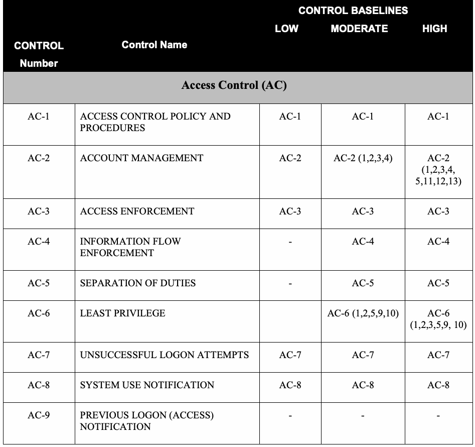
| 管理策名 | 管理策ベースライン | |||
| 低／低 | 中 | 高／高 | ||
| 管理策 | ||||
| 番号 | ||||
| アクセス制御（AC） | ||||
| AC-1 | アクセス制御方針および手順 | AC-1 | AC-1 | AC-1 |
| AC-2 | アカウント管理 | AC-2 | AC-2 (1,2,3,4) | AC-2 (1,2,3,4, 5,11,12,13) |
| AC-3 | アクセスの実施 | AC-3 | AC-3 | AC-3 |
| AC-4 | 情報フローの実施 | - | AC-4 | AC-4 |
| AC-5 | 職務分離 | - | AC-5 | AC-5 |
| AC-6 | 最小権限 | AC-6 (1,2,5,9,10) | AC-6 (1,2,3,5,9, 10) | |
| AC-7 | ログオン失敗時の対応 | AC-7 | AC-7 | AC-7 |
| AC-8 | システム利用通知 | AC-8 | AC-8 | AC-8 |
| AC-9 | 前回ログオン（アクセス）の通知 | - | - | - |
原本PDFの抜粋画像
| AC-10 | CONCURRENT SESSION CONTROL | - | - | AC-10 |
| AC-11 | DEVICE LOCK | - | AC-11(1) | AC-11(1) |
| AC-12 | SESSION TERMINATION | - | AC-12 | AC-12 |
| AC-14 | PERMITTED ACTIONS WITHOUT IDENTIFICATION OR AUTHENTICATION | AC-14 | AC-14 | AC-14 |
| AC-16 | SECURITY AND PRIVACY ATTRIBUTES | - | - | - |
| AC-17 | REMOTE ACCESS | AC-17 | AC-17(1,2,3,4) | AC- 17(1,2,3,4) |
| AC-18 | WIRELESS ACCESS | AC-18 | AC-18 (1) | AC-18 (1,4,5) |
| AC-19 | ACCESS CONTROL FOR MOBILE DEVICES | AC-19 | AC-19 (5) | AC-19 (5) |
| AC-20 | USE OF EXTERNAL SYSTEMS | AC-20 | AC-20 (1,2) | AC-20 (1,2) |
| AC-21 | INFORMATION SHARING | AC-21 | AC-21 | AC-21 |
| AC-22 | PUBLICALY ACCESSIBLE CONTENT | AC-22 | AC-22 | AC-22 |
| AC-23 | DATA MINING PROTECTION | - | - | - |
| AC-24 | ACCESS CONTROL DECISIONS | - | - | - |
| AC-25 | REFERENCE MONITOR | - | - | - |
| Awareness and Training (AT) | ||||
| AT-1 | AWARENESS AND TRAINING POLICY AND PROCEDURES | AT-1 | AT-1 | AT-1 |
| AT-2 | AWARENESS TRAINING | AT-2(1) | AT-2 (1,2) | AT-2 (1,2) |
| AT-3 | ROLE-BASED TRAINING | AT-3 | AT-3 | AT-3 |
原本PDFの抜粋画像
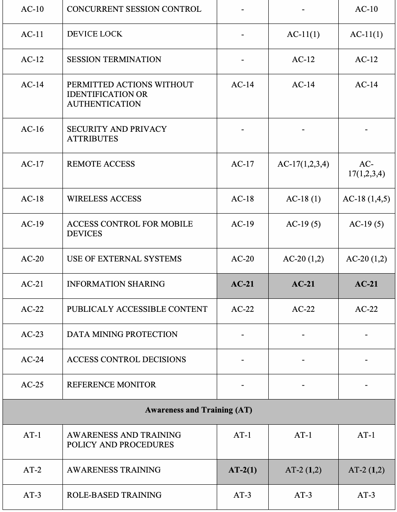
| AC-10 | 同時セッション制御 | - | - | AC-10 |
| AC-11 | デバイスロック | - | AC-11(1) | AC-11(1) |
| AC-12 | セッション終了 | - | AC-12 | AC-12 |
| AC-14 | 識別または認証なしで許可される操作 | AC-14 | AC-14 | AC-14 |
| AC-16 | セキュリティおよびプライバシー属性 | - | - | - |
| AC-17 | リモートアクセス | AC-17 | AC-17(1,2,3,4) | AC- 17(1,2,3,4) |
| AC-18 | 無線アクセス | AC-18 | AC-18 (1) | AC-18 (1,4,5) |
| AC-19 | モバイルデバイスのアクセス制御 | AC-19 | AC-19 (5) | AC-19 (5) |
| AC-20 | 外部システムの使用 | AC-20 | AC-20 (1,2) | AC-20 (1,2) |
| AC-21 | 情報共有 | AC-21 | AC-21 | AC-21 |
| AC-22 | 公開アクセス可能なコンテンツ | AC-22 | AC-22 | AC-22 |
| AC-23 | データマイニングからの保護 | - | - | - |
| AC-24 | アクセス制御の決定 | - | - | - |
| AC-25 | リファレンスモニター | - | - | - |
| 意識向上および訓練（AT） | ||||
| AT-1 | 意識向上および訓練の方針と手順 | AT-1 | AT-1 | AT-1 |
| AT-2 | 意識向上訓練 | AT-2(1) | AT-2 (1,2) | AT-2 (1,2) |
| AT-3 | 役割ベースの訓練 | AT-3 | AT-3 | AT-3 |
| AT-4 | TRAINING RECORDS | AT-4 | AT-4 | AT-4 |
| Audit and Accountability (AU) | ||||
| AU-1 | AUDIT AND ACCOUNTABILITY POLICY AND PROCEDURES | AU-1 | AU-1 | AU-1 |
| AU-2 | AUDIT EVENTS | AU-2 | AU-2 (3) | AU-2 (3) |
| AU-3 | COUNTENT OF AUDIT RECORDS | AU-3 | AU-3 (1) | AU-3 (1,2) |
| AU-4 | AUDIT STORAGE CAPACITY | AU-4 | AU-4 | AU-4 |
| AU-5 | RESPONSE TO AUDIT PROCESSING FAILURES | AU-5 | AU-5 | AU-5 (1,2) |
| AU-6 | AUDIT REVIEW, ANALYSIS AND REPORTING | AU-6 | AU-6 (1,3) | AU-6 (1,3,5,6) |
| AU-7 | AUDIT REDUCTION AND REPORT GENERATION | - | AU-7 (1) | AU-7 (1) |
| AU-8 | TIME STAMPS | AU-8 | AU-8 (1) | AU-8 (1) |
| AU-9 | PROTECTION OF AUDIT INFORMATION | AU-9 | AU-9 (4) | AU-9 (2,3,4) |
| AU-10 | NON-REPUDIATION | - | - | AU-10 (1) |
| AU-11 | AUDIT RECORD RETENTION | AU-11 | AU-11 | AU-11 |
| AU-12 | AUDIT GENERATION | AU-12 | AU-12 | AU-12 (1,3) |
| AU-13 | MONITORING FOR INFORMATION DISCLOSURE | - | - | - |
| AU-14 | SESSION AUDIT | - | - | - |
| AU-15 | ALTERNATIVE AUDIT CAPABILITY | - | - | - |
| AU-16 | CROSS-ORGNAZION AUDITING | - | - | - |
原本PDFの抜粋画像
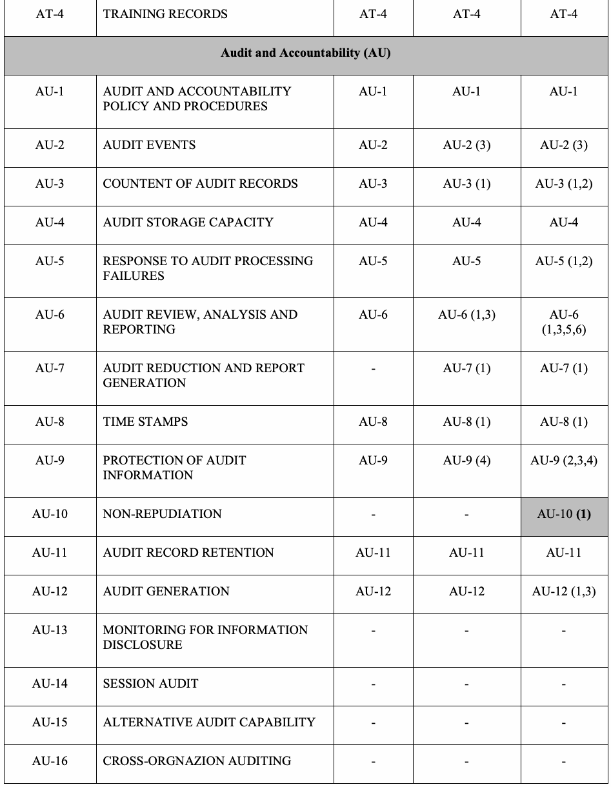
| AT-4 | 訓練記録 | AT-4 | AT-4 | AT-4 |
| 監査および説明責任（AU） | ||||
| AU-1 | 監査および説明責任の方針と手順 | AU-1 | AU-1 | AU-1 |
| AU-2 | 監査対象イベント | AU-2 | AU-2 (3) | AU-2 (3) |
| AU-3 | 監査記録の内容 | AU-3 | AU-3 (1) | AU-3 (1,2) |
| AU-4 | 監査用ストレージ容量 | AU-4 | AU-4 | AU-4 |
| AU-5 | 監査処理障害への対応 | AU-5 | AU-5 | AU-5 (1,2) |
| AU-6 | 監査のレビュー、分析および報告 | AU-6 | AU-6 (1,3) | AU-6 (1,3,5,6) |
| AU-7 | 監査データの削減およびレポート生成 | - | AU-7 (1) | AU-7 (1) |
| AU-8 | タイムスタンプ | AU-8 | AU-8 (1) | AU-8 (1) |
| AU-9 | 監査情報の保護 | AU-9 | AU-9 (4) | AU-9 (2,3,4) |
| AU-10 | 否認防止 | - | - | AU-10 (1) |
| AU-11 | 監査記録の保持 | AU-11 | AU-11 | AU-11 |
| AU-12 | 監査記録の生成 | AU-12 | AU-12 | AU-12 (1,3) |
| AU-13 | 情報開示の監視 | - | - | - |
| AU-14 | セッション監査 | - | - | - |
| AU-15 | 代替監査機能 | - | - | - |
| AU-16 | 組織間監査 | - | - | - |
| ASSESSMENT, AUTHORIZATION AND MONITORING (CA) | ||||
| CA-1 | ASSESSMENT, AUTHORIZATION AND MONITORING POLICY AND PROCEDURES | CA-1 | CA-1 | CA-1 |
| CA-2 | ASSESSMENTS | CA-2 | CA-2 (1) | CA-2 (1,2) |
| CA-3 | SYSTEM INTERCONNECTIONS | CA-3 | CA-3 (5) | CA-3 (5) |
| CA-5 | PLAN OF ACTION AND MILESTONES | CA-5 | CA-5 | CA-5 |
| CA-6 | AUTHORIZATION | CA-6 | CA-6 | CA-6 |
| CA-7 | CONTINUOUS MONITORING | CA-7 | CA-7 (1) | CA-7 (1) |
| CA-8 | PENETRATION TESTING | - | - | CA-8 |
| CA-9 | INTERNAL SYSTEM CONNECTIONS | CA-9 | CA-9 | CA-9 |
| CONFIGURATION MANAGEMENT (CM) | ||||
| CM-1 | CONFIGURATION MANAGEMENT POLICY AND PROCEDURES | CM-1 | CM-1 | CM-1 |
| CM-2 | BASELINE CONFIGURATION | CM-2 | CM-2 (1,3,7) | CM-2 (1,2,3,7) |
| CM-3 | CONFIGURATION CHANGE CONTROL | - | CM-3 (2) | CM-3 (1,2) |
| CM-4 | SECURITY AND PRIVACY IMPACT ANALYSIS | CM-4 | CM-4 | CM-4 (1) |
| CM-5 | ACCESS RESTRICTIONS FOR CHANGE | - | CM-5 | CM-5 (1,2,3) |
| CM-6 | CONFIGURATION SETTINGS | CM-6 | CM-6 | CM-6 (1,2) |
| CM-7 | LEAST FUNCTIONALITY | CM-7 | CM-7 (1,2,4) | CM-7 (1,2,5) |
| CM-8 | SYSTEM COMPONENT INVENTORY | CM-8 | CM-8 (1,3,5) | CM-8 (1,2,3,4,5) |
原本PDFの抜粋画像
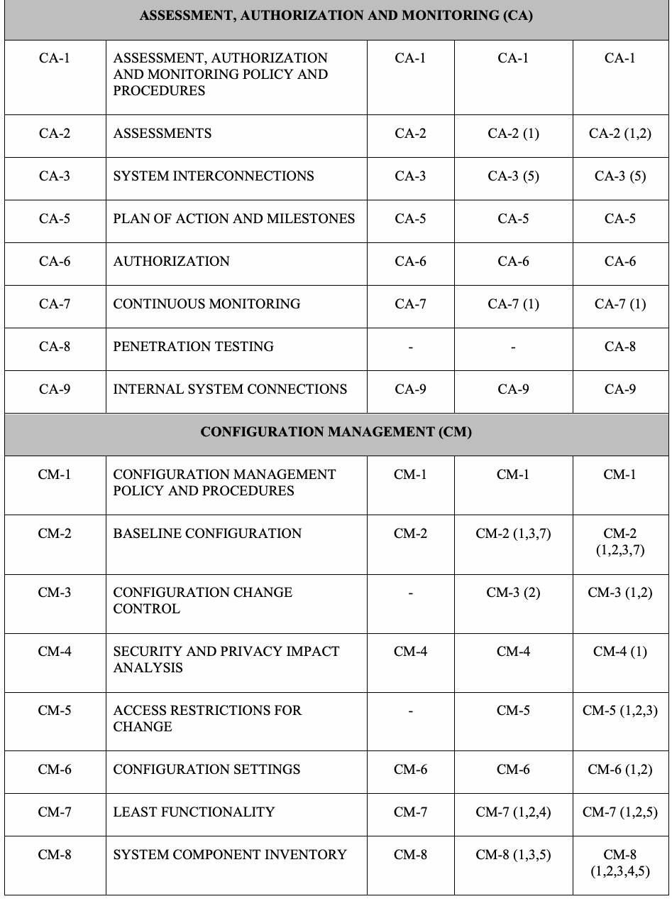
| 評価、認可および監視（CA） | ||||
| CA-1 | 評価、認可および監視の方針と手順 | CA-1 | CA-1 | CA-1 |
| CA-2 | 評価 | CA-2 | CA-2 (1) | CA-2 (1,2) |
| CA-3 | システム相互接続 | CA-3 | CA-3 (5) | CA-3 (5) |
| CA-5 | 行動計画およびマイルストーン | CA-5 | CA-5 | CA-5 |
| CA-6 | 認可 | CA-6 | CA-6 | CA-6 |
| CA-7 | 継続的監視 | CA-7 | CA-7 (1) | CA-7 (1) |
| CA-8 | 侵入テスト | - | - | CA-8 |
| CA-9 | 内部システム接続 | CA-9 | CA-9 | CA-9 |
| 構成管理（CM） | ||||
| CM-1 | 構成管理の方針と手順 | CM-1 | CM-1 | CM-1 |
| CM-2 | ベースライン構成 | CM-2 | CM-2 (1,3,7) | CM-2 (1,2,3,7) |
| CM-3 | 構成変更管理 | - | CM-3 (2) | CM-3 (1,2) |
| CM-4 | セキュリティおよびプライバシー影響分析 | CM-4 | CM-4 | CM-4 (1) |
| CM-5 | 変更に対するアクセス制限 | - | CM-5 | CM-5 (1,2,3) |
| CM-6 | 構成設定 | CM-6 | CM-6 | CM-6 (1,2) |
| CM-7 | 最小機能 | CM-7 | CM-7 (1,2,4) | CM-7 (1,2,5) |
| CM-8 | システム構成要素のインベントリ | CM-8 | CM-8 (1,3,5) | CM-8 (1,2,3,4,5) |
| CM-9 | CONFIGURATION MANAGEMENT PLAN | - | CM-9 | CM-9 |
| CM-10 | SOFTWARE USAGE RESTRICTIONS | CM-10 | CM-10 | CM-10 |
| CM-11 | USER-INSTALLED SOFTWARE | CM-11 | CM-11 | CM-11 |
| CONTINGENCY PLANNING | ||||
| CP-1 | CONTINGENCY PLANNING POLICY AND PROCEDURES | CP-1 | CP-1 | CP-1 |
| CP-2 | CONTINGENCY PLAN | CP-2 | CP-2 (1,3,8) | CP-2 (1,2,3,4,5,8) |
| CP-3 | CONTINGENCY TRAINING | CP-3 | CP-3 | CP-3 (1) |
| CP-4 | CONTIGENCY PLAN TESTING | CP-4 | CP-4(1) | CP-4 (1,2) |
| CP-6 | ALTERNATE STORAGE SITE | - | CP-6 (1,3) | CP-6 (1,2,3) |
| CP-7 | ALTERNATE PROCESSING SITE | - | CP-7 (1,2,3) | CP-7 (1,2,3,4) |
| CP-8 | TELECOMMUNICATION SERVICES | - | CP-8 (1,2) | CP-8 (1,2,3,4) |
| CP-9 | SYSTEM BACKUP | CP-9 | CP-9 (1) | CP-9 (1,2,3,5) |
| CP-10 | SYSTEM RECOVERY AND RECONSTITUION | CP-10 | CP-10 (2) | CP-10 (2,4) |
| CP-11 | ALTERNATE COMMUNICATION PROTOCOLS | - | - | - |
| CP-12 | SAFE MODE | - | - | - |
| CP-13 | ALTERNATIVE SECURITY MECHANISMS | - | - | - |
| IDENTIFICATION AND AUTHENTICATION (IA) |
原本PDFの抜粋画像
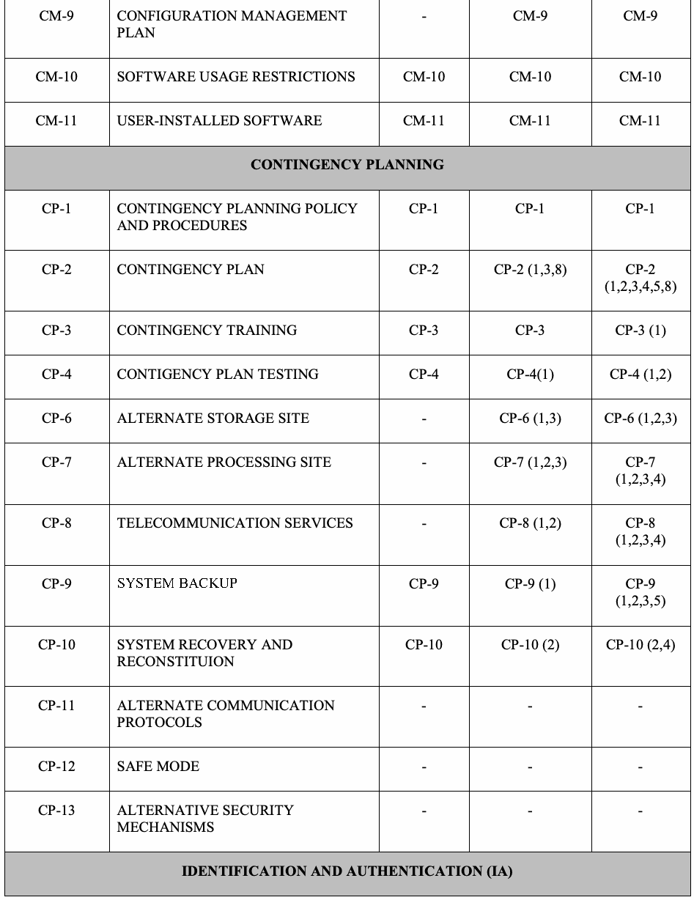
| CM-9 | 構成管理計画 | - | CM-9 | CM-9 |
| CM-10 | ソフトウェア使用制限 | CM-10 | CM-10 | CM-10 |
| CM-11 | ユーザーがインストールするソフトウェア | CM-11 | CM-11 | CM-11 |
| 緊急時対応計画 | ||||
| CP-1 | 緊急時対応計画の方針と手順 | CP-1 | CP-1 | CP-1 |
| CP-2 | 緊急時対応計画 | CP-2 | CP-2 (1,3,8) | CP-2 (1,2,3,4,5,8) |
| CP-3 | 緊急時対応訓練 | CP-3 | CP-3 | CP-3 (1) |
| CP-4 | 緊急時対応計画のテスト | CP-4 | CP-4(1) | CP-4 (1,2) |
| CP-6 | 代替保管サイト | - | CP-6 (1,3) | CP-6 (1,2,3) |
| CP-7 | 代替処理サイト | - | CP-7 (1,2,3) | CP-7 (1,2,3,4) |
| CP-8 | 電気通信サービス | - | CP-8 (1,2) | CP-8 (1,2,3,4) |
| CP-9 | システムバックアップ | CP-9 | CP-9 (1) | CP-9 (1,2,3,5) |
| CP-10 | システムの復旧および再構成 | CP-10 | CP-10 (2) | CP-10 (2,4) |
| CP-11 | 代替通信プロトコル | - | - | - |
| CP-12 | セーフモード | - | - | - |
| CP-13 | 代替セキュリティ機構 | - | - | - |
| 識別および認証（IA） |
| IA-1 | IDENTIFICATION AND AUTHENTICATION POLICY AND PROCEDURES | IA-1 | IA-1 | IA-1 |
| IA-2 | IDENTIFICATION AND AUTHENTICATION (ORGANIZATIONAL USERS) | IA-2(1,12) | IA-2 (1,2,3,8,11,12) | IA-2 (1,2,3,4,8,9, 11,12) |
| IA-3 | DEVICE IDENTIFICATION AND AUTHENTICATION | - | IA-3 | IA-3 |
| IA-4 | IDENTIFIER MANAGEMENT | IA-4 | IA-4 | IA-4 |
| IA-5 | AUTHENTICATOR MANAGEMENT | IA-5 (1,11) | IA-5 (1,2,3,11) | IA-5 (1,2,3,11) |
| IA-6 | AUTHENTICATOR FEEDBACK | IA-6 | IA-6 | IA-6 |
| IA-7 | CRYPTOGRAPHIC MODUEL AUTHENTICATION | IA-7 | IA-7 | IA-7 |
| IA-8 | IDENTIFICATION AND AUTHENTICATION (NON- ORGANIZATIONAL USERS) | IA-8 (1,2,3,4) | IA-8 (1,2,3,4) | IA-8 (1,2,3,4) |
| IA-9 | SERVICE IDENTIFICATION AND AUTHENTICATION | - | IA-9 (1) | IA-9 (1,2) |
| IA-10 | ADAPTIVE IDENTIFCATION AND AUTHENTICATION | - | - | - |
| IA-11 | RE-AUTHENTICATION | - | - | - |
| INCIDENT RESPONSE (IR) | ||||
| IR-1 | INCIDENT RESOPNSE POLICY AND PROCEDURES | IR-1 | IR-1 | IR-1 |
| IR-2 | INCIDENT RESPONSE TRAINING | IR-2 | IR-2 | IR-2 (1,2) |
| IR-3 | INCIDENT RESPONSE TESTING | - | IR-3 (2) | IR-3 (2) |
| IR-4 | INCIDENT HANDLING | IR-4 | IR-4 (1) | IR-4 (1,4) |
原本PDFの抜粋画像
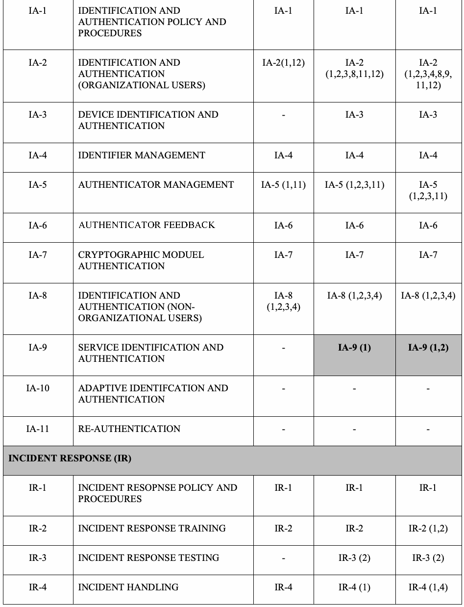
| IA-1 | 識別および認証の方針と手順 | IA-1 | IA-1 | IA-1 |
| IA-2 | 識別および認証（組織内ユーザー） | IA-2(1,12) | IA-2 (1,2,3,8,11,12) | IA-2 (1,2,3,4,8,9, 11,12) |
| IA-3 | デバイスの識別および認証 | - | IA-3 | IA-3 |
| IA-4 | 識別子管理 | IA-4 | IA-4 | IA-4 |
| IA-5 | 認証子管理 | IA-5 (1,11) | IA-5 (1,2,3,11) | IA-5 (1,2,3,11) |
| IA-6 | 認証子フィードバック | IA-6 | IA-6 | IA-6 |
| IA-7 | 暗号モジュール認証 | IA-7 | IA-7 | IA-7 |
| IA-8 | 識別および認証（組織外ユーザー） | IA-8 (1,2,3,4) | IA-8 (1,2,3,4) | IA-8 (1,2,3,4) |
| IA-9 | サービスの識別および認証 | - | IA-9 (1) | IA-9 (1,2) |
| IA-10 | 適応型識別および認証 | - | - | - |
| IA-11 | 再認証 | - | - | - |
| インシデント対応（IR） | ||||
| IR-1 | インシデント対応の方針と手順 | IR-1 | IR-1 | IR-1 |
| IR-2 | インシデント対応訓練 | IR-2 | IR-2 | IR-2 (1,2) |
| IR-3 | インシデント対応テスト | - | IR-3 (2) | IR-3 (2) |
| IR-4 | インシデント処理 | IR-4 | IR-4 (1) | IR-4 (1,4) |
| IR-5 | INCIDENT MONITORING | IR-5 | IR-5 | IR-5 (1) |
| IR-6 | INCIDENT REPORTING | IR-6 | IR-6 (1) | IR-6 (1) |
| IR-7 | INCIDENT RESPONSE ASSISTANCE | IR-7 | IR-7 (1) | IR-7 (1) |
| IR-8 | INCIDENT RESOPNSE PLAN | IR-8 | IR-8 | IR-8 |
| IR-9 | INFORMATION SPILLAGE RESOPNSE | - | - | - |
| IR-10 | INTEGRATED INFORMATION SECURITY ANALYSIS TEAM | - | - | - |
| MAINTENANCE (MA) | ||||
| MA-1 | SYSTEM MAINTENANCE POLICY AND PROCEDURES | MA-1 | MA-1 | MA-1 |
| MA-2 | CONTROLLED MAINTENANCE | MA-2 | MA-2 | MA-2 (2) |
| MA-3 | MAINTENANCE TOOLS | - | MA-3 (1,2) | MA-3 (1,2,3) |
| MA-4 | NONLOCAL MAINTENANCE | MA-4 | MA-4 (2) | MA-4 (2.3) |
| MA-5 | MAINTENANCE PERSONNEL | MA-5 | MA-5 | MA-5 (1) |
| MA-6 | TIMELY MAINTENANCE | - | MA-6 | MA-6 |
| MEDIA PROTECTION (MP) | ||||
| MP-1 | MEDIA PROTECTION POLICY AND PROCEDURES | MP-1 | MP-1 | MP-1 |
| MP-2 | MEDIA ACCESS | MP-2 | MP-2 | MP-2 |
| MP-3 | MEDIA MARKING | - | MP-3 | MP-3 |
| MP-4 | MEDIA STORAGE | - | MP-4 | MP-4 |
| MP-5 | MEDIA TRANSPORT | - | MP-5 (4) | MP-5 (4) |
原本PDFの抜粋画像
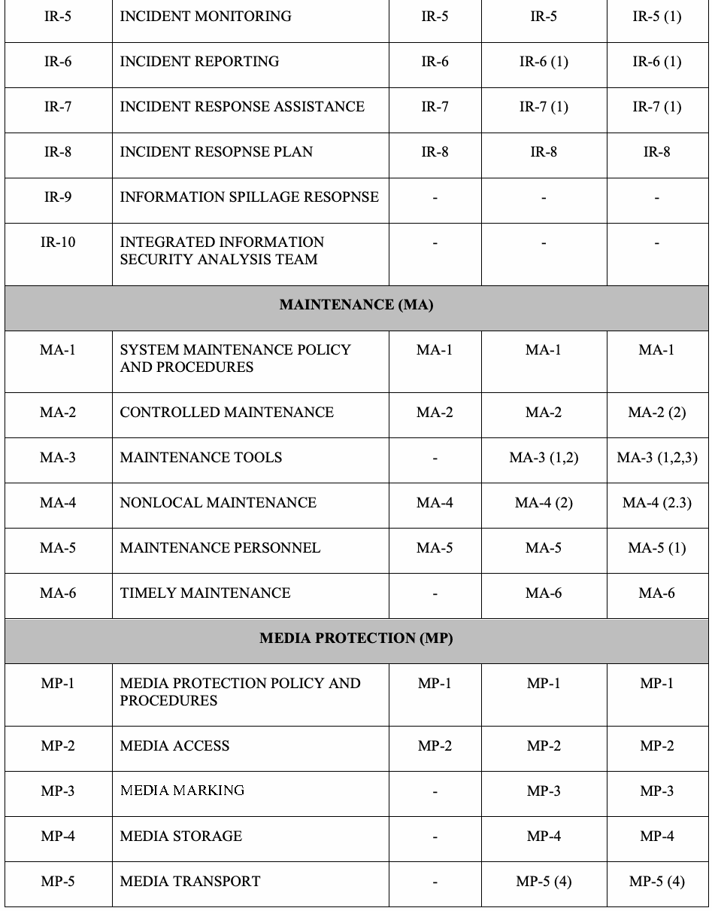
| IR-5 | インシデント監視 | IR-5 | IR-5 | IR-5 (1) |
| IR-6 | インシデント報告 | IR-6 | IR-6 (1) | IR-6 (1) |
| IR-7 | インシデント対応支援 | IR-7 | IR-7 (1) | IR-7 (1) |
| IR-8 | インシデント対応計画 | IR-8 | IR-8 | IR-8 |
| IR-9 | 情報流出への対応 | - | - | - |
| IR-10 | 統合情報セキュリティ分析チーム | - | - | - |
| 保守（MA） | ||||
| MA-1 | システム保守の方針と手順 | MA-1 | MA-1 | MA-1 |
| MA-2 | 管理された保守 | MA-2 | MA-2 | MA-2 (2) |
| MA-3 | 保守ツール | - | MA-3 (1,2) | MA-3 (1,2,3) |
| MA-4 | 遠隔保守 | MA-4 | MA-4 (2) | MA-4 (2.3) |
| MA-5 | 保守担当者 | MA-5 | MA-5 | MA-5 (1) |
| MA-6 | 適時の保守 | - | MA-6 | MA-6 |
| 媒体保護（MP) | ||||
| MP-1 | 媒体保護の方針と手順 | MP-1 | MP-1 | MP-1 |
| MP-2 | 媒体へのアクセス | MP-2 | MP-2 | MP-2 |
| MP-3 | 媒体の表示 | - | MP-3 | MP-3 |
| MP-4 | 媒体の保管 | - | MP-4 | MP-4 |
| MP-5 | 媒体の輸送 | - | MP-5 (4) | MP-5 (4) |
| MP-6 | MEDIA SANITIZATION | MP-6 | MP-6 | MP-6 (1,2,3) |
| MP-7 | MEDIA USE | MP-7 | MP-7 (1) | MP-7 (1) |
| MP-8 | MEDIA DOWNGRADING | - | - | - |
| PHYSICAL AND ENVIRONMENTAL PROTECTION (PE) | ||||
| PE-1 | PHYSICAL AND ENVIRONMENTAL PROTECTION POLICY AND PROCEDURES | PE-1 | PE-1 | PE-1 |
| PE-2 | PHYSICAL ACCESS AUTHORIZATIONS | PE-2 | PE-2 | PE-2 |
| PE-3 | PHYSICAL ACCESS CONTROL | PE-3 | PE-3 | PE-3 (1) |
| PE-4 | ACCESS CONTROL FOR TRANSMISSION | - | PE-4 | PE-4 |
| PE-5 | ACCESS CONTROL FOR OUTPUT DEVICES | - | PE-5 | PE-5 |
| PE-6 | MONITORING PHYSICAL ACCESS | PE-6 | PE-6 (1) | PE-6 (1,4) |
| PE-8 | VISITOR ACCESS RECORDS | PE-8 | PE-8 | PE-8 (1) |
| PE-9 | POWER EQUIPMENT AND CABLING | - | PE-9 | PE-9 |
| PE-10 | EMERGENCY SHUTOFF | - | PE-10 | PE-10 |
| PE-11 | EMERGENCY POWER | - | PE-11 | PE-11 (1) |
| PE-12 | EMERGENCY LIGHTING | PE-12 | PE-12 | PE-12 |
| PE-13 | FIRE PROTECTION | PE-13 | PE-13 (3) | PE-13 (1,2,3) |
| PE-14 | TEMPERATURE AND HUMIDITY CONTROLS | PE-14 | PE-14 | PE-14 |
| PE-15 | WATER DAMAGE PROTECTION | PE-15 | PE-15 | PE-15 (1) |
原本PDFの抜粋画像
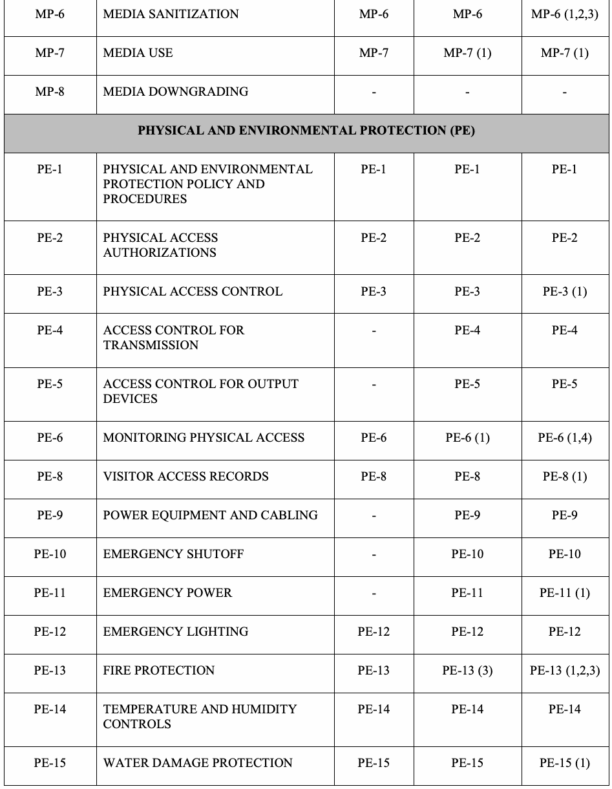
| MP-6 | 媒体のサニタイズ | MP-6 | MP-6 | MP-6 (1,2,3) |
| MP-7 | 媒体の使用 | MP-7 | MP-7 (1) | MP-7 (1) |
| MP-8 | 媒体の格下げ | - | - | - |
| 物理的および環境的保護（PE） | ||||
| PE-1 | 物理的および環境的保護の方針と手順 | PE-1 | PE-1 | PE-1 |
| PE-2 | 物理アクセスの認可 | PE-2 | PE-2 | PE-2 |
| PE-3 | 物理アクセス制御 | PE-3 | PE-3 | PE-3 (1) |
| PE-4 | 伝送のアクセス制御 | - | PE-4 | PE-4 |
| PE-5 | 出力装置のアクセス制御 | - | PE-5 | PE-5 |
| PE-6 | 物理アクセスの監視 | PE-6 | PE-6 (1) | PE-6 (1,4) |
| PE-8 | 訪問者アクセス記録 | PE-8 | PE-8 | PE-8 (1) |
| PE-9 | 電源設備および配線 | - | PE-9 | PE-9 |
| PE-10 | 緊急停止 | - | PE-10 | PE-10 |
| PE-11 | 非常用電源 | - | PE-11 | PE-11 (1) |
| PE-12 | 非常用照明 | PE-12 | PE-12 | PE-12 |
| PE-13 | 火災防護 | PE-13 | PE-13 (3) | PE-13 (1,2,3) |
| PE-14 | 温度および湿度の制御 | PE-14 | PE-14 | PE-14 |
| PE-15 | 水害からの保護 | PE-15 | PE-15 | PE-15 (1) |
| PE-16 | DELIVERY AND REMOVAL | PE-16 | PE-16 | PE-16 |
| PE-17 | ALTERNATE WORK SITE | - | PE-17 | PE-17 |
| PE-18 | LOCATION OF SYSTEM COMPONENTS | - | - | PE-18 |
| PE-19 | INFORMATION LEAKAGE | - | - | - |
| PE-20 | ASSET MONITORING AND TRACKING | - | - | - |
| PLANNING (PL) | ||||
| PL-1 | PLANNING POLICY AND PROCEDURES | PL-1 | PL-1 | PL-1 |
| PL-2 | SYSTEM SECURITY AND PRIVACY PLANS | PE-2 | PL-2 (3) | PL-2 (3) |
| PL-4 | RULES OF BEHAVIOR | PL-4 | PL-4 (1) | PL-4 (1) |
| PL-7 | CONCEPT OF OPERATIONS | - | - | - |
| PL-8 | SECURITY AND PRIVACY ARCHITECTURES | - | PL-8 | PL-8 |
| PL-9 | CENTRAL MANAGEMENT | - | - | - |
| PERSONNEL SECURITY (PS) | ||||
| PS-1 | PERSONAL SECUIRTY POLICY AND PROCEDURES | PS-1 | PS-1 | PS-1 |
| PS-2 | POSITION RISK DESIGNATION | PS-2 | PS-2 | PS-2 |
| PS-3 | PERSONNEL SCREENING | PS-3 | PS-3 | PS-3 |
| PS-4 | PERSONNEL TERMINTATION | PS-4 | PS-4 | PS-4 (2) |
| PS-5 | PERSONNEL TRANSFER | PS-5 | PS-5 | PS-5 |
原本PDFの抜粋画像
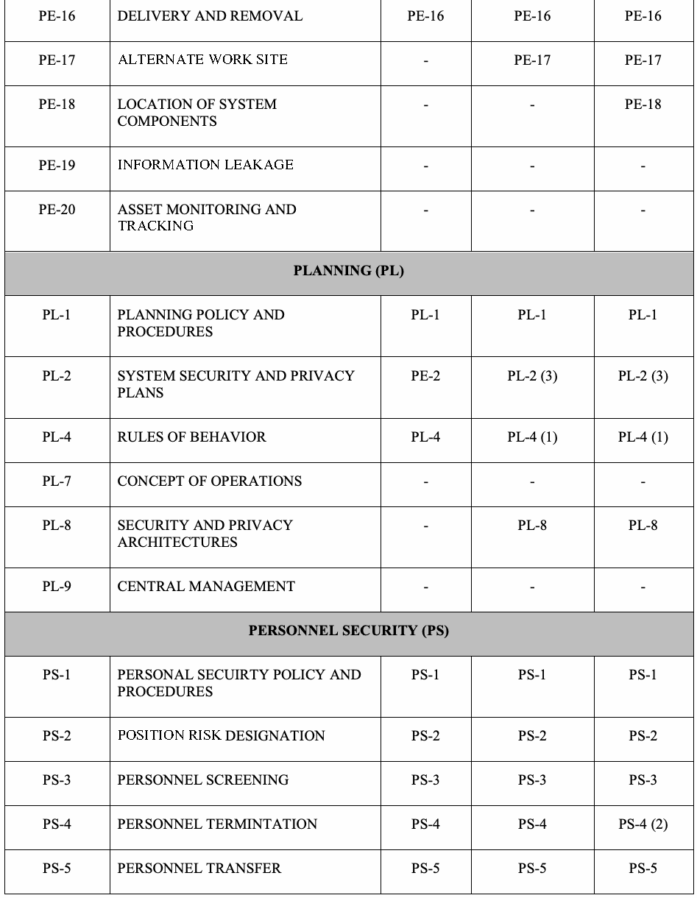
| PE-16 | 搬入および搬出 | PE-16 | PE-16 | PE-16 |
| PE-17 | 代替作業場所 | - | PE-17 | PE-17 |
| PE-18 | システム構成要素の設置場所 | - | - | PE-18 |
| PE-19 | 情報漏えい | - | - | - |
| PE-20 | 資産の監視および追跡 | - | - | - |
| 計画（PL） | ||||
| PL-1 | 計画の方針と手順 | PL-1 | PL-1 | PL-1 |
| PL-2 | システムセキュリティおよびプライバシー計画 | PE-2 | PL-2 (3) | PL-2 (3) |
| PL-4 | 行動規則 | PL-4 | PL-4 (1) | PL-4 (1) |
| PL-7 | 運用概念 | - | - | - |
| PL-8 | セキュリティおよびプライバシーアーキテクチャ | - | PL-8 | PL-8 |
| PL-9 | 集中管理 | - | - | - |
| 要員セキュリティ（PS） | ||||
| PS-1 | 要員セキュリティの方針と手順 | PS-1 | PS-1 | PS-1 |
| PS-2 | 職務リスクの指定 | PS-2 | PS-2 | PS-2 |
| PS-3 | 要員の審査 | PS-3 | PS-3 | PS-3 |
| PS-4 | 要員の離職 | PS-4 | PS-4 | PS-4 (2) |
| PS-5 | 要員の異動 | PS-5 | PS-5 | PS-5 |
| PS-6 | ACCESS AGREEMENTS | PS-6 | PS-6 | PS-6 |
| PS-7 | EXTERNAL PERSONNEL SECURITY | PS-7 | PS-7 | PS-7 |
| PS-8 | PERSONNEL SANCTIONS | PS-8 | PS-8 | PS-8 |
| RISK ASSESSMENT (RA) | ||||
| RA-1 | RISK ASSESSMENT POLICY AND PROCEDURES | RA-1 | RA-1 | RA-1 |
| RA-2 | SECUIRTY CATEGORIZATION | RA-2 | RA-2 | RA-2 |
| RA-3 | RISK ASSESSMENT | RA-3 | RA-3 | RA-3 |
| RA-5 | VULNERABILITY SCANNING | RA-5 | RA-5 (1,2,5) | RA-5 (1,2,4,5) |
| RA-6 | TECHNICAL SURVEILLANCE COUNTERMEASURES SURVEY | - | - | - |
| SYSTEM AND SERVICE ACQUISITION (SA) | ||||
| SA-1 | SYSTEM AND SERVICES ACQUISITION POLICY AND PROCEDURES | SA-1 | SA-1 | SA-1 |
| SA-2 | ALLOCATION OF RESOURCES | SA-2 | SA-2 | SA-2 |
| SA-3 | SYSTEM DEVELOPMENT LIFE CYCLE | SA-3 | SA-3 | SA-3 |
| SA-4 | ACQUISITION PROCESS | SA-4 (10) | SA-4 (1,2,9,10) | SA-4 (1,2,9, 10) |
| SA-5 | SYSTEM DOCUMENTATION | SA-5 | SA-5 | SA-5 |
| SA-8 | SECURITY AND PRIVACY ENGINEERING PRINCIPLES | - | SA-8 | SA-8 |
| SA-9 | EXTERNAL SYSTEM SERVICES | SA-9 | SA-9 (2) | SA-9 (2) |
原本PDFの抜粋画像
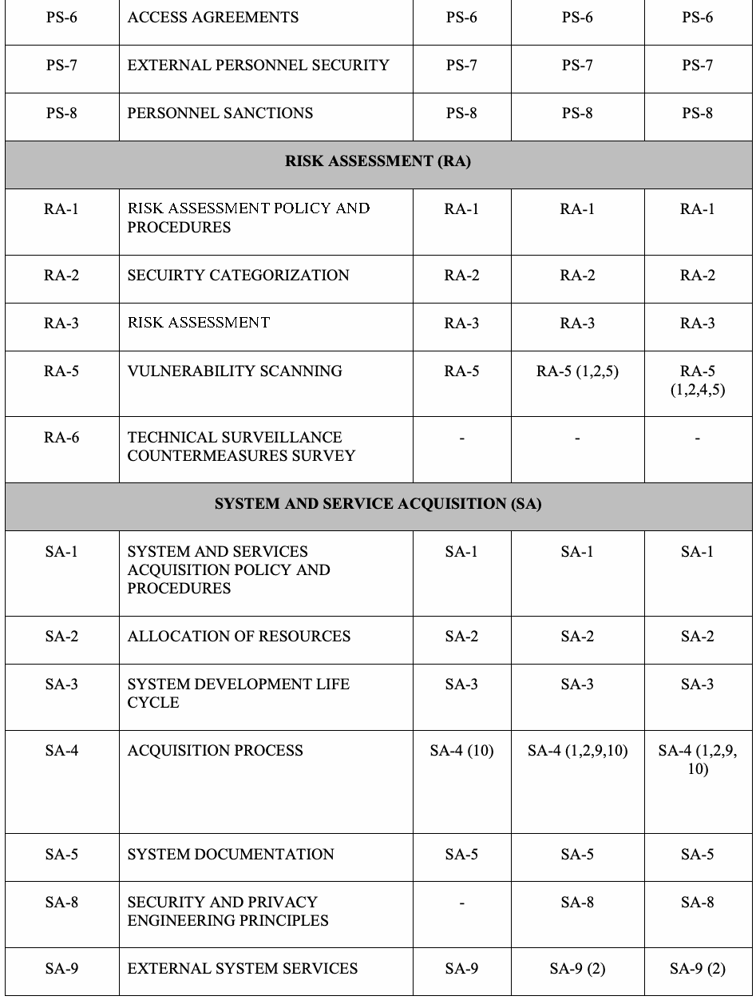
| PS-6 | アクセス合意 | PS-6 | PS-6 | PS-6 |
| PS-7 | 外部要員のセキュリティ | PS-7 | PS-7 | PS-7 |
| PS-8 | 要員への制裁 | PS-8 | PS-8 | PS-8 |
| リスク評価（RA） | ||||
| RA-1 | リスク評価の方針と手順 | RA-1 | RA-1 | RA-1 |
| RA-2 | セキュリティ分類 | RA-2 | RA-2 | RA-2 |
| RA-3 | リスク評価 | RA-3 | RA-3 | RA-3 |
| RA-5 | 脆弱性スキャン | RA-5 | RA-5 (1,2,5) | RA-5 (1,2,4,5) |
| RA-6 | 技術監視対策調査 | - | - | - |
| システムおよびサービスの取得（SA） | ||||
| SA-1 | システムおよびサービス取得の方針と手順 | SA-1 | SA-1 | SA-1 |
| SA-2 | リソース配分 | SA-2 | SA-2 | SA-2 |
| SA-3 | システム開発ライフサイクル | SA-3 | SA-3 | SA-3 |
| SA-4 | 取得プロセス | SA-4 (10) | SA-4 (1,2,9,10) | SA-4 (1,2,9, 10) |
| SA-5 | システム文書 | SA-5 | SA-5 | SA-5 |
| SA-8 | セキュリティおよびプライバシーエンジニアリング原則 | - | SA-8 | SA-8 |
| SA-9 | 外部システムサービス | SA-9 | SA-9 (2) | SA-9 (2) |
| SA-10 | DEVELOPER CONFIGURATION MANAGEMENT | - | SA-10 | SA-10 |
| SA-11 | DEVELOPER SECURITY TESTING AND EVALUATION | - | SA-11 | SA-11 |
| SA-12 | SUPPLY CHAIN RISK MANAGEMENT | - | - | SA-12 |
| SA-13 | TRUSTWORTHINESS | - | - | - |
| SA-14 | CRITICALITY ANALYSIS | - | - | - |
| SA-15 | DEVELOPMENT PROCESS, STANDARDS, AND TOOLS | - | - | SA-15 |
| SA-16 | DEVELOPER-PROVIDED TRAINING | - | - | SA-16 |
| SA-17 | DEVELOPER SECURITY ARCHITECTURE AND DESIGN | - | - | SA-17 |
| SA-18 | TAMPER RESISTANCE AND DETECTION | - | - | - |
| SA-19 | COMPONENT AUTHENTICITY | - | - | - |
| SA-20 | CUSTOMIZED DEVELOPMENT OF CRITICAL COMPONENTS | - | - | - |
| SA-21 | DEVELOPER SCREENING | - | - | - |
| SA-22 | UNSUPPORTED SYSTEM COMPONENTS | - | - | - |
| SYSTEM AND COMMUNICATIONS PROTECTION (SC) | ||||
| SC-1 | SYSTEM AND COMMUNICATIONS PROTECTION POLICY AND PROCEDURES | SC-1 | SC-1 | SC-1 |
| SC-2 | APPLICATION PARTITIONING | - | SC-2 | SC-2 |
| SC-3 | SECURITY FUNCTION ISOLATION | - | - | SC-3 |
原本PDFの抜粋画像
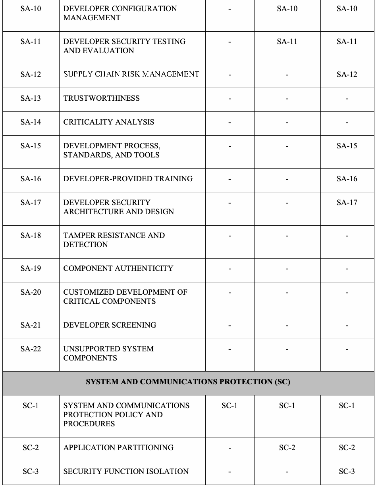
| SA-10 | 開発者による構成管理 | - | SA-10 | SA-10 |
| SA-11 | 開発者によるセキュリティテストおよび評価 | - | SA-11 | SA-11 |
| SA-12 | サプライチェーンリスク管理 | - | - | SA-12 |
| SA-13 | 信頼性 | - | - | - |
| SA-14 | 重要度分析 | - | - | - |
| SA-15 | 開発プロセス、標準およびツール | - | - | SA-15 |
| SA-16 | 開発者が提供する訓練 | - | - | SA-16 |
| SA-17 | 開発者によるセキュリティアーキテクチャおよび設計 | - | - | SA-17 |
| SA-18 | 改ざん耐性および検知 | - | - | - |
| SA-19 | 構成要素の真正性 | - | - | - |
| SA-20 | 重要な構成要素のカスタム開発 | - | - | - |
| SA-21 | 開発者の審査 | - | - | - |
| SA-22 | サポート対象外のシステム構成要素 | - | - | - |
| システムおよび通信の保護（SC） | ||||
| SC-1 | システムおよび通信保護の方針と手順 | SC-1 | SC-1 | SC-1 |
| SC-2 | アプリケーションの分離 | - | SC-2 | SC-2 |
| SC-3 | セキュリティ機能の分離 | - | - | SC-3 |
原本PDFの抜粋画像
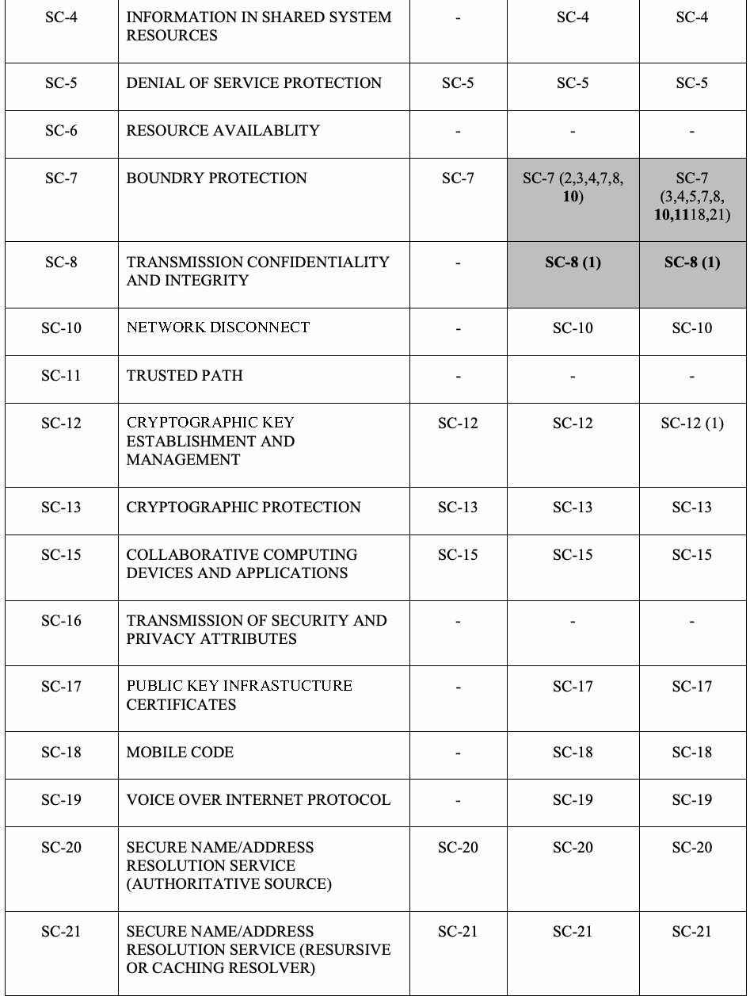
原本PDFの抜粋画像
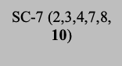
| SC-22 | ARCHITECTURE AND PROVISIONING FOR NAME/ADDRESS RESOLUTION SERVICE | SC-22 | SC-22 | SC-22 |
| SC-23 | SESSION AUTHENTICITY | - | SC-23 | SC-23 (5) |
| SC-24 | FAIL IN KNOWN STATE | - | - | SC-24 |
| SC-25 | THIN NODES | - | - | - |
| SC-26 | HONEYPOTS | - | - | - |
| SC-27 | PLATFORM-INDEPENDENT APPLICATIONS | - | - | - |
| SC-28 | PROTECTION OF INFORMATION AT REST | - | SC-28 | SC-28 |
| SC-29 | HETEROGENEITY | - | - | - |
| SC-30 | CONCEALMENT AND MISDIRECTION | - | - | - |
| SC-31 | CONVERT CHANNEL ANALYSIS | - | - | - |
| SC-32 | SYSTEM PARTITIONING | - | - | - |
| SC-34 | NON-MODIFIABLE EXECUTABLE PROGRAMS | - | - | - |
| SC-35 | HONEYCLIENTS | - | - | - |
| SC-36 | DISTRIBUTED PROCESSING AND STORAGE | - | - | - |
| SC-37 | OUT-OF-BAND CHANNELS | - | - | - |
| SC-38 | OPERATIONS SECURITY | - | - | - |
| SC-39 | PROCESS ISOLATION | SC-39 | SC-39 | SC-39 |
| SC-40 | WIRELESS LINK PROTECTION | - | - | - |
原本PDFの抜粋画像
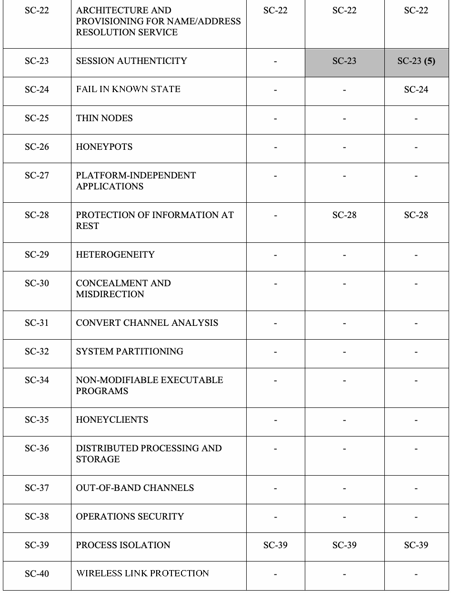
| SC-22 | 名前／アドレス解決サービスのアーキテクチャおよびプロビジョニング | SC-22 | SC-22 | SC-22 |
| SC-23 | セッションの真正性 | - | SC-23 | SC-23 (5) |
| SC-24 | 既知状態でのフェイル | - | - | SC-24 |
| SC-25 | シンクライアントノード | - | - | - |
| SC-26 | ハニーポット | - | - | - |
| SC-27 | プラットフォーム非依存アプリケーション | - | - | - |
| SC-28 | 保存データの保護 | - | SC-28 | SC-28 |
| SC-29 | 異種性 | - | - | - |
| SC-30 | 隠蔽およびミスディレクション | - | - | - |
| SC-31 | 変換チャネル分析 | - | - | - |
| SC-32 | システムの区画化 | - | - | - |
| SC-34 | 変更不可の実行プログラム | - | - | - |
| SC-35 | ハニークライアント | - | - | - |
| SC-36 | 分散処理および保管 | - | - | - |
| SC-37 | 帯域外チャネル | - | - | - |
| SC-38 | 運用セキュリティ | - | - | - |
| SC-39 | プロセス分離 | SC-39 | SC-39 | SC-39 |
| SC-40 | 無線リンク保護 | - | - | - |
| SC-41 | PORT AND I/O DEVICE ACCESS | - | - | - |
| SC-42 | SENSOR CAPABILITY AND DATA | - | - | - |
| SC-43 | USAGE RESTRICTIONS | - | - | - |
| SC-44 | DETONATION CHAMBERS | SC-44 | SC-44 | SC-44 |
| SYSTEM AND INFORMATION INTEGRITY (SI) | ||||
| SI-1 | SYSTEM AND INFORMAITON INTEGIRTY POLICY AND PROCEDURES | SI-1 | SI-1 | SI-1 |
| SI-2 | FLAW REMEDIATION | SI-2 | SI-2 (2) | SI-2 (1,2) |
| SI-3 | MALICIOUS CODE PROTECTION | SI-3 | SI-3 (1,2) | SI-3 (1,2) |
| SI-4 | SYSTEM MONITORING | SI-4 | SI-4 (2,4,5) | SI-4 (2,4,5) |
| SI-5 | SECURITY ALERTS, ADVISORIES, AND DIRECTIVES | SI-5 | SI-5 | SI-5 (1) |
| SI-6 | SECURITY AND PRIVACY FUNCTIONS VERIFICATION | - | - | SI-6 |
| SI-7 | SOFTWARE, FIRMWARE, AND INFORMATION INTEGRITY | - | SI-7 (1,7) | SI-7 (1,2,5,7,14) |
| SI-8 | SPAM PROTECTION | - | SI-8 (1,2) | SI-8 (1,2) |
| SI-10 | INFORMATION INPUT VALIDATION | - | SI-10 | SI-10 |
| SI-11 | ERROR HANDLING | - | SI-11 | SI-11 |
| SI-12 | INFORMATION MANAGEMENT AND RETENTION | SI-12 | SI-12 | SI-12 |
| SI-13 | PREDICTABLE FAILURE PREVENTION | - | - | - |
| SI-14 | NONE-PRESISTENCE | - | - | - |
原本PDFの抜粋画像
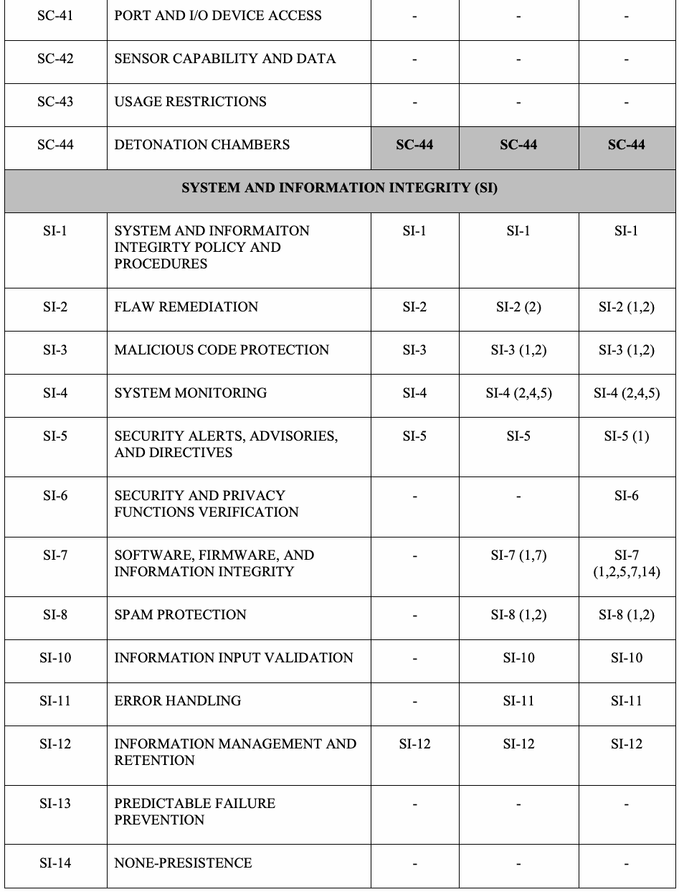
| SC-41 | ポートおよびI/Oデバイスへのアクセス | - | - | - |
| SC-42 | センサー機能およびデータ | - | - | - |
| SC-43 | 使用制限 | - | - | - |
| SC-44 | デトネーションチャンバー | SC-44 | SC-44 | SC-44 |
| システムおよび情報の完全性（SI） | ||||
| SI-1 | システムおよび情報完全性の方針と手順 | SI-1 | SI-1 | SI-1 |
| SI-2 | 欠陥の修正 | SI-2 | SI-2 (2) | SI-2 (1,2) |
| SI-3 | 悪意あるコードからの保護 | SI-3 | SI-3 (1,2) | SI-3 (1,2) |
| SI-4 | システム監視 | SI-4 | SI-4 (2,4,5) | SI-4 (2,4,5) |
| SI-5 | セキュリティ警報、勧告および指令 | SI-5 | SI-5 | SI-5 (1) |
| SI-6 | セキュリティおよびプライバシー機能の検証 | - | - | SI-6 |
| SI-7 | ソフトウェア、ファームウェアおよび情報の完全性 | - | SI-7 (1,7) | SI-7 (1,2,5,7,14) |
| SI-8 | スパム対策 | - | SI-8 (1,2) | SI-8 (1,2) |
| SI-10 | 情報入力の検証 | - | SI-10 | SI-10 |
| SI-11 | エラー処理 | - | SI-11 | SI-11 |
| SI-12 | 情報管理および保持 | SI-12 | SI-12 | SI-12 |
| SI-13 | 予測可能な障害の防止 | - | - | - |
| SI-14 | 非永続性 | - | - | - |
| SI-15 | INFORMATION OUTPUT FILTERING | - | - | - |
| SI-16 | MEMORY PROTECTION | - | SI-16 | SI-16 |
| SI-17 | FAIL-SAFE PROCEDURES | - | - | - |
| SI-20 | DE-IDENTIFICATION | - | - | - |
原本PDFの抜粋画像
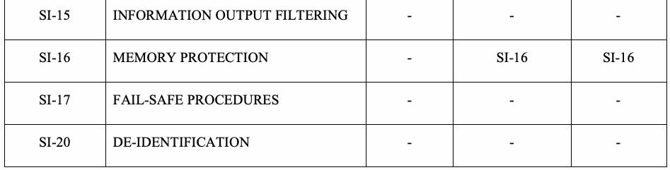
| SI-15 | 情報出力のフィルタリング | - | - | - |
| SI-16 | メモリ保護 | - | SI-16 | SI-16 |
| SI-17 | フェイルセーフ手順 | - | - | - |
| SI-20 | 非識別化 | - | - | - |
C.5
C.5
未レビュー訳Additional/Expanded Controls
追加／拡張管理策
未レビュー訳AC-21 INFORMATION SHARING
AC-21 情報共有
Control:
管理策：
未レビュー訳a. Facilitate information sharing by enabling authorized users to determine whether access authorizations assigned to the sharing partner match the access restrictions and privacy authorizations on the information for [Assignment: organization-defined information sharing circumstances where user discretion is required]; and b. Employ [Assignment: organization-defined automated mechanisms or manual processes] to assist users in making information sharing and collaboration decisions.
a. 情報共有を促進するため、認可ユーザーが、共有パートナーに割り当てられたアクセス認可と情報のアクセス制限およびプライバシー認可が一致するか判断できるようにする［ユーザーの裁量を要する情報共有状況として組織が定義するもの］。b. 情報共有および協働に関するユーザーの判断を支援するため、［組織が定義する自動化機構または手動プロセス］を使用する。
Justification: If an enterprise has deployed DMARC and is collecting forensic reports (see Section 4.6.5), administrators should make sure that any private data that may be contained in the report is redacted and not divulged to unauthorized parties.
根拠：企業がDMARCを導入し、フォレンジックレポート（第4.6.5節参照）を収集する場合、管理者はレポートに含まれ得る非公開データが墨消しされ、権限のない者に開示されないようにすべきである。
AT-2 AWARENESS TRAINING
AT-2 意識向上訓練
Control: Provide basic security and privacy awareness training to system users (including managers, senior executives, and contractors):
管理策：管理者、上級幹部および請負業者を含むシステムユーザーに、基本的なセキュリティおよびプライバシー意識向上訓練を提供する：
未レビュー訳a. As part of initial training for new users;
a. 新規ユーザーの初期訓練の一環として；
未レビュー訳b. When required by system changes; and
b. システム変更で必要になったとき；および
未レビュー訳c. [Assignment: organization-defined frequency] thereafter.
c. その後、［組織が定義する頻度］で。
Control Enhancements:
管理策の拡張：
(1) AWARENESS TRAINING | PRACTICAL EXERCISES
（1）意識向上訓練｜実践演習
未レビュー訳The organization includes practical exercises in security awareness training that simulate actual cyber attacks. Supplemental Guidance: Practical exercises may include, for example, no-notice social engineering attempts to collect information, gain unauthorized access, or simulate the adverse impact of opening malicious email attachments or invoking, via spear phishing attacks, malicious web links.
組織は、実際のサイバー攻撃を模擬する実践演習をセキュリティ意識向上訓練に含める。補足指針：実践演習には、例えば、情報収集や不正アクセスを試みる予告なしのソーシャルエンジニアリング、または悪意あるメール添付ファイルを開いたり、スピアフィッシング攻撃で悪意あるWebリンクを起動したりする悪影響の模擬が含まれる。
Justification: Administrators should have training on how to use DMARC reporting to identify and react to email borne attacks. See Section 4.6. All users of an email system should have training on how to identify and act to stop phishing attempts, opening malicious attachments and social engineering attacks using email. This could include looking for and noting the presence of digital signatures (S/MIME or OpenPGP), (see Section 5.3).
根拠：管理者はDMARCレポートを使用して電子メールを介した攻撃を特定し、対応する訓練を受けるべきである（第4.6節参照）。電子メールシステムの全ユーザーは、フィッシング、悪意ある添付ファイル、電子メールを用いたソーシャルエンジニアリング攻撃を識別し、阻止する行動について訓練を受けるべきである。これにはデジタル署名（S/MIMEまたはOpenPGP）の有無を確認することも含まれる（第5.3節参照）。
AU-10 NON-REPUDIATION
AU-10 否認防止
Control: The information system protects against an individual (or process acting on behalf of an individual) falsely denying having performed [Assignment: organization-defined actions to be covered by non-repudiation].
管理策：情報システムは、個人（またはその代理プロセス）が［否認防止の対象として組織が定義する行為］を実行した事実を虚偽に否定することを防ぐ。
Control Enhancements:
管理策の拡張：
(1) NON-REPUDIATION | ASSOCIATION OF IDENTIES
（1）否認防止｜識別情報の関連付け
The information system:
情報システムは：
(a) Binds the identity of the information producer with the information to [Assignment: organization-defined strength of binding]; and (b) Provides the means for authorized individuals to determine the identity of the producer of the information.
（a）情報生成者の識別情報を［組織が定義する関連付けの強度］で情報に結び付ける。および（b）認可された個人が情報生成者を特定する手段を提供する。
Supplemental Guidance: This control enhancement supports audit requirements that provide organizational personnel with the means to identify who produced specific information in the event of an information transfer. Organizations determine and approve the strength of the binding between the information producer and the information based on the security category of the information and relevant risk factors
補足指針：この拡張は、情報転送時に誰が特定情報を生成したかを組織職員が特定する手段を提供する監査要件を支援する。組織は情報のセキュリティ分類および関連リスク要因に基づき、情報生成者と情報の結び付きの強度を決定し、承認する。
(2) NON-REPUDIATION | VALIDATE BINDING OF INFORMATION PRODUCER
（2）否認防止｜情報生成者の識別情報の結び付きの検証
未レビュー訳IDENTITY
識別情報
未レビュー訳The information system:
情報システムは：
(a) Validates the binding of the information producer identity to the information at [Assignment: organization-defined frequency]; and (b) Performs [Assignment: organization-defined actions] in the event of a validation error.
（a）［組織が定義する頻度］で情報生成者の識別情報と情報との結び付きを検証する。および（b）検証エラー発生時に［組織が定義する措置］を実行する。
Supplemental Guidance: This control enhancement prevents the modification of information between production and review. The validation of bindings can be achieved, for example, by the use of cryptographic checksums. Organizations determine if validations are in response to user requests or generated automatically.
補足指針：この拡張は情報の生成からレビューまでの間の改変を防ぐ。例えば暗号チェックサムで結び付きを検証できる。組織は検証をユーザー要求に応じて行うか、自動的に実行するかを決定する。
(3) NON-REPUDIATION | CHAIN OF CUSTODY
（3）否認防止｜証拠保全の連鎖
The information system maintains reviewer/releaser identity and credentials within the established chain of custody for all information reviewed or released.
情報システムは、レビューまたは公開するすべての情報について、確立された証拠保全の連鎖に沿ってレビュー担当者／公開担当者の識別情報および資格情報を維持する。
Supplemental Guidance: Chain of custody is a process that tracks the movement of evidence through its collection, safeguarding, and analysis life cycle by documenting each person who handled the evidence, the date and time it was collected or transferred, and the purpose for the transfer. If the reviewer is a human or if the review function is automated but separate from the release/transfer function, the information system associates the identity of the reviewer of the information to be released with the information and the information label. In the case of human reviews, this control enhancement provides organizational officials the means to identify who reviewed and released the information. In the case of automated reviews, this control enhancement ensures that only approved review functions are employed.
補足指針：証拠保全の連鎖とは、証拠の収集、保護および分析のライフサイクルを通じた移動を追跡するプロセスである。証拠を扱った各人、収集または移管の日時、および移管目的を記録する。レビュー担当者が人である場合、またはレビュー機能が自動化されていても公開／転送機能と分離されている場合、情報システムは公開対象情報のレビュー担当者の識別情報を情報およびそのラベルに関連付ける。人によるレビューでは、誰が情報をレビューして公開したかを組織職員が特定できる。自動レビューでは、承認されたレビュー機能のみが使用されることを保証する。
(4) NON-REPUDIATION | VALIDATE BINDING OF INFORMATION REVIEWER
（4）否認防止｜情報レビュー担当者の識別情報の結び付きの検証
未レビュー訳IDENTITY
識別情報
未レビュー訳The information system:
情報システムは:
(a) Validates the binding of the information reviewer identity to the information at the transfer or release points prior to release/transfer between [Assignment: organization-defined security domains]; and (b) Performs [Assignment: organization-defined actions] in the event of a validation error.
(a) 情報の転送または公開前に、[Assignment: organization-defined security domains] 間の転送／公開ポイントで、情報レビュー担当者の識別情報と情報との結び付きを検証する; および (b) 検証エラーが発生した場合に [Assignment: organization-defined actions] を実行する。
Supplemental Guidance: This control enhancement prevents the modification of information between review and transfer/release. The validation of bindings can be achieved, for example, by the use of cryptographic checksums. Organizations determine validations are in response to user requests or generated automatically.
補足指針: この管理策強化は、レビューから転送／公開までの間に情報が変更されることを防ぐ。結び付きの検証は、たとえば暗号チェックサムの使用によって実現できる。組織は、検証をユーザー要求に応じて行うか、自動的に生成するかを決定する。
(5) (WITHDRAWN)
(5) (撤回)
Supplemental Guidance:
補足指針:
Types of individual actions covered by non-repudiation include, for example, creating information, sending and receiving messages, approving information (e.g., indicating concurrence or signing a contract). Non-repudiation protects individuals against later claims by: (i) authors of not having authored particular documents; (ii) senders of not having transmitted messages; (iii) receivers of not having received messages; or (iv) signatories of not having signed documents. Non-repudiation services can be used to determine if information originated from a particular individual, or if an individual took specific actions (e.g., sending an email, signing a contract, approving a procurement request) or received specific information. Organizations obtain non-repudiation services by employing various techniques or mechanisms (e.g., digital signatures, digital message receipts).
否認防止が対象とする個人の行動には、たとえば情報の作成、メッセージの送受信、情報の承認（例: 同意の表明、契約への署名）が含まれる。否認防止は、後になって次の者が主張することから個人を保護する: (i) 作成者が特定文書を作成していない; (ii) 送信者がメッセージを送信していない; (iii) 受信者がメッセージを受信していない; または (iv) 署名者が文書に署名していない。否認防止サービスを使うと、情報が特定の個人に由来するか、個人が特定の行動（例: メール送信、契約署名、調達要求の承認）を実行したか、または特定の情報を受け取ったかを判断できる。組織はデジタル署名、デジタルメッセージ受領証など、さまざまな技法またはメカニズムを採用して否認防止サービスを取得する。
Justification: Organizations using email for information transfer should use S/MIME or OpenPGP to provide authentication of the original sender (via a digital signature). In addition, the organization should provide an alternate means to publish sender digital signature certificates so that receivers can validate email digital signatures. See Section 5.3.
根拠：情報転送にメールを使用する組織は、（デジタル署名による）元の送信者の認証を提供するため、S/MIME または OpenPGP を使うべきである。さらに、受信者がメールのデジタル署名を検証できるよう、送信者のデジタル署名証明書を公開する代替手段を組織が提供するべきである。第5.3節を参照。
IA-9 SERVICE IDENTIFICATION AND AUTHENTICATION
IA-9 サービスの識別および認証
Control: The organization identifies and authenticates [Assignment: organization-defined information system services] using [Assignment: organization-defined security safeguards].
管理策: 組織は [Assignment: organization-defined information system services] を [Assignment: organization-defined security safeguards] を用いて識別および認証する。
Control Enhancements:
管理策強化:
(1) SERVICE IDENTIFICATION AND AUTHENTICATION | INFORMATION
(1) サービスの識別および認証 | 情報交換
未レビュー訳EXCHANGE
交換
未レビュー訳The organization ensures that service providers receive, validate, and transmit identification and authentication information.
サービスプロバイダーが識別情報および認証情報を受領、検証、送信することを組織が確実にする。
Justification: An organization should have certificates to authenticate MTAs that receive mail from external sources (i.e., the Internet) and for MTAs that host users’ inboxes that are accessed via POP3, IMAP or Microsoft Exchange. See Section 2.3.
正当化: 外部ソース（すなわちインターネット）からメールを受信する MTA、および POP3、IMAP、Microsoft Exchange 経由でアクセスされるユーザー受信箱をホストする MTA を認証するため、組織は証明書を用意するべきである。第2.3節を参照。
Control Extension:
管理策拡張:
(2) The organization should provide additional methods to validate a given MTA’s certificate. Examples of this include DANE TLSA RRs (see Section 5.2.4) or SMTP Strict Transport Security (Section 5.2.5).
(2) 組織は、特定 MTA の証明書を検証する追加手段を提供するべきである。例には DANE TLSA RR（第5.2.4節参照）または SMTP 厳格トランスポートセキュリティ（第5.2.5節）がある。
未レビュー訳IP-X INDIVIDUAL PARTICIPATION (potential of entire family)
IP-X 個人の参加（ファミリー全体の可能性あり）
Justification: Organizations that use incoming and/or outgoing email content scanning should have a policy and set of procedures in place to make users aware of the organization’s email policy. This scanning could be done for a variety of reasons (see Section 6.3.3). This includes consent, privacy notice and the remediation taken when the violations of the policy are detected.
正当化: 受信および／または送信メール内容のスキャンを行う組織は、組織のメールポリシーをユーザーに認識させる方針と一連の手順を整備するべきである。このスキャンはさまざまな理由で実施される（第6.3.3節参照）。これには同意、プライバシー通知、ポリシー違反検出時に取る是正措置が含まれる。
IR-X INCIDENT RESPONSE (potential of entire family)
IR-X インシデント対応（ファミリー全体の可能性あり）
Justification: Organizations deploying DMARC (see Section 4.6) may need to generate a new plan to handle DMARC forensic reports that indicate their domain is being spoofed as part of a phishing campaign against a third party. This is not necessarily an attack against the organization, but an attack using the organization’s reputation to subvert one or more victims. DMARC forensic reports can be used to identify these attacks that may have been unknown to the organization previously.
正当化: DMARC を導入する組織（第4.6節参照）は、第三者を狙ったフィッシングキャンペーンの一部として自組織のドメインが偽装されていることを示す DMARC フォレンジックレポートに対応する新しい計画の策定が必要となる場合がある。これは必ずしも組織への攻撃ではなく、1人以上の被害者を欺くために組織の評判を悪用する攻撃である。DMARC フォレンジックレポートを用いて、組織が以前は知らなかった可能性のあるこうした攻撃を特定できる。
PS-4 PERSONNEL TERMINATION
PS-4 人員の雇用終了
Control: The organization, upon termination of individual employment:
管理策: 個人の雇用終了時に、組織は次を行う:
未レビュー訳a. Disables information system access within [Assignment: organization-defined time-period];
a. [Assignment: organization-defined time-period] 内に情報システムへのアクセスを無効化する;
未レビュー訳b. Terminates/revokes any authenticators/credentials associated with the individual;
b. 当該個人に関連する認証器／資格情報をすべて終了／失効させる;
未レビュー訳c. Conducts exit interviews that includes discussion of [Assignment: organization-defined information security topics];
c. [Assignment: organization-defined information security topics] の説明を含む退職面談を実施する;
未レビュー訳d. Retrieves all security-related organizational information system-related property;
d. セキュリティ関連の組織情報システム資産をすべて回収する;
未レビュー訳e. Retains access to organizational information and information systems formerly controlled by terminated individual; and
e. 解雇された個人が以前管理していた組織情報および情報システムへのアクセスを保持する; および
未レビュー訳f. Notifies [Assignment: organization-defined personnel or roles] within [Assignment: organization-defined time-period].
f. [Assignment: organization-defined time-period] 内に [Assignment: organization-defined personnel or roles] へ通知する。
Justification: This control is selected so that when an email administrator leaves a position, all credentials that the administrator had access to are revoked. This includes key pairs used to with SMTP over TLS (see Section 5.2), DKIM (see Section 4.5) and/or S/MIME key pairs.
根拠：メール管理者が職を離れる際に、その管理者がアクセスできたすべての資格情報が失効されるよう、この管理策を選択する。これには、SMTP over TLS（第5.2節参照）に使用する鍵ペア、DKIM（第4.5節参照）の鍵、および／または S/MIME 鍵ペアが含まれる。
In addition, when an organization terminates a third-party email service, administrators should revoke any credentials that the third party may have had for the organizations. Examples of this include DKIM keys used by third party senders stored in the organization’s DNS (see Section 4.5.11) and SPF entries used to authenticate third-party senders (see Section 4.4.4).
さらに組織が第三者メールサービスを終了する場合、管理者は第三者が組織のために保持していた可能性のある資格情報を失効させるべきである。例として、組織の DNS に保存された第三者送信者の DKIM 鍵（第4.5.11節参照）や、第三者送信者を認証するために使われる SPF エントリー（第4.4.4節参照）がある。
SC-7 BOUNDARY PROTECTION
SC-7 境界保護
Control: The information system: a) Monitors and controls communications at the external boundary of the system and at key internal boundaries within the system; b) Implements subnetworks for publicly accessible system components that are [Selection: physically; logically] separated from internal organizational networks; and c) Connects to external networks or systems only through managed interfaces consisting of boundary protection devices arranged in accordance with an organizational security and privacy architecture.
管理策: 情報システムは、a) システムの外部境界およびシステム内の主要な内部境界における通信を監視および制御する; b) 一般にアクセス可能なシステムコンポーネント用に、内部組織ネットワークから [Selection: physically; logically] 分離されたサブネットワークを実装する; および c) 組織のセキュリティおよびプライバシーアーキテクチャに従って配置された境界保護デバイスで構成される管理対象インターフェースを介してのみ外部ネットワークまたはシステムに接続する。
Control Extensions:
管理策拡張:
(10) BOUNDARY PROTECTION | PREVENT UNAUTHORIZED EXFILTRATION
(10) 境界保護 | 不正な持ち出しの防止
The organization prevents the unauthorized exfiltration of information across managed interfaces.
管理対象インターフェースをまたぐ情報の不正な持ち出しを組織が防止する。
Supplemental Guidance: Safeguards implemented by organizations to prevent unauthorized exfiltration of information from information systems include, for example: (i) strict adherence to protocol formats; (ii) monitoring for beaconing from information systems; (iii) monitoring for steganography; (iv) disconnecting external network interfaces except when explicitly needed; (v) disassembling and reassembling packet headers; and (vi) employing traffic profile analysis to detect deviations from the volume/types of traffic expected within organizations or call backs to command and control centers. Devices enforcing strict adherence to protocol formats include, for example, deep packet inspection firewalls and XML gateways. These devices verify adherence to protocol formats and specification at the application layer and serve to identify vulnerabilities that cannot be detected by devices operating at the network or transport layers. This control enhancement is closely associated with cross-domain solutions and system guards enforcing information flow requirements.
補足指針: 情報システムからの情報の不正な持ち出しを防ぐため組織が実装する保護策には、たとえば次が含まれる: (i) プロトコル形式の厳格な遵守; (ii) 情報システムからのビーコン通信の監視; (iii) ステガノグラフィの監視; (iv) 明示的に必要な場合を除いて外部ネットワークインターフェースを切断する; (v) パケットヘッダーの分解および再構成; および (vi) 組織内で想定されるトラフィックの量／種類からの逸脱、またはコマンド・アンド・コントロールセンターへのコールバックを検出するトラフィックプロファイル分析の採用。プロトコル形式の厳格な遵守を強制するデバイスには、たとえばディープパケットインスペクションファイアウォールや XML ゲートウェイがある。これらのデバイスはアプリケーション層でプロトコル形式および仕様への準拠を検証し、ネットワーク層またはトランスポート層で動作するデバイスでは検出できない脆弱性を特定する。この管理策強化は、情報フロー要件を強制するクロスドメインソリューションおよびシステムガードと密接に関連する。
(11) BOUNDARY PROTECTION | RESTRICT INCOMING COMMUNICATIONS
(11) 境界保護 | 受信通信トラフィックの制限
未レビュー訳TRAFFIC
トラフィック
未レビュー訳The information system only allows incoming communications from [Assignment: organization-defined authorized sources] to be routed to [Assignment: organization-defined authorized destinations].
情報システムは、[Assignment: organization-defined authorized sources] からの受信通信のみを [Assignment: organization-defined authorized destinations] にルーティングする。
未レビュー訳Supplemental Guidance: This control enhancement provides determinations that source and destination address pairs represent authorized/allowed communications. Such determinations can be based on several factors including, for example, the presence of such address pairs in the lists of authorized/allowed communications; the absence of such address pairs in lists of unauthorized/disallowed pairs; or meeting more general rules for authorized/allowed source and destination pairs.
補足指針: この管理策強化は、送信元と宛先のアドレスの組が許可された通信を表すかどうかの判定を提供する。このような判定は、たとえば、許可／承認済み通信の一覧にその組があること、未承認／禁止された組の一覧にないこと、または許可された送信元と宛先の組に関するより一般的な規則を満たすことなど、複数の要因に基づいて行える。
Justification: Email systems should have incoming mail filters to detect, quarantine or reject mail from known bad senders (e.g., known Spam or malicious senders). Email systems should also implement outgoing mail filters to prevent sensitive data exfiltration and detect internal hosts that may be compromised to send Spam using the organization’s reputation to spoof victims.
正当化: メールシステムは、既知の悪意ある送信者（例: 既知のスパム送信者または悪意ある送信者）からのメールを検知、隔離、または拒否する受信メールフィルターを備えるべきである。また、機微データの持ち出しを防止し、組織の評判を悪用して被害者を偽装するスパムを送信する侵害された可能性のある内部ホストを検知する送信メールフィルターも実装するべきである。
SC-8 TRANSMISSION CONFIDENTIALITY AND INTEGRITY
SC-8 伝送の機密性および完全性
Control: The information system protects the [Selection (one or more): confidentiality; integrity] of transmitted information.
管理策: 情報システムは、伝送される情報の [Selection (one or more): confidentiality; integrity] を保護する。
Control Enhancements:
管理策強化:
(1) TRANSMISSION CONFIDENTIALITY AND INTEGRITY | CRYPTOGRAPHIC OR
(1) 伝送の機密性および完全性 | 暗号化または代替の物理的保護
未レビュー訳ALTERNATE PHYSICAL PROTECTION
代替の物理的保護
未レビュー訳The information system implements cryptographic mechanisms to [Selection (one or more): prevent unauthorized disclosure of information; detect changes to information] during transmission unless otherwise protected by [Assignment: organization-defined alternative physical safeguards].
情報システムは、[Assignment: organization-defined alternative physical safeguards] によって別途保護される場合を除き、伝送中の [Selection (one or more): prevent unauthorized disclosure of information; detect changes to information] を実現する暗号メカニズムを実装する。
Supplemental Guidance: Encrypting information for transmission protects information from unauthorized disclosure and modification. Cryptographic mechanisms implemented to protect information integrity include, for example, cryptographic hash functions which have common application in digital signatures, checksums, and message authentication codes. Alternative physical security safeguards include, for example, protected distribution systems.
補足指針: 伝送する情報を暗号化すると、不正な開示および改変から情報を保護できる。情報の完全性を保護するために実装される暗号メカニズムには、デジタル署名、チェックサム、メッセージ認証コードで一般的に使われる暗号ハッシュ関数などがある。代替の物理的セキュリティ保護策には、保護された配送システムなどがある。
Justification: Email systems should deploy security protocols to protect the integrity of email messages and the confidentially of messages in transit. For integrity protection, email systems should use DKIM (see Section 4.5) and/or S/MIME digital signatures (see Section 5.3) when sending messages. For confidentiality, email systems should use SMTP over TLS (see Section 5.2).
正当化: メールシステムは、メールメッセージの完全性と転送中の機密性を保護するセキュリティプロトコルを導入するべきである。完全性保護には、メッセージ送信時に DKIM（第4.5節参照）および／または S/MIME デジタル署名（第5.3節参照）を使うべきである。機密性保護には、SMTP over TLS（第5.2節参照）を使うべきである。
SC-23 SESSION AUTHENTICITY
SC-23 セッションの真正性
Control: The information system protects the authenticity of communications sessions.
管理策: 情報システムは通信セッションの真正性を保護する。
Supplemental Guidance: This control addresses communications protection at the session, versus packet level (e.g., sessions in service-oriented architectures providing web-based services) and establishes grounds for confidence at both ends of communications sessions in ongoing identities of other parties and in the validity of information transmitted. Authenticity protection includes, for example, protecting against man-in-the-middle attacks/session hijacking and the insertion of false information into sessions.
補足指針: この管理策は、通信保護をパケットレベルではなくセッションレベルで扱い（例: ウェブベースサービスを提供するサービス指向アーキテクチャのセッション）、通信セッションの双方において、継続中の相手の識別情報と伝送情報の有効性に対する信頼の根拠を確立する。真正性保護には、たとえば中間者攻撃／セッションハイジャックや、セッションへの偽情報挿入に対する保護が含まれる。
Control Enhancements:
管理策強化:
(5) SESSION AUTHENTICITY | ALLOWED CERTIFICATE AUTHORITIES
(5) セッションの真正性 | 許可された証明機関
The information system only allows the use of [Assignment: organization-defined certificate authorities] for verification of the establishment of protected sessions.
情報システムは、保護されたセッションの確立を検証するために [Assignment: organization-defined certificate authorities] のみを使用する。
Supplemental Guidance: Reliance on certificate authorities (CAs) for the establishment of secure sessions includes, for example, the use of Secure Socket Layer (SSL) and/or Transport Layer Security (TLS) certificates. These certificates, after verification by their respective CAs, facilitate the establishment of protected sessions between web clients and web servers.
補足指針: セキュアセッションの確立に証明機関（CA）を信頼することには、たとえば Secure Socket Layer（SSL）および／または Transport Layer Security（TLS）証明書の使用が含まれる。各 CA による検証後、これらの証明書はウェブクライアントとウェブサーバー間の保護されたセッション確立を可能にする。
Justification: Prior to establishing a TLS connection for SMTP transmission of email, a sending MTA should authenticate the certificate provided by the receiving MTA. This authentication could be PKIX, or an alternative method (e.g., DANE, SMTP-STS, etc.). See Section 5.2 for details.
正当化: メール伝送用 SMTP の TLS 接続を確立する前に、送信 MTA は受信 MTA が提供する証明書を認証するべきである。この認証には PKIX または代替方式（例: DANE、SMTP-STS など）を使用できる。詳細は第5.2節を参照。
SC-44 DETONATION CHAMBERS
SC-44 デトネーションチャンバー
Control: The organization employs a detonation chamber capability within [Assignment: organization-defined system, system component, or location].
管理策: 組織は [Assignment: organization-defined system, system component, or location] 内にデトネーションチャンバー機能を採用する。
Supplemental Guidance: Detonation chambers, also known as dynamic execution environments, allow organizations to open email attachments, execute untrusted or suspicious applications, and execute Universal Resource Locator (URL) requests in the safety of an isolated environment or a virtualized sandbox. These protected and isolated execution environments provide a means of determining whether the associated attachments or applications contain malicious code. While related to the concept of deception nets, this control is not intended to maintain a long-term environment in which adversaries can operate and their actions can be observed. Rather, it is intended to quickly identify malicious code and reduce the likelihood that the code is propagated to user environments of operation (or prevent such propagation completely).
補足指針: 動的実行環境とも呼ばれるデトネーションチャンバーにより、組織はメール添付ファイルを開き、信頼されていない、または不審なアプリケーションを実行し、Universal Resource Locator (URL) 要求を、分離された環境または仮想化されたサンドボックスの安全な状態で実行できる。こうした保護され隔離された実行環境により、関連する添付ファイルまたはアプリケーションに悪意あるコードが含まれるかを判定できる。欺瞞ネットの概念と関連はあるが、この管理策は攻撃者が長期間活動し、その行動を観察できる環境を維持することを意図していない。むしろ悪意あるコードを迅速に特定し、運用中のユーザー環境への拡散可能性を減らす（または完全に防止する）ことを意図している。
Justification: Incoming email and attachments from outside sources should be examined in detonation chambers to protect against malicious code or URLs contained in the email message. See Section 6.
正当化: メールメッセージに含まれる悪意あるコードまたは URL から保護するため、外部ソースからの受信メールおよび添付ファイルを爆発解析環境で検査するべきである。第6節を参照。